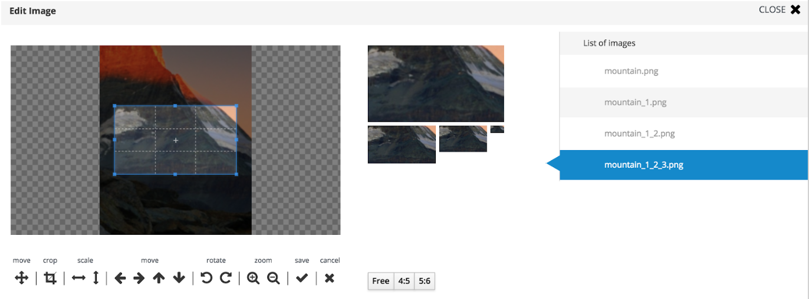
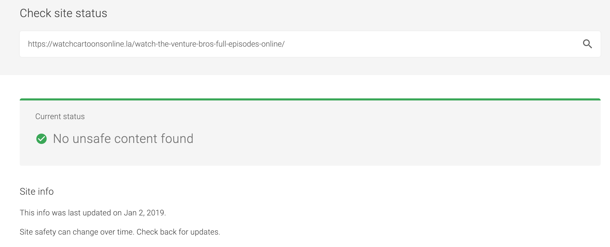
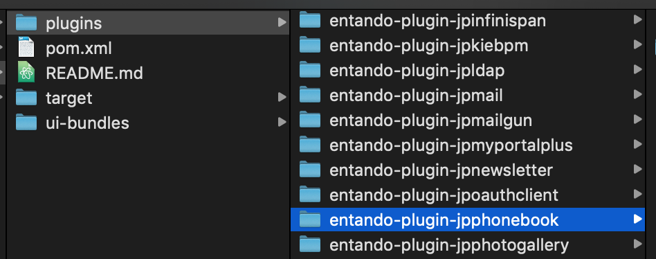

1. Entando 6.1.0
1.1. Getting Started
1.1.1. Pre-Requisites
-
Java 1.8
-
node LTS
-
Use nvm to setup your node and npm install (or manually install node LTS)
-
-
Maven 3.0.5+
-
Git
-
Docker
-
Install: https://docs.docker.com/install/
-
-
Access to a Docker images repository
-
Docker hub works great and is free
-
Helm 2.x (2.x only- 3.x is not currently compatible or supported)
1.1.2. Steps
Kubernetes Setup Instructions
-
Enable ingress in your kubernetes installation
-
For minikube this is done with the command : minikube addons enable ingress
-
-
Make sure you have at least 4 CPUs and 8GB of ram allocated to your kubernetes client
-
minikube start --cpus 4 --memory 8192 -
Or set globally
-
minikube config set cpus 4 -
minikube config set memory 8192
-
-
-
Install a helm2 client for your environment.
-
You only need the client - no need to install Tiller, the server side component. We use the client to process templates. Doesn’t require cluster changes
-
Note that it is important that it is helm2. The current default is 3.
-
-
Clone this project locally to a development environment of your choice
-
In the values.yaml file you need to update the configuration for your environment and deployment.
-
If you are deploying in Openshift, set the operator.supportOpenshift = true , otherwise set it to false
-
Set ENTANDO_DEFAULT_ROUTING_SUFFIX to the value that matches the env you’re going to deploy to. For local clusters (MicroK8S, Minikube) that would be your local cluster IP address (e.g. minikube ip) with the suffix nip.io, e.g. 192.168.1.9.nip.io. On a shared cluster you may need to consult your cluster admin.
-
If you want to deploy the Process Driven Applications Plugin (PDA), set deployPDA = true, otherwise leave it as false
-
-
Ensure you have a namespace in the cluster you can use, and the current user has admin permissions on the namespace.
-
Ensure the Entando CRDs are installed on your cluster. Follow this guide to learn how to do so: https://github.com/entando-k8s/entando-k8s-custom-model/tree/v6.1.0/src/main/resources/crd
-
On a command line go into the directory of the entando-helm-quickstart you cloned in step 2
-
Process the template and deploy the output using your favorite Kubernetes client, e.g
-
helm template --name=my-app --namespace=my-namespace ./ | kubectl create -f -
Or use helm to create and save the deployment descriptor to a file of your choice
helm template --name=<name-of-resources> --namespace=<namespace-where-to-deploy> ./ > some-template.yaml -
And deploy it with kubectl create -f some-template.yaml
-
1.2. App Builder
The Entando App Builder is the design time environment where you can interact with and configure your page templates, layouts, widgets, and micro frontends.
1.2.1. Hello World for a Widget Using the App builder
This tutorial will take you through the basics of creating an Entando widget and placing it on a page. This document will also review the basics of fragments which are re-usable pieces of a user interface.
Basic Widget Tutorial
For this example you will use the Entando App Builder to build and assign your widget on a page. In a production system or a larger development environment you would build and deploy widgets differently, however this example provides a quick idea of the building blocks.
-
In the App Builder menu, at the top, Go To: UX Patterns -→ Widgets
-
Select NEW
-
The Custom UI Field is a freemarker template where you can put raw html and include freemarker logic,
-
It allows you to import javascript, css, or any normal HTML
-
Example, put <h2>Hello World</h2> into your widget, give it a name and save it
-
-
Go To: Page Designer -→ Page Settings
-
In the Home Page dropdown select Home / Service and select SAVE
-
Now place the widget on the page
-
Go To: Page Designer -→ Page Tree
-
On the row that says "Service", on the far right side, select the Kebab button and select CONFIGURE
-
Find the widget created in step 5 on the right hand side
-
Drag and drop the widget onto the open frame of the page
-
Select PUBLISH at the bottom of the screen
-
Then select GO TO HOME PAGE in the upper right
-
You should see "Hello World" on the page
Simple Fragment tutorial
A fragment is a way to take a common piece of front end code and reuse it across multiple
pages or widgets. Common elements such as basic html, javascript, or freemarker logic
can be stored as fragments and referenced via the <@wp.fragment … tag.
Starting from the simple widget tutorial above:
-
In the app builder Go To: UX Patterns -→ Fragments
-
Enter the code for the fragment as
test -
In the
Gui Codeenter<h2>This is a fragment</h2> -
Next place the fragment on a page
-
Go To: Ux Patterns -→ Page Models
-
On the row for
service, select EDIT -
Use the fragment tag to place the fragment on the page
<@wp.fragment code="test"/> -
SAVE the page model
-
Go To: homepage (assuming you’ve set the service page to the homepage)
-
Note that the fragment is printed including the HTML tags. By default html embedded via a fragment tag is escaped so you get it rendered exactly as you enter it. You’ll need to un-escape it to get it to render correctly.
-
Go back to your page model (UX Patterns -→ Page Models) select SERVICE and EDIT
-
Change the tag to:
<@wp.fragment code="test" escapeXml=false/> -
Go back to the homepage
-
See correctly rendered fragment
Freemarker Basics in Entando
The freemarker templating language gives you a lot of flexibility and power in how pages are rendered. You can include conditional logic, inject information from the backend, check for query parameters and route to different pages.
For example, to check for a query parameter you can use:
<#if RequestParameters.myParam?exists > …
To check the current username, use:
<#if (Session.currentUser.username != "guest") >
When you need dynamic behavior in your widgets consider using the power of freemarker.
Useful Links
1.2.2. Tutorial: Extending the App Builder
Apps for the Entando App Builder are developed as standalone applications which can be run using npm start in standalone mode.
Each application should be deployed in npm using the @entando namespace and will export into their dist folder several items used by the App Builder when integrating it into the full application.
Creating a Basic Application
To create a basic application, use the [entando fpg](https://github.com/entando/fpg) running the npx @entando/fpg ab-app <appName> command.
the appName should only contain alphanumeric characters and underscores, and should begin with a letter.
This will create inside the working directory, a boilerplate app-builder app in a directory named <appName> argument.
i.e.
using the command npm @entando/fpg ab-app testing inside your home directory, a directory named testing will be created containing the app.
All dependencies will already be installed allowing you to cd inside the project directory and run npm start to start the app running.
Understanding the Stand Alone Environment
Each app for the App Builder, can run in both a stand alone mode and an integrated mode.
Using npm start will use standalone mode.
In this environment you’ll be looking at the user interface of the app inside a default page. This page, which includes a default menu, will not be exported and therefore can be customized.
To better understand which elements and components are being exported to App Builder, it is best to understand the anatomy of the app.
1.2.3. Exports
Each app will have a babel.js export file similar to:
import menu from 'ui/common/LinkMenu';
import { cms as state } from 'state/rootReducer';
import { routes, routesDir } from 'ui/App';
import en from 'locales/en';
import it from 'locales/it';
const testing = {
id: 'testing',
menu,
state,
routes,
routesDir,
locales: {
en,
it,
},
};
export default testing;1.2.4. id: is the app id.
This parameter is used by App Builder to differentiate all integrated apps.
1.2.5. menu: is a React component containing all the menu elements.
These elements are used inside the standalone environment and inside the integrated environment as a second level menu. The boilerplate app contains a basic menu.
import React from 'react';
import { LinkMenuItem } from '@entando/menu';
import { FormattedMessage } from 'react-intl';
const LinkMenu = () => (
<>
<LinkMenuItem
id="menu-SECTION_ID"
label={<FormattedMessage id="testing.menu.SECTION_NAME" defaultMessage="SECTION_NAME" />}
to='/use/const/here/imported/from/routes'
/>
</>
);
export default LinkMenu;Customizing the Menu
For this exercise, we will create two links inside the menu. The first will link to a page listing all the users inside the entando instance. The second will list all the existing page models inside the Entando instance.
For this example we’re using existing APIs from the Entando core just for simplicity, you can instead call any API or data source.
In your app project, open src/ui/common/LinkMenu.js and update the const to the code below.
const LinkMenu = () => (
<>
<LinkMenuItem
id="menu-userList"
label={<FormattedMessage id="testing.menu.userList" defaultMessage="User List" />}
to='/use/const/here/imported/from/routes'
/>
<LinkMenuItem
id="menu-pageModelList"
label={<FormattedMessage id="testing.menu.pageModelList" defaultMessage="Page Model List" />}
to='/use/const/here/imported/from/routes'
/>
</>
);it is important that both the <LinkMenuItem> id property and the `<FormattedMessage>`properties inside label have the correct values assigned, i.e.:
the LinkMenuItem id will be menu-userList while the FormattedMessage id will be testing.menu.userList and the defaultMessage will be User List.
1.2.6. locales
The locales files are objects that contain all of the i18n locales of the app.
By default the boilerplate contains both the english and italian i18n files.
In your app project in src/locales/en.js and src/locales/it.js you can see your labels.
export default {
locale: 'en',
messages: {
'testing.title': '',
'testing.label.errors': '',
'testing.label.cancel': '',
'testing.chooseAnOption': '',
'testing.tip': '',
'testing.new': '',
'testing.save': '',
'testing.saveAndApprove': '',
'testing.unpublish': '',
'testing.setContentAs': '',
'testing.cancel': '',
'testing.saveAndContinue': '',
'testing.stickySave.status': '',
'testing.stickySave.lastAutoSave': '',
},
};While running in standalone mode the boilerplate does not offer a way for the user pick a locale, but both will be loaded inside app-builder and will be consumed as intended by it, using the correct one based on the user-picked language.
It is of course possible to change the standalone app to give the user the option to choose the locale in here as well, but this is not something will be covering in this tutorial.
Customizing the menu labels
To customize the existing menu labels, we’ll add the new label ids inside both the english and Italian locale files:
|
Note
|
If you named your app something besides testing you’ll need to fix these tags to match the name of your app.
|
...
messages: {
...
'testing.menu.userList': 'List of Users',
'testing.menu.pageModelList': 'Page Models',
...
},
...The key in the messages object matches the id of the `<FormattedMessage>`component we placed inside the menu, while its value is the actual string that will be displayed depending on the currently active language.
1.2.7. Routes and RoutesDir
Both of these elements are imported from src/ui/App.js. The first one is a collection of actual <Route> components, and the second one is an object containing each route data, i.e.:
export const routesDir = [
{
path: ROUTE_TESTING,
component: <>app component</>,
},
];The constant ROUTE_TESTING is imported from src/app-init/routes.js
Customizing the Routes
Next we will create the two routes for the two links we have created by creating first the two constants needed.
In your IDE open src/app-init/routes.js
export const ROUTE_TESTING = '/testing';
export const ROUTE_USER_LIST = '/testing/user-list';
export const ROUTE_PAGE_MODELS = '/testing/page-models';|
Note
|
Change the value of testing to what you selected for the name of your App extension.
|
The value of each constant will be the path of the route. It is important that each route is a subroute of the id of the app itself, otherwise this may cause name collision when running inside the integrated environment of app-builder.
Both routes are next imported inside App.js:
Update the imports with your new ROUTE tags.
import {
ROUTE_TESTING,
ROUTE_USER_LIST,
ROUTE_PAGE_MODELS,
} from 'app-init/routes';and then add to the routesDir constant:
export const routesDir = [
{
path: ROUTE_TESTING,
component: <>app component</>,
},
{
path: ROUTE_USER_LIST,
render: () => <>user list</>,
},
{
path: ROUTE_PAGE_MODELS,
render: () => <>page models</>,
},
];Next, import the routes constants inside LinkMenu.js and change accordingly the to property of the <LinkMenuItem> component:
...
import {
ROUTE_USER_LIST,
ROUTE_PAGE_MODELS,
} from 'app-init/routes';
const LinkMenu = () => (
<>
<LinkMenuItem
id="menu-userList"
label={<FormattedMessage id="tatata.menu.userList" defaultMessage="User List" />}
to={ROUTE_USER_LIST}
/>
<LinkMenuItem
id="menu-pageModelList"
label={<FormattedMessage id="tatata.menu.pageModelList" defaultMessage="Page Model List" />}
to={ROUTE_PAGE_MODELS}
/>
</>
);
...Next clicks on the links in the menu will change the routes and display the content defined in the App.js file.
state
The state in src/babel.js is the combined reducer of the app, the rootReducer.js contains the combined reducer of the app and exports it, but also contains the entire reducer of the app when running in standalone mode.
export const testing = combineReducers({
// implement here your app specific reducers
});
export default combineReducers({
apps: combineReducers({ testing }),
api,
currentUser,
form,
loading,
locale,
messages,
modal,
pagination,
});The app specific reducers are stored inside the apps object, this is done to avoid possible name collisions with any reducer stored inside app-builder when running the app in integrated mode.
Customizing the Reducers
Next we will be creating the two reducers for the user list and page models. They will be created inside two new directories src/state/apps/testing/userList/ and src/state/apps/testing/pageModels. The types.js files will contain the two action types that we’ll need.
userList/types.js
// eslint-disable-next-line import/prefer-default-export
export const ADD_USERS = 'apps/testing/add-users';pageModels/types.js
// eslint-disable-next-line import/prefer-default-export
export const ADD_PAGE_MODELS = 'apps/testing/page-models/add-page-models';The value of both constants contain the whole namespace apps/testing/REDUCER this is done to avoid any possible name collision when running the app in integrated mode.
Next create both actions files:
userList/actions.js
import {
ADD_USERS,
} from 'state/apps/testing/userList/types';
// eslint-disable-next-line import/prefer-default-export
export const addUsers = users => ({
type: ADD_USERS,
payload: users,
});pageModels/actions.js
import {
ADD_PAGE_MODELS,
} from 'state/apps/testing/pageModels/types';
// eslint-disable-next-line import/prefer-default-export
export const addPageModels = pageModels => ({
type: ADD_PAGE_MODELS,
payload: pageModels,
});then the selectors:
userList/selectors.js
import { createSelector } from 'reselect';
export const getUserList = state => state.apps.testing.userList;
export const getList = createSelector(getUserList, userList => userList.list);pageModels/selectors.js
import { createSelector } from 'reselect';
export const getPageModels = state => state.apps.testing.pageModels;
export const getList = createSelector(getPageModels, pageModels => pageModels.list);And finally the reducers. The default state is going to contain some sample data for us to display.
userList/reducer.js
import { ADD_USERS } from 'state/apps/testing/userList/types';
const defaultState = {
list: [
{
username: 'admin',
registration: '2018-01-08 00:00:00',
lastLogin: '2018-01-08 00:00:00',
lastPasswordChange: '2018-01-08 00:00:00',
status: 'active',
passwordChangeRequired: true,
profileAttributes: {
fullName: 'admin',
email: 'admin@entando.com',
},
},
{
username: 'user1',
registration: '2018-01-08 00:00:00',
lastLogin: '2018-01-08 00:00:00',
lastPasswordChange: '2018-01-08 00:00:00',
status: 'disabled',
passwordChangeRequired: true,
profileAttributes: {
fullName: 'User Name',
email: 'user1@entando.com',
},
},
],
};
const reducer = (state = defaultState, action = {}) => {
switch (action.type) {
case ADD_USERS: {
return { ...state, list: action.payload };
}
default: return state;
}
};
export default reducer;pageModels/reducer.js
import { ADD_PAGE_MODELS } from 'state/apps/testing/pageModels/types';
const defaultState = {
list: [
{
code: 'home',
descr: 'Home Page',
configuration: {
frames: [
{
pos: 0,
descr: 'Navbar',
sketch: {
x1: 0,
y1: 0,
x2: 2,
y2: 0,
},
},
{
pos: 1,
descr: 'Navbar 2',
sketch: {
x1: 3,
y1: 0,
x2: 5,
y2: 0,
},
},
],
},
template: '<html></html>',
},
{
code: 'service',
descr: 'Service Page',
configuration: {
frames: [
{
pos: 0,
descr: 'Navbar',
sketch: {
x1: 0,
y1: 0,
x2: 2,
y2: 0,
},
},
{
pos: 1,
descr: 'Navbar 2',
sketch: {
x1: 3,
y1: 0,
x2: 5,
y2: 0,
},
},
],
},
template: '<html></html>',
},
],
};
const reducer = (state = defaultState, action = {}) => {
switch (action.type) {
case ADD_PAGE_MODELS: {
return { ...state, list: action.payload };
}
default: return state;
}
};
export default reducer;Last, we can add the two reducers just created to the src/state/rootReducer.js
...
import userList from 'state/apps/testing/userList/reducer';
import pageModels from 'state/apps/testing/pageModels/reducer';
export const testing = combineReducers({
pageModels,
userList,
});
...we will now be able to see with the reduxDevTools in our browser. To view this state in your reduxDevTools go to:
State -→ apps -→ testing -→ pageModels and State -→ apps -→ testing -→ userList
1.2.8. Creating the UI Components
At this point, both routes created should be rendering a simple string. We will next create the actual component that will be rendered inside the page.
userList
Inside src/ui/userList/ create the List component. Create the userList directory and List.js file in that directory.
import React from 'react';
import {
Grid,
TablePfProvider,
} from 'patternfly-react';
const List = () => {
const data = [
{
username: 'admin',
registration: '2018-01-08 00:00:00',
},
{
username: 'user1',
registration: '2018-01-08 00:00:00',
},
];
const tr = data.map(row => (
<tr>
<td>{row.username}</td>
<td>{row.registration}</td>
</tr>
));
return (
<Grid fluid>
<TablePfProvider
striped
bordered
hover
>
<thead>
<tr>
<td>username</td>
<td>registration</td>
</tr>
</thead>
<tbody>
{tr}
</tbody>
</TablePfProvider>
</Grid>
);
};
export default List;Next, change the route inside src/ui/App.js. Add the import below and update the component to reference the List component created in the prior step.
...
import List from 'ui/userList/List';
...
{
path: ROUTE_USER_LIST,
component: List,
},
...The table will now display correctly when clicking on the menu item.
connecting to the store
Next let’s connect the component to the store to get the data from the reducer.
The first step is creating the ListContainer.js next to the List component file.
import { connect } from 'react-redux';
import { getList } from 'state/apps/testing/userList/selectors';
import List from 'ui/userList/List';
export const mapStateToProps = state => ({
data: getList(state),
});
export default connect(
mapStateToProps,
null,
)(List);And then update the List component to receive the property. The List file should now look like this:
import React from 'react';
import PropTypes from 'prop-types';
import {
Grid,
TablePfProvider,
} from 'patternfly-react';
const List = ({ data }) => {
const tr = data.map(row => (
<tr>
<td>{row.username}</td>
<td>{row.registration}</td>
</tr>
));
return (
<Grid fluid>
<TablePfProvider
striped
bordered
hover
>
<thead>
<tr>
<td>username</td>
<td>registration</td>
</tr>
</thead>
<tbody>
{tr}
</tbody>
</TablePfProvider>
</Grid>
);
};
export default List;Make sure that you remove the predefined data const since the data will now be coming from the reducer, on top of defining PropTypes rules for validating and giving a default for the injected property data.
Once complete, update the component used in the route inside App.js. Update the import to the container and update the component in ROUTE_USER_LIST to the new ListContainer.
...
import ListContainer from 'ui/userList/ListContainer';
...
{
path: ROUTE_USER_LIST,
component: ListContainer,
},
...Go back to your app. We will now see the data inside the table reflecting the content of the storage.
Page Models
inside src/ui/pageModels/ we are going to create the List component
import React from 'react';
import PropTypes from 'prop-types';
import {
Grid,
TablePfProvider,
} from 'patternfly-react';
const List = ({ data }) => {
const tr = data.map(row => (
<tr>
<td>{row.username}</td>
<td>{row.registration}</td>
</tr>
));
return (
<Grid fluid>
<TablePfProvider
striped
bordered
hover
>
<thead>
<tr>
<td>username</td>
<td>registration</td>
</tr>
</thead>
<tbody>
{tr}
</tbody>
</TablePfProvider>
</Grid>
);
};
List.propTypes = {
data: PropTypes.arrayOf(PropTypes.shape({})),
};
List.defaultProps = {
data: [],
};
export default List;Next change the route inside src/ui/App.js
...
import ListPageModels from 'ui/pageModels/List';
...
{
path: ROUTE_PAGE_MODELS,
component: ListPageModels,
},
...The table will now be displayed correctly when clicking on the menu item.
Connecting to the Store
Next, connect the component to the store to get the data from the reducer.
The very first thing we’ll do is create the ListContainer.js next to the List component file.
import { connect } from 'react-redux';
import { getList } from 'state/apps/testing/pageModels/selectors';
import List from 'ui/pageModels/List';
export const mapStateToProps = state => ({
data: getList(state),
});
export default connect(
mapStateToProps,
null,
)(List);And then update the List component to receive the property. The whole List component will have this content:
import React from 'react';
import PropTypes from 'prop-types';
import {
Grid,
TablePfProvider,
} from 'patternfly-react';
const List = ({ data }) => {
const tr = data.map(row => (
<tr>
<td>{row.code}</td>
<td>{row.descr}</td>
</tr>
));
return (
<Grid fluid>
<TablePfProvider
striped
bordered
hover
>
<thead>
<tr>
<td>code</td>
<td>descr</td>
</tr>
</thead>
<tbody>
{tr}
</tbody>
</TablePfProvider>
</Grid>
);
};
List.propTypes = {
data: PropTypes.arrayOf(PropTypes.shape({})),
};
List.defaultProps = {
data: [],
};
export default List;Next make sure that you remove the predefined data const since the data will be coming from the reducer, on top of defining PropTypes rules for validating and giving a default for the injected property data.
Once complete, update the component used in the route inside App.js
...
import PageModelsListContainer from 'ui/pageModels/ListContainer';
...
{
path: ROUTE_PAGE_MODELS,
component: PageModelsListContainer,
},
...You will now see the data inside the table reflecting the content of the storage.
1.2.9. Connecting the app to an Entando core instance
By default the app is using mocks and not connecting to any Entando core instance.
Because the app is making use of @entando/apimanager we can easily change this by setting up two .env variables inside the .env file in the project root:
REACT_APP_DOMAIN=http://localhost:8080/entando-app
REACT_APP_USE_MOCKS=falseThe REACT_APP_DOMAIN must pointing towards the domain and container where the Entando instance is running and must not contain trailing slashes.
Once this is done to make the change happen we will have to stop the app using ctrl + c and re run it with npm start.
Now the toast stating This application is using mocks won’t be popping up anymore.
You can make sure that the configuration is correct by looking at the network section in the browser dev tools. By default the app automatically makes an admin login against a plain Entando instance to authenticate the user and to be able to consume any protected api.
This is not an ideal scenario and it is meant to be used only for debugging purposes for many reasons:
-
the username and password should never be hardcoded in your app
-
if authentication is required the user should be the one performing the login action
-
the plain default passwords in use won’t be useful against a proper production instance of Entando
Adding the API Calls
We are now going to add api calls for both users and page models to retrieve the data live instead of relying on our store’s default state.
Inside src/api create the users.js file:
import { makeRequest, METHODS } from '@entando/apimanager';
// eslint-disable-next-line import/prefer-default-export
export const getUsers = (page = { page: 1, pageSize: 10 }, params = '') => (
makeRequest(
{
uri: `/api/users${params}`,
method: METHODS.GET,
mockResponse: {},
useAuthentication: true,
},
page,
)
);and then create the pageModels.js file:
import { makeRequest, METHODS } from '@entando/apimanager';
// eslint-disable-next-line import/prefer-default-export
export const getPageModels = (page = { page: 1, pageSize: 10 }, params = '') => makeRequest({
uri: `/api/pageModels${params}`,
method: METHODS.GET,
mockResponse: {},
useAuthentication: true,
}, page);Creating the Thunk
In order to use the api call we next create a thunk action, which is a redux action with side effects, like an API call.
inside the src/state/apps/testing/userList/actions.js file we are going to add the new action:
...
import { addErrors } from '@entando/messages';
import {
getUsers,
} from 'api/users';
...
// thunks
export const fetchUsers = (page = { page: 1, pageSize: 10 }, params = '') => dispatch => (
new Promise((resolve) => {
getUsers(page, params).then((response) => {
response.json().then((json) => {
if (response.ok) {
dispatch(addUsers(json.payload));
} else {
dispatch(addErrors(json.errors.map(err => err.message)));
}
resolve();
});
}).catch(() => {});
})
);Next do the same inside src/state/apps/testing/pageModels/actions.js:
...
import { addErrors } from '@entando/messages';
import {
getPageModels,
} from 'api/pageModels';
...
// thunks
export const fetchPageModels = (page = { page: 1, pageSize: 10 }, params = '') => dispatch => (
new Promise((resolve) => {
getPageModels(page, params).then((response) => {
response.json().then((data) => {
if (response.ok) {
dispatch(addPageModels(data.payload));
resolve();
} else {
dispatch(addErrors(data.errors.map(err => err.message)));
resolve();
}
});
}).catch(() => {});
})
);Now with two exports, it is safe to remove the eslint-disable-next-line comment on line 5 of both files.
changing the mapDispatchToProps in the containers
Next, in order to pass the newly created thunk to both List components, we’ll update the containers accordingly, as:
src/ui/userList/ListContainer.js
...
import { fetchUsers } from 'state/apps/testing/userList/actions';
...
export const mapDispatchToProps = dispatch => ({
fetch: () => dispatch(fetchUsers()),
});
export default connect(
mapStateToProps,
mapDispatchToProps,
)(List);src/ui/pageModels/ListContainer.js
...
import { fetchPageModels } from 'state/apps/testing/pageModels/actions';
...
export const mapDispatchToProps = dispatch => ({
fetch: () => dispatch(fetchPageModels()),
});
export default connect(
mapStateToProps,
mapDispatchToProps,
)(List);Updating the List components
Both List components were simple components with only a render method, therefore could be declared as simple constants.
Next we will fetch data during the componentDidMount life cycle event which will require we turn the constant into a class on top of changing the PropTypes to add the new fetch method passed down to the component.
src/ui/userList/List.js
import React, { Component } from 'react';
...
class List extends Component {
componentDidMount() {
const { fetch } = this.props;
fetch();
}
render() {
const { data } = this.props;
const tr = data.map(row => (
<tr>
<td>{row.username}</td>
<td>{row.registration}</td>
</tr>
));
return (
<Grid fluid>
<TablePfProvider
striped
bordered
hover
>
<thead>
<tr>
<td>username</td>
<td>registration</td>
</tr>
</thead>
<tbody>
{tr}
</tbody>
</TablePfProvider>
</Grid>
);
}
}
List.propTypes = {
data: PropTypes.arrayOf(PropTypes.shape({})),
fetch: PropTypes.func,
};
List.defaultProps = {
data: [],
fetch: () => {},
};src/ui/pageModels/List.js
import React, { Component } from 'react';
...
class List extends Component {
componentDidMount() {
const { fetch } = this.props;
fetch();
}
render() {
const { data } = this.props;
const tr = data.map(row => (
<tr>
<td>{row.code}</td>
<td>{row.descr}</td>
</tr>
));
return (
<Grid fluid>
<TablePfProvider
striped
bordered
hover
>
<thead>
<tr>
<td>code</td>
<td>descr</td>
</tr>
</thead>
<tbody>
{tr}
</tbody>
</TablePfProvider>
</Grid>
);
}
}
List.propTypes = {
data: PropTypes.arrayOf(PropTypes.shape({})),
fetch: PropTypes.func,
};
List.defaultProps = {
data: [],
fetch: () => {},
};clear the default value of the reducer
Now we should be fetching data from the server, therefore we can safely make the list key in the defaultState object an empty array:
src/state/apps/testing/userList/reducer.js
...
const defaultState = {
list: [],
};
...src/state/apps/testing/pageModels/reducer.js
...
const defaultState = {
list: [],
};
...1.2.10. adding additional dependencies
It may be necessary to set additional dependencies for your project. If the need arises, it is important to remember a few rules:
Only actual dependencies that are not already included in app-builder can be added as pure dependencies.
Every other dependency must either be a devDependency or peerDependency.
If you are not careful you may end up with duplicated dependencies that will result in errors manifesting themselves when running the app inside App Builder.
1.2.11. running the app in integrated mode within App Builder
After running npm install in the App Builder, the user can run the npm run app-install <appId> command to install the app.
This command will trigger a download of the app from npm and the installation of its component within App Builder.
After the installation process is complete, it will be possible to either npm start or npm build App Builder.
To install a dev app, like the one developed in this tutorial which have not been previously published on npm, you will need to use additional flags and will have to run a few additional commands.
Before running the Install command make sure that you have uninstalled all existing peer and dev dependencies to avoid collision with app builder. To do so, from the app builder app directory (testing, in this tutorial) just run in the correct order the following commands:
npm run babel
npm i --only=production
The first will create the dist directory that will be needed by App Builder while the second one will uninstall anything but production dependencies.
Next, from the App Builder directory, run the install command with these additional flags:
-
-dspecify the relative path where the app is installed. When using this flag the appId should be the normalized app name, without the@entando/prefix. -
-pspecify the package name if it is different from the appId
to use flags you will have to use the double dash in the command:
npm run app-install — cms -d ../testing -p @entando/testing
the value in the -p flag should always match the actual name of the app that is going to be installed inside App Builder. You can check your app name inside the package.json file of your app.
If you experience problems after running the build command delete the node_modules directory before running the second command.
1.3. Micro Frontends
1.3.1. Tutorial: create a react micro frontend widget
Prerequisites
Use last stable node version (at the time of writing v13.8.0). We suggest using nvm to handle node installations.
Bootstrap a react app
In this tutorial we use Create React App, but feel free to adopt whatever boilerplate you like.
npx create-react-app my-widget --use-npm
This is the expected output:
my-widget
├── README.md
├── node_modules
├── package.json
├── .gitignore
├── public
│ ├── favicon.ico
│ ├── index.html
│ ├── logo192.png
│ ├── logo512.png
│ ├── manifest.json
│ └── robots.txt
└── src
├── App.css
├── App.js
├── App.test.js
├── index.css
├── index.js
├── logo.svg
├── serviceWorker.js
└── setupTests.js
Now, type cd my-widget and npm start to start the app.
Wrap the react app in a custom element
Let’s add a new file WidgetElement.js, containing the custom element that will wrap the entire React app under the src folder.
import React from 'react';
import ReactDOM from 'react-dom';
import App from './App';
class WidgetElement extends HTMLElement {
connectedCallback() {
this.mountPoint = document.createElement('div');
this.appendChild(this.mountPoint);
ReactDOM.render(<App />, this.mountPoint);
}
}
customElements.define('my-widget', WidgetElement);
export default WidgetElement;|
Note
|
connectedCallback is a lifecycle hook method of custom elements, part of the web components spec.
|
Then, the index.js file should be updated. Starting from this:
import React from 'react';
import ReactDOM from 'react-dom';
import './index.css';
import App from './App';
import * as serviceWorker from './serviceWorker';
ReactDOM.render(<App />, document.getElementById('root'));
// If you want your app to work offline and load faster, you can change
// unregister() to register() below. Note this comes with some pitfalls.
// Learn more about service workers: https://bit.ly/CRA-PWA
serviceWorker.unregister();replace the whole file with these two lines
import './index.css';
import './WidgetElement';You only have to import WidgetElement plus the css, if needed.
We assume we don’t need a service worker for the widget, so we can delete serviceWorker.js.
Now, to ensure our custom element is working we have to edit public/index.html. Remove <div id="root"></div> from the body (we programmatically generated the react root in the connectedCallback method of WidgetElement) and add our custom element <my-widget />.
<!DOCTYPE html>
<html lang="en">
<head>
<meta charset="utf-8" />
<link rel="shortcut icon" href="%PUBLIC_URL%/favicon.ico" />
<meta name="viewport" content="width=device-width, initial-scale=1" />
<title>React App</title>
</head>
<body>
<my-widget />
</body>
</html>|
Note
|
|
Page should auto reload and… congrats! You’re running a barebones Entando 6 widget in isolation.
Build the widget
In order to avoid path issues, we should set up a one line .env file in the CRA project root:
PUBLIC_URL=http://localhost:8080/entando/resources/static/my-widgetWhere http://localhost:8080/entando/ is the path of the Entando 6 instance containing the widget.
Ready to build now! From the react project root, type
npm run build
and a build dir will be generated. Now rename
-
a file like
static/js/runtime~main.c7dcdf0b.jstostatic/js/runtime.js(bootstrapping logic) -
a file like
static/js/2.230b21ef.chunk.jstostatic/js/vendor.js(third-party libraries) -
a file like
static/js/main.1fd3965a.chunk.jstostatic/js/main.js(app) -
a file like
static/css/main.d1b05096.chunk.jstostatic/css/main.css(stylesheet)
|
Note
|
you could keep the original names in order to avoid potential caching issues, but then you will have to update the Custom UI field in the App Builder widget screen every time a new version of the widget is deployed. DE bundles can help with this and are covered in another lab. |
Create the Entando 6 widget in App Builder
For the purposes of this tutorial we are going to load the widget to the App builder manually. In a live system you would include this in an Entando app, load via API, or via a Component Repository bundle.
Open the Entando App Builder
-
Go to Configuration → File Browser
-
Click public
-
Click Create Folder
-
Enter
my-widget -
Click save
-
Click
my-widgetfolder -
Recreate the same folder structure (my-widget/static/js, my-widget/static/css)
-
Upload files from js and css folders in the corresponding folders in file browser
|
Note
|
You can also embed the widget directly in a local copy of an Entando app. Copy it into the Entando 6 instance under src\main\webapp\resources\my-widget
|
Now create the widget in the App Builder
go to UX Patterns → Widgets and click on the New button.
You’ll see a screen like this one

Fill the form, e.g.:
-
my_widget as widget code (dashes are not allowed in a widget code)
-
My Widget as title for all the languages
-
Free access as group
-
the following code as Custom UI
<#assign wp=JspTaglibs[ "/aps-core"]>
<link rel="stylesheet" type="text/css" href="<@wp.resourceURL />my-widget/static/css/main.css">
<script async src="<@wp.resourceURL />my-widget/static/js/runtime.js"></script>
<script async src="<@wp.resourceURL />my-widget/static/js/vendor.js"></script>
<script async src="<@wp.resourceURL />my-widget/static/js/main.js"></script>
<my-widget />Update the paths to match what you loaded to the app builder in the steps above. And save the widget.
|
Note
|
<#assign wp=JspTaglibs[ "/aps-core"]> is needed for your widget code to have access to @wp object which provides access to environment variables.
|
Then, configure a page (let’s assume it’s called mypage) and drag the widget mywidget in the page model. Publish, load the page (its url should be http://localhost:8080/entando/en/mypage.page) and voilà, here’s our react app embedded as a widget. Done!
1.3.2. Tutorial: Using a custom event for widget communication
Entando 6 widgets can communicate through Custom Events, an established web standard.
In this tutorial we’re going to build two widgets: the first one will fire an event, the second one will intercept it.
Fire an event from a widget
npx create-react-app publisher-widget --use-npm
then follow the same steps from our previous tutorial.
Be careful to:
-
rename
WidgetElement.jstoPublisherWidgetElement.js -
edit
index.js: now you should importPublisherWidgetElement -
edit
index.htmlupdating the reference to the custom element: now it’s<publisher-widget> -
edit
PublisherWidgetElement.jsandApp.js
We need to add some event firing logic
PublisherWidgetElement.js
import React from 'react';
import ReactDOM from 'react-dom';
import App from './App';
const EVENTS = {
greeting: 'greeting',
};
class PublisherWidgetElement extends HTMLElement {
constructor() {
super();
this.onGreet = name => this.publishWidgetEvent(EVENTS.greeting, { name });
}
connectedCallback() {
this.mountPoint = document.createElement('div');
this.appendChild(this.mountPoint);
this.render();
}
publishWidgetEvent(eventId, detail) {
const widgetEvent = new CustomEvent(eventId, { detail });
window.dispatchEvent(widgetEvent);
}
render() {
ReactDOM.render(<App onGreet={this.onGreet} />, this.mountPoint);
}
}
customElements.define('publisher-widget', PublisherWidgetElement);
export default PublisherWidgetElement;|
Note
|
in the |
App.js
import React from 'react';
import './App.css';
class App extends React.Component {
constructor(props) {
super(props);
this.state = { name: ''};
}
handleNameChange(value) {
this.setState(prevState => ({
...prevState,
name: value,
}));
}
render() {
const { name } = this.state;
const { onGreet } = this.props;
return (
<div>
<h1>Send a greeting</h1>
<label htmlFor="name">Name</label>
<input id="name" onChange={e => this.handleNameChange(e.target.value)} value={name} />
<button onClick={() => onGreet(name)}>Say hello!</button>
</div>
);
}
}
export default App;To quickly test the event publishing we can execute from the JS console this line of code
window.addEventListener('greeting', (evt) => console.log('Hello', evt.detail.name))then write something in the text field, click the "Say hello!" button and have a look at the JS console, it will show the expected hello message.
Consume an event in another widget
Now, let’s create the subscriber widget.
npx create-react-app subscriber-widget --use-npm
then follow the same steps from our previous tutorial.
Be careful to
-
rename
WidgetElement.jstoSubscriberWidgetElement.js -
edit
index.js: now you should importSubscriberWidgetElement -
edit
index.htmlupdating the reference to the custom element: now it’s<subscriber-widget> -
edit
SubscriberWidgetElement.jsandApp.js
SubscriberWidgetElement.js
(Rename WidgetElement to SubscriberWidgetElement and update the import in index.js accordingly)
import React from 'react';
import ReactDOM from 'react-dom';
import App from './App';
const EVENTS = {
greeting: 'greeting',
};
class SubscriberWidgetElement extends HTMLElement {
constructor() {
super();
this.name = null;
this.subscribeToWidgetEvent(EVENTS.greeting, (evt) => this.onGreeting(evt.detail.name));
}
connectedCallback() {
this.mountPoint = document.createElement('div');
this.appendChild(this.mountPoint);
this.render();
}
subscribeToWidgetEvent(eventType, eventHandler) {
window.addEventListener(eventType, eventHandler);
}
onGreeting(name) {
this.name = name;
this.render();
}
render() {
ReactDOM.render(<App name={this.name} />, this.mountPoint);
}
}
customElements.define('subscriber-widget', SubscriberWidgetElement);
export default SubscriberWidgetElement;App.js
import React from 'react';
import './App.css';
function App({ name }) {
return name ? (<h2>Just got a greeting from {name}</h2>)
: (<h2>Waiting for a greeting...</h2>);
}
export default App;To quickly test the event publishing we can execute from the JS console these lines of code
const widgetEvent = new CustomEvent('greeting', {
detail: {
name: 'Pippo'
},
});
window.dispatchEvent(widgetEvent);and then the widget will update the text.
Make both widgets work in Entando
To properly test widgets in an Entando instance, follow these steps (you can use the basic microfrontend tutorial as reference)
-
build both widgets
-
copy widget files
-
create widgets from App Builder
-
create a page model from App Builder
-
create a page and assign the just created page model
-
configure the page dragging both widgets to the page
For a sample page model, use this one
JSON Configuration
{
"frames": [
{
"pos": 0,
"descr": "Sample Frame",
"mainFrame": false,
"defaultWidget": null,
"sketch": null
},
{
"pos": 1,
"descr": "Sample Frame Two",
"mainFrame": false,
"defaultWidget": null,
"sketch": null
}
]
}Template
<#assign wp=JspTaglibs["/aps-core"]>
<!DOCTYPE HTML PUBLIC "-//W3C//DTD HTML 4.0 Transitional//EN">
<html>
<head>
<title><@wp.currentPage param="title" /></title>
</head>
<body>
<h1><@wp.currentPage param="title" /></h1>
<div><@wp.show frame=0 /></div>
<div><@wp.show frame=1 /></div>
</body>
</html>Now, go to the page you just created and you will find both widgets. Write something in the publisher widget input, press the button and the subscriber widget will update. Done!
1.3.3. Tutorial: Add App Builder configuration screen for an Entando 6 widget
Entando 6 widgets can be customized through an App Builder configuration screen so the citizen developers can avoid writing ad-hoc additional code.
In Entando 6, the configuration screen is also a micro frontend, which can also be defined as a web component. That means you can develop and test it in isolation, without a running Entando instance.
Generate a React app
Let’s start with the boilerplate provided by Create React App, probably the most popular one.
npx create-react-app my-widget-config --use-npm
my-widget-config
├── README.md
├── node_modules
├── package.json
├── .gitignore
├── public
│ ├── favicon.ico
│ ├── index.html
│ ├── logo192.png
│ ├── logo512.png
│ ├── manifest.json
│ └── robots.txt
└── src
├── App.css
├── App.js
├── App.test.js
├── index.css
├── index.js
├── logo.svg
├── serviceWorker.js
└── setupTests.js
Then, type cd my-widget-config and npm start to start the app.
Edit the root app component
Let’s start with a simple form: only an input with a label. So, let’s edit App.js
import React from 'react';
class App extends React.Component {
constructor(props) {
super(props);
this.state = { name: ''};
}
handleNameChange(value) {
this.setState(prevState => ({
...prevState,
name: value,
}));
}
render() {
const { name } = this.state;
return (
<div>
<h1>Sample Entando 6 Widget Configuration</h1>
<label htmlFor="name">Name</label>
<input id="name" onChange={e => this.handleNameChange(e.target.value)} value={name} />
</div>
);
}
}
export default App;You are free to use your favorite form handling library e.g., Formik, redux-form (that requirese redux) or others.
In regards to styling, since this is going to be an App Builder screen, we strongly suggest using PatternFly v3 (patternfly and patternfly-react packages) to keep UX coherence.
Wrap the react app in a web component
Now, let’s add the web component that will wrap the entire React app. Let’s name it WidgetElement
import React from 'react';
import ReactDOM from 'react-dom';
import App from './App';
class WidgetElement extends HTMLElement {
constructor() {
super();
this.reactRootRef = React.createRef();
this.mountPoint = null;
}
get config() {
return this.reactRootRef.current ? this.reactRootRef.current.state : {};
}
set config(value) {
return this.reactRootRef.current.setState(value);
}
connectedCallback() {
this.mountPoint = document.createElement('div');
this.appendChild(this.mountPoint);
ReactDOM.render(<App ref={this.reactRootRef} />, this.mountPoint);
}
}
customElements.define('my-widget-config', WidgetElement);
export default WidgetElement;Its responsibility is rendering the react app and syncing the react app state in a config property, that must be named that way. The key to App builder communication is that it works in three steps:
-
App Builder reads
configproperty when the widget config screen is rendered -
configproperty is mutated when a user configures the widget -
When a user saves the config, App Builder retrieves it (again, from the
configproperty) and persists it through Entando APIs
This means the widget developer can focus on the configuration screens without having to call Entando APIs to read or write configuration.
One more JS file to update: index.js. Starting from this
import React from 'react';
import ReactDOM from 'react-dom';
import './index.css';
import App from './App';
import * as serviceWorker from './serviceWorker';
ReactDOM.render(<App />, document.getElementById('root'));
// If you want your app to work offline and load faster, you can change
// unregister() to register() below. Note this comes with some pitfalls.
// Learn more about service workers: https://bit.ly/CRA-PWA
serviceWorker.unregister();You only have to import WidgetElement plus the css, if needed. Something like
import './index.css';
import './WidgetElement';We assume we don’t need a service worker for the widget, so we can delete serviceWorker.js.
To ensure our web component is working we have to edit public/index.html. Remove <div id="root"></div> from the body (we programmatically generated the react root in the connectedCallback method of WidgetElement) and add our new web component tag <my-widget />.
<!DOCTYPE html>
<html lang="en">
<head>
<meta charset="utf-8" />
<link rel="shortcut icon" href="%PUBLIC_URL%/favicon.ico" />
<meta name="viewport" content="width=device-width, initial-scale=1" />
<title>React App</title>
</head>
<body>
<my-widget-config />
</body>
</html>|
Note
|
the web component tag name (my-widget-config in this tutorial) must match the first parameter of the customElements.define method.
|
The page should auto reload and…congrats, you’re running an Entando 6 widget in isolation.
Add widget config screen in App Builder
Before integrating the widget config screen, we need some widget info. Open App Builder, go to UX Patterns → Widgets and click on the installed widget that we’re creating the configuration screen for.
You’ll see a screen like:

Next, we’ll build our widget before embedding it into the Entando 6 instance. From the react project root, type
npm run build
and a build/static directory will be generated. Copy it into the Entando 6 instance under src\main\webapp\cmsresources\my-widget-config, then rename
-
a file like
js/runtime~main.c7dcdf0b.jstojs/runtime.js(bootstrapping logic) -
a file like
js/2.230b21ef.chunk.jstojs/vendor.js(third-party libraries) -
a file like
js/main.1fd3965a.chunk.jstojs/main.js(app)
Now, edit again the widget and update the configUI field.
{
"customElement": "my-widget-config",
"resources": [
"my-widget-config/static/js/runtime.js",
"my-widget-config/static/js/vendor.js",
"my-widget-config/static/js/main.js"
]
}|
Note
|
|
Last step: configure a page in App Builder, drag our widget into the page model slot and you’ll see the configuration screen we just built.
1.3.4. Tutorial: Display widget configuration data
So, we already created a react micro frontend widget and configuration screen to customize a name field.
In this tutorial we will display that field in our micro frontend widget.
Add an attribute to the custom element
Edit WidgetElement to add attribute handling to the custom element, and make re-render our app when an attribute changes. Now, the name attribute is being read from the custom element and passed as a prop to the react root component (App).
import React from 'react';
import ReactDOM from 'react-dom';
import App from './App';
const ATTRIBUTES = {
name: 'name',
};
class WidgetElement extends HTMLElement {
static get observedAttributes() {
return Object.values(ATTRIBUTES);
}
attributeChangedCallback(name, oldValue, newValue) {
if (!Object.values(ATTRIBUTES).includes(name)) {
throw new Error(`Untracked changed attribute: ${name}`);
}
if (this.mountPoint && newValue !== oldValue) {
this.render();
}
}
connectedCallback() {
this.mountPoint = document.createElement('div');
this.appendChild(this.mountPoint);
this.render();
}
render() {
const name = this.getAttribute(ATTRIBUTES.name);
ReactDOM.render(<App name={name} />, this.mountPoint);
}
}
customElements.define('my-widget', WidgetElement);
export default WidgetElement;|
Note
|
attributeChangedCallback is also a custom elements lifecycle hook method.
|
Make react component handle the input
Edit the App component now, to make it display the name prop.
import React from 'react';
import './App.css';
function App({name}) {
return (
<div className="App">
<header className="App-header">
<p>
Hello, {name}!
</p>
</header>
</div>
);
}
export default App;Now, to ensure our custom element is working we can edit public/index.html and set a value for the name attribute of the custom element.
<!DOCTYPE html>
<html lang="en">
<head>
<meta charset="utf-8" />
<link rel="shortcut icon" href="%PUBLIC_URL%/favicon.ico" />
<meta name="viewport" content="width=device-width, initial-scale=1" />
<title>React App</title>
</head>
<body>
<my-widget name="Marco"/>
</body>
</html>After page reload, you should be able to display a simple "Hello, Marco!" message.
Rebuild the widget
From the react project root, type:
npm run build
and the build/static directory will be (re)generated. Copy it again into the Entando 6 instance under src\main\webapp\resources\static\my-widget, then rename
-
a file like
js/runtime~main.c7dcdf0b.jstojs/runtime.js(bootstrapping logic) -
a file like
js/2.230b21ef.chunk.jstojs/vendor.js(third-party libraries) -
a file like
js/main.1fd3965a.chunk.jstojs/main.js(app) -
a file like
css/main.d1b05096.chunk.jstocss/main.css(stylesheet)
|
Note
|
you could keep the original names in order to avoid potential caching issues, but then you will have to update the Custom UI field in the App Builder widget screen every time a new version of the widget is deployed. |
If the application server you’re running does not have hot deploy enabled, restart it.
Update the Entando 6 widget in App Builder
Open the Entando App Builder, go to UX Patterns → Widgets, find the widget My Widget and click to edit it.
You’ll see a screen like this one

Update the Custom UI field from:
<#assign wp=JspTaglibs[ "/aps-core"]>
<link rel="stylesheet" type="text/css" href="<@wp.resourceURL />static/my-widget/static/css/main.css">
<script async src="<@wp.resourceURL />static/my-widget/static/js/runtime.js"></script>
<script async src="<@wp.resourceURL />static/my-widget/static/js/vendor.js"></script>
<script async src="<@wp.resourceURL />static/my-widget/static/js/main.js"></script>
<my-widget />to
<#assign wp=JspTaglibs[ "/aps-core"]>
<link rel="stylesheet" type="text/css" href="<@wp.resourceURL />static/my-widget/static/css/main.css">
<script async src="<@wp.resourceURL />static/my-widget/static/js/runtime.js"></script>
<script async src="<@wp.resourceURL />static/my-widget/static/js/vendor.js"></script>
<script async src="<@wp.resourceURL />static/my-widget/static/js/main.js"></script>
<@wp.currentWidget param="config" configParam="name" var="configName" />
<my-widget name="${configName}" />We basically added a JSTL tag to extract a field (under configParam) from the config field of the current widget and put it in a configName variable, that we pass to the custom element.
Save the widget and reload the page that contains the widget: you’ll see "Hello, Marco!" as expected.
1.3.5. Tutorial: Blueprint generated widgets' overview
When you create an entity using Entando blueprint, it generates a few premade widgets. In this section we will review them.
We will be using Conference as an entity name for the examples below.
Common parts
Each widget contains a README file that should help you with the setup.
All generated widgets are web components created using Custom Elements API.
Each widget is displayed using the custom element tag - e.g., inside the Details widget folder conference/detailsWidget/public/index.html you can find conference-details id="1" override-edit-handler hide-edit-button />. This element <conference-details /> is defined in the component entry point at conference/detailsWidget/src/custom-elements/ConferenceDetailsElement.js.
|
Note
|
custom element names (conference-details) require a dash in them to be used, e.g., (kebab-case) - they can not be single words.
|
For more information about web components, custom elements and micro frontends, please refer to "Create a react micro frontend widget" section.
Authentication
If widget requires authentication, component is wrapped in KeycloakContext.Provider and Keycloak object is fetched from window.entando.keycloak variable. Entando is using Keycloak as our authentication provider, but you can add any providers you like.
ReactDOM.render(
<KeycloakContext.Provider value={this.keycloak}>
<StylesProvider jss={this.jss}>
<ThemeProvider theme={this.muiTheme}>{FormContainer}</ThemeProvider>
</StylesProvider>
</KeycloakContext.Provider>,
this.mountPoint
);For more information about authentication implementation, please refer to the "Authentication" section.
Custom events
All widgets rely on custom events for communication which is why custom event creation and removal is in each widget, as well as event listener creation. Note that when an event listener is created, it should be when the element is no longer needed. It should be created in the custom element’s disconnectedCallback() function.
To add more events to listen to the widgets, add the event types to INPUT_EVENT_TYPES object at detailsWidget/src/custom-elements/widgetEventTypes.js which will add it to the listener list (or remove the event by removing the element).
For more information about custom events and widget communication, please refer to the section on "Widget communication".
Tests and mocks
Each widget has tests written for it. Entando uses react-testing-library, but developers are free to upgrade and use any tool. Tests are kept at detailsWidget/src/components/tests and mocks for them are at detailsWidget/src/components/mocks.
PropTypes
PropTypes for data used across several components are shared - you can see and modify them at detailsWidget/src/components/types. This way you can avoid repeating same propTypes in each component and just import shared ones
import React from 'react';
import conferenceType from 'components/__types__/conference';
const ConferenceDetails = props => {
// ...
};
ConferenceDetails.propTypes = {
conference: conferenceType,
t: PropTypes.func.isRequired,
};
export default ConferenceDetails;Fetching data
For data fetching from widgets use Fetch API. You can find functions for fetching data at detailsWidget/src/api in different files for different contexts.
1.4. Entando Component Repository
1.4.1. Entando Component Repository Overview
Introduction
The Entando Component Repository (ECR) is meant to be a repository to share reusable components among different Entando instances.
The following glossary relates to the ECR and related concepts:
Entando Component Repository Glossary
Component
An Entando component - simply referred to as component - is a piece of reusable code/resource to be used in an Entando widget, page or application. Examples of components are widgets, microfrontends, content-types, labels, plugins, and static resources
ECR Bundle
An ECR bundle - is a package containing one or more components and a 'descriptor.yaml' file providing information about the bundle. The bundle is published on an NPM registry and is shared with an Entando application using the EntandoDeBundle custom resource.
EntandoDeBundle custom resource
The EntandoDeBundle custom resource is a Kubernetes custom resource readable by the Entando6 operator. It’s used to provide information about an ECR bundle and make the bundle available in kubernetes for the entando-component-manager.
Entando-component-manager
The entando-component-manager - a.k.a component-manager is part of the Entando6 app and dialogs both with the Kubernetes cluster via the entando-k8s-service and with the entando-core. The entando-component-manager reads the bundles from the cluster and exposes them via an API accessible from AppBuilder. The component-manager is also responsible of the installation/removal of components from entando-core
Entando-K8S-service
The Entando-K8S-Service is part of the Entando infrastructure and is responsible for the low-level communication with the K8S cluster API.
Architecture overview

From an architectural point of view, the ECR is composed of 1. The EntandoDeBundles which contain the metadata associated with a bundle 2. The Entando-k8s-service which reads the bundles from the cluster/namspace(s) and serves them via a consumable API 3. The Component-manager which creates the connection between the EntandoApp and the K8S-service.
Example of an ECR flow:
-
The user lands on the ECR page in app-builder and wants to see the list of bundles shared with that EntandoApp
-
AppBuilder asks the component-manager for the list of available bundles
-
Component-manager queries the k8s-service to get the available bundles
-
The k8s-service queries the cluster/namespace(s) it is able to read from for available bundles and returns the list to the component-manager
-
Component-manager returns a list to App-Builder
-
The user is able to see the available bundles and is able to install one or more of them
ECRe bundle and component details
In order for the entando-component-manager to read the content of a bundle and install components, a descriptor.yaml file is required at the root of the bundle package.
Here is a generic bundle structure
.
├ descriptor.yaml
├ resources/
│ └ ...
└ ... (folders reported in descriptor.yaml file)Bundle convensions
-
The bundle descriptor file needs to be named
descriptor.yamlotherwise the bundle will not be recognized. -
Static resources are not defined in the
descriptor.yamlfile as they are by default read from aresourcesfolder. If you need to install static resources, please follow the following convention.
Descriptor File
The descriptor file will aggregate all components inside and has the following structure.
|
Warning
|
Remember the file needs to be named descriptor.yaml.
|
code: survey_bundle # The bundle ID
description: This is the survey bundle # The description of the bundle
components: # All components will be here
# Optional. Use if the component requires a deployment
plugins:
- folder/you/want/my_plugin_descriptor.yaml
- folder/you/want/another_plugin_descriptor.yaml
# To create widgets you will need to add references to the descriptor file's
widgets:
- widgets/my_widget_descriptor.yaml
- widgets/another_widget_descriptor.yaml
# To create fragments, you will need to add references to the descriptor file's
fragments:
- fragments/my_fragment.yaml
# To create Page Models you will need to add references to the descriptor file's
pageModels:
- pagemodels/my_page_model_descriptor.yaml
- pagemodels/another_page_model_descriptor.yaml
# To create Content Types you will need to add references to the descriptor file's
contentTypes:
- contenttypes/my_content_type_descriptor.yaml
# To create Content Models you will need to add references to the descriptor file's
contentModels:
- contentmodels/my_content_model_descriptor.yaml
- contentmodels/another_content_model_descriptor.yaml
# Labels on the system
labels:
- key: HELLO # This is the label identifier
titles: # The titles on the label
it: Mio Titolo # The title in Italian
en: My Title # The title in EnglishPlugin Descriptor
A plugin should be described using the [EntandoPlugin CustomResource format](https://github.com/entando-k8s/entando-k8s-custom-model/blob/master/src/main/resources/crd/EntandoPluginCRD.yaml).
Here is an example, but check the CRD for details on the available fields.
kind: "EntandoPlugin"
apiVersion: "entando.org/v1alpha1"
metadata:
name: "my-plugin"
spec:
image: "my-image"
replicas: 1
dbms: "postgresql"
roles:
- name: "task-list"
code: "task-list"
- name: "task-get"
code: "task-get"
- name: "connection-list"
code: "connection-list"
- name: "connection-get"
code: "connection-get"
- name: "connection-create"
code: "connection-create"
- name: "connection-delete"
code: "connection-delete"
- name: "connection-edit"
code: "connection-edit"
permissions: []
parameters: {}
ingressPath: "/myPath"
healthCheckPath: "/actuator/health"
securityLevel: "strict"
connectionConfigNames: []Widget Descriptor
Here is an example of a widget descriptor
code: another_todomvc_widget # The Widget identification
titles: # Widget's Titles
en: TODO MVC Widget # Title in English
it: TODO MVC Widget # Title in Italian
group: free # The owner group of the widget
# Optional. The UI Path, the widget.ftl file will have the customUi content
customUiPath: widget.ftl
# Optional. The Custom UI
customUi: >-
<h1>My custom widget UI</h1>
# Optional. ConfigUI
configUi:
customElement: todomvc-config # The name of the custom-element used to render the configUI
resources:
- <bundleid>/static/js/main.js # The resources necessary to the custom element to render the configUI, like the codeFragment Descriptor
code: my-fragment # The fragment identification
# Optional. The fragment content
guiCode >-
"<div>Here the content</div>"
# Optional. The GuiCode Path, the fragment.ftl file will have the guiCde conent in it
guiCodePath: fragment.ftlPage Model Descriptor
code: todomvc_page_model # The Page Model identification
description: TODO MVC basic page model # The Page Model description
titles: # Page Model's Titles
en: TODO MVC PageModel # Title in English
it: TODO MVC PageModel # Title in Italian
# The Page Model configuration
configuration:
frames: # All frames
- pos: 0 # Frame position
description: Header # Frame description
sketch: # Frame sketch configuration
x1: 0
y1: 0
x2: 11
y2: 0
# A simplified way to define a Frame
- pos: 1
description: Breadcrumb
sketch: { x1: 0, y1: 1, x2: 11, y2: 1 }
# Optional. Define the Page Model Template in a separate file or inside the descriptor file with `template`
templatePath: page.ftl
# Optional. Define the Page Model Template this way or in a separate file with `templatePath`
template: >-
<#assign wp=JspTaglibs[\"/aps-core\"]>
<!DOCTYPE HTML PUBLIC \"-//W3C//DTD HTML 4.0 Transitional//EN\">
<html>
<head>
<title><@wp.currentPage param=\"title\" /></title>
</head>
<body>
<h1><@wp.currentPage param=\"title\" /></h1>
<a href=\"<@wp.url page=\"homepage\"/>\">Home</a><br>
<div>
<h1>Bundle 1 Page Model</h1>
<@wp.show frame=0 />
</div>
</body>
</html>Content Type Descriptor
For more details on the properties, refer to the Content Type documentation.
code: CNG
name: Demo
status: 0
attributes:
- code: title
type: Text
name: Title
roles:
- code: jacms:title
descr: The main title of a Content
disablingCodes: []
mandatory: true
listFilter: false
indexable: false
enumeratorStaticItems: string
enumeratorStaticItemsSeparator: string
enumeratorExtractorBean: string
validationRules:
minLength: 0
maxLength: 100
regex: string
rangeStartString: string
rangeEndString: string
rangeStartStringAttribute: string
rangeEndStringAttribute: string
equalString: string
equalStringAttribute: string
rangeStartDate: string
rangeEndDate: string
rangeStartDateAttribute: string
rangeEndDateAttribute: string
equalDate: string
equalDateAttribute: string
rangeStartNumber: 0
rangeStartNumberAttribute: string
rangeEndNumber: 0
rangeEndNumberAttribute: string
equalNumber: 0
equalNumberAttribute:
ognlValidation:
applyOnlyToFilledAttr: false
errorMessage: Something
keyForErrorMessage: some
keyForHelpMessage: thing
ognlExpression: stringContent Model Descriptor
id: 8880003
contentType: CNG
description: Demo Content Model
# Optional. Define the Content Model Shape in a separate file or inside descriptor file with `contentShape`
contentShapePath:
# Optional. Define the Content Model Shape this way or in a separate file with `contentShapePath`
contentShape: >-
<article>
<h1>$content.Title.text</h1>
<h2>Demo content model</h2>
#if ( $content.MainBody.text != "" )
$content.MainBody.text
#end
</article>Static Files
In order to upload static files, you will need to create a folder called resources/, all files inside this folder will be uploaded in the same folder structure that is inside.
resources/ ├ css/ │ └ styles.css ├ js/ │ └ script.css ├ images/ │ ├ favicon.ico │ └ logo.png └ page.html
On the structure mentioned above, the resulting files in the Entando architecture will be:
yourbundleid/ ├ css/ │ └ styles.css ├ js/ │ └ script.js ├ images/ │ ├ favicon.ico │ └ logo.png └ page.html
|
Important
|
yourbundleid is the code property inside descriptor.yaml
|
So if you need to use the file in a widget or page model, use this FTL tag <@wp.resourceURL />:
<img src="<@wp.resourceURL />yourbundleid/images/logo.png">
<link rel="stylesheet" href="<@wp.resourceURL />yourbundleid/css/styles.css">
<link rel="shortcut icon" href="<@wp.resourceURL />yourbundleid/images/favicon.ico" type="image/x-icon"/>
<script type="application/javascript" src="<@wp.resourceURL />yourbundleid/js/script.js"></script>1.4.2. Create a local NPM registry for testing
As a registry you can use whatever technology you prefer. Some examples are the [NPM official registry](https://npmjs.org), [Verdaccio](https://github.com/verdaccio/verdaccio) or [Nexus](https://github.com/sonatype/nexus-public)
For development purposes, let’s start a local Nexus repository and set it up as NPM registry
Start local nexus as a docker container
Start by creating a volume to host all the data you will build in nexus. This is useful to save the content even if you will remove the docker container. You can follow two different approaches here: 1. You create a docker volume and mount it (that’s the sonatype recommanded approach) 2. You create a folder, change the modification to 777 and use that as a volume
By following the first approach, here are the commands you will need to issue in order to run Nexus as a docker container using the docker command
docker volume create --name nexus-data
docker run -d -p 8081:8081 --name nexus -v nexus-data:/nexus-data sonatype/nexus3With the second approach, create a directory (e.g. nexus-data) and set the own to UID 200
mkdir nexus-data && chown -R 200:200 nexus-data
docker run -d -p 8081:8081 --name nexus -v "$(pwd)/nexus-data":/nexus-data sonatype/nexus3Nexus should be available at your localhost at port 8081
Now you need to sign-in as an admin to configure Nexus and make it usable as a private npm repository. To do so, you need to get the admin credential from inside the container.
docker exec -it nexus cat /nexus-data/admin.passwordNow you can use the password to access your private nexus instance as an admin and change the admin password to something easier for you to work with.
Setup a private npm registry
NOTE: Nexus allows you to setup both a private registry and a proxy to an external registry. For development purposes, having only a private registry could make sense in order to retrieve only local modules and not modules available on remote registries, though feel free to setup also a proxy if you want to get access to npm modules outside of the private registry. Check out the [documentation](https://help.sonatype.com/repomanager3/formats/npm-registry==NpmRegistry-ProxyingnpmRegistries) on nexus website for further details.
To setup a local repository:
1. Go to the Server administration and configuration page
2. Go to repositories
3. Create a new repository
4. Choose the npm (hosted)
5. Provide a name and save
NOTE: If you want you can also create a group repository to support search from multiple sources (local/proxies) at the same time.
Setup npm-realm and user for publishing
In order to be able to login and publish into a repository you need to
1. Create a role to enable user publishing
2. Create a user and assign roles to them
3. Enable the NPM realm to support npm adduser or npm login commands
Create the role
-
Go to
Security > Roles > Create role > Nexus Role -
Choose a role ID and name
-
In the privileges, add the one required for publishing, e.g.
nx-repository-view-npm-<your-repo>-* -
Save
Create the user
-
Go to
Security > Users > Create local user -
Add the relevant informations for your user, set the user
Activeand add the role you created in the previous step
Enable npm realm to support npm adduser or npm login
-
Go to
Security > Realms -
Add
the npm Bearer Token Realmto the active column
Configure NPM
Config npm to use the local repository
In order to use the private repository as default repository you need to configure npm accordingly (or use the --registry= option with all your commands)
npm config set registry http://localhost:8081/repository/<repo-name>/Note A: The trailing slash at the end of the repository is required for the repository to work
Note B: This repository will be used for all the npm methods, so bare in mind that changing the global repository will potentially break other projects. If you want to avoid this, continue to use the
--registryoption.
Login to the registry
You should be able to login to the registry using the login command
npm login --registry=http://localhost:8081/repository/<repo-name>/Good to go
You can now publish your own npm modules to the private registry using the `npm publish --registry=http://localhost:8081/repository/<repo-name>/`command.
Set the publish repository at package.json level
In your npm module you can also add to the package.json an entry to
make the private repository the default for publishing. Add this to your package.json file
"publishConfig": {
"registry": "http://localhost:8081/repository/<repo-name>/"
}1.4.3. Tutorial: How to create a digital-exchange bundle
Purpose
Generate a simple Entando Component Repository (ECR) bundle shareable in an Entando 6 environment
Requirements
You can create the bundle using you favorite text/code editor.
To share the bundle you will need:
1. Node/NPM
2. An NPM registry where to upload the bundle
3. A K8S cluster where to upload the bundle (e.g. minikube, microk8s,minishift) configured correctly for Entando 6
4. A namespace in the cluster reachable from the operator and entando-k8s-service
5. The entando-bundle-cli command-line tool to generate the necessary metadata to share the bundle in a Kubernetes cluster
Steps
1. Create a bundle folder
To start, let’s create a new folder to host your bundle.
mkdir example-bundle && cd example-bundle
2. Add a descriptor.yaml file
For a bundle to be readable by the ECR it will need at least a descriptor.yaml file in the folder. Let’s create it with some minimal information.
vim descriptor.yaml
Here is some content for your base descriptor.
code: example-bundle description: This is an example of an Entando 6 bundle components:
3. Add a simple component to the bundle
This bundle will contains only a simple widget.
Let’s first create the widget metadata in a dedicated folder.
mkdir widgets vim widgets/example-widget.yaml
Now let’s populate the example-widget.yaml metadata with some content:
code: example-widget titles: en: Example Widget it: Widget d'esempio group: free customUi: <h2>Hi from Example Widget</h2>
Finally, add a reference to this widget in the bundle descriptor.yaml file.
code: example-bundle
description: This is an example of a Entando 6 bundle
components:
widgets:
- widgets/example-widget.yaml
4. Make the bundle an NPM module to be hostable on an NPM registry.
From the bundle root, initialize a package.json file
npm init
Follow the instructions on screen. Here is an example of a possible package.json file:
{
"name": "example-bundle",
"version": "1.0.0",
"description": "An example of an Entando6 bundle",
"license": "LGPL-2.1",
"main": "descriptor.yaml",
"keywords": [
"entando6",
"digital-exchange",
"entando-de-bundle"
]
}
|
Note
|
Try to keep the name of the published bundle the same as the bundle code in the descriptor.yaml file to avoid confusion. |
5. Publish the bundle on an NPM registry
Now your bundle is ready to be published on an NPM registry.
From the root of the bundle (where the package.json and descriptor.yaml files are) you can issue an npm publish command.
|
Important
|
It would be ideal to have a private npm registry to upload this into. Check the resources section for more details; |
npm publish --registry=<your-registry>
6. Create the EntandoDeBundle custom resource for Kubernetes.
Assuming the "entando-bundle-cli" commandline utility is already installed and available globally on your system, you can now convert the module into an EntandoDeBundle K8S custom resource.
We assume you have a namespace in a Kubernetes cluster which is readable from the Entando Operator and you have the permissions to create resources there. Let’s call this namespace accessible-ns
You can also provide a thumbnail for your bundle. Let’s use an image available in the entando-sample-bundle repository.
entando-bundle generate @entando/example-bundle --name=example-bundle --namespace=accessible-ns --thumbnail-url=https://raw.githubusercontent.com/entando-k8s/entando-sample-bundle/master/example/survey-bundle/example-bundle.jpg --dry-run > example-bundle.yaml
7. Upload the bundle to Kubernetes.
Now you simply need to upload the bundle into Kubernetes.
kubectl create -f example-bundle.yaml
Conclusion
You should now have the bundle available in your cluster and accessible from the App Builder.
1.4.4. From Blueprint to the Entando Component Repository (ECR) bundle
1.4.5. Purpose
In this tutorial you will learn how to generate an ECR bundle from a microservice generated using the JHipster’s Entando Blueprint.
1.4.6. Requirements
-
A microservice built with the Entando Blueprint
-
Node and NPM are installed on your machine
-
An NPM registry where to upload the bundle (must be logged in)
-
Docker installed on your machine and you are able to upload images to docker-hub
1.4.7. Steps
|
Note
|
In this tutorial we will assume you have generated at least an entity for your microservice. |
1. Generate an entity
In order to include auto-generated micro frontends to your bundle you will need to use the jhispter entity generator. Let’s assume we want to generate a simple Conference entity.
jhipster entity conference
Let’s use these options:
-
One field of type
Stringcallednamewith no validation -
No relationships with other entities
-
REST controller should use the repository directly
-
No pagination for the entity
2. Populate the bundle with the micro frontends
To populate the bundle with the generated micro frontends, run the ./buildBundle.sh script or use the npm.
npm run populate-bundle
|
Important
|
The bundle population with the micro frontends requires some time to be processed. You should be able to follow the progress of the operation on screen. |
3. Generate a docker image for your microservice
JHipster uses the JIB Maven plugin to generate a docker image for your microservice.
By default the output image will use the name of your application and the 0.0.1-SNAPSHOT tag, eg. entando/jhipster@0.0.1-SNAPSHOT.
./mvnw -Pprod clean package jib:dockerBuild [-Djib.to.image=<your-image-name]
|
Note
|
By default, the organization used for the image is entando but you can simply change it in the pom.xml file or by providing the -Djib.to.image=<org>/<name>:<version> to the jib:dockerBuild command.
|
|
Note
|
Output image name is controlled in the pom.xml file but could also be customized in the ./mvnw command using the -Djib.to.image parameter.
|
|
Warning
|
If you change the target image of the docker build, remember to update the plugin metadata in the bundle accordingly. |
4. Publish the Docker image to Docker registry (DockerHub or equivalent)
Let’s now publish the docker image for the microservice to make it available later during bundle installation in the cluster.
docker push <name-of-the-image:tag>
5. Publish the bundle to an Npm registry
Now let’s publish the bundle to your private NPM registry.
cd bundle/ npm publish . --registry=<your-private-registry-url>
6. Generate the EntandoDeBundle Kubernetes custom resource
You should now be able to generate an EntandoDeBundle custom resource using the entando-bundle command-line tool.
|
Warning
|
Make sure both the NPM registry where you published the bundle and the Docker registry where you published the docker image are accessbile in read mode without restrictions. |
entando-bundle generate <your-bundle-name> --dry-run --registry=<your-private-registry> [--name=<custom-name>] [--namespace=<namespace-to-deploy>] > jhipster-bundle.yaml
7. Deploy the EntandoDeBundle custom resource on the cluster
Finally, let’s deploy the previously generated custom resource on the kubernetes/openshift cluster
kubectl create -f jhipster-bundle.yaml
1.4.8. Conclusion
You should now have the bundle available in your cluster and accessible from App Builder.
1.5. Blueprint
1.5.1. Objective
The objective of this lab is to briefly introduce the Entand JHipster Blueprint and to provide an introduction to using the blueprint to generate a microservice and micro-frontends for deployment into an Entando application.
Prerequisites
-
Java 1.8
-
Maven 3.0.5+
-
npm 6+
-
git
-
Docker
-
node 10+ (or LTS)
Setup for Blueprint Dev mode
-
Install JHipster
npm install -g generator-jhipster -
Clone the entando blueprint project to a location of your choice
git clone https://github.com/entando/entando-blueprint -
On a command line enter the entando-blueprint directory just cloned and run this command
npm link -
Create a new empty directory in a location of your choice outside of existing projects. Don’t create this inside the entando-blueprint project
-
This will be the directory where you create your plugin.
-
It is important that the commands below are run in the directory you are creating
-
-
On a command line change into the directory that you just created and run
npm link generator-jhipster-entando -
Create a plugin using the blueprint. Run the following command
jhipster --blueprints entando -
Select the following options (if nothing is specified in this list you can choose any available option
-
Microservice application
-
Name of application: training (Or whatever you want)
-
Port: 8081
-
Default package: com.entando (or whatever you want)
-
SQL
-
MySQL or Postgres
-
H2 with disk based persistence
-
Yes, with the Caffeine implementation
-
2nd level cache: Yes
-
Maven
-
Do not select any other technologies
-
Accept the provided suggetion for the bundle name
-
i18n: Yes
-
Pick a default language
-
Pick other languages you want
-
Don’t add any other testing frameworks
-
No other generators from the marketplace
-
-
Adding an Entity and Creating the Micro-Frontends. In your new project run the following command
jhipster entity Conference-
Select Yes for “Do you want to add a field to your entity”
-
For the name of the field use: conferenceName
-
Select String for type
-
Select No for validation rules
-
Select Yes for “Do you want to add a field to your entity”
-
For the name of the field use: location
-
Select String for type
-
Select No for validation rules
-
Select No for adding relationships
-
Select No for Do you want to use separate service class for your business logic?
-
You can choose any option you want here
-
Repeat the steps above for other entities that you want to add. Also, review the content and documentation around the JHipster Design Language (JDL) https://start.jhipster.tech/jdl-studio/
Open the project in an IDE
This section just walks through the anatomy of the project and the Micro-frontends. You can skip this or review later as desired. The top level project is a normal SpringBoot application. You can look through the code and configuration in src/main/java to get a view of the server side The micro frontends are in the ui folder. Each entity gets an MFE for details, table, and form
1.6. Core App
1.6.1. The Entando Core APIs
Prerequisites
-
Java 8
-
maven
Setup
-
Clone the Entando sample app if you don’t already have it.
git clone https://github.com/entando-k8s/entando-sample-app -
Start the app for local execution and enable the swagger profile by passing
-Dspring.profiles.active=swaggerto the jetty command. Set the value of-Djetty.portto something available on your machine e.g. 8081.mvn clean package jetty:run -Pjetty-local -Pderby -Dspring.profiles.active=swagger -Djetty.reload=manual -Djetty.port=[available_port] -
Wait for the app to start.
-
Once started, navigate to the swagger ui in a browser.
http://localhost:[your port]/entando-sample-app/api/swagger-ui.htmlOverview
The Entando core exposes REST APIs for every action that can be taken in the App Builder and Admin Console environments. For example, you can use these apis to create pages, create page models or to add widgets to pages. The APIs can be used to support automation, testing, or integrations with external systems.
API structure
All of the APIs share a common top level structure. Each response will contain a top level entry for errors, metadata, and payload.
The errors will always contain code and a message string indicating an error condition in the request. The metadata section is
used for paging, sorting, filtering and data that is distinct from the body. The body of each response is included in the payload section of the response
and varies according to each API.
Models
All of the model classes returned by the Entando core are annotated so that the model definition is included in the swagger documentation. At the bottom of the swagger page all of the model classes returned by the API endpoints can be found.
Tutorial:
-
Stop the Entando instance if it is running.
-
In the project open
src/main/conf/systemParams.properties. -
Change the value of this property to reflect the port you are using to run the app.
-
applicationBaseURL
-
For example if running on 8085 you would have
applicationBaseURL=http://localhost:8085/${entando.engine.web.context}/
-
-
Login to the admin console at http://localhost:8085/entando-sample-app/do/login.
-
Once logged in go to Integration -→ API Management -→ Consumers.
-
Select the kebab button on the row labeled swagger.
-
On that screen enable the button for
client_credentials. -
On that screen enter
swaggeras the value for the secret. -
Hit save
-
Return to swagger your port/entando-sample-app/api/swagger-ui.html
-
Hit authorize
-
Enter
-
User: admin
-
PW: adminadmin
-
client: swagger
-
client_secret: swagger
-
-
Use the Try it out button on the APIs
-
Scroll to
widget-controller -
Select the blue GET row
-
Select Try it out
-
Look at the results in the window
-
1.6.2. Adding a new API to the core app
Prerequisites
-
Java 8
-
maven
Overview
This guide will take you through adding a new REST API to the Entando core app. In some cases it is better to add new APIs to the core rather than creating a new microservice. Some example cases where adding new APIs to the core is recommended are:
-
When extending or adding functionality to the WCMS
-
When you have a simple use case requiring persistence that is specific to only the application you’re working within
-
When exposing configurations that are needed by the portal-ui during page rendering
-
For small changes that don’t warrant a full stand-alone microservice
You can build widgets and micro frontends that take advantage of these APIs in the same way that your micro-frontends can invoke APIs exposed by other services.
Tutorial
Creating a controller and services
-
Create a new java package in the project using your favorite IDE at the path
org.entando.training. -
Under that package add packages for
controllersandservices. -
Create a class called DemoController.java from the training package into the controllers package.
-
This is a normal Spring rest controller and it will be discovered by annotations.
-
-
Copy DemoService.java from the training package into the services package.
-
This is a normal Spring service that will be autowired into the controller. The data in this service is hardcoded but this is where you can wire in external services or other parts of the Entando architecture to fetch the data.
-
-
Copy commonConfig.xml to
src/main/resources/spring/aps/managers.-
The goal is to enable package scanning for annotation driven spring services. This includes the package scan for your package defined above. If you want to scan another package, then you need to add another path to this file. This is the only spring XML you will need to change if you want to build annotation driven beans in Entando.
-
See also web.xml for deeper details.
-
-
Review the code and annotations in the controller to understand how the APIs are protected and integrated.
-
@RestAccessControlis a custom Entando annotation that can be used to restrict APIs by role.-
The rest of the annotations are normal Spring annotations.
-
-
Restart your app using jetty.
-
if you get an error add the entries below to
src/main/conf/systemParams.propertiesThis is temporary# Parameters for Argon2 algorithm encryption algo.argon2.type=ARGON2i algo.argon2.hash.length=32 algo.argon2.salt.length=16 algo.argon2.iterations=4 algo.argon2.memory=65536 algo.argon2.parallelism=4 algo.default.key=changeit
-
-
Go to Swagger
-
Find the demo-controller and try your new endpoints out using swagger
1.6.3. Building a Docker Image for the Entando Core
Prerequisites
-
Java 8
-
Docker installed locally (https://docs.docker.com/docker-for-windows/install/)
-
maven
-
Access to a docker repository (docker.io or other)
Introduction
This tutorial will take you through the basic steps to create a docker image from an Entando core application. A more detailed guide with additional commands and configuration can be found here:
Setup
-
Clone the application at: https://github.com/entando-k8s/entando-sample-app using
git clone https://github.com/entando-k8s/entando-sample-app -
On a command line, cd into the entando-sample-app you just cloned:
cd entando-sample-app -
Build a docker image from the core app
mvn clean package -Pwildfly -Pderby docker:build -
View the images installed on your local docker instance
docker imagesLook for
entando/entando-sample-app:latest -
Create a repository on your docker repository to house your new application
-
Re-tag the image you just built with your repo
docker tag entando/entando-sample-app:latest [your-user]/[your-repo-name]:latest -
Push the Image to your Repository
docker push [your-user]/[your-repo-name]:latest
1.7. Freemarker Tags
This section provides an overview of the tags available for use in the Entando core and in the Entando CMS.
1.7.1. Aps Core Tag Library
-
Version: 2.3
-
Short Name: wp
-
URI: /aps-core
Tag action
Description
Build the URL to call a jsp or a functionality of a servlet defined within the system. This tag can use the ParameterTag sub-tag to add url parameters.
Example
(<@wp.action path="/do/my.action" var="myaction" />) or (<@wp.action path="/JSP/my.jsp" var="my.jsp"/>)
Attributes
| Attribute | Required | Description |
|---|---|---|
path |
no |
The relative path of jsp or servlet to invoke, relative to the context of web-application |
var |
no |
Name of the page-scoped variable where to place the URL. |
Tag class
com.agiletec.aps.tags.ActionURLTag
Tag categories
Description
Return the list of the system categories on SelectItem objects.
Example
<@wp.categories var="systemCategories" titleStyle="prettyFull" root="$\{userFilterOptionVar.userFilterCategoryCode}" />
Attributes
| Attribute | Required | Description |
|---|---|---|
titleStyle |
no |
The style of the single select item. Currently it can be 'default' (single title node), 'full' (title with all parents) or 'prettyFull' (title with all parents in form of '..'). The default when none is given is 'default'. |
fullTitleSeparator |
no |
The separator beetwen the titles when 'titleStyle' is 'full' or 'prettyFull'. |
var |
no |
Name of the page-scoped variable where to place the list of categories. |
root |
no |
The root of the categories to show. The default is the system root categories |
Tag class
com.agiletec.aps.tags.CategoriesTag
Tag checkHeadInfoOuputter
Description
This sub-tag verifies the availability of the information to display. This sub-tag can be used only in a page model, in conjunction with 'outputHeadInfo'.
Attributes
| Attribute | Required | Description |
|---|---|---|
type |
yes |
Specifies the type of information to analyse. |
Tag class
com.agiletec.aps.tags.CheckHeadInfoOutputterTag
Tag cssURL
Description
Extension of the ResourceURL tag. It returns the URL of the css files.
Example
<@wp.cssURL />href="<@wp.cssURL />myportal.css" />
Attributes
| Attribute | Required | Description |
|---|
Tag class
com.agiletec.aps.tags.CssURLTag
Tag currentPage
Description
Returns the requested information held by the current page bean.
Example
<@wp.currentPage param="code" var="currentViewCode" />
Attributes
| Attribute | Required | Description |
|---|---|---|
param |
false |
The wanted parameter: actually can be either "title", "owner" (group), "code", "hasChild" or "childOf" (with attribute "targetPage"). The default when none is given is "title". |
langCode |
no |
Code of the language to use for the page information being returned. |
var |
no |
Name of the page context variable where the information are placed. Please note that the in this case the special characters will not be escaped. |
targetPage |
no |
Target page when "param" is "childOf". |
escapeXml |
no |
Decides whether to escape the special characters in the information retrieved or not. Value admitted (true, false), the default is true. |
Tag class
com.agiletec.aps.tags.CurrentPageTag
Tag currentWidget
Description
Returns information about the widget where the tag resides. To obtain information about a widget placed in a frame other than the current, use the "frame" attribute.
Example
<@wp.currentWidget param="config" configParam="name" var="configName" />
Attributes
| Attribute | Required | Description |
|---|---|---|
param |
yes |
The requested parameter. It can assume one of the following values: - "code" returns the code of the associated widget type (empty if none associated) - "title" returns the name of the associated widget type (empty if none associated) - "config" returns the value of the configuration parameter declared in the "configParam" attribute. The default is "title". |
configParam |
no |
Name of the configuration parameter request. This attribute is mandatory when the attribute "param" is set to "config". |
var |
no |
Name of the page context variable where the requested information is pushed. In this case the special characters will not be escaped. |
frame |
false |
Id of the frame hosting the widget with the desired information. |
escapeXml |
no |
Toggles the escape of the special characters. Admitted value are (true, false), the default is "true". |
Tag class
com.agiletec.aps.tags.CurrentWidgetTag
Tag fragment
Description
Print a gui fragment by the given code.
Attributes
| Attribute | Required | Description |
|---|---|---|
code |
true |
The code of the fragment to return. |
var |
false |
Name of the page context variable where the requested information is pushed. In this case the special characters will not be escaped. |
escapeXml |
false |
Toggles the escape of the special characters. Admitted value are (true, false), the default is "true". |
Tag class
org.entando.entando.aps.tags.GuiFragmentTag
Tag freemarkerTemplateParameter
Description
Add a parameter into the Freemarker’s TemplateModel Map.
Attributes
| Attribute | Required | Description |
|---|---|---|
var |
true |
Name of the variable where the requested information is pushed. |
valueName |
true |
Name of the variable of the page context where extract the information. |
removeOnEndTag |
false |
Whether to remove the parameter on end of Tag. Possible entries (true, false). Default value: false. |
Tag class
org.entando.entando.aps.tags.FreemarkerTemplateParameterTag
Tag headInfo
Description
Declares the information to insert in the header of the HTML page. The information can be passed as an attribute or, in an indirect manner, through a variable of the page context. It is mandatory to specify the type of the information.
Example
<@wp.headInfo type="JS" info="entando-misc-bootstrap/bootstrap.min.js" />
Attributes
| Attribute | Required | Description |
|---|---|---|
type |
yes |
Declaration of the information type. Currently only "CSS" is currently supported. |
info |
no |
Information to declare. This is an alternative of the "var" attribute. |
var |
no |
Name of the variable holding the information to declare. This attribute is the alternative of the "info" one. This variable can be used for those types of information that cannot be held by an attribute. |
Tag class
com.agiletec.aps.tags.HeadInfoTag
Tag i18n
Description
Return the string associated to the given key in the specified language. This string is either returned (and rendered) or can be optionally placed in a page context variable. This tag can use the ParameterTag sub-tag to add label parameters.
Example
<@wp.i18n key="COPYRIGHT" escapeXml="false" />
Attributes
| Attribute | Required | Description |
|---|---|---|
key |
yes |
Key of the label to return. |
lang |
no |
Code of the language requested for the lable. |
var |
no |
Name of the variable (page scope) where to store the wanted information. In this case the special characters will not be escaped. |
escapeXml |
no |
Toggles the escape of the special characters of the returned label. Admitted values (true, false), the default is true. |
Tag class
com.agiletec.aps.tags.I18nTag
Tag ifauthorized
Description
Toggles the visibility of the elements contained in its body, depending on user permissions.
Example
<@wp.ifauthorized permission="enterBackend">
Attributes
| Attribute | Required | Description |
|---|---|---|
permission |
no |
The code of the permission required. |
groupName |
no |
The name of the group membership required. |
var |
no |
The name of the (boolean) page context parameter where the result of the authorization check is placed. |
Tag class
com.agiletec.aps.tags.CheckPermissionTag
Tag imgURL
Description
Extension of the ResourceURL tag. It returns the URL of the images to display as static content outside the cms.
Example
<@wp.imgURL />entando-logo.png" alt="Entando - Access. Build. Connect." />
Attributes
Tag class
com.agiletec.aps.tags.ImgURLTag
Tag info
Description
Returns the information of the desired system parameter.
Example
<@wp.info key="systemParam" paramName="applicationBaseURL" />
Attributes
| Attribute | Required | Description |
|---|---|---|
key |
yes |
Key of the desired system parameter, admitted values are: "startLang" returns the code of start language of web browsing "defaultLang" returns the code of default language "currentLang" returns the code of current language "langs" returns the list of the languages defined in the system "systemParam" returns the value of the system param specified in the "paramName" attribute. |
var |
no |
Name of the variable where to store the retrieved information (page scope). In this case the special characters will not be escaped. |
paramName |
no |
Name of the wanted system parameter; it is mandatory if the "key" attribute is "systemParam", otherwise it is ignored. |
escapeXml |
no |
Toggles the escape of the special characters in the information returned. Admitted values are (true,false), the former being the default value. |
Tag class
com.agiletec.aps.tags.InfoTag
Tag internalServlet
Description
Tag for the "Internal Servlet" functionality. Publishes a function served by an internal Servlet; the servlet is invoked from a path specified in the attribute "actionPath" or by the widget parameter sharing the same name. This tag can be used only in a widgets.
Example
<@wp.internalServlet actionPath="/ExtStr2/do/jpuserreg/UserReg/initRegistration" />
Attributes
| Attribute | Required | Description |
|---|---|---|
actionPath |
false |
The init action path. |
staticAction |
false |
Whether to execute only the given action path. Possible entries (true, false). Default value: false. |
Tag class
com.agiletec.aps.tags.InternalServletTag
Tag nav
Description
Generates through successive iterations the so called "navigation" list. For every target/page being iterated (inserted in the page context) are made available the page code, the title (in the current language) and the link. Is it also possible to check whether the target page is empty -that is, with no configured positions- or not.
Example
<@wp.nav var="page">
Attributes
| Attribute | Required | Description |
|---|---|---|
spec |
no |
Declares the set of the pages to generate. |
var |
yes |
Name of the page context variable where the data of target being iterated are made available. |
Tag class
com.agiletec.aps.tags.NavigatorTag
Tag outputHeadInfo
Description
Iterates over various information in HTML header displaying them; this tag works in conjunction with other specific sub-tags. Please note that the body can contain only a sub-tag, or information, at once. This tag must be used only in a page model. E.g (<@wp.outputHeadInfo type="CSS">)
Attributes
| Attribute | Required | Description |
|---|---|---|
type |
yes |
Specifies the type of information to return, in accordance with the sub-tag to use. |
Tag class
com.agiletec.aps.tags.HeadInfoOutputterTag
Tag pageInfo
Description
Returns the information of the specified page. This tag can use the sub-tag "ParameterTag" to add url parameters if the info attribute is set to 'url'.
Attributes
| Attribute | Required | Description |
|---|---|---|
pageCode |
true |
The code of the page. |
info |
false |
Code of required page parameter. Possible entries: "code" (default value) , "title", "owner" (group), "url", "hasChild" or "childOf" (with attribute "targetPage"). |
langCode |
false |
Code of the language to use for the returned information. |
var |
false |
Name used to reference the value pushed into the pageContext. In this case, the system will not escape the special characters in the value entered in pageContext. |
targetPage |
no |
Target page when "param" is "childOf". |
escapeXml |
false |
Whether to escape HTML. Possible entries (true, false). Default value: true. |
Tag class
com.agiletec.aps.tags.PageInfoTag
Tag pager
Description
List pager.
Example
<@wp.pager listName="result" objectName="groupContent" max="10" pagerIdFromFrame="true" advanced="true" offset="5">
Attributes
| Attribute | Required | Description |
|---|---|---|
max |
no |
The maximum value for each object group. |
listName |
yes |
Name of the list as found in the request. |
objectName |
yes |
Name of the object currently iterated. The following methods are exposed: getMax, getPrevItem, getNextItem, getCurrItem, getSize, getBegin, getEnd, getMaxItem, getPagerId. |
pagerId |
no |
Sets the ID of the pager itself, it has to be used when two or more pagers exist in the same page. This attributes overrides "pagerIdFromFrame". |
pagerIdFromFrame |
no |
Sets the ID of the pager (mandatory when two or more pagers share the same page) based upon the frame where the tag is placed. Admitted values are (true, false), the latter being the default. Please note that the "pagerId" attribute takes precedence over this one. |
advanced |
no |
Toggles the pager in advanced mode. Admitted values are (true, false). the advanced mode of the tag is used when the list to iterate over is huge. |
offset |
no |
This attribute is considered only when the pager is in advanced mode. This is the numeric value of the single step increment (or decrement) when iterating over the list |
Tag class
com.agiletec.aps.tags.PagerTag
Tag parameter
Tag pager
Description
This tag can be used to parameterise other tags. The parameter value can be added through the 'value' attribute or the body tag. When you declare the param tag, the value can be defined in either a value attribute or as text between the start and the ending of the tag.
Example
<@wp.parameter name="resourceName">
Attributes
| Attribute | Required | Description |
|---|---|---|
name |
true |
The name of the parameter. |
value |
false |
The value of the parameter. |
Tag class
com.agiletec.aps.tags.ParameterTag
Tag printHeadInfo
Description
Returns the information to display. This sub-tag must be used only in a page model, in conjunction with 'outputHeadInfo'.
Attributes
Tag class
com.agiletec.aps.tags.HeadInfoPrinterTag
Tag resourceURL
Description
Returns URL of the resources.
Example
<@wp.resourceURL />static/js/entando-misc-html5-essentials/html5shiv.js">
Attributes
| Attribute | Required | Description |
|---|---|---|
root |
no |
Declares the resource root. If not otherwise specified, the value of SystemConstants.PAR_RESOURCES_ROOT_URL is used. |
folder |
no |
Declares a specific directory for the desired resources. Unless specified, the value "" (empty string) is used in the generation of the URL. |
Tag class
com.agiletec.aps.tags.ResourceURLTag
Tag show
Description
Defines the position of inclusion of a widget. This tag can be used only in a page model.
Example
<@wp.show frame="0" />
Attributes
| Attribute | Required | Description |
|---|---|---|
frame |
yes |
The positional number of the frame, starting from 0. |
Tag class
com.agiletec.aps.tags.WidgetTag
Tag url
Description
Generates the complete URL of a portal page. The URL returned is either returned (and rendered) or placed in the given variable. To insert parameters in the query string the sub-tag "ParameterTag" is provided.
Example
<@wp.url paramRepeat="true" >
Attributes
| Attribute | Required | Description |
|---|---|---|
page |
no |
Code of the destination page. The default is the current page. |
lang |
no |
Code of the language to use in the destination page. |
var |
no |
Name of the page-scoped variable where to place the URL. |
paramRepeat |
no |
Repeats in the URL all the parameters of the actual request. |
excludeParameters |
no |
Sets the list of parameter names (comma separated) to exclude from repeating. By default, this attribute excludes only the password parameter of the login form. Used only when paramRepeat="true". |
Tag class
com.agiletec.aps.tags.URLTag
Tag pageWithWidget
Description
Search and return the page (or the list of pages) with the given widget type. When "filterParamName" and "filterParamValue" attributes are present, the returned list will be filtered by a specific widget configuration.
Example
<@wp.pageWithWidget widgetTypeCode="userprofile_editCurrentUser" var="userprofileEditingPageVar" listResult="false" />
Attributes
| Attribute | Required | Description |
|---|---|---|
var |
true |
Attribute_description: |
widgetTypeCode |
true |
The code of the widget to search |
filterParamName |
false |
Optional widget config param name |
filterParamValue |
false |
Optional widget config param value |
listResult |
false |
Optional, dafault false. When true the result is a list of pages, when false the returned page is the first occurence |
Tag class
com.agiletec.aps.tags.PageWithWidgetTag
Tag currentUserProfileAttribute
Description
Current User Profile tag. Return a attribute value of the current user profile.
Attributes
| Attribute | Required | Description |
|---|---|---|
attributeName |
false |
the name of the attribute from which extract the value. |
attributeRoleName |
false |
the name of the attribute role from which extract the value. |
var |
false |
Name used to reference the value pushed into the pageContext. |
escapeXml |
false |
Decides whether to escape the special characters in the information retrieved or not. Value admitted (true, false), the default is true. |
Tag class
org.entando.entando.aps.tags.CurrentUserProfileAttributeTag
Tag userProfileAttribute
Description
User Profile tag. Return a attribute value from the profile givea an username.
Attributes
| Attribute | Required | Description |
|---|---|---|
username |
true |
the username |
attributeName |
false |
the name of the attribute from which extract the value. |
attributeRoleName |
false |
the name of the attribute role from which extract the value. |
var |
false |
Name used to reference the value pushed into the pageContext. |
escapeXml |
false |
Decides whether to escape the special characters in the information retrieved or not. Value admitted (true, false), the default is true. |
Tag class
org.entando.entando.aps.tags.UserProfileAttributeTag
1.8. Kubernetes and Operator
1.8.1. Entando 6 cluster citizens
Purpose
Purpose of this guide is to give an overview of the members of an Entando 6 cluster and their role
Prerequisites
-
None
Architecture diagram
Let’s start with a picture of an Entando6 cluster and how the various members interact with each other.

Members of the cluster
An Entando 6 cluster is composed of various citizens which interact with each other. Most of these citizens have a Custom Resource Definition file associated with them and are deployable on Kubernetes using the Entando operator and controllers.
Entando app
An Entando app is composed of three parts:
-
App Builder: the replacement for the Admin Console and entry point to customize and build an entando application, as well as providing a method to interact with the Entando Component Repository.
-
Entando core: the backend APIs providing access to Entando services.
-
Entando component manager: the service providing the Entando Component Repository functionality, e.g. listing the available bundles, install/uninstall a bundle, etc. Check the dedicated section for more details
The interaction between these three components (and the rest of the Entando cluster) use the authorization/authentication features provided by Keycloak.
Entando component manager
As briefly introuced before, the Entando component manager is able to list the EntandoDeBundles accessible from the EntandoApp and provide the install/uninstall services to install a bundle on an Entando App. All of these services are made possible by the communication with the Entando Kubernetes service, the only service of the entando ecosystem (other than the operator itself) able to interact with the cluster and some of the Entando custom resources.
Entando Kubernetes Service
The Entando Kubernetes Service is part of the Entando cluster infrastructure custom resource, and provides an access point to some of the custom resources defined by Entando, in particular:
-
Entando applications
-
Entando plugins
-
Entando links
-
Entando Component Repository bundles
Some of the main services provided by the Entando Kubernetes Service are:
-
Provide a list of the available EntandoDeBundles to the component-manager
-
Deploy a plugin during the installation of a bundle or discovery of an already available plugin and expose that to an app
-
Create a link between an EntandoApp and an EntandoPlugin to expose the plugin’s APIs to the EntandoApp and the micro frontends (MFEs)
Entando Component Repository bundles
An EntandoDeBundle - or Component Repository bundle - is a package with a set of Entando components and resources. The Entando component manager is able to read these kind of packages and install the components to extend the functionalities of an EntandoApp. For more details on the EntandoDeBundle and the Entando Component Repository, check the digital-exchange overview documentation
Entando plugin
An Entando plugin is a microservice that exposes APIs reusable by one or more Entando apps. Usually the plugin services are exposed to the Entando developer and the end users via micro frontends. Check the micro-frontends guides for more details. You can quickly generate an Entando plugin using the (to-complete link:../blueprint) Entando JHipster Blueprint. The generated project will be ready to work in an Entando environment providing the integration with Keycloak, generating a set of default micro frontends and exposing the plugin’s logic via an EntandoDeBundle (check the references for details)
Keycloak
Keycloak in Entando 6 is responsible for authorization and authentication All the members of an Entando 6 cluster interact with keycloak to verify user/service authorization to perform any specific task. Check out the refereces below for more details on keycloak.
References
-
To complete - reference to the blueprint
-
To complete - reference to keycloak overview
1.8.2. Tutorial: How to connect Entando 6 to an external Keycloak instance
Purpose
This tutorial enables the Entando administrator to leverage an existing Keycloak instance.
Requirements
-
A Keycloak instance
-
A realm named "entando" on that instance
-
An admin user for the "entando" realm
Steps
1. Get keycloak information
Retrieve the relevant information from the Keycloak instance you want to use.
Specifically you will need:
-
The username of the Keycloak admin that has admin rights to the "entando" realm, e.g entando-keycloak-admin
-
The Keycloak admin password, e.g. password123
-
The base url for the Keycloak server, including the auth value, e.g. https://my-keycloak-instance.com/auth
2. Generate the secret
You now need to generate a secret with name keycloak-admin-secret using the information retrieved from step 1. The Entando administrator will automatically detect this secret by name, and use it to log onto the provided Keycloak server.
Here is an example of the secret you will need to construct:
---
apiVersion: v1
stringData:
username: <the username of the Keycloak admin user for the "entando" realm>
password: <the password of this Keycloak admin user>
url: <the base url of the Keycloak service, typically ending with the path /auth>
kind: Secret
metadata
name: keycloak-admin-secret
namespace: <your-app-namespace>
type: Opaque|
Note
|
To encode your values, in bash, you can do echo <your-value> | base64
|
3. Upload the secret
Next upload the secret to the namespace where you want to deploy your Entando 6 instance.
oc create -f my-secret.yaml -n <my-app-namespace>4. Deploy the Entando6 application
Now you are ready to deploy your Entando 6 application and the administrator will reuse the keycloak-admin-secret secret to populate the environment correctly.
Conclusion
You should now have a working Entando 6 instance using an external Keycloak server.
1.9. Process Driven Apps
1.9.1. Business Objective
The Entando Process Driven Applications plugin is built to provide a rich and full featured user experience to allow for the management and completion of business processes and automation. The UX is delivered a general purpose UX layer built using micro frontends that can be utilized for any business process or task engine. Customers drive the UX layer by utilizing a pre-developed Entando integration or by implementing a set of interfaces on the server side. The backend is a Spring Boot microservice that provides a pluggable interface allowing for the injection of any underlying process or automation toolkit. The interfaces and steps for creating a new PDA backend implementation are provided below. This document provides an overview of the Entando Process Driven Apps (PDA) plugin. The initial section covers the business functionality and user facing micro frontends. The second section covers the architecture and the points of extension for the PDA plugin. The third provides a detailed technical overview for developers to add new functionality to a PDA implementation.
1.9.2. Terminology
Micro Frontend
A Micro frontend architecture is an approach to developing web application as a composition of small frontend apps. Instead of writing a large monolith frontend application, the application is broken down into domain specific micro frontends, which are self-contained and can be developed and deployed independently. Process Driven Application
Process Automation Manager (PAM)
A business process automation engine built and maintained by Red Hat
Business Process Modeling Notation (bpmn)
Business Process Model and Notation (BPMN) is a graphical representation for specifying business processes in a business process model.
Decision Model and Notation (dmn)
Decision Model and Notation is a standard published by the Object Management Group. It is a standard approach for describing and modeling repeatable decisions within organizations to ensure that decision models are interchangeable across organizations.
Back End for Front End (BFF)
A microservice architecture allows teams to iterate quickly and to develop technology to scale rapidly. The Backend for Frontend (BFF) architecture is a type of pattern built with microservices. The key component of this pattern is an application that connects the front-end of your application with the backend. This BFF Code Pattern will help you build that component according to IBM’s best practices.
1.9.3. PDA Micro Frontends
This section provides an overview of each of the micro frontends (MFE) that are available as part of the Entando PDA plugin. In cases below where there are details specific to the PAM implementation they are provided for that MFE. When extending the integration layer to other engines or custom implementations it will be up to the integrating team to define behavior and datasource for each MFE.
Task List
The task list MFE provides a user with a list of visible tasks that are either assigned to that user or that are potentially ownable by that user. In the default implementation the visible tasks are limited to a single process instance. At configuration time the application designer is given the option to select a set of columns that will be visible in the task list for that page.
PAM Implementation
The default PAM implementation makes the top level task fields available in the task list for selection. It is possible to fetch task and process variables for rendering in the task list but these values are excluded by default due to the additional API call overhead required.
Task Details
The task details MFE renders detailed information about a given task. The task details widget is intended to give the final user processing a task the information necessary to complete the task at hand. The task details are rendered in a read only grid. See the styling section below for changing and customizing the layout.
PAM Implementation
The PAM integration renders task variables in the task details widget.
Task Comments
The task comments MFE gives the user the ability to view notes attached to a given task and to add new notes to a task.
PAM Implementation
The PAM implementation reads and publishes notes to the comments endpoint
Task Forms
The task form implementation renders a form specific to a task and gives the user the ability to complete that form. The form implementation is a wrapper around a JSON schema that describes the layout, style and content of the form. It is up to the backend implementation to transform to the schema and default ux layout needed to render the form. See the technical documentation below for more on the JSON schema based implementation.
PAM Implementation
The PAM implementation of forms depends on the presence of a form definition being present on the PAM task. The Entando PAM engine implementation transforms from the PAM format to the JSON schema to render the form. And it transforms the API format back to the PAM format based on the form definition in PAM. There are some limitations on form customization due to the format required to return data to PAM. See the forms section in the technical documentation for more information.
Attachments
The attachments MFE gives the user to view documents attached to a task/case/process and to add new documents to a task/case/process.
PAM Implementation
The PAM implementation posts the documents to the PAM endpoints for storage. Future features will include using Entando document storage for storing documents and a pluggable document management interface.
New Process Form
The new process form renders a form that allows the final user to provide the information necessary to instantiate a new business process instance. The technology for generating the process form is the same as the JSON schema definition used for task forms. === PAM Implementation The PAM implementation depends on a form definition being attached to the process definition. Entando transforms the PAM representation into a JSON schema form that can be rendered to the final user.
Summary Card
The summary card MFE provides a view into aggregate data for the process implementation. The rendered information includes a total value, a trend value, and a selector for timeframe. The summary card allows the application developer to select a request for rendering the requested information which maps to a call in the underlying engine to provide the summarized data.
PAM Implementation
The PAM implementation of the summary card widget relies on the PAM custom query functionality. The PAM PDA engine exposes configuration that allows users/developers to define a custom query in a config file that will be executed to render the summary card. This implementation allows the data rendered on the summary cards to be changed via configuration. In the application there is a properties file that allows the implementer to provide a custom query for each of the cards.
Totals Over Time
The totals over time MFE provides a dual axis line/bar graph providing trend information about the process environment. The MFE also provides three summary values for comparison over the same time period.
PAM Implementation
The PAM implementation of the totals over time MFE utilizes custom queries to fetch the summary data rendered in the chart. The queries used in the implementation are defined in configuration files in the MFE and can be updated to render data specific to a given implementation.
1.9.4. Customizing the Process Driven Application
Styling
The Entando PDA MFEs are styled via a material UI theme. That theme can be downloaded and updated here: https://github.com/entando/frontend-libraries/tree/master/packages/entando-ui
Implementing a New Engine or Integrating a New Task Source
Implementing a new Engine for Process Driven Applications means to create a new Java Project and implement the interfaces defined in the pda-core-engine project. So, the new project should include the pda-core-engine as a dependency. To see an implementation in action, take a look at the pda-redhatpam-engine project, which implements the Red Hat PAM engine integration. After the engine is implemented, the JAR file resulting from the implementation should be available in the classpath for entando-process-driven-plugin, which is the project that is ultimately executed and exposes the Rest APIs for the frontend application. One way to do that is by publishing the engine implementation to a Maven repository and adding it as a dependency to the entando-process-driven-plugin project. Below are the descriptions of the key classes and interfaces in the pda-core-engine project that need to be inherited or implemented when creating a new engine implementation:
-
Engine: This class represents a BPM engine and exposes the services that are available for that specific implementation. It is intended to be inherited and the subclass should provide the real implementation for each service by calling the superclass constructor with the service implementations as arguments. If any service is not supported, a null value should be passed to the corresponding constructor argument. The engine can provide implementations for the the following service interfaces:
-
TaskService: defines service methods for task retrieval from the BPM engine.
-
TaskDefinitionService: defines service methods related to task definition. A task definition specifies which fields or columns are available for all task instances.
-
TaskCommentService: defines service methods related to task comment manipulation. It should be implemented if the task comment is supported by the engine.
-
TaskAttachmentService: defines service methods to operate on task attachments. It should be implemented if the engine supports file attachment on the task.
-
TaskFormService: defines service methods for task form operations, like retrieving the form definition and submitting a form. The Form object can be used to render a form dynamically.
-
TaskLifecycleService: defines service methods related to the task lifecycle. The lifecycle operations move the task from one state to another.
-
TaskLifecycleBulkService: defines methods for bulk lifecycle operations. Like the TaskLifecycleService, methods here move the task from one state to another, but this interface works with multiple tasks at a time.
-
ProcessService: defines service methods for process definitions operations.
-
ProcessFormService: defines service methods for process form operations, like retrieving the form definition and submitting a form. The Form object can be used to render a form dynamically.
-
GroupService: define service methods related to groups from the BPM engine.
-
Page Templates and Layout
Page templates are page templates that facilitate rapid development of pages and allow adding pre-made components - widgets - just by drag & dropping. Templating language used in page models is parsed by Apache FreeMarker template engine. To create a new page model, go to the Admin panel and select UX Pattern > Page Models. Press “Add” and you will be redirected to the page model creation screen. Add the page model code and page model name. Depending on the version you are using you will need to provide a XML or JSON schema. This schema is used to generate the page layout in page configuration screen - it’s used to drag & drop widgets on the page and helps users visualize where each widget will be placed on the page. Basic schema could look like this
{
"frames": [
{
"pos": 0,
"descr": "Widget description",
"mainFrame": false,
"defaultWidget": null,
"sketch": {
"x2": 1,
"y2": 0,
"x1": 0,
"y1": 0
}
}
]
}Each item in the frames array represents a widget frame (slot).
-
pos - a position index (starts from zero); this value is used in APIs to address specific widget on the page
-
descr - widget frame description that is displayed in page configuration screen
-
mainFrame - The primary frame on the page model
-
defaultWidget - widget code for a default widget to use in this frame; page model developer can help out users and suggest the default widgets to use (e.g., header and footer widgets)
-
sketch - an object with 4 coordinates on x and y axises; this allows the developer to place the widgets on the visual representation of the page model’s frames.
Sketch’s x and y values go from 0 to 11 (similar to columns in Bootstrap), so if you want to place a 2x2 frame at the top left corner of the page, the values would be x1: 0, x2: 1 y1: 0 y2: 1.
After you create the JSON/XML schema for the widgets, you can start working on the page template itself.
It’s a HTML template that contains references to the frames you have added in schema. To add a frame in a specific place of the page, just add <@wp.show frame=0 />, where frame is the pos variable from the schema. Do not forget to add <#assign wp=JspTaglibs["/aps-core"]> at the top of your template, it will provide access to wp variable.
After you are done with your page model, go to Page designer > Page tree and create a new page by pressing “Add”. Fill the needed information and under Settings > Page Model select your newly created page model. Press “Save and Configure” and you will be redirected to the page configuration screen where you will be able to drag & drop the available widgets onto the free frames. Set up your widgets (not all frames need to be filled) and publish the page. To see your page you can press “Preview” or go to `<YOUR_ENVIRONMENT_URL>/<LOCALE>/<PAGE_CODE>.page.
If your pages share common parts such as GTM scripts, consider using fragments. Fragments are like shared code snippets - just add <@wp.fragment code="<FRAGMENT_CODE>" escapeXml=false /> to your page template and the code inside the fragment will be added to your page.
Creating a new PDA MFE
There are no limitations on the stack that could be used to create PDA MFEs. Custom Elements are a great way to hide implementation details while providing a neutral interface to others.
To create a simple PDA MFE, implement your solution using technologies you are familiar with and wrap it in a custom element. Build your solution with a custom element and upload the built files (Settings > File Browser) in /public/ folder.
Go to UX Pattern > Widget section of the admin panel and press “Add” to add a new widget. Enter widget code, titles, select group (for free access to everybody, select “Free Access”), and fill the Custom UI:
<#assign wp=JspTaglibs["/aps-core"]>
<script src="<@wp.resourceURL />path/from/static/bundle.js"></script>
<your-custom-element parameter=”value” /><#assign wp=JspTaglibs["/aps-core"]> - provides access to wp variable that is used to get resource URL.
After you add the widget, go to the page tree, select a page where you would like to use the widget and configure it. Drag and drop the widget into a frame and publish the page.
Communication between MFEs
Communication between MFEs can be achieved using Custom Events. Each widget can define events that it will emit and register to events that are important to it.
const createWidgetEvent = eventType => {
return payload => {
const widgetEvent = new CustomEvent(eventType, { payload });
window.dispatchEvent(widgetEvent);
};
};
const subscribeToWidgetEvent = (eventType, eventHandler) => {
window.addEventListener(eventType, eventHandler);
return () => {
window.removeEventListener(eventType, eventHandler);
};
};Custom element then creates the events it emits and registers to the events that it wants to react to
constructor(props) {
super(props);
// other code
this.onClickSubmit = createWidgetEvent(‘myWidget.onSubmit’);
}
connectedCallback() {
// other code
this.unsubscribeFromWidgetEvents = subscribeToWidgetEvent(
‘otherWidget.onClickClear’,
() => {
// callback function when otherWidget fires the onClickClear custom event
}
}
}1.9.5. Technical Documentation
Micro Frontend Overview
Task forms
Widgets containing form (e.g., task completion form widget) use JSON schema to dynamically create forms. Widget implementation uses react-jsonshema-form library that converts forms’ JSON schemas into React components. Our initial implementation uses Material UI components via Material UI theme library rjsf-material-ui as baseline and has Entando specific templates, widgets and fields (which are react-jsonshema-form terms for parts of forms). In this section you will learn about basic setup of the form, but if you would like to learn more, please refer to react-jsonshema-form documentation. Themed JSON form is created using the withTheme() method from the react-jsonschema-form package
import { withTheme } from 'react-jsonschema-form';
import { Theme as MuiRJSForm } from 'rjsf-material-ui';
const JSONForm = props => {
const ThemedForm = withTheme(MuiRJSForm);
// ...
return (
<ThemedForm
schema={formSchema}
uiSchema={uiSchema}
{...customTemplates}
widgets={customWidgets}
formData={formData}
onSubmit={e => onSubmitForm(e)}
>
);
};
export default JSONForm;For JSON Form to work, the form schema is mandatory. It’s a JSON definition of the form’s structure. Users can also provide form data via formData variable, which should follow the structure of JSON schema; and UI schema using uiSchema variable, which allows users to customise the form’s UI (components, rules, types, etc.) To test JSON schema, UI schema and form data, you can use react-jsonschema-form sandbox environment. Custom Entando templates, widgets, and fields provide a possibility to customise the layout of the form using Grid components. To specify what area a field or subform should fill, users can provide size parameter in UI schema’s ui:options object. Size refers to Material UI’s grid column widths (Material UI documentation) where the area the from can take up is divided into 12 columns and value 12 (a default value if size is not provided) means the field or subform should take up all 12 columns. That means that size should be a value from 1 to 12. If two fields that are next to each other have size values 8 and 4 respectively - they will fit into one row, first field being 2 times wider than the second field. User can also provide innerSize parameter to size the input inside the field. This helps with formatting - if user wants a two column layout and have smaller input fields inside these columns. Multicolumn layout can also be achieved using generateColumnedOFT(columnSize) functionality, basically providing the default columnSize to the created form. generateColumnedOFT returns an ObjectFieldTemplate that is used as a template for all object fields (fields that contain properties inside of them). To help us understand the mapping between JSON schema and UI schema lets define an example schema:
{
"$schema": "http://json-schema.org/draft-07/schema#",
"$id": "http://entando.org/schemas/pda-form.json",
"title": "Mortgage Application Form",
"type": "object",
"properties": {
"Application": {
"title": "Application",
"type": "object",
"required": [],
"properties": {
"mortgageamount": {
"type": "integer",
"title": "Mortgage amount",
"description": "Mortgage amount"
},
"downpayment": {
"type": "integer",
"title": "Down Payment",
"description": "Down Payment"
},
"applicant": {
"title": "Applicant",
"type": "object",
"required": [],
"properties": {
"name": {
"type": "string",
"title": "Name",
"description": "Name",
"maxLength": 100
},
"annualincome": {
"type": "integer",
"title": "Annual Income",
"description": "Annual Income"
}
}
},
"property": {
"title": "Property",
"type": "object",
"required": [],
"properties": {
"age": {
"type": "integer",
"title": "Age of property",
"description": "Age of property"
},
"address": {
"type": "string",
"title": "Address of property",
"description": "Address of property",
"maxLength": 100
}
}
}
}
},
"inlimit": {
"type": "boolean",
"title": "Is mortgage application in limit?"
}
}
}From this JSON (you can copy & paste it into the react-jsonschema-form sandbox) we can see that there is a main form with a title “Mortgage Application Form”.
Root “Mortgage Application Form” form has two properties - one is a subform Application and the second one is just a checkbox field (field ID is inlimit).
Application subform contains 2 fields: Mortgage amount (field ID is mortgageamount) and Down Payment (field ID is downpayment); and two subforms - Applicant (field ID is applicant) and Property (field ID is property).
Applicant subform contains 2 fields - Name (field ID is name) and Annual Income (field ID is annualincome).
Property subform contains 2 fields - Age of property (field ID is age) and Address of property (field ID is address)
By default (without providing UI schema) they are all listed one field per row. To use Entando’s implementation of Grid layout, users have to provide UI schema with details about each field. For example, if we would like to have a layout that looks like this (fields are marked [ field name ]):
+----------------------------------------------------------------------------+
| Mortgage Application Form |
+----------------------------------------------------------------------------+
| Application |
+----------------------------------+-----------------------------------------+
| [Mortgage amount] | [Down Payment] |
+----------------------------------+-----------------+-----------------------+
| Applicant | Property |
+----------------------------------+-----------------+-----------------------+
| [Name] | [Annual Income] | [Age of property] |
+----------------------------------+-----------------+-----------------------+
| | [Address of property] |
+----------------------------------------------------+-----------------------+To set up the UI schema you have to define each field you want to customise by addressing using the field IDs - to add options to Applicant’s Name field, you will have to create an object tree going from root object through Application —> Applicant —> Name (using IDs it’s Application.applicant.name). UI schema for the table layout defined above would look like this:
{
Application: {
'ui:options': {
size: 12, // <-- this value is not mandatory as size is 12 columns-wide by default
},
mortgageamount: {
'ui:disabled': true, // <-- user can define fields disabled at UI schema level
'ui:options': {
size: 6, // <-- Mortgage amount field should take up half of the row
},
},
downpayment: {
'ui:options': {
size: 4, // <-- Down payment field should take up the other half of the row
},
},
applicant: {
'ui:options': {
size: 8, // <-- Applicant subform should take up 8 out of 12 columns
},
name: {
'ui:options': {
size: 8, // <-- Applicant name field should take up 8 columns in the 8 columns that Applicant subform occupies
},
},
annualincome: {
'ui:options': {
size: 4, // <-- Annual Income field taking up the remaining 4 columns
},
},
},
property: {
'ui:options': {
size: 4, // <-- Property subform should take up the remaining 4 out of 12 columns
},
// note that property's fields are not mentioned - defaulting them to 12 columns in are that is available to them
},
},
};
As Material UI components are used for field templates, there might be a need to pass some Material UI options into the field. You can do that by adding muiProps object to the ui:options.
For example, if you would like to make the Down payment field resizable, you can add multiline: true to muiProps option. If you want to make the field take up multiple rows by default, add rows and rowsMax fields. The latter limits how many rows should be added until the scroll bar is shown.
downpayment: {
'ui:options': {
size: 4,
muiProps: {
multiline: true,
rows: 2,
rowsMax: 4
}
}
}Widgets
Different types of widgets can be applied by passing the type via "ui:widget". Property tells the form which UI widget should be used to render a field. You can read about react-jsonschema-form supported widgets here.
Building From source
Reference the component projects for instructions to build from source. https://github.com/entando/entando-process-driven-plugin https://github.com/entando/entando-process-driven-plugin/tree/master/widgets https://github.com/entando/pda-redhatpam-engine https://github.com/entando/pda-core-engine
Code Style
1.10. CMS
1.10.1. Publish a Content in your Application Page_Tutorial
Objective
The activity goal is to create a new Content Type, the related Content Model and Content and publish it in a page of your application. The expected outcome is the new Content is published in the “Conference Home” Page of your application.
WorkFlow
STEP 1
We are going to create a new Content Type in theApp Builder installation, by using the WEB CMS capabilities.
-
Create the new “Conference “ Content Type
-
Go inside App Builder → CMS → Content Types and click on the ADD button.
-
Fill out the fields with these values:
-
Info
-
In the field Code insert the desired unique ID for the new Content Type: e.g. “CNF”
-
In the field Name insert the desired name for the new Content Type: e.g. “Conference ”
Metadata
-
In the dropdown menu Page for on-the-fly-publishing select the Page you want to use to publish automatically Contents, that are not associated to a specific Page. If there are no Pages available go to the next phase
Attributes
-
In the dropdown Type select the following Attributes and then click on the ADD button.
-
Text (Title)
-
Text (Subtitle)
-
Hypertext (Abstract)
-
Date (Date)
-
Image (Picture)
You will access the page for the configuration of the new Content Attribute
Add Text Attribute (Title)
Info
-
In the field Code insert the desired unique identifier for the new Content Attribute: e.g. “Title”
-
In the field Name insert the desired name for the new Content Attribute: e.g. “Title”
-
Toggle the checkboxes for whatever feature you want to activate among Mandatory, Searchable and Can be used as a filter in lists
-
In the Roles section, select the following role “jacms:title – The main title of a Content” from the dropdown
-
on the CONTINUE button and you will be brought back to previous page, for the configuration of the Content Type
Add Text Attribute (Subtitle)
Info
-
In the field Code insert the desired unique ID for the new Content Attribute: e.g. “Subtitle”
-
In the field Name insert the desired name for the new Content Attribute: e.g. “Subtitle”
-
Toggle the checkboxes for whatever feature you want to activate among Mandatory, Searchable and Can be used as a filter in lists
-
Click on the CONTINUE button and you will be brought back to previous page, for the configuration of a new Content Type
Add Hypertext Attribute (Abstract)
Info
-
In the field Code insert the desired unique ID for the new Content Attribute: e.g. “Abstract”
-
In the field Name insert the desired name for the new Content Attribute: e.g. Abstract”
-
Toggle the checkboxes for whatever feature you want to activate among Mandatory, Searchable and Can be used as a filter in lists
-
Click on the CONTINUE button and you will be brought back to previous page, for the configuration of a new Content Type
Add Date Attribute (Date)
Info
-
In the field Code insert the desired unique ID for the new Content Date: e.g. “Date”
-
In the field Name insert the desired name for the new Content Date: e.g. “Date”
-
Toggle the checkboxes for whatever feature you want to activate among Mandatory, Searchable and Can be used as a filter in lists
-
Click on the CONTINUE button and you will be brought back to previous page, for the configuration of a new Content Type
Add Image Attribute (Picture)
Info
-
In the field Code insert the desired unique ID for the new Content Image: e.g. “Picture”
-
In the field Name insert the desired name for the new Content Date: e.g. “Picture”
-
Toggle the checkboxes for whatever feature you want to activate among Mandatory, Searchable.
-
Click on the CONTINUE button and you will be brought back to previous page, for the configuration of a new Content Type
Save
-
Click on the SAVE button to end the process and save the Content Type on the database. You will be brought back to Content Type list page and you can see the “Conference ” in the list
STEP 2
We are going to create a new Content Model for the Content Type just created in your App Builder application.
-
Create the new “Conference“ Content Model for the Content Type just created in step 1
-
Go inside App Builder → CMS → Content Models and click on the ADD button
-
Fill the fields with these values:
-
In the dropdown Type select the “Conference ” Content Type, just created in step 1. Then click on the SET button. Keep in mind that in order for the content assist to work properly user must always select the Content Type
-
In the field Code insert the desired unique ID for the new Content Model: e.g. “11112”
-
In the field Name insert the desired name for the new Content Model: e.g. “Conference”.
In the text-area Model add the markup for the new Content Model to get the model shown in the next picture as a final result. If you have previously set the Content Type, press ALT+TAB button to activate the content assist that will help you while writing the code. You can enter the specific CSS code directly here, under the Velocity code.
As example, you could copy and paste the content model of the Appendix A of the present document. If you have not already entered the specific CSS code in the field Model, you can create a CSS file for the new Content Model in Configuration→ File browser→static→css. Inside the css folder, create your folder “contentmoldes” where you create your custom .css file.
Finally add the path and the name of the custom CSS file in the field Style Sheet (e.g. contentmodels/CNF_Conference.css). Please pay attention to the folder location of the custom CSS. See Appendix B.
Be sure that in your page model temaple, before to close the header, the following inclusion:
<@c.import url="/WEB-INF/aps/jsp/models/inc/models-common-utils.jsp" />Save
-
Click on the SAVE button to end the process and save the new Content Model on the database. You will be brought back to the Content Model list page and you can see the “Conference” in the list.
STEP 3
We are going to create a new Content in your App Builder application.
-
Create a new Content based on “Conference” Content Type just created in step 1
-
Go inside App Builder → CMS → Contents. You will access the page with the list of available Contents. Click on the ADD button and you will see a list of available Content Types.
-
Select the “Conference” Content Type just created in step 1. You will access the page for the creation of the new Content
-
Fill the fields with these values:
Groups
-
In the field Owner Group: simply set “Free Access” to let your content be available for every user created on Entando platform
-
In the field Join Group: select “Free Access”
Content attributes
-
Below you will find the list of Attributes defined in the “Conference” Content Type (Title, Subtitle, Abstract)
1. In the field Title insert simple text: e.g. “Conference News”
2. In the field Subtitle insert simple text: e.g. “Entando Training and Development”
3. In the field Abstract insert simple text: “Entando Training and Development will start soon”
Save
-
Click on the SAVE AND APPROVE button to end the process and save the new Content on the database. You will be brought back to Content list page and you can see the “Conference News” Content in the list
STEP 4
We are going to publish the Content just created in the App Builder application.
-
Publish the “Conference News” Content just created in step 3 in the “Conference Home” Page of the App Builder application.
-
Go inside Page Designer → Page Tree. Now select the “Conference Home” Page and click on the Configure button in the Actions kebab menu. You will access the Page configuration section
-
From the right-side bar select the “Contents - Publish a content” CMS Widget and drag & drop it on the Page in the position that contains the “Frame E” frame. After dropping it you will access to the Widget configuration page
-
In the Search field, you can type the name of the content “Conference News” ”then hit the plus (+) button. Remember that, in order to publish the content on your page, it must be saved and approved.
-
Choose the “Conference” from the Content Model drop-down list
-
Press the blue Save button.
-
Click on the PUBLISH and then the PREVIEW button to see the modified “Conference Home”Page. You will see:
-

Appendix A
Sample of a Content Model
<div class="date-training"><time class="label"
datetime="$content.Date.shortDate">$content.Date.getFormattedDate("EEEE dd MMMM
yyyy")</time></div>
<div class="lightbar"></div>
<div class="col-md-6">
<p class="title-training">$content.Title.text</p>
<p class="subtitle-training">$content.Subtitle.text</p>
<p class="abstract-training">$content.Abstract.text</p>
</div>
<div figure class="image-training">
<img src="$content.Picture.getImagePath("0")"/>
</div>
<div class="lightbar"></div>Appendix B
Sample of a file .css
Path: contentmodels/Conference.css.date-training{
font-family: Arial, Helvetica, sans-serif;
font-size:12px;
line-height:22px;
text-align: left;
}
.title-training{
font-family: Arial, Helvetica, sans-serif;
font-size:28px;
width:300px;
line-height:30px;
text-align: left;
}
.subtitle-training{
font-family: "Times New Roman", Times, serif;
font-size:16px;
}
.abstract-training{
font-family: "Times New Roman", Times, serif;
font-size:16px;
line-height:22px;
}
.lightbar{
border: 1px solid #337ab7;
width: 620px;
margin:18px 0 0 0;
}Appendix C
Sample of a Page Model
Json Config
{
"frames": [
{
"pos": 0,
"descr": "Frame A",
"mainFrame": false,
"defaultWidget": null,
"sketch": {
"y2": 0,
"y1": 0,
"x1": 0,
"x2": 11
}
},
{
"pos": 1,
"descr": "Frame B",
"mainFrame": false,
"defaultWidget": null,
"sketch":{
"y2": 1,
"y1": 1,
"x1": 0,
"x2": 11
}
},
{
"pos": 2,
"descr": "Frame C",
"mainFrame": false,
"defaultWidget": null,
"sketch": {
"y2": 2,
"y1": 2,
"x1": 0,
"x2": 11
}
},
{
"pos": 3,
"descr": "Frame D",
"mainFrame": false,
"defaultWidget": null,
"sketch": {
"y2": 6,
"y1": 3,
"x1": 0,
"x2": 5
}
},
{
"pos": 4,
"descr": "Frame E",
"mainFrame": false,
"defaultWidget": null,
"sketch": {
"y2": 6,
"y1": 3,
"x1": 6,
"x2": 11
}
},
{
"pos": 5,
"descr": "Frame F",
"mainFrame": false,
"defaultWidget": null,
"sketch": {
"y2": 10,
"y1": 7,
"x1": 0,
"x2": 11
}
},
{
"pos": 6,
"descr": "Frame G",
"mainFrame": false,
"defaultWidget": null,
"sketch": {
"y2": 14,
"y1": 11,
"x1": 0,
"x2": 5
}
},
{
"pos": 7,
"descr": "Frame H",
"mainFrame": false,
"defaultWidget": null,
"sketch": {
"y2": 14,
"y1": 11,
"x1": 6,
"x2": 11
}
}
]
}Template
<#assign wp=JspTaglibs["/aps-core"]>
<#assign c=JspTaglibs["http://java.sun.com/jsp/jstl/core"]>
<!DOCTYPE html>
<html lang="en">
<head>
<meta charset="utf-8" />
<title>
<@wp.currentPage param="title" /> - <@wp.i18n key="PORTAL_TITLE" />
</title>
<meta name="viewport" content="width=device-width, initial-scale=1.0" />
<meta name="description" content="" />
<meta name="author" content="" />
<@c.import url="/WEB-INF/aps/jsp/models/inc/models-common-utils.jsp" />
</head>
<body class="training-inspinia">
<div class="pace pace-inactive">
<div class="pace-progress" data-progress-text="100%" data-progress="99" style="transform: translate3d(100%, 0px, 0px);">
<div class="pace-progress-inner"></div>
</div>
<div class="pace-activity"></div>
</div>
<div class="container-training" style="margin:10px;">
<div class="row ">
<div class="col-md-12">
<@wp.show frame=0 />
</div>
</div>
<div class="row white-bg">
<div class="col-md-12">
<@wp.show frame=1 />
</div>
</div>
<div class="row white-bg">
<div class="col-md-12">
<@wp.show frame=2 />
</div>
</div>
<div class="row white-bg">
<div class="col-md-6">
<@wp.show frame=3 />
</div>
<div class="row white-bg">
<div class="col-md-6">
<@wp.show frame=4 />
</div>
</div>
<div class="row white-bg">
<div class="col-md-12">
<@wp.show frame=5 />
</div>
<div class="row white-bg">
<div class="col-md-6">
<@wp.show frame=6 />
</div>
<div class="col-md-6">
<@wp.show frame=7 />
</div>
</div>
</div>
</body>
</html>Content Templates
Objective
This document provides a description of Content Templates and how they are defined and used.
Overview
The purpose of Content Templates is to define how the information, enclosed in the Content, displayed to the end user, after the content is published within the pages. Simplifying the concept, Content Templates provide styling and layout for the Contents Types; consequently they allow to show the same content in different ways.
The Content Templates can be managed using the App Builder’s user interface, in which the Web CMS has been integrated. The interface:
-
displays the list of the content models already existing, for each Content Types to which they refer.
-
provides the tools to create a new content model; the model is written using the Velocity language.
How to define a Content Templates
Creating a Content Template is fairly simple. From the App Builder application
-
Select the CMS section and click on Content Templates subsection

-
Click on the Add Content Model button to create a new Content Template and to add it to the list.

-
Access the Add Content Template page, where you can
-
Choose the Content Type in the dropdown list.
-
Edit the Code. It is the unique identifier of the content model. You can insert up to 10 numbers. It’s mandatory.
-
Edit the Name. It is the name or description of the content model.
-
Edit the HTML model based on Velocity language
-
Define the CSS style sheet file (this is an optional parameter)
-
Press the Save button
-

Content Types
Objective
This document provides an overview of the Content Types, as well as how they are created and represented.
Overview
The Content Type is a construct used to represent or to model a Content. It is characterized by a set of Attribute Types[1] , each of which defines the value of their properties, called attributes. A Content is an instance or specialization of the Content Type.
How to create a Content Type
Creating Contents Types is fairly simple. The Content Types are managed through the Web CMS, its user interface is made available in the App Builder application.
-
From App Builder, select the CMS section and click on Content Types subsection.

-
Click on the Add Content Type button to create a new Content Type and to add it to the list.

-
You be asked to provide
-
Code. The code is the unique identifier of the content type, that must be 3 uppercase letters, (e.g. CNN). It’s mandatory.
-
Name. The name must be max 50 characters uppercase and lowercase letters, including numbers and special characters, (e.g. Conference_News). It’s mandatory.
-

-
Select the Save button, then you’ll see
-
Content Type Information:
-
Code. The value is pre-filled.
-
Name. The name is pre-filled.
-
-
Metadata
-
Page for on-the-fly publishing
-
Default content model
-
Default content model for lists
-
-
“Default content model” and “Default content model for lists” are used respectively to show the detailed view of the Content and its representation as an element in a list, will be created later, during the creation and the content.
-
Attributes
In the Attributes section, select the Type from the drop-down list. The list contains all the available attributes types that define which properties/attributes will characterize the Content.

The Add button will start the configuration of the single attribute type. Even every attribute type has its own configuration.
For example, to configure the Text Attribute Type, choose Text from the Types drop-down menu and then press the blue Add button.

-
You should specify the following fields
-
Type: the value is the pre-filled. It represents the selected attribute type
-
Code: Title. You should insert the name of the attribute. (You can insert max 10 characters uppercase and lowercase letters, numbers, and special characters _ ). (e.g. title)
-
Name: Title. You should insert the description of the attribute. (You can insert max 50 characters uppercase and lowercase letters, including numbers and special characters). (e.g. Title).
-
You should declare if the attribute is mandatory, searchable, and to be used as a filter in the list.
-
The Roles section it is possible to assign the jacms:title Attribute Role to this attribute; in this way other plugins or services will know that within the CNG entity this attribute is a title, whatever the key is; however, for sake of clarity, the Code of the attribute is Title.
-
The remaining fields related to Sections and Validation - OGNL sections are not mandatories, you can leave empty.
-
Press the Continue button. The Text attribute type requires no additional configuration step.
You can add other Attributes Types.

-
Press the Save button. The Content type will be saved and displayed in the table list

Contents
Objective
This document provides an overview of Contents and how to create them in order to be displayed in your application’s pages.
Overview
The App Builder application provides the interface to manage Contents to the final user, using the WEB CMS integrated with the App Builder.
How to create a Content
To manage Contents through the Web CMS
-
Select the CMS section and click on the Content subsection; all contents already existing are displayed in a table list.

To create an additional Content and add it to the list
-
Select the Add Content button. A drop-down list will let you choose which Content Type the content will be based on.

You will be asked to provide the information in distinct sections
-
Info
-
Content Type. The information is pre-filled, it is the content type on which the content is based.
-
Description. It’s the content ‘s name or description. It is mandatory.
-
-
Groups
-
Owner Group. A drop-down list will let you choose the available users group that can administrate /manage the content. It is mandatory.
-
Join Group. A drop-down list will let you choose the available users group to share the content with. They can’t administrate it. It is not mandatory.
-
Categories. You can select the categories to join the contents to provide a classification schema of them. It is not mandatory.
-
Content Attributes. You must fill out the attributes fields defined by the content types on which the content is based. It is mandatory.
-

At least the additional content is added and displayed in the list by selecting
-
Save button. The content will be saved in a draft version.
-
Save and Approve button. The content will be saved, approved and published.

You can list the contents by filtering with
-
All. All created contents are displayed (Draft, To Approve and Approved/Published)
-
Draft. All created contents and saved by only clicking on the Save or Save and Continue button. The content is not approved and consequently it is not ready to be published.
-
To Approve. All created contents, moved in Ready status, then saved by clicking on the Save or Save and Continue button. The content is ready for review but has not yet been approved and consequently it has not been published.
-
Approved. All created contents that have been saved and approved by clicking on the Save and Approve button. It has been published.

In the table list, contents are listed with several parameters: Name, Created by, Last Edited, Type, Created Date, Owner Group, Join Group, Status, Restrictions, Code, Actions. They can be shown, by setting them in the Columns filter.

For every content in the list, you have access to a set of actions through the Actions kebab button, from which you can:
-
Edit, update the information data related to the content
-
Delete, remove the content
-
Publish, making the content visible
-
Clone, replicate the content
-
Unpublish, making the content invisible

The contents list can be saved in your file system by clicking the Download button and selecting CSV or XLS format.

Publish A Content
Objective
This document provides an overview of how to publish a Content in your application page.
Overview
The App Builder application provides the capabilities to publish contents in your application page to the final user.
How to publish a Content
To publish a Content, through the App Builder application, in your page
-
Create a new page[2] clicking Add button in Page Tree subsection inside the Page Designer section. Before pressing the Add button, select the hierarchical placement of the page, selecting an already present page, or you will be asked for that afterwards.

A page must have a title, a code, a placement in the page tree, an owner group, a join group and a page model. When you create a new page, you must to
-
Provide a title and a code in the Info section.
-
Provide, selecting them from the dropdown menus, an Owner Group and a Join Group in the Page Groups section,
-
Select a Page Template from the available templates.

-
Click the green “Save and Configure” button. This brings you to the configuration section, which lists all the frames defined in the page model you associated with that page.

-
Add widgets, available in the right pane, to the page, by dragging and dropping them in the desired frame. Regarding the content, you can drag and drop in an available frame, the WEB CMS Widget “Publish a Content”. A Widget setting page will be shown.

-
In the Search field, you can type the name of the content that you would like to publish and then hit the plus (+) button. Remember that in order to publish the content on your page, it must be saved and approved.
-
Choose the suitable content template from the Content Template drop-down list
-
Press the blue Save button.

-
Click on the Preview button in Configuration Page to show its preview with the published content.

-
Finally, click on the Publish button to publish the page and show your Content

Digital Assets
Objective
This document provides an overview of the Digital Assets and functionalities needed to manage images and documents.
Overview
The WEB CMS includes capabilities that let you manage contents and digital assets. Digital Assets are images, documents, and other media files supported in specific format.
Default Supported document formats: The Entando CMS can be configured to allow you to load or exclude any type of file extension from being loaded to your site. The default set of extensions are:
pdf,xls,doc,ppt,txt,rtf,sxw,sxc,odt,ods,odp,tar,gz,zip,rar,flv,swf,avi,wmv,ogg,mp3,wav,ogm,mov,iso,nrg,docx,docm,xlsx,xlsm,xlsb,pptx,pptm,ppsx,ppsm,sldx,sldm.
Supported image formats: jpg, jpeg, png
How to create a Digital Asset
To manage the Digital Assets through the Web CMS integrated with App Builder application
-
Select the CMS section and click on the Digital Assets subsection

Add a new image or a new document file
-
Press the Drag and Drop or Browse your computer button and choose, from your file system, images and documents files that you would like to upload

-
From the Add file modal window, you must choose one the available Groups and then the Upload button. If categories have been defined and displayed , you can join the file with the categories you want.

-
The image file that you just uploaded is displayed in the list; a statistical overview of the number of the uploaded resources (images and documents) is provided. The App Builder’s interface allows the users to choose grid and list view; most of the time, users prefer to use list view when they are searching with specific requirements, while they love grid view for exploring. For every resource, image, or document, the list shows the following information:
-
Preview
-
Name
-
Type
-
Uploaded By
-
Uploaded At
-
Group
-
Categories
-
Actions
-
Furthermore, the interface lets you perform all management actions, as:
-
Edit: update the information data related to every single resource (image and document)
-
Duplicate: copy identically the resource from the original
-
Download: transfer the resource in your local machine
-
Delete: remove the resource

You can list the contents by filtering with:
-
All: All added files are displayed, images and documents both.
-
Images: All added images are displayed
-
Attachments[3]: All added documents are displayed

List of Attribute Types
Objective
This document provides a list and an overview of all available attribute types.
Overview
Attributes can be seen as the smallest elements that compose a Content Type. In other words, a Content Type is just a collection of different attributes. Attributes are responsible for carrying the actual information inside a Content in Entando and could be of different types. In this chapter, we will review and describe the different attribute types.
Firstly, we can distinguish simple attribute types from composite attribute types. In the first case, the attribute type carries a single piece of information (for example, an image), while the latter is an aggregation of simple attribute types (for example, a set of images).
Simple Attribute Types
Attach
This represents the information carried by a file, which is attached to the content.
It consists of an URL corresponding to the desired file present in the system’s resources, and a text which can either indicate the description or the name of the file.
This attribute type is rendered as a button named “Add”. By pushing that button, the user is prompted to select a desired file present in the system’s Digital Assets Attachments list.
Boolean
This attribute type represents a boolean value which can either be true or false. This attribute type is rendered as two radio buttons labeled “Yes” and “No”.
Checkbox
This attribute type behaves in the same way as a Boolean does – it is actually an alternative to the Boolean attribute type - but it is rendered with a checkbox labeled “Yes” or “No”.
Date
This attribute type represents a date, tracking time within a content; it is often used to filter contents appearing in lists by publication date, etc.
It is rendered as a datepicker.
Timestamp
This attribute type is specialized for the Date attribute, allowing you to also specify the hour, minute and second.
It is rendered as a datepicker for the date, and a select for hours, minutes and seconds.
Enumerator
The enumerator attribute type represents textual information with a predefined set of choices; it is defined by:
-
Elements which are mandatory and declares the set of available choices;
-
Separator, which is optional and declares the character to use to separate the arguments of the enumerator. By default the comma “,” is used.
-
ExtractorBean: this parameter represents the name of the Spring bean to use to process the values of the enumerator. The name must exactly match the id of the bean as defined in the Spring configuration file.
It is rendered as a select list.
Enumerator Map
The enumerator map attribute type represent textual information with a predefined set of choices; it is defined by:
-
Elements in the form of a separated list of key=value pairs, (i.e. key1=value1,key2=value2)
-
Separator, which is optional and declares the character to use to separate the key, values pairs. By default the comma is used.
It is rendered as a select list which shows the available values.
Hypertext
This attribute type holds HTML tagged text; it retains a single value for all languages.
Even if this attribute type could support all HTML tags, we strongly recommend using only tags which provide meaning and avoid those which decorate or add graphics.
Hypertext attributes are rendered as a text area in the content edit page; if the CKEditor is active, the user has access to a set of additional functionalities from a dedicated editor’s toolbar. Such as table insertion and table manipulation, special characters insertion, string formatting, links creation.
Image
This attribute type binds an image resource to the content.
The image is always taken from the Digital Assets images list. The user will need to specify the description accompanying the image.
Usually attributes of type Image are not indexed and are not used to filter contents.
It is rendered as a button named “Add” that, when pushed, allows the user to select an image from the Digital Assets images list. Once selected the user is presented with a preview, as a thumbnail, of the image and has the possibility to define some parameters:
-
Text which is mandatory and by default takes the name of the selected image
-
legend (optional)
-
alt (optional)
-
description (optional)
-
title (optional)
Link
This attribute type represents an hypertext link; it is normally used to include a link in your content: it is possible to define up to three different types of links:
1. external links: a link pointing to a location external to the Entando portal
2. link to page: a link which points to a page of the portal
3. link to a content: a link to another content
It is rendered as a button named “Add” that when pushed opens up a modal window from which the user can select the link type.
Longtext
This attribute type represents a simple unformatted text; it supports several languages and is normally used for small descriptions, when a short string won’t suffice.
It supports minimum length , maximal length and regular expressions as optional parameters.
It is rendered as a textarea.
Monotext
Monotext represents the information in textual form, but supports only a language; it is used for all
those fields which do not require localization.
It supports minimum length, maximal length, and regular expressions as optional parameters.
It is rendered as a textfield.
Number
This attribute type holds an integer number; it retains a single value for all languages.
Supports the optional parameters: From, To, and Equal to.
It is rendered as a textfield.
Text
This attribute type holds a string; it retains a single value for all languages.
It supports minimum length, maximal length, and regular expressions as optional parameters.
It is rendered as a textfield.
ThreeState
Conceptually similar to the Boolean attribute, this attribute type allows a third status “Both” to be present.
It is rendered as a radio button with “Yes”, “No”, “Both” options.
Composed attribute types
All the attributes types of the previous chapter can only retain a single type of information, but sometimes it is desirable to aggregate different types of attributes into one attribute: this is where composed attributes are used.
From a functional point of view, it would be perfectly legal to build a content type specifying all the attributes back to back: the content would be formally complete, but from a logical point of view the attributes would appear mutually unrelated and, worse, the relationship between them would not be explicit.
Entando offers three types of composed attributes: List, Monolist, Composite.
List
This Attribute Type represents a set of independent and homogeneous elementary Attribute types, each associated with one of the languages defined in the system.
An immediate consequence is that this kind of list can handle only mono-language basic attributes.
It is rendered with a button named “Add” that if pushed presents the user a prompt to select or define the single elements which compose the list.
Monolist
This attribute type is a list that is common to all the system languages; this kind of list handles multi-language and mono-language attributes.
It is rendered with a button named “Add” that, if pushed, presents the user with a prompt to select or define the single elements that compose the monolist.
Composite
This attribute type is an aggregate of different, non-homogeneous, simple attributes types. The aggregation of different types is treated as a single unit.
It is rendered as a combination of the elementary attribute types, where each attribute type presents the proper rendering.
1.11. Release Notes
1.11.1. Release Notes Entando 6.1.0
Highlights
Helm Based Getting Started
With the release of 6.1 Entando is using a Helm 2 client to assist in the generation and installation of the full suite of Entando 6 capability. The new getting started simplifies the process of installing Entando 6 and automatically generates everything needed to install a full Entando instance in your Kuberentes environment. Check out the helm based getting started here: http://docs.entando.com/#_getting_started
Micro Frontend Configuration in App Builder
The App Builder now gives developers the ability to create a micro frontend to render configuration to the App Builder user when you add a widget to a page. The configuration is stored in the Entando application database and can be referenced by the runtime micro frontend via custom tags or an API call. Tutorials and more details in documentation: http://docs.entando.com/#_tutorial_add_app_builder_configuration_screen_for_an_entando_6_widget
New Process Driven Applications Micro Frontends
With the release of Entando 6.1 we are introducing an all new set of micro frontends for Process Driven Applications (PDAs). The release includes eight micro frontends (smart task inbox, task details, notes, attachments, form generation, summary card, and over time dashboard) that integrate with your underlying process automation engine. The release also includes a default integration with Red Hat PAM. More on the new PDA functionality in 6.1.0. http://docs.entando.com/#_process_driven_apps
Entando Blueprint Bundle Generation
The Entando Blueprint now includes scripts and functionality to assist developers in automatically generating a bundle for the ECR. The scripts build micro frontends and generate the Kubernetes custom resource definitions needed to deploy components created using the blueprint to the ECR. Updated tutorial here: See also: The Entando command line tool in the Tech Preview section below
Entando Blueprint Local Development Updates
With Entando 6.1 developers can now launch their blueprint generated applications without any changes. In prior versions developers were required to update CORs settings, add Options call support to security configuration, and to create environmental configuration to run their Entando Blueprint generated applications. http://docs.entando.com/#_blueprint
CMS Enhancements in the App Builder
With Entando 6.1 the Entando CMS has been enhanced to include image editing and cropping, additional attribute types, updated layouts and user interaction, an updated editor for hypertext content, and new asset search. The App Builder CMS also now includes the widgets that will allow a user to configure and render their content via the app builder page configuration screen. See documentation on the Entando 6.1 CMS here http://docs.entando.com/#_cms
New and Updated CMS REST APIs
Entando 6.1 includes updates to the REST APIs exposed by the Entando CMS. In particular, updated support for advanced filtering and updates to APIs for image and document storage. Checkout the Entando Swagger definition for more details: http://docs.entando.com/#_the_entando_core_apis
Operator and Kubernetes Infrastructure Updates
The infrastructure in Entando 6.1 includes significant changes to the deployment workflow internal to the Entando infrastructure. Many of the jobs performed by the operator have been updated to short lived run to completion pods to minimize resource utilization and to speed up overall deployment time.
Added the Ability to Integrated Google Analytics in Progressive Web App
The Entando Progressive Web App shell now provides support for including a Google Analytics token to track page and content views in the application. These changes are available as part of a manual upgrade to a 5.x version of the PWA.
Tech Preview
The release of Entando 6.1 also includes a new command line tool to support all of the operations needed to interact with the Entando platform. Checkout the tech preview version of the tool and its usage here https://github.com/entando/entando-cli
Released Image Versions
app-builder: Image Version: 6.0.99 entando-component-manager: Image Version: 6.0.27 entando-de-app: Image Version: 6.0.45 entando-de-app-eap: Image Version: 6.0.45 entando-de-app-wildfly: Image Version: 6.0.45 entando-k8s-app-controller: Image Version: 6.0.33 entando-k8s-app-plugin-link-controller: Image Version: 6.0.9 entando-k8s-cluster-infrastructure-controller: Image Version: 6.0.27 entando-k8s-composite-app-controller: Image Version: 6.0.22 entando-k8s-controller-coordinator: Image Version: 6.0.66 entando-k8s-dbjob: Image Version: 6.0.32 entando-k8s-keycloak-controller: Image Version: 6.0.33 entando-k8s-plugin-controller: Image Version: 6.0.19 entando-k8s-service: Image Version: 6.0.17 entando-keycloak: Image Version: 6.0.11 entando-plugin-sidecar: Image Version: 6.0.2 entando/entando-pam-app-wildfly: Image Version: 6.1.0 entando/entando-process-driven-plugin: Image Version: 6.1.0
Known Issues
This section includes key known open items against the components released in Entando 6.1 that can impact user experience. The list is not comprehensive. Check with your customer or professional services representative for a full list or for questions.
Key Open Issues
-
In the App Builder some composite list content types do not render or persist correctly ( Tracking ENG - 383, ENG-385, and ENG-363)
-
An available workaround is to use the legacy admin console to interact with composite list content types and other content types not yet supported
-
Page preview in the app builder when deployed on the default EAP and Wildfly images doesn’t render correctly (Tracking ENG-338)
-
The page settings link on the page configuration screen doesn’t persist correctly As a workaround use the page settings under Page Tree → Select Page → Edit
-
Editing an image that has been uploaded via the app builder can result in errors (ENG-382) As a workaround use the image editing capability in the legacy admin console
-
Direct Jira Link for Full Up to Date List of Open Items on 6.1 https://jira.entando.org/issues/?filter=10904
2. ENTANDO 6.0.0
3. ENTANDO 5.2.0
3.1. ENTANDO 6.0.0 RELEASE NOTES
3.1.1. NEW CAPABILITIES AND FEATURES
GOAL OF E6
The goal of Entando 6 is to bring leading edge tools and architectures like micro frontends and Spring Boot to help developers build web applications that are truly modern. Entando 6 is Kubernetes-native and provides additional capabilities and functionalities to accelerate development, allow dynamic deployment, and simplify the life of the enterprise in Kubernetes. Entando 6 also provides blueprints to allow rapid development of applications and widgets using modern JS Frameworks.
ABOUT E6
Entando is the leading open source UX Innovation Platform that provides a modern development stack for building cloud-native applications, allowing enterprises to rapidly innovate and develop exceptional user experiences.
Improved Developer Experience
One of the main objectives of Entando 6 is to modernize and update the toolkit available to developers working on an Entando application. With this release the Entando platform provides an entirely updated developer experience focusing on modern tools and architecture like kubernetes, microservices, modern JS frameworks, and many other standard toolkits.
Microservice Integration
-
Build and deploy Entando plugins using microservices
-
Any application packaged as a container can be integrated and deployed alongside your Entando application
-
Tools, examples, and new features using SpringBoot
-
-
Micro Frontends as Foundation for UX Development
-
Microservices for the Frontend
-
Develop self-contained, decoupled frontend UIs that can be managed and deployed as containerized bundles
-
Works with any modern JS framework that supports Custom Elements
-
Communicate between widgets supported via custom events
-
-
Compose micro frontends into a user facing application using Entando
-
Built on Custom Elements from Web Component specifications
-
Inherit configuration, microservice, and identity management from Entando
-
-
Backed by domain or use-case specific microservices
The Entando Blueprint
The Entando Blueprint is an extension of the JHipster microservices generation framework. The Entando Blueprint will automatically generate a Spring Boot microservice that is ready to be run as an Entando plugin including micro-frontends, packaging, apis and other features needed to develop a ready to run web applications.
-
Provides tools to automatically generate a complete web app ready to run as a service
-
With defaults generated from an Entando JHipster blueprint
-
Widgets, APIs, security, and runnable microservices that can be deployed and integrated with the Entando Kubernetes infrastructures
-
-
Automatically generate micro-frontends for every entity added to your JHipster service
-
Generated plugins installable in Digital Exchange
Updates to Infrastructure
The Entando Kubernetes infrastructure allows for the automated management of the plugin lifecycle via the Digital Exchange and the app builder.
-
Kubernetes (operator, sidecar, ingress) for automated integration, deployment, and DevOps lifecycles
-
Entando Kubernetes operator
-
Automated integration and installation of plugins, micro frontends, and microservices
-
Out of the box integration with Micro App Engine and microservices
-
Enables Digital Exchange to install full stack applications
-
-
First class support on OpenShift - supports OpenShift 3.11 and 4
Plugins as a Service
With Entando 6 the developer experience is focused on the development of plugins that run as microservices. An Entando plugin also has the ability to package and expose user experience in the form of micro frontends.
-
Update Entando plugin architecture to be driven by microservices
-
Plugins run as standalone microservices and take advantage of the APIs exposed by the Entando core to integrate with the Entando infrastructure
-
Integrated via Entando Kubernetes infrastructure (operator, sidecar, ingress)
-
Micro frontends (aka widgets) automatically registered and available for use
-
New code generation and templating features
-
Keycloak for identity management and security
All New Identity Management
-
Keycloak as foundation for API security for both internal and external calls
-
Users and roles in Keycloak used between services and end user identity management
-
Entando automatically creates roles and permissions when creating a new Plugin as a Service and enables plugins to access those roles
-
Supports standard protocols (OpenID Connect, OAuth 2.0 and SAML 2.0)
Progressive Web Apps
The Entando progressive web app architecture allows developers to take advantage of the Entando CMS APIs to easily drive content to a progressive web app. Entando also provides a React-based progressive web app application that can be used to bootstrap progressive web app development integrated with the Entando infrastructure.
-
Drive content on mobile devices by using the Entando progressive web app architecture using the Entando CMS APIs
-
Extends and utilizes Entando APIs and authentication
Improved App Builder
-
CMS now a part of the app builder
-
Updated digital exchange UI
-
Extend the app builder by creating an App Builder app. The App Builder exposes build time hooks to add rich user experience to the Entando App Builder to support customer specific requirements
-
Add widget configuration
Known Issues
-
Some of the documentation is out of date relative to Entando 6 and will be incrementally updated to reflect new processes and tools
-
At release the Entando CMS will be disabled in the App Builder at release
-
The CMS will be added in a subsequent patch release (ETA week of Nov. 14)
-
-
The CMS widgets to render content through the page model will not be available at release
-
The CMS widgets will be added in a subsequent patch release (ETA week of Nov. 14) *Plugins that require a configuration screen will need to manually enable the Integrations section and provide a micro-frontend to render that configuration
SOFTWARE REQUIREMENTS
-
Java 1.8 or later required
-
npm 5.6.0+ (for ReactJS front ends and blueprint execution)
-
node LTS (for blueprint execution)
-
Kubernetes environment required to run infrastructure or production code
LINKS AND RESOURCES
-
Explore the code on GitHub: https://github.com/entando
-
See our Getting Started guide: http://docs.entando.com/#getting-started
-
See our Custom App Building guide: http://docs.entando.com/#_custom_app_building_with_entando
-
Contribute to the software: https://central.entando.com/en/community.page
3.2. INSTALLING ENTANDO ENTANDO 6
3.2.1. PREREQUISITES
3.2.2. PREPARATION
-
Determine routing suffix of your kubernetes instance
-
Determine the docker registry to use. By default the Entando infrastructure will use docker.io
-
Establish if you can get a K8S cluster admin role for the controllers
-
Download these files for installation
3.2.3. INTRODUCTION
Many of the services and containers deployed in an Entando 6 instance are meant to be deployed once and be shared as cluster level infrastructure. For getting started purposes you can deploy everything in the same namespace if preferred. The instructions below walk you through deploying the cluster level infrastructure separately so that you only have to do that deployment once. Then you can simply create new Entando Apps in their own namespace for future deployments.
3.2.4. STEPS WITH A CLUSTER ADMIN ROLE
-
Create entando-controllers namespace
OpenShift
oc new-project entando-controllers
Kubernetes
kubectl create namespace entando-controllers
-
Assign the cluster-admin cluster role to the entando-controllers default service account
OpenShift
oc adm policy add-cluster-role-to-user cluster-admin system:serviceaccount:entando-controllers:default
Kubernetes
kubectl create clusterrolebinding entando-controllers --clusterrole=cluster-admin --serviceaccount=entando-controllers:default
-
Modify the operator.yaml file to reflect the two variables and modify the yaml accordingly
-
ENTANDO_DEFAULT_ROUTING_SUFFIX
-
ENTANDO_K8S_OPERATOR_REGISTRY
-
If you're using a local minikube instance, as value for ENTANDO_DEFAULT_ROUTING_SUFFIX use your minikube ip (or microk8s ip) + `.nip.io` suffix. With minikube, this command should return what you need echo "$(minikube ip).nip.io"
-
Create the operator deployment.
|
Note
|
There’s a small difference between OpenShift and Kubernetes supported versions for this. The provided file works out-of-the box for OpenShift, but in order to use it with Kubernetes you need to change the version to use apps/v1
|
OpenShift
oc create -f operator.yaml -n entando-controllers
Kubernetes
kubectl create -f operator.yaml -n entando-controllers
-
Setup keycloak
-
If you’re using an external-keycloak instance.
-
Create external keycloak secret after updating the yaml file with the keycloak admin credentials
OpenShift
oc create -f keycloak-secret.yaml -n entando-controllers
Kubernetes
kubectl create -f keycloak-secret.yaml -n entando-controllers
-
If you need to create a local keycloak instance
Create a keycloak project
OpenShift
oc new-project keycloak-namespace
Kubernetes
kubectl create namespace keycloak-namespace
Create the keycloak resource
OpenShift
oc create -f keycloak-server.yaml -n keycloak-namespace
Kubernetes
kubectl create -f keycloak-server.yaml -n keycloak-namespace
Make sure the keycloak-admin-secret has been created in the entando-controllers namespace. If not, something went wrong during keycloak installation and you need to reinstall it
-
Create Entando Cluster infrastructure (Digital Exchange, UserManagement and EntandoK8SService)
OpenShift
# Create the project oc new-project entando-infra-namespace # Add the cluster-admin role to the default service account on entando-infra-namespace, required for k8s-service oc adm policy add-cluster-role-to-user cluster-admin system:serviceaccount:entando-infra-namespace:default # Create the resource from the file oc create -f entando-infra.yaml -n entando-infra-namespace
Kubernetes
# Create the namespace kubectl create namespace entando-infra-namespace # Add the cluster-admin role to the default service account on entando-infra-namespace, required for k8s-service kubectl create clusterrolebinding entando-k8ssvc --clusterrole=cluster-admin --serviceaccount=entando-infra-namespace:default # Create the resource from the file kubectl create -f entando-infra.yaml -n entando-infra-namespace
-
Create Entando App
OpenShift
# Create the project oc new-project test-namespace # Create the entando-app starting from the yaml oc create -f entando-app.yaml -n test-namespace
Kubernetes
# Create the namespace kubectl create namespace test-namespace # Create the entando-app starting from the yaml kubectl create -f entando-app.yaml -n test-namespace
3.2.5. STEPS WITHOUT A CLUSTER ADMIN ROLE
-
These instructions assume the target namespace/project is e6-namespace. If that’s not your case, change the instructions accordingly *
-
Manually install our Custom Resource Definitions: Make a copy of the Entando CRD files that can be downloaded at:
-
On a command line change to the resulting ./crd directory
-
Temporary log in as a K8S cluster admin
-
Execute this command:
oc create -f EntandoAppCRD.yaml -f EntandoAppPluginLinkCRD.yaml \ -f EntandoPluginCRD.yaml -f ExternalDatabaseCRD.yaml \ -f EntandoClusterInfrastructureCRD.yaml -f EntandoKeycloakServerCRD.yaml
-
Grant cluster wide CRD read access only, and full access to Entando Custom resources. This requirement should not be a problem because there is no sensitive information in Entando’s custom resources.
oc create -f CRDAccessRole.yaml oc adm policy add-cluster-role-to-user entando-operator system:serviceaccount:e6-namespace:default
Please heed all warnings from oc. There should be no warnings at this stage
-
Create the operator deployment Modify the operator.yaml file to reflect the two variables and modify the yaml accordingly
-
ENTANDO_DEFAULT_ROUTING_SUFFIX *
-
ENTANDO_K8S_OPERATOR_REGISTRY *
-
If you're using a local minikube instance, as value for ENTANDO_DEFAULT_ROUTING_SUFFIX use your minikube ip (or microk8s ip) + `.nip.io` suffix. With minikube, this command should return what you need echo "$(minikube ip).nip.io"
-
Give namespace scoped admin rights to the default service-account:
oc policy add-role-to-user admin system:serviceaccount:e6-namespace:default
-
Create the operator deployment:
oc create -f operator.yaml -n e6-namespace
-
Setup keycloak
-
If you’re using an external-keycloak instance.
-
Create external keycloak secret after updating the yaml file with the keycloak admin credentials
OpenShift
oc create -f keycloak-secret.yaml -n entando-controllers
Kubernetes
kubectl create -f keycloak-secret.yaml -n entando-controllers
-
If you need to create a local keycloak instance
Create a keycloak project
OpenShift
oc new-project keycloak-namespace
Kubernetes
kubectl create namespace keycloak-namespace
Create the keycloak resource
OpenShift
oc create -f keycloak-server.yaml -n keycloak-namespace
Kubernetes
kubectl create -f keycloak-server.yaml -n keycloak-namespace
Make sure the keycloak-admin-secret has been created in the entando-controllers namespace. If not, something went wrong during keycloak installation and you need to reinstall it
-
Create Entando Cluster infrastructure (Digital Exchange, UserManagement and EntandoK8SService)
OpenShift
# Create the project oc new-project entando-infra-namespace # Add the cluster-admin role to the default service account on entando-infra-namespace, required for k8s-service oc adm policy add-cluster-role-to-user cluster-admin system:serviceaccount:entando-infra-namespace:default # Create the resource from the file oc create -f entando-infra.yaml -n entando-infra-namespace
Kubernetes
# Create the namespace kubectl create namespace entando-infra-namespace # Add the cluster-admin role to the default service account on entando-infra-namespace, required for k8s-service kubectl create clusterrolebinding entando-k8ssvc --clusterrole=cluster-admin --serviceaccount=entando-infra-namespace:default # Create the resource from the file kubectl create -f entando-infra.yaml -n entando-infra-namespace
-
Create Entando App
OpenShift
# Create the project oc new-project test-namespace # Create the entando-app starting from the yaml oc create -f entando-app.yaml -n test-namespace
Kubernetes
# Create the namespace kubectl create namespace test-namespace # Create the entando-app starting from the yaml kubectl create -f entando-app.yaml -n test-namespace
3.3. APP BUILDING WITH ENTANDO
3.3.1. INTRODUCING THE ENTANDO APP BUILDER
The App Builder is Entando’s application to help you integrate, configure and customize any kind of modern web application, regardless of your programming proficiency. The App Builder provides an Admin Console, a visual environment, that collects elements for configuring your web application and managing your activities.
The App Builder is a ReactJS-based application that uses REST APIs to communicate with the Entando Core.
This document describes the elements and functionalities of the Admin Console.
ENTANDO ADMIN CONSOLE VERSION 5.0
With Entando version 5.0 the Admin Console has been redesigned and renewed with the adoption of the PatternFly framework and guidelines. PatternFly is built on top of Bootstrap3 and provides an enterprise grade UX look and feel based on research and UX best practices.
3.3.2. APP BUILDER OVERVIEW
The Entando main view is the entry point for every administration activity. On the up side of the screen there is an horizontal menu, which gives access to all Entando’s functionalities, while on the down-side of the screen, the Dashboard provides an overview of Entando status and a quick access to some functionalities.
3.3.3. DASHBOARD
The dashboard is divided into distinct areas.

-
Page Status (gives an overview of the status of the pages: Online, Online /= Draft and Draft)
-
List of Pages (gives an overview of the list of all Pages: Name, configured Page Model, Number of configured Widgets, Status, Last Modified)
-
Add Page (possibility to add a new Page)
-
User Management (quick access to Users list and Group list)
-
Add User (possibility to add a new User)
-
UX Patterns (gives an overview of the number of configured Widgets and Page Models)
-
Add Widget (possibility to add a new Widget)
-
Integrations (gives an overview of the number of integrated components and APIs)
3.3.4. CREATING AND MANAGING PAGES WITH PAGE DESIGNER
The Page Designer section deals with all page management-related activities.
-
Page Tree
-
Page Configuration
-
Page Settings
USING THE PAGE TREE
The Page Tree subsection shows the hierarchical structure of the pages and their statuses, and lets you perform all page management actions.

CREATING A NEW PAGE
-
From the tabs along the time, choose the Page Designer > Page Tree > Add.
-
Enter a name in both the English and Italian fields.
-
(Optional) Enter a code. By default, Entando generates a code similar to the page title, but you can manually enter a different code. The field accepts alphanumeric characters and underscores, with a character limit of 30.
NoteOnce you save the page, you will no longer be able to edit the page’s Code field.
-
Select an Owner Group and a Join Group from the drop-down menus in the Page groups section. Owner Group members can administer the page. Join Group members can view the page.
-
Select from the Page Tree section the page or folder that will be the parent of the new page.
-
Select a Page Model from the Page Model drop-down menu. The Page Model determines the layout of your new page. See the Using Page Models section below.
-
Set additional options from the Settings section as needed.
-
Displayed in menu: toggles the page’s presence in the menu on or off.
-
SEO: sets toggles on or off optimization of the page for Search Engine Optimization (SEO)
-
Charset: specifies the character encoding to use. Selectable between utf8 and iso-88591
-
Mime Type: identifies the type of content on the page
-
-
After you have made your selections, click Save and Configure to open the Configuration section. Learn more in the Configuring a Page section below.

-
Open the Page Tree and find the page to edit.
-
Click the Actions (three vertical dots) button in line with the page and select "Edit."
CONFIGURING A PAGE
The Page Configuration section is where you assign widgets to the frames defined by the Page Model you applied to your page. The available widgets are in the right pane. Apply widgets by dragging and dropping them to a frame of your choice.
This is also where you publish or unpublish the page or preview the layout prior to publishing.
Click the Info button for a summary of options you assigned when creating the page, e.g., Title and Owner Group.

3.3.5. UX PATTERNS: MANAGING WIDGETS, PAGE MODELS, AND FRAGMENTS
The UX Patterns section provides settings options for your general UX Patterns.
USING WIDGETS
A Widget is an independent software component configured and executed within your application’s page. Widgets provide UX/UI blocks that deliver a specific function.

-
User Widgets: user-generated widgets created via the Admin Console
-
Custom Widgets: widgets designed to meet specific applications needs such as Red Hat PAM widgets
-
Stock Widgets: default widgets provided by the App Builder to perform common tasks
-
Specific Application Widgets: widgets that apply only to a specific tool in Entando, e.g., the installation of CMS module provides Content Management related widgets
-
Plugins Widgets: widgets provided by the installed plugins
|
Note
|
Each widget’s Action menu differs depending on the type, including no available actions at all. |
USING FRAGMENTS
Fragments are single portions of front-end interface used in widgets (including plugins) and Page Models. They are are HTML blocks that include Freemarker instructions by using specific tags that you replace with appropriate values each time you use the fragment. Entando then renders the widgets using the fragments. The FRAGMENTS section lets you manage existing fragments or add new ones.

ADDING A NEW FRAGMENT
-
From the tabs along the top, choose the UX Patters tab > Fragments > New.
-
Enter a Code value. This value represents the fragment’s unique identifier and appears in the Name column of the Fragments table.
NoteOnce you save the fragment, you will no longer be able to edit its Code field.
USING PAGE MODELS
The Page Model is the look and feel of an application’s page. It defines the structure of the page using frames or areas of the page that contain widgets.
-
JSON Configuration: formatted text that defines the frame structure of the page.
-
Template: the look and feel and the real layout of the page. In other words, the template defines where to show a frame and how it will be rendered. Templates use Velocity Template Language (VTL) to provide an simple and clean way to incorporate dynamic content into a web page. It supports statements and directives, references and comments, access to exposed java objects, and methods.
CREATING A PAGE MODEL
-
From the tabs along the top, select UX Patterns > Page Models > Add.
-
Assign the page model a code and a name. Codes represent the page model’s unique identifier. The name can be more human readable. For example:
Code: entando_page_purple
Name: Purple - BPM -
In the JSON Configuration field, enter JSON content to structure the page. For example:
{ "frames": [ { "pos": 0, "descr": "Top bar 1", "mainFrame": false, "defaultWidget": null, "sketch": { "x1": 0, "y1": 0, "x2": 2, "y2": 0 } } ] }NoteThe JSON content must be a single object defining "frames." In other words, the content you enter must go within the
frames: []object.See the Getting Started with Entando App Builder document for a complete example.
-
In the Template field, enter XML formatting to determine where each defined frame belongs and how to render it. See for a complete example.
-
When finished, click Save.

USING THE "INSPINIA - BPM CASE MANAGEMENT WIDGETS" PAGE MODEL
The Inspinia - BPM Case Management Widgets page model is a pre-designed model that displays all Process Application Management (PAM) case management widgets on a single page. The list of widgets that this page model deploys is as follows:
-
Case selector
-
Case details
-
Case progress status
-
Case roles
-
Case comments
-
Case instance diagram
-
BPM case charts
-
Case instance file
-
Select Inspinia - BPM Case Management widgets when declaring the page model for your page.
-
Click Save and Configure when you have set all options for your page.
-
On the resulting screen, click Apply the default widget.

-
After the page model loads, select the Actions menu from the top frame titled "PAM - Case instance selector" and select "Settings."

-
Select the relevant Knowledge Source and Deployment Unit and click the orange button if you changed any options.
-
Click Save and view the page.
-
Select a case from the list of cases and click Select to populate all widgets with data from your selected case.

For more information on PAM integrations, see the Integrating with a Process Application Manager section.
3.3.6. INTEGRATING WITH RED HAT PROCESS AUTOMATION MANAGER (PAM)
Entando integrates with Red Hat’s Process Automation Manager (formerly Red Hat JBoss BPM Suite), a middleware platform for creating cloud-native business automation applications and microservices. It enables enterprise business and IT users to document, simulate, manage, automate and monitor business processes and policies. It is designed to empower business and IT users to collaborate more effectively, so business applications can be changed more easily and quickly.

-
From the tabs along the top, choose Integrations > Red Hat BPM Config > Add Integration.
-
In the Connection section, add all server information. For example:
-
General Settings section:
-
Active: On
-
(Optional) Debug: On
-
-
Connection section:
-
Name: Ansible Server
-
Host name: ansible.serv.run
-
Schema: http
-
Port: 8080
-
Webapp name: kie-server
-
Username: username for the process server administrator
-
Password: password for the process server administrator
-
Conn. Timeout (in millis): 500
-
-
-
Click Test Connection to verify a valid the configuration, then click Save.
-
Open the Page Tree by choosing the Page Designer tab > Page Tree.
-
Find your new page in the Page Tree and click its More Options button > Configure.
-
In the right pane, search for the “BPM-form by Data Type” widget and drag it to a frame established by your page model.
-
Click the Preview button to verify the correct appearance.
-
Click Publish once your page is complete.
3.3.7. MANAGING USERS
The Entando App Builder assigns access rights using combinations of roles and groups. You can manage all activities and privileges for roles and groups through the User Management tab.
-
Users: perform operations and access information. Users are characterized by a Profile Type that identifies the individual, such as name and email address. The actions that a user can take in an Entando program derive from combinations of Roles and Groups.
-
Roles: assigned sets of permissions, e.g., content editing rights, or user profile editing rights. Roles are mutually independent, meaning one user can be associated with multiple roles.
-
Groups: assigned sets of users, with each user given a role within the group. One user can belong to multiple groups. For example, Lynne is a member of the Content Editing group and has the role of Administrator, giving her the ability to perform any task on pages that the Content Editing group is assigned to. She’s also a member of the Newsletter group with the role of Editor, meaning she can edit content, but does not have full access to the pages the Newsletter group is assigned to.
-
User Restrictions: perform access restrictions on the users, e.g., months availability since the last access, or months validity of the user password, etc.
-
Profiles Types: perform different user’s profile types and creation of the new profile types.
|
Tip
|
For first time projects, consider creating profiles from largest to smallest. For example:
|
WORKING WITH USERS
CREATING A ROLE
-
From the tabs along the top, select User Management > Roles > Add.
-
Enter a name.
-
(Optional) Enter a code. The code is the Role’s unique identifier. By default, Entando generates a code similar to the page title, but you can manually enter a different code. The field accepts alphanumeric characters and underscores, with a character limit of 30.
NoteOnce you save the role, you will no longer be able to edit the page’s Code field.
-
In the Permissions section, toggle to "On" the access rights all users assigned to this role will possess. For example, public users may have no options toggled while power users may have the "All Permissions" option toggled to On.
-
Click Save. To edit a Role after saving, return to the Roles screen. In the Roles table, select the Actions menu (three vertical dots) for the role to change and select "Edit."

CREATING A GROUP
-
From the tabs along the top, select User Management > Groups > Add.
-
Enter a name.
-
(Optional) Enter a code. The code is the Group’s unique identifier. By default, Entando generates a code similar to the page title, but you can manually enter a different code. The field accepts alphanumeric characters and underscores, with a character limit of 30.
NoteOnce you save the group, you will no longer be able to edit the group’s Code field.
To edit a Group after saving, return to the Groups screen. In the Groups table, select the Actions menu (three vertical dots) for the group to change and select "Edit."

CREATING A USER
-
From the tabs along the top, choose User Management > Users > Add.
-
In the Username field, enter
NoteThe username must be between 8-20 characters. You can use numbers, underscores, special characters, and upper or lowercase letters.
-
Enter a password.
-
From the Profile Type drop-down menu, select “Default User Profile.”
-
Toggle the Status to “On” to ensure that individuals can sign in with this user’s credentials.
-
Click Save to create the user and return to the Users screen.

SETTING A USER’S AUTHORIZATIONS
-
From the table on the Users screen, find your new user profile and click More Options > Manage authorizations for: your profile name. Set the following options:
-
User Group: select a group to assign this user to. You can assign a user to as many groups as you want.
-
User Role: select the role this user should have in the group. You can only assign a user to one role per user group.
The User Group/Role pairing will appear in the Authorizations table at the top of the screen.
-
-
Click Add and then click Save.
RESTRICTING ACCESS
Entando lets you set restrictions on users (see Figure below), specifically a shelf life for passwords and a maximum time between log ins before the password expires.
-
From the tabs along the top, choose User Management > User Restrictions.
-
Toggle the Password Always Active option.
-
On - the password never expires and users have unlimited time between logins
-
Off - activates the password limitation fields, allowing you to set expirations
-
-
Toggle the Enable Gravatar integration (Avatar of users) option.
-
On - enables management of the user’s avatar
-
Off - disables Gravatar integration
-

3.3.8. PRESENTING DATA
Data Types are collections of attributes. They are used to gather and manage data coming from external sources, like APIs or the IoT. This abstraction layer allows Entando to perform core features like searching on external data.
Data Models are used to agnostically render data coming from data types, ensuring that the same data can be represented differently, such as with forms, tables, or graphs. By separating the definition and presentation of data, the Entando App Builder gives you the ability to display the same data in a context- and user-aware way without requiring a data source or integration.
-
Create a Data Type.
-
Create one or more Data Models per Data Type.
-
Publish the data on web pages with one or more widgets. The Data section allows you to manage the Data.
STRUCTURING WITH DATA TYPES
The Data Types section lists all available Data Types, their attributes, and is where you can create a new data structure.

-
From the tabs along the top, choose Data > Data Type > New.
-
Enter a Code. The code must be three letters.
-
Enter a Name.
-
Click Save. This opens the Attributes section where you specify OGNL validation.
3.3.9. CONFIGURING ENTANDO
The Configuration section (far right of the toolbar, gives you access to Entando general duty functionalities, such as configuring Categories, Labels, Configuration Reload, Database backup, file browsing and groups management.
CATEGORIES
Categories are dividers and parent folders for pages in your Entando page tree. Add a new category by clicking the Add button.
LABELS AND LANGUAGES
The Languages tab displays a list of all configured languages in the system. You can add as many different languages to the system as you need by selecting a language from the Select Language drop down menu and clicking Add. You can then include the appropriate vocabulary for any term in the System Labels section.
The System Labels tab displays system labels that apply to the entire Entando application. By default, system labels are available in English and Italian. If you add additional languages in the Languages tab, you can enter the appropriate word for a label in your choice language.
DATABASE
The Database section lets you back up your entire Entando’s database by clicking the Create Backup button. The backed up files become available from the Protected folder of the File Browser section once the backup process completes.
FILE BROWSER
The File Browser section lets you browse files, upload, create text files and folders, and access database backups from two distinct areas of the file-system:
-
Public: /project_name/src/main/webapp/resources
-
Protected: /project_name/src/main/webapp/protected
|
Note
|
Backed up database files are in the Protected section by default. |
3.4. GETTING STARTED WITH ENTANDO
3.4.1. SAMPLE MORTGAGE APPLICATION
PREFACE
The Entando App Builder helps you create a variety of applications and integrate them with Red Hat BPM. It uses an intuitive UI, reusable templates, and drag-and-drop functionality that allows you to participate in every stage of the application design process regardless of your level of coding knowledge.
This demonstration walks through creating an applicant page for a mortgage application, and then integrates with Red Hat PAM.
Prerequisites:
-
Entando MApp Engine and App Builder installed
CONFIGURING THE APPLICANT PAGE
The Applicant page is a public-facing webpage.
CREATING A NEW PAGE MODEL
Page models are reusable templates. They determine the page layout via frames into which you can then drag and drop content and widgets.
-
Open the Entando App Builder.
-
From the tabs along the top, select UX Patterns > Page Models > Add.
-
Assign the page model a code and a name. Codes represent the page model’s unique identifier. The name can be more human readable. For example:
Code: entando_page_purple
Name: Purple - BPM -
In the JSON Configuration field, enter JSON content to structure the page. See the following text for an example.
{ "frames": [ { "pos": 0, "descr": "Top bar 1", "mainFrame": false, "defaultWidget": null, "sketch": { "x1": 0, "y1": 0, "x2": 2, "y2": 0 } }, { "pos": 1, "descr": "Top Bar 2", "mainFrame": false, "defaultWidget": null, "sketch": { "x1": 3, "y1": 0, "x2": 5, "y2": 0 } }, { "pos": 2, "descr": "Top Bar 3", "mainFrame": false, "defaultWidget": null, "sketch": { "x1": 6, "y1": 0, "x2": 8, "y2": 0 } }, { "pos": 3, "descr": "Top Bar 4", "mainFrame": false, "defaultWidget": null, "sketch": { "x1": 9, "y1": 0, "x2": 11, "y2": 0 } }, { "pos": 4, "descr": "Central Bar 1", "mainFrame": false, "defaultWidget": null, "sketch": { "x1": 0, "y1": 1, "x2": 11, "y2": 1 } }, { "pos": 5, "descr": "Central Bar mortgage 2", "mainFrame": false, "defaultWidget": null, "sketch": { "x1": 2, "y1": 2, "x2": 9, "y2": 2 } }, { "pos": 6, "descr": "Central Bar left", "mainFrame": false, "defaultWidget": null, "sketch": { "x1": 2, "y1": 3, "x2": 4, "y2": 3 } }, { "pos": 7, "descr": "Central Bar Center", "mainFrame": false, "defaultWidget": null, "sketch": { "x1": 5, "y1": 3, "x2": 7, "y2": 3 } }, { "pos": 8, "descr": "Central Bar right", "mainFrame": false, "defaultWidget": null, "sketch": { "x1": 8, "y1": 3, "x2": 9, "y2": 3 } }, { "pos": 9, "descr": "Banner Advisor", "mainFrame": false, "defaultWidget": null, "sketch": { "x1": 0, "y1": 4, "x2": 11, "y2": 4 } }, { "pos": 10, "descr": "Full", "mainFrame": false, "defaultWidget": null, "sketch": { "x1": 0, "y1": 5, "x2": 11, "y2": 5 } }, { "pos": 11, "descr": "Footer Left", "mainFrame": false, "defaultWidget": null, "sketch": { "x1": 0, "y1": 6, "x2": 5, "y2": 6 } }, { "pos": 12, "descr": "Footer right", "mainFrame": false, "defaultWidget": null, "sketch": { "x1": 6, "y1": 6, "x2": 11, "y2": 6 } }, { "pos": 13, "descr": "Footer 2 Left", "mainFrame": false, "defaultWidget": null, "sketch": { "x1": 0, "y1": 7, "x2": 5, "y2": 7 } }, { "pos": 14, "descr": "Footer 2 right", "mainFrame": false, "defaultWidget": null, "sketch": { "x1": 6, "y1": 7, "x2": 11, "y2": 7 } } ] } -
In the Template field, enter XML formatting to determine where each defined frame belongs and how to render it. See the example content below:
<#assign wp=JspTaglibs["/aps-core"]> <#assign c=JspTaglibs["http://java.sun.com/jsp/jstl/core"]> <!DOCTYPE html> <html lang="en"> <head> <meta charset="utf-8" /> <title> <@wp.currentPage param="title" /> - <@wp.i18n key="PORTAL_TITLE" /> </title> <meta name="viewport" content="width=device-width, initial-scale=1.0" /> <meta name="description" content="" /> <meta name="author" content="" /> <link rel="icon" href="<@wp.info key="systemParam" paramName="applicationBaseURL" /> favicon.png" type="image/png" /> <!-- Le HTML5 shim, for IE6-8 support of HTML5 elements --> <!--[if lt IE 9]> <script src="<@wp.resourceURL />static/js/entando-misc-html5-essentials/html5shiv.js"></script> <![endif]--> <@c.import url="/WEB-INF/aps/jsp/models/inc/content_inline_editing.jsp" /> <@c.import url="/WEB-INF/aps/jsp/models/inc/header-inclusions_light.jsp" /> <style> .editableform .control-group { margin-bottom: 0; white-space: nowrap; line-height: 28px; } </style> </head> <body class="purple" data-spy="scroll" data-target="#navbar-menu"> <!-- Navbar --> <div class="navbar navbar-custom navbar-fixed-top sticky" role="navigation" id="sticky-nav"> <div class="container"> <!-- Navbar-header --> <div class="navbar-header"> <!-- Responsive menu button --> <button type="button" class="navbar-toggle" data-toggle="collapse" data-target=".navbar-collapse"> <span class="sr-only">Toggle navigation</span> <span class="icon-bar"></span> <span class="icon-bar"></span> <span class="icon-bar"></span> </button> <!-- LOGO --> <a class="navbar-brand logo" href="#"> <img alt="acme-logo" class="logo-img" src="<@wp.imgURL />Logo_Acme_Bank.png"> </a> </div> <!-- end navbar-header --> <!-- menu --> <div class="navbar-collapse collapse" id="navbar-menu"> <!--Navbar left--> <ul class="nav navbar-nav nav-custom-left"> <!--frame 0 1--> <@wp.show frame=0 /> <@wp.show frame=1 /> </ul> <!-- Navbar right --> <ul class="nav navbar-nav navbar-right"> <!--frame 2 3--> <@wp.show frame=2 /> <@wp.show frame=3 /> </ul> </div> <!--/Menu --> </div> <!-- end container --> </div> <!-- End navbar-custom --> <!-- HOME --> <section> <!--frame 4--> <@wp.show frame=4 /> <!--frame 4--> </section> <!-- END HOME --> <!-- Features Alt --> <section class="section" id="mortgage"> <div class="container"> <div class="row"> <div class="col-sm-12"> <!--frame 5--> <@wp.show frame=5 /> <!--frame 5--> </div> </div> </div> </section> <section class="section"> <div class="container"> <div class="col-sm-4"> <!--frame 6--> <@wp.show frame=6 /> <!--frame 5--> </div> <div class="col-sm-4"> <!--frame 7 frame bpm --> <@wp.show frame=7 /> <!--frame 7--> </div> <div class="col-sm-4"> <!--frame 8 frame bpm --> <@wp.show frame=8 /> <!--frame 8--> </div> </div> </section> <section> <!--frame 9--> <@wp.show frame=9 /> <!--frame 9--> </section> <section class=""> <!--frame 10--> <@wp.show frame=10 /> <!--frame 10--> </section> <section class=""> <div class="container"> <div class="col-md-12"> <div class="text-center"> <!--frame 11--> <@wp.show frame=11 /> </div> <!--frame 11--> </div> </div> </section> <!-- FOOTER --> <footer class=" "> <div class="container text-center"> <div class="row"> <div class="col-md-12"> <!--frame 12--> <@wp.show frame=12 /> <!--frame 12--> </div> </div> <!-- end row --> <div class="row"> <div class="col-sm-6"> <!--frame 13--> <@wp.show frame=13 /> <!--frame 13--> </div> <div class="col-sm-6"> <!--frame 14--> <@wp.show frame=14 /> <!--frame 14--> </div> </div> </div> </footer> <!-- END FOOTER --> <script src="<@wp.resourceURL />static/js/jquery.ajaxchimp.js"></script> <script src="<@wp.resourceURL />static/js/jquery.sticky.js"></script> <script src="<@wp.resourceURL />static/js/jquery.app.js"></script> </body> </html> -
When finished, click Save.
CREATE THE APPLICANT PAGE
-
From the tabs along the top, select Page Designer > Page Tree > Add.
-
Enter a page title and a code. The Code field will auto-populate with a value similar to the Title and acts as the page’s unique identifier. For example:
-
Title: Application Home
-
Code: application_home
-
-
From the Select Page Placement drop-down menu, select the page to act as this page’s hierarchical parent.
-
In the Page Groups section, select an Owner Group and a Join Group.
-
Owner Group members have administrative access to this page
-
Join Group members are able to see the page
-
-
In the Settings section, select the page model you just created from the Page Model drop-down menu. Once selected, set the options for the remaining options in the Settings section.
-
Click Save and Configure. This opens the Page Configuration screen.
ADD WIDGETS
-
On the Page Configuration screen, locate the Widgets section on the right side of the screen.
-
Search for the following widgets and drag them into the specified frame:
-
Choose a language purple/light and drag to Top Bar 4
-
Main banner purple and drag to Central Bar 1
-
Left 3 steps purple and drag to Central Bar Left
-
Right col help purple and drag to Central Bar Right
-
Banner advisor purple/light and drag to Banner Advisor
TipClick the Preview button to verify the appearance of the page before publishing.
-
-
When the widgets are in place and you are satisfied with the preview, click Publish.
|
Tip
|
Only click Publish after confirming that each widget has been configured properly. |
INTEGRATE THE BPM FORM
-
From the tabs along the top, choose Integrations > Red Hat PAM Config > Add Integration.
-
In the Connection section, add all server information. For example:
-
General Settings section:
-
Active: On
-
(Optional) Debug: On
-
-
Connection section:
-
Name: My Application
-
Host name: <my.redhat.pamInstance.com>
-
Schema: http
-
Port: 8080
-
Webapp name: kie-server
-
Username: username for the process server administrator
-
Password: password for the process server administrator
-
Conn. Timeout (in millis): 500
-
-
-
Click Test Connection to verify a valid the configuration, then click Save.
-
Open the Page Tree by choosing the Page Designer tab > Page Tree.
-
Find your new page in the Page Tree and click its More Options button > Configure.
-
Search for the “BPM-form by Data Type” widget and drag it to the Central Bar Center frame.
-
Click the Preview button to verify the correct appearance.
-
Click Publish.
3.4.2. GETTING STARTED WITH ENTANDO AND PAM
Overview
This document provides an introduction to using the Entando App Builder integrated with Red Hat Process Application Manager. This template application provides a page with a task list, task details, case comments (optional), and case management widgets (optional). The provided application can then be extended and customized using the App Builder functionality.
Launch the Template Application
Unzip the provided project (entando-pam-app-5.0.3.zip)
-
On a command line cd into the application (for example cd entando-pam-demo-app)
-
Start the project with this command:
mvn jetty:run -Djetty.reload=manual -Djetty.port=8083 -Dspring.profiles.active=swagger
-
Notes on this command and the environment
-
mvn jetty:run — Run in jetty for quick start and development
-
jetty.reload=manual — to prevent jetty from reloading changes in your project
-
-Djetty.port=8083 — Change the default port to 8083. Without this jetty will start on 8080 and usually conflict with something else in the environment
-
-Dspring.profiles.active=swagger — Enable swagger on the project so we can look at the APIs and API documentation. Disabled by default. This can also be exported as an environment variable: export spring_profiles_active=swagger
-
Wait for the project to start. Look for: Started Jetty Server. Console Reloading is Enabled
-
In a browser navigate to: http://localhost:8083/entando-pam-app-5.0.3
-
-
Add the KIE server configuration
-
Navigate to http://localhost:8083/entando-pam-app-5.0.3/do/login
-
Login with
-
User: admin
-
Password: adminadmin
-
-
On the left pane select Integrations → Components → Red Hat PAM Config
-
In the upper right select Add Configuration
-
Name - Enter the name of your choice for the configuration
-
Hostname - The host where your KIE server is running. For example (localhost). Do not include http:// or ports
-
Schema: One of http or https depending on where your KIE server is running
-
Port - Enter the port of the http interface of your KIE server. If any. Can be left blank. For example 8080 is common if KIE is running locally
-
WebApp Name - The value that comes after the port in your KIE URL. If any. Can be left blank. A common value is kie-server when running KIE locally
-
Username - PAM Admin username. Common value is pamAdmin
-
Password - The password for the KIE user
-
Conn. Timeout (in millis) - Millisecond timeout for connecting to KIE. Can be blank
-
-
Hit Test connection and you’ll get a green banner if the connection is valid
-
Select Save (don’t forget this)
- Configure the Widgets to Use your PAM Connection
The demo app comes with a collection of widgets pre-applied in the pages but they need to be configured to use the new KIE configuration created in Part 2 above.
-
In the left nave select Page Designer → Page Tree
-
In the page tree in the kebab menu on the right select the menu for the page named Task List
-
Select Configure
-
On this page the widget in the middle of the screen called PAM-Datatable Task List holds the task list for our application. Select the kebab menu on the right and select settings
-
On this page fill out the configuration for you new PAM instance
-
Knowledge Source - this will be the name of the PAM integration you selected and configured above
-
Process - The process you want to fetch tasks for
-
Open new page on table row click - Select ON
-
Show Claim button - Select ON
-
Show Complete Button - Select ON
-
Under BPM Groups - Select ON for all of the provided groups
-
Note: If modeling a process with different groups you need to add those groups to Entando under the left menu Setting → Groups and enter the names to match exactly the groups used in PAM
-
-
Override Fields
-
These are the columns that will show up in your table. They are fetched from Task and Process variables. You can provide a different column header under Override fields and remove columns using the check boxes
-
-
-
Select Save at the bottom of the screen
-
Hit the green Publish button at the top of the page
-
In the upper right select Pages
-
On the row that says task-details click on the row and then on the right and select the kebab button
-
Select configure
-
Select the kebab button on the widget labeled PAM-Task Form by Data Type
-
Select settings
-
Select the Knowledge Source and Process
-
Click Save
-
Click the green publish button
-
Optional step
-
If the application you are building is using Case Management functionality you can also add the PAM Case Comments widget to the box labeled Widget 4 by searching for the widget on the right and dragging it to the page. Then configure that widget with the Knowledge Source and Process
-
Click Save and Publish
-
3.5. CONTENT MANAGEMENT SYSTEM
3.5.1. INTRODUCTION
Access Entando’s Content Management System features from the left pane by selecting APPS > CMS. The CMS modules contain functions that let you manage contents, their type, model, and digital assets. This section provides an overview of the tasks associated with each of the CMS subsections, which are not necessarily arranged sequentially for a first-time setup.
-
Contents
-
Digital Assets
-
Content Types
-
Content Models
-
Content Settings
Generally speaking, the flow for creating content is: Create a Content Type > Create a Content Model for the newly created Type > Create Contents and Digital Assets > Publish the contents
DEFINING CONTENT MANAGEMENT SECTIONS
- Contents
-
Contents are the human consumable pieces of information presented in your applications. Newspaper articles, blog posts, press releases, and their associated images and attachments. The Contents section is where the management of your content happens as well as a search utility for quickly accessing your assets.
- Digital Assets
-
Digital Assets are the rich media files you can use to provide a more robust experience in your application, including photos, audio and video files, and documentation. By using the Digital Assets section, you create a repository from which you can access any asset with minimal effort, can repurpose it in multiple locations, and specify user and management rights to that asset.
The Entando platform divides Digital Assets into two broad categories: Images (jpg/jpeg and png files) and Attachments (all other file formats).
- Content Types
-
Entando’s Content Types define the different content elements in your repository and enable you to manage settings for each category in centralized, reusable way. Each type defines the unique attributes associated with that given type through a series of attributes.
- Content Models
-
Content Models are templates for your information. They determine a structure for how the content is organized, similar to file templates in Microsoft Word or PowerPoint.
- Content Settings
-
Content Settings provide a method for managing aspects of your Digital Assets such as metadata as well as activating or deactivating Entando’s WYSIWYG editor called CKEditor.
3.5.2. CONTENTS SECTION
-
Click the Add button and select the Content Type to create.

-
Populate each field with the requisite information. See Creating a New Page for specifics on Owner Groups and Join Groups. When each field is complete, click Save.
-
Once created, you content appears in the table of results at the bottom of the Content List page. You can edit or copy and paste the content through the menu under the Actions column.
You must publish your content in the CMS before you can display it in an application, and you can unpublish it to remove it from display. To publish or unpublish content:
-
Select the checkbox next to the requisite content item. You may select multiple content items at once.
-
Above the content table, click either the Approve the content or Unpublish button.
ADDING IMAGES AND TAGS
You can add images from the Digital Assets repository to content. When you do, the image comes with five image tags:
-
Text
-
Alt
-
Description
-
Legend
-
Title
You have the option to manually assign values to these tags or automatically populate them with metadata values.
-
Add a new content or select a content from the table and click Actions > Edit.
-
Click the Picture button and select the Digital Asset to include.
-
Populate the image tags with values and then click Save.
-
Select Apps > CMS > Content Settings.
-
In the Resource Metadata Mapping section, populate any of the fields with the value in the Name column of the Metadata table. You can add multiple values by separating them with commas.
For example, enter “Detected File Type,Compression Type” in the Alt field to instruct Entando to use those values in the image’s Alt tag.

3.5.3. DIGITAL ASSETS
The Digital Assets section separates content into Images and Attachments via tabs along the top of the Digital Assets home screen.
-
Choose the Images or Attachments tab at the top of the screen, depending on the asset to upload, and click Add.

-
Select a Group and home category, and name the asset.
-
Click the Choose File button to select the file to add to the CMS.
-
Click Done. The asset appears in the asset list at the bottom of the List of Images or Attachments screen.
EDITING ASSETS
Once you have a digital asset in place, you have several editing and viewing options. Click the asset’s More Actions button and select "Edit" to update the asset’s name, location, and the file represented.
WORKING WITH AN ASSET’S METADATA
Starting with Entando 4.3.4, the platform has captured metadata for every image you have uploaded. View the metadata from the Images tab of the Digital Assets screen by clicking an asset’s Actions menu > Edit. The metadata appears in a table at the bottom of the screen.
See the Adding Images and Tags section for details on using image metadata in contents.
CROPPING IMAGES
Beginning with Entando 4.3.5, you can crop images newly uploaded via Digital Assets. You can either crop the image dynamically or by using pre-configured crop ratios.
-
Select Apps > CMS > Content Settings.
-
Under “Settings Image Crop Dimensions,” click Add.
-
Enter a crop ratio, using numeric values separated by a colon. See the screenshot below for an example.
-
Click Save.
-
Uploading an image to digital assets opens the Edit Image screen with tools to crop the image.
-
Buttons representing your pre-defined crop ratios are below the image. Clicking any of those buttons changes the selected crop area based on the chosen ratio.
-
You can create multiple crops of a single image as part of the upload process. The right side of the screen displays the list of crops created during the current session.

-
-
Use your mouse or the buttons below the image to move or change the crop area, then click Save to crop the selected area. Repeat the process as many times as needed. Each new crop of the image appears under the List of Images to the right of the screen.
-
Click Close to return to the Add Digital Assets screen. Notice that each individual crop of the image now has its own row in the list of resources, as well as a More Actions button you can use to edit or delete the image.
-
Click Done to exit the Edit screen.
3.5.4. CONTENT TYPES
Content Types determine the fields that differentiate one piece of content, such as a blog post, from another, like an employee profile.
-
Navigate to APPS > CMS > Content Types and click the Add button.
-
Assign a Code for the type and then a Name, again, such as blog post or employee profile.
-
In the Attributes section, select from the Type drop-down menu an attribute that is necessary to include with this type of content. For example, a blog post would require fields such as Author, Title (text), Timestamp, and Picture (Image). Click the Add button to add the attribute to your content type.
-
In the Add Attribute screen, enter code and name values for this attribute. The remaining fields on the screen are optional. When finished, click Continue to return to the Add screen.
-
Add as many additional attributes as necessary and then click Save. The content type will appear in the table at the top of the Content Types screen.
To edit a content type, click the Actions menu in-line with a content type and select "Edit."
3.5.5. CONTENT MODELS
Content models determine how the CMS arranges your content. The Model section defines the structural layout while any stylesheet that you attach handles the design elements like font, color, and link styles.
-
Navigate to APPS > CMS > Content Models and click the Add button.
-
Select the Content Type that this model applies to, then enter identifiers in the Name and Code fields. Selecting the Content Type helps the Inline Editing feature suggest attributes that are available to arrange. For example, if your Blog Post content type contains attributes for Title, Picture, and Caption, the Inline Editor will be able to suggest those attributes as you enter code into the Model field.
-
Enter code into the Model field. Entando uses Apache Velocity as its template engine to reference objects in Java code. If you’ve selected a Content Type, the Inline Editing Assist will format the code for easier reading.
Hint: Press CTRL + SPACE to open Content Assist.
3.5.6. CONTENT SETTINGS
The Content Settings section is for fine tuning contents that you have added from the Digital Assets section. You can perform tasks such as autopopulating or excluding metadata for images, or adding and removing metadata fields in the Content Settings section.
AUTOPOPULATING IMAGE TAGS
You can also manually adjust metadata for an image in the Contents section.
-
Select Apps > CMS > Content Settings.
-
In the Resource Metadata Mapping section, populate any of the fields with the value in the Name column of the Metadata table. You can add multiple values by separating them with commas.
For example, enter “Detected File Type,Compression Type” in the Alt field to instruct Entando to use those values in the image’s alt tag.
EXCLUDING METADATA
You can exclude metadata fields by name by setting the following property in systemParams.properties:
jacms.imgMetadata.ignoreKeys
For example:
jacms.imgMetadata.ignoreKeys=Blue TRC,Red TRC,Green TRC
ADDING AND REMOVING METADATA FIELDS
You can customize the metadata fields displayed in the Resource Metadata Mapping section. By default, the values are Alt, Description, Legend, and Title, but you can add and remove fields.
-
Enter values in the Key and Mapping fields in line with the “Add metadata” field. The Key field represents the metadata’s name (e.g., Alt or Title). The Mapping field defines the value that populates the field.
-
Click Add. You can add as many new metadata fields as necessary.
-
Click the Delete button in line with the field to remove.
CautionYou do not receive a warning before deleting the field and it is not recoverable.
3.6. ENTANDO PWA
Progressive Web Apps (PWA) is the new way to deploy your apps into different platforms without any hassle. Whether you use it as web or even a native-feel app, PWA is one of the great, efficient solution that you can deploy your app in no time.
So we took this technology as an advantage to bring you Entando PWA which provides you content-driven solutions and deploy in less time.

3.6.1. DEFINING THE STRUCTURE
The system has two main instances,
-
PWA Provider - Entando core instance that basically manages your content with the use of CMS (Content Management System).
-
PWA Shell - This is the interface-level instance when you can deploy and view your contents from your PWA Provider.
3.6.2. INSTALLATION
This will provide step-by-step installation on launching your very first Entando PWA using your local machine.
PREREQUISITES
Ensure that you have installed (mvn install) both Entando Core and Entando Components.
For database requirements, you need to make sure that you have a running DBMS (Postgres or MySQL) ready for installation.
GIT CLONE
Enter this in your command line: git clone https://github.com/entando/entando-pwa.git
After cloning, you will notice that there are two folders inside entando-pwa which are "pwa-provider" and "pwa-shell". Go inside "pwa-provider" and follow the next steps.
PROVIDER INSTANCE SETUP
This section will give you a quick guide on installation and running the provider instance.
1. CREATING DATABASE
PWA provider includes Ant tasks for you to use first-hand without the need to setup database manually. Refer to the Developers' guide on configuring Ant and executing afterwards. In default, this system is being setup on a Postgres database environment, so make sure you indicated your preferred database by modifying it in "pwa-provider/buildproperties.xml".
For the sake of this procedure (and a possibility that you may have installed PostgreSQL), you can try running ant PG-db-create under "pwa-provider" to install the postgres database.
2. SETUP PWA PROVIDER SYSTEM PARAMETERS
This has been configured to use Keycloak Authentication, but in this guide, we will be using the default Entando authentication included in the provider instance. So to make sure you have configured the authentication type properly, you need to check on "pwa-provider/src/main/config/systemParams.properties" and see at the end of the line configuration that the keycloak mode is not enabled. Check the line with keycloak.enabled has been set to false.
3. RUNNING THE INSTANCE
Using the console, and still under "pwa-provider" folder, just simply enter this command line: mvn jetty:run to launch the PWA Provider instance. First time launching the instance can take a little more time because of dependency installations.
When you see these lines in the console:
[INFO] Started ServerConnector@23746f63{HTTP/1.1,[http/1.1]}{0.0.0.0:8080}
[INFO] Started @80840ms
[INFO] Started Jetty ServerThis means your provider instance is ready. You can access this with the URL http://localhost:8080/pwa-provider using your web browser. This is basically the same interface from your Entando Core Instance. Please refer to CMS on setting up and publishing your content.
Now this guarantees that your provider is up and running, it’s now time to setup your PWA-powered web app!
PWA INSTANCE SETUP
This section will provide you quick steps on installing your Entando-powered Progressive Web App.
1. INSTALL NPM DEPENDENCIES
The very first thing you need to do is install the app’s module dependencies by going into pwa-shell folder and running npm install (or npm i). This may take a while, so maybe grab a coffee or you can proceed on configuring your environment variables.
2. CONFIGURE .ENV VARIABLES
Before launching the app, you need to ensure that the environment variables are correct. When you open ".env" file under "pwa-shell" folder, you will see variables being preconfigured. For local environment, you should create a file named ".env.local" and enter the following variables:
REACT_APP_DOMAIN=http://localhost:8080/pwa-provider
REACT_APP_AUTH_TYPE=default
REACT_APP_USE_MOCKS=false
REACT_APP_CLIENT_ID=appbuilder
REACT_APP_CLIENT_SECRET=appbuilder_secret-
REACT_APP_DOMAIN represents your PWA provider instance - the one you launch as a provider in your local environment.
-
REACT_APP_AUTH_TYPE will be set as default to tell your app to use the Entando authentication in the provider instance.
-
REACT_APP_USE_MOCKS is whether the app will use mock data that exist within the app for testing purposes. In this example, we should use the data provided from PWA provider, so you must set this variable to false
-
REACT_APP_CLIENT_ID and REACT_APP_CLIENT_SECRET are the required ID’s to ensure validity of connection between the provider and the app.
3. LAUNCH THE APP
Run the command npm start in pwa-shell folder to launch your app in development mode and you should see the app opened in your web browser as http://localhost:3000. Perfect!
4. APP DEPLOYMENT
Run command npm run build to build production-level files that will reside under "build" folder after the build process. There are different server platforms to choose to host your app. Visit https://facebook.github.io/create-react-app/docs/deployment for more information on deployment.
3.6.3. KEYCLOAK AUTHENTICATION FEATURE
Entando PWA also features Keycloak as the type of authentication for your app. Keycloak is an open source identity and access management solution. This is the good choice if you want extra security for user access. Follow the steps below on how to use the feature.
PREREQUISITES
For this feature, you will need to install and launch Docker (https://www.docker.com/). Make sure that your PWA provider and PWA shell are not running as of this point.
KEYCLOAK SETUP IN PWA PROVIDER
This section will provide you extra steps on activating Keycloak authentication feature.
1. INSTALL ENTANDO KEYCLOAK PLUGIN
Run git clone https://github.com/entando/entando-keycloak-plugin.git on your terminal console to grab our plugin that is needed in PWA Provider later on. After downloading using git, go in by running cd entando-keycloak-plugin and then run mvn install -DskipTests to maven install Entando Keycloak plugin. It won’t take long to finish the process.
2. LAUNCH DOCKER INSTANCE
Going back to the pwa-provider folder, you should see docker-compose.yml file. This will be used to create and launch the keycloak instance. Make sure your Docker is ready, go to console (and pwa-provider folder, of course), run docker-compose up and this will begin launching the instance. For first time, this will take time because of downloading dependencies. You might see these similar lines in your launch console:
keycloak_1 | 03:06:52,998 INFO [org.jboss.as] (Controller Boot Thread) WFLYSRV0060: Http management interface listening on http://127.0.0.1:9990/management
keycloak_1 | 03:06:52,998 INFO [org.jboss.as] (Controller Boot Thread) WFLYSRV0051: Admin console listening on http://127.0.0.1:9990
keycloak_1 | 03:06:52,999 INFO [org.jboss.as] (Controller Boot Thread) WFLYSRV0025: Keycloak 5.0.0 (WildFly Core 7.0.0.Final) started in 22717ms - Started 671 of 931 services (649 services are lazy, passive or on-demand)This means your keycloak instance is ready. Open http://localhost:8081 into your web browser and you should see this screen:

3. CONFIGURE KEYCLOAK
This section will give you a walkthrough on how you should setup your realm, client ID and other configurables.
To begin with the last screen shown, click "Administration Console" and you will be brought to a login screen. Provide our usual login credentials:
username: admin
password: adminadminAnd now you should be inside the Keycloak admin console.
Navigate to the top left of the screen, under the Keycloak logo, you should see a dropdown with the default realm name master. Below the dropdown, there’s a button labeled Add realm. Click that button.

This will only ask for the name of the realm. For this guide, we shall name this as "entando-development". Click Create to proceed.

Afterwards, this will prompt you to fill more details on your new realm. You don’t need to touch those. Moving on to next.
When you look at the navigation again, you should be seeing "Clients" menu.

Click on that then this will bring you to list of Clients for your realm. With this, we need to create two clients named "entando-app" and "entando-pwa".

Click "Create" button on top right of the list to begin.
For the first entry, give the client an ID with entando-app. Then click Save.

Now on the Client details form and under Settings tab,
-
Give it a name "entandoApp".
-
Make the Access Type "confidential".
-
Turn on Implicit Flow Enabled.
-
Turn on Service Accounts Enabled.
-
on the Valid Redirect URIs field, place "http://localhost:8080/*" and press the + button.
-
click Save.
After saving, go to the Credentials tab and should see the secret key. Take note of the secret key because we’re going to use this later on under the PWA shell configuration.

Now go to Roles tab, then it should show that there are no client roles available. You must add the roles into the list. Click the Add Role button on top right to start adding the following roles (with patience):
-
manageCategories
-
manageResources
-
editContents
-
editUserProfile
-
viewUsers
-
validateContents
-
managePages
-
enterBackend
-
superuser
-
editUsers

After that, go to Service Account Roles tab and go to the lower right where you can see the Client Roles dropdown and select "realm-management". On right you should see a menu list that you can add to the Assigned Roles list. Choose "realm-admin" and press Add selected to add realm-admin to the Assigned Roles.
Now you’re done with entando-app client. But you need to add one more, which is "entando-pwa". On the left nav, click Clients again and go to the rightmost side and click Create.
For the second entry, give the client an ID with entando-pwa. Then click Save.

Now for the details form and under Settings tab, do the following:
-
Give it a name "entandoPwa".
-
Change the Login Theme to "entando".
-
Direct Access Grants Enabled should be off
-
on the Valid Redirect URIs field, add "http://localhost:8080/*" and "http://localhost:3000/*".
-
under Web Origins field, add "http://localhost:8080" and "http://localhost:3000".
-
click Save.

And that should be it for the Clients section.
This should be pretty quick for this section. This is for demo purposes only since we don’t want to use OTP in the local environment, we should disable it. So going to the Authentication settings on the left nav, under Flows tab, open the dropdown (with HTTP Challenge in it) and change it to Browser. At the bottomost part of the table, you should see a field OTP Form. Choose "Disabled" and you’re done.

If you wanted to test its user access capability, we need to create a user. On the left nav, go to Users and on the (supposedly empty) user list, press Add User at the right side of it.

Give it a username, and some basic information. For this guide, We’ll use "admin" as the username and other basic information you see on the screenshot below, then hit Save button.

Lastly, you need to set its password. Go to Credentials tab and fill out its new password and make sure to switch Temporary field to "off". Then press Reset Password button to set the password.

Now you have finally finished configuring your Keycloak instance. Time for us to go back to your PWA Provider and configure it with Keycloak!
CONFIGURE PWA PROVIDER INSTANCE WITH KEYCLOAK
You should be in your pwa-provider in your terminal console. Locate again pwa-provider/src/main/config/systemParams.properties and open it. We need to reconfigure the Keycloak settings. See again at the end part of the file and change the ff:
-
keycloak.enabled=true - enabling keycloak auth
-
keycloak.authUrl=${KEYCLOAK_AUTH_URL:http://localhost:8081/auth} - your keycloak console url, this usually ends with "auth".
-
keycloak.realm=${KEYCLOAK_REALM:entando-development} - your realm name
-
keycloak.clientId=${KEYCLOAK_CLIENT_ID:entando-app} - from your client in realm
-
keycloak.clientSecret=${KEYCLOAK_CLIENT_SECRET:<YOUR CLIENT SECRET KEY>} - The secret key (remember about the secret key that you took note earlier in Keycloak setup)
Save it. and then run mvn jetty:run in your console to launch your PWA Provider instance. This should go well if you have followed the procedure on setting up Keycloak.
CONFIGURE PWA APP (PWA-SHELL) WITH KEYCLOAK
We need to tell the app that we are now using Keycloak authentication for user management and security. Go now to pwa-shell folder and open .env.local to make changes on the environmental variables:
REACT_APP_AUTH_TYPE=keycloak
...
REACT_APP_KEYCLOAK_REALM=entando-development
REACT_APP_KEYCLOAK_CLIENT_ID=entando-pwaREACT_APP_AUTH_TYPE is now "keycloak" and we add two variables named REACT_APP_KEYCLOAK_REALM with your realm name "entando-development" and REACT_APP_KEYCLOAK_CLIENT_ID with "entando-pwa" for this is the 2nd client we created back at Keycloak setup.
Don’t forget to save it. Then run command npm start to test it out.
This concludes your setup guide your Keycloak-powered Entando PWA!
3.6.4. STYLING / REBRANDING
This section will help you style your Entando PWA (pwa-shell) app in no time. We should start with the name of your app.
APP NAMING
There are 2 files we need to modify:
-
public/manifest.json - This is the Web App Manifest file of your app. All you need to do is change the following properties:
-
"short_name" - that will be used on the user’s home screen, launcher, or limited-space areas
-
and "name" - that will be used on App Install Prompt.
-
-
src/HomePageHead.js - look for the lines:
const name = 'Entando PWA';
const shortName = 'Entando';Modify them with same name and short_name you placed in the web app manifest file.
ICONS & SPLASH SCREENS
Your logo will be needed to represent your app (as an icon and splash screen when user starts your app). They will be needed once your app is being added to user’s device. These are already specified in your public/manifest.json. All you need to do is replace the icons using your own.
For the icons, there are two areas for you to modify:
-
The "public" folder - basically there are two specifics in this folder you need to customize:
-
the Favicon (favicon.png) - you can also use .ico for this
-
app-icons subfolder - inside there are two files, icon-192.png and icon-512.png. Both must be similar and has dimensions of 192x192 pixels and 512x512 pixels, respectively.
-
-
"src/images/apple" folder - there will be a handful of files for you to customize. They are all going to be used under iOS platforms. Take note of these files mentioned below for you to convert:
-
icon-<size>.png - 4 icon sizes you have to provide: 152x152, 167x167, 180x180, and 512x512.
-
launch-<size>.png - 9 launch screens for various iOS phones and tablets:
-
750x1334 - iPhone 6, 6s, 7, 8
-
828x1792 - iPhone XR
-
1125x2436 - iPhone X & Xs
-
1242x2208 - iPhone 8 Plus, 6 Plus, 6s Plus, 7 Plus
-
1242x2688 - iPhone Xs Max
-
1536x2048 - iPad Pro (9.7-inch), all iPad Air’s, all iPad Mini’s
-
1668x2224 - iPad Pro (10.5-inch)
-
1668x2388 - iPad Pro (11-inch)
-
2048x2732 - iPad Pro 12.9-inch (2nd generation), iPad Pro (12.9-inch)
-
-
LOGOS, ICONS & OTHER IMAGE ASSETS
This section will give you a quick guide on what are in-app image assets you can modify. Take note that all image assets you can find are inside pwa-shell/src/images folder.
-
The Header Logo - this is a horizontal-type image that is obviously located at the header of your app. Look for the image file Logo_horizontal@2x.jpg under src/images folder.
-
Vertical Logo - this is a square-type logo that is usually found on login page and an empty-state notification page. Refer to the image file Logo_vertical@2x.png and Logo_vertical@1x.png.
-
Other icons - other icons you can find (like search, notification, menu, etc.) are found under src/images/icons folder. These are SVG files so you can easily change its colors using CSS.
-
Footer Background Image - You can see this background image file when you scroll to the bottommost of the page. You can replace this with the file Vegetato@2x.png under src/images folder.
COLOR THEMES
Your App colors can be modified by changing SCSS variables under src/styles/variables.scss file. At the beginning of the file, you should see these lines:
$color-primary: #203752;
$color-primary-light: #455b71;
$color-primary-lightest: #cfcfd4;
$color-primary-text: #fff;
$color-secondary: #f6f6f7;
$color-secondary-light: #d1d6db;
$color-secondary-lightest: #fff;
$color-secondary-text: #7b7f82;
$color-accent: #19bcff;
$color-red: #ff7e7d;
$color-dark: #7b7f82;
$color-darkest: #1c2024;The theme is consist of 5 representations:
-
Primary - the main color of your app. This is used basically on the header background. It is recommended to use a color that is in visually contrast to the specified secondary color. This has 4 sub entites:
-
"color-primary" - the main primary color
-
"color-primary-light" - a light version of the main primary color
-
"color-primary-lightest" - a more, lighter version of the main primary color
-
"color-primary-text" - text color to be used against the primary color (specifically when primary color is used as background).
-
-
Secondary - the second color of your app. This is used basically on the body background. It is recommended to use a color that is in visually contrast to the specified primary color. This has 4 sub entites:
-
"color-secondary" - the main secondary color
-
"color-secondary-light" - a light version of the main secondary color
-
"color-secondary-lightest" - a more, lighter version of the main secondary color
-
"color-secondary-text" - text color to be used against the secondary color (specifically when secondary color is used as background).
-
-
Accent / color-accent - this is basically used as color for call-to-Action buttons. It is recommended to use a color that stands out against the two color groups mentioned above.
-
The error color / color-red - the color used for erroneous entities such as alerts.
-
The dark color / color-dark(darkest) - the color used for some parts of the app that are needed a dark contrast.
3.6.5. THE PWA SHELL CODE STRUCTURE
If you want to take your PWA app into the next level with regards to changing the layout, you can to customize it deeper. In order for you to achieve customization, you need React JS experience, browse to "pwa-shell" folder and these guides below.
LAYOUT COMPONENTS
All layout-related components are located in "src/ui" folder. It’s corresponding stylesheets (SCSS) are located in "src/styles" folder. Here are some essential files that are commonly known to modify for customisation:
-
App.js - the main shell of your app. The stylesheet file is in "src/styles/app.scss".
-
HomePageHead.js - contains head metadata of your app including the name, icon locations, etc.
-
content-list folder - consist of components that are used around the main page or your content list. The stylesheet file is in "src/styles/content-list.scss". You can modify the layout with the following files:
-
ContentListTopBar.js - the top bar of your content list page. Stylesheet file is in "src/styles/topbar.scss".
-
ContentList.js - the body (excluding top bar) of your content list page. This includes the selected categories (
<SelectedCategoryList />) and content list items (<ContentListItem />) -
SelectedCategoryList.js - selected categories block related to the current content list. Stylesheet file is in "src/styles/selected-category-list.scss".
-
ContentListItem.js - the shell of the content item (or content model) used to the list. You can refer to both "src/styles/content-list-item.scss" for the shell style and "src/styles/content-model.css" for the content model stylesheet.
-
-
content-detail folder - contains components that are used in the content detail view.
-
ContentDetailTopBar.js - the top bar of your content view page.
-
ContentDetail.js - the body layout of content view page. The stylesheet file is in "src/styles/content-detail.scss".
-
-
menu folder - areas used around the app working as essential controls (such as menu, search, etc.)
-
Drawer.js - the app drawer. Stylesheet is in "src/styles/drawer.scss".
-
CategoryFilter.js - the category filtering control found in the app drawer. Stylesheet is in "src/styles/category-filter.scss".
-
Logout.js - Simply contains the logged user information and logout button control. Stylesheet is in "src/styles/drawer.scss".
-
API METHODS
API methods in this app are used with Entando’s API Manager going to specified PWA Provider instance. All related files are located inside pwa-shell/src/api folder. Here are the following files:
-
content.js - All content related requests such as content details (protected and public), and content list.
-
category.js - contains category listing around your PWA app.
-
contentType.js - contains content type listing including your default content type for your app.
-
notification.js - notification related requests such as the user’s notification list.
-
userProfile.js - profile details of the logged user
-
login.js - login request for viewing protected contents
For more information on section details mentioned above, see CMS (Content Management System) for more details.
I18N
Entando PWA features a quick way to generate a language (JSON) file generator for the developer to easily customise. This is powered by react-intl with the efficient tools of react-intl.macro to extract messages around the app and followed by react-intl translations manager to gather all the extracted messages and place them all under one JSON file per language to efficiently let the developer translate the needed messages depending on your specified language.
Should you need to create or change the language, here are some steps for you to do:
-
open "pwa-shell/scripts/bundleTranslations.js" and look for this code:
bundleTranslations({
messagesDirectory: '.messages',
translationsDirectory: 'src/i18n/translations/',
languages: ['it'],
});You can set for the language by modifying languages array. You can have multiple languages if you want. For this example, we have indicated to use 'it' as your language.
-
After indicating your languages. Save the modified file. Then in "pwa-shell" console, run this command:
npm run i18n
-
this will process on creating language JSON structure that is used around the app. You can check the result under the folder "pwa-shell/src/i18n/translations/it.json" and modify the necessary messages that fits with the default message.
{
"categoryfilter.selectTopic": "Seleziona i tuoi argomenti di interesse",
"categorylist.topicsViewing": "Argomenti che stai visualizzando",
"contentdetail.loadingProgress": "Caricamento...",
"contentlist.loadingProgress": "Caricamento...",
...,
}For the example above, you have modified the message translations with 'it' (Italian) language.
-
In order for you to use the translation you just worked on, you should modify the file "pwa-shell/src/i18n/locales.js" and include your newly generated and modified json file from the previous step.
import it from 'i18n/translations/it.json';
// English is the default message in each of our source files, so no need for a separate en.json file
const en = {};
export default { en, it };for the example above, "it" language has been added to the list of locales.
-
open
pwa-shell/src/state/appConfig.js, and set "languageCode" to 'it'. Save it then you should be good to go using your new language. Runnpm startto check it out.
3.7. ENTANDO’S CUSTOM JSP TAGS
Tag name: action
Function: Build the URL to call a jsp or a functionality of a servlet defined within the system.
Available subtags: Parameter tag for adding URL parameters.
Attributes:
| Attribute | Function | Required? |
|---|---|---|
Path |
The relative path of the JSP or servlet to invoke, relative to the context of the web-application. |
No |
Var |
Name of the page-scoped variable where to place the URL. |
No |
Tag name: categories
Function: Return the list of the system categories on SelectItem objects
Available subtags: None.
Attributes:
| Attribute | Function | Required? |
|---|---|---|
titleStyle |
The style of the single select item. Currently it can be “default” (single title node), “full” (title with all parents), or “prettyFull” (title with all parents in form of ‘..’). The default when none is given is “default”. |
No |
fullTitleSeparator |
the separator between the titles when 'titleStyle' is 'full' or 'prettyFull'.] |
No |
var |
Name of the page-scoped variable where to place the list of categories. |
No |
root |
The root of the categories to show. The default is the system root categories. |
No |
Tag name: checkHeadInfoOuputter - Use only in widgets
Function: this subtag verifies the availability of the information to display. Use this subtag ONLY in a page model, in conjunction with ‘outputHeadInfo’.
Available subtags: None
Attributes:
| Attribute | Function | Required? |
|---|---|---|
type |
Specifies the type of information to analyze. |
Yes |
Tag name: contentNegotiation * DEPRECATED. This function was moved into the executor service since Entando 4.1.
Tag name: cssURL
Function: Extension of the resourceURL tag. It returns the URL of the css files.
Available subtags: None
Attributes: None
Tag name: currentPage
Function: Returns the requested information held by the current page bean.
Available subtags: None
Attributes:
| Attribute | Function | Required? |
|---|---|---|
param |
The wanted parameter; can be either “title”, “owner” (group), “code”, “hasChild”, or “childOf (with attribute “targetPage”. The default when none is given is “title”. |
No |
langCode |
Code of the language to use for the page information being returned. |
No |
var |
Name of the page context variable where the information is placed. Note that in this case, special characters are not escaped. |
No |
targetPage |
Target page when "param" is "childOf". |
No |
escapeXml |
Decides whether to escape the special characters in the information retrieved. Values admitted are true/false. Default is true. |
No |
Tag name: currentWidget
Function: Returns information about the widget where the tag resides. To retrieve information about a widget placed in a frame other than the current one, use the “frame” attribute.
Available subtags: None
Attributes:
| Attribute | Function | Required? |
|---|---|---|
param |
The requested parameter. It can assume one of the following values: |
Yes |
configParam |
Name of the configuration parameter request. This attribute is mandatory when the attribute “param” is set to “config.” |
No |
var |
Name of the page context variable where the requested information is pushed. In this case the special characters will not be escaped. |
No |
frame |
Id of the frame hosting the widget with the desired information. |
No |
escapeXml |
Decides whether to escape the special characters in the information retrieved. Values admitted are true/false. Default is true. |
No |
Tag name: currentShowlet * DEPRICATED - Use currentWidget for Entando versions 4.0.0+
Function: Returns informations about the widget where the tag resides. To obtain information about a widget placed in a frame other than the current, use the "frame" attribute.
Available subtags: None
Attributes:
| Attribute | Function | Required? |
|---|---|---|
param |
The requested parameter. It can assume one of the following values: |
Yes |
configParam |
Name of the configuration parameter request. This attribute is mandatory when the attribute “param” is set to “config.” |
No |
var |
Name of the page context variable where the requested information is pushed. In this case the special characters will not be escaped. |
No |
frame |
Id of the frame hosting the widget with the desired information. |
No |
escapeXml |
Decides whether to escape the special characters in the information retrieved. Values admitted are true/false. Default is true. |
No |
Tag name: fragment
Function: Print a gui fragment by the given code.
Available subtags: None
Attributes:
| Attribute | Function | Required? |
|---|---|---|
code |
The code of the fragment to return. |
Yes |
var |
Name of the page context variable where the requested information is pushed. In this case the special characters will not be escaped. |
No |
escapeXml |
Decides whether to escape the special characters in the information retrieved. Values admitted are true/false. Default is true. |
No |
Tag name: freemarkerTemplateParameter
Function: Add a parameter into the Freemarker’s TemplateModel Map
Available subtags: None
Attributes:
| Attribute | Function | Required? |
|---|---|---|
var |
Name of the variable where the requested information is pushed. |
Yes |
valueName |
Name of the variable of the page context where extract the information. |
Yes |
removeOnEndTag |
Whether to remove the parameter on end of Tag. |
No |
Tag name: headInfo * SPECIAL SYSTEM TAG - Use only in widgets
Function: Declares the information to insert in the header of the HTML page. The information can be passed as an attribute or, in an indirect manner, through a variable of the page context.
It is mandatory to specify the type of the information.
Available subtags: None
Attributes:
| Attribute | Function | Required? |
|---|---|---|
type |
Declaration of the information type. Currently only "CSS" is currently supported. |
Yes |
info |
Information to declare. This is an alternative of the "var" attribute. |
No |
var |
Name of the variable holding the information to declare.This attribute is the alternative of the "info" one. This variable can be used for those types of information that cannot be held by an attribute. |
No |
Tag name: i18n
Function: Return the string associated to the given key in the specified language.This string is either returned (and rendered) or can be optionally placed in a page context variable.
This tag can use the ParameterTag sub-tag to add label parameters.
Available subtags: ParameterTag
Attributes:
| Attribute | Function | Required? |
|---|---|---|
key |
Key of the label to return. |
Yes |
lang |
Code of the language requested for the label. |
No |
var |
Name of the page context variable where the requested information is pushed. In this case the special characters will not be escaped. |
No |
escapeXml |
Decides whether to escape the special characters in the information retrieved. Values admitted are true/false. Default is true. |
No |
Tag name: ifauthorized
Function: Toggles the visibility of the elements contained in its body, depending on user permissions.
Available subtags: None
Attributes:
| Attribute | Function | Required? |
|---|---|---|
permission |
The code of the permission required. |
No |
groupName |
The name of the group membership required. |
No |
var |
The name of the (boolean) page context parameter where the result of the authorization check is placed. |
No |
Tag name: imageURL
Function: Extension of the ResourceURL tag. It returns the URL of the images to display as static content outside the cms.
Available subtags: None
Attributes: None
Tag name: info
Function: Returns the information of the desired system parameter.
Available subtags: None
Attributes:
| Attribute | Function | Required? |
|---|---|---|
key |
Key of the desired system parameter, admitted values are: |
Yes |
var |
Name of the variable where to store the retrieved information (page scope). In this case the special characters will not be escaped. |
No |
paramName |
Name of the wanted system parameter; it is mandatory if the "key" attribute is "systemParam", otherwise it is ignored. |
No |
escapeXml |
Toggles the escape of special characters in the information retrieved. Values admitted are true/false. Default is true. |
No |
Tag name: internalServlet * SPECIAL SYSTEM TAG - Use only in widgets
Function: Tag for the "Internal Servlet" functionality. Publishes a function served by an internal Servlet; the servlet is invoked from a path specified in the attribute "actionPath" or by the widget parameter sharing the same name. This tag can be used only in a widgets.
Available subtags: None
Attributes:
| Attribute | Function | Required? |
|---|---|---|
actionPath |
The initial action path. |
No |
staticAction |
Whether to execute only the given action path. Possible entries (true/false). Default value: false. |
No |
Tag name: externalFramework * DEPRECATED*; use "internalServlet" instead.
Function: Tag for the "External Framework" widget.
Tag name: outputHeadInfo * SPECIAL SYSTEM TAG - Use only in page models
Function: Iterates over various information in HTML header displaying them; this tag works in conjunction with other specific sub-tags. Note that the body can contain only a sub-tag, or information, at once. This tag must be used only in a page model.
Available subtags: None
Attributes:
Attribute |
Function |
Required? type Specifies the type of information to return, in accordance with the sub-tag to use. |
Yes |
Tag name: pageInfo
Function: Returns the information of the specified page. This tag can use the sub-tag "ParameterTag" to add url parameters if the info attribute is set to 'url'.
Available subtags: None
Attributes:
| Attribute | Function | Required? |
|---|---|---|
pageCode |
The code of the page. |
Yes |
info |
Code of required page parameter. Possible entries: "code" (default value) , "title", "owner" (group), "url", "hasChild" or "childOf" (with attribute "targetPage"). |
No |
langCode |
Code of the language to use for the returned information. |
No |
var |
Name used to reference the value pushed into the pageContext. In this case, the system will not escape the special characters in the value entered in pageContext. |
Yes |
targetPage |
Target page when "param" is "childOf". |
No |
escapeXml |
Whether to escape HTML. Possible entries (true/false). Default value: true. |
No |
Tag name: pager
Function: List pager.
Available subtags: None
Attributes:
| Attribute | Function | Required? |
|---|---|---|
max |
The maximum value for each object group. |
No |
listName |
Name of the list as found in the request. |
Yes |
objectName |
Name of the object currently iterated. The following methods are exposed: getMax, getPrevItem, getNextItem, getCurrItem, getSize, getBegin, getEnd, getMaxItem, getPagerId. |
Yes |
pagerId |
Sets the ID of the pager itself, it has to be used when two or more pagers exist in the same page. This attributes overrides "pagerIdFromFrame". |
No |
pagerIdFromFrame |
Sets the ID of the pager (mandatory when two or more pagers share the same page) based upon the frame where the tag is placed. Admitted values are (true/false), the latter being the default. Note that the "pagerId" attribute takes precedence over this one. |
No |
advanced |
Toggles the pager in advanced mode. Admitted values are (true/false). Use the advanced mode the tag is used when the list to iterate over is excessively large. |
No |
offset |
This attribute is considered only when the pager is in advanced mode. This is the numeric value of the single step increment (or decrement) when iterating over the list. |
No |
Tag name: parameter
Function: This tag can be used to parameterise other tags. The parameter value can be added through the 'value' attribute or the body tag. When you declare the param tag, the value can be defined in either a value attribute or as text between the start and the ending of the tag.
Available subtags: None
Attributes:
| Attribute | Function | Required? |
|---|---|---|
name |
The name of the parameter. |
Yes |
value |
The value of the parameter. |
No |
Tag name: printHeadInfo - Use only with pagemodels
Function: Returns the information to display. This sub-tag must be used only in a page model, in conjunction with 'outputHeadInfo'.
Available subtags: None
Attributes: None
Tag name: resourceURL
Function: Returns URL of the resources.
Available subtags: None
Attributes:
| Attribute | Function | Required? |
|---|---|---|
root |
Declares the resource root. If not otherwise specified, the value of SystemConstants.PAR_RESOURCES_ROOT_URL is used. |
No |
folder |
Declares a specific directory for the desired resources. Unless specified,the value "" (empty string) is used to generate the URL. |
No |
Tag name: show * SPECIAL SYSTEM TAG - Use only in pagemodels
Function: Defines the position of inclusion of a widget. This tag can be used only in a page model.
Available subtags: None
Attributes:
| Attribute | Function | Required? |
|---|---|---|
frame |
The positional number of the frame, starting from 0. |
Yes |
Tag name: url
Function: Generates the complete URL of a portal page. The URL returned is either returned (and rendered) or placed in the given variable. To insert parameters in the query string the sub-tag "ParameterTag" is provided.
Available subtags: None
Attributes:
| Attribute | Function | Required? |
|---|---|---|
page Code of the destination page. The default is the current page. |
No |
lang |
Code of the language to use in the destination page. |
No |
var |
Name of the page-scoped variable where to place the URL. |
No |
paramRepeat |
Repeats in the URL all the parameters of the actual request. |
No |
excludeParameters |
Tag name: urlPar * DEPRECATED - use ParameterTag instead
Function: This is the sub-tag of the "url" tag. Adds a parameter in the URL query string generated.
Tag name: pageWithWidget
Function: Search and return the page (or the list of pages) with the given widget type. When "filterParamName" and "filterParamValue" attributes are present, the returned list will be filtered by a specific widget configuration.
Available subtags: None
Attributes:
| Attribute | Function | Required? |
|---|---|---|
var |
null |
Yes |
widgetTypeCode |
The code of the widget to search. |
Yes |
filterParamName |
Optional widget config param name. |
No |
filterParamValue |
Optional widget config param value. |
No |
listResult |
Optional, dafault false. When true the result is a list of pages, when false the returned page is the first occurence. |
No |
Tag name: currentUserProfileAttribute
Function: Current User Profile tag. Return an attribute value of the current user profile.
Available subtags: None
Attributes:
| Attribute | Function | Required? |
|---|---|---|
attributeName |
The name of the attribute from which extract the value. |
No |
attributeRoleName |
The name of the attribute role from which extract the value. |
No |
var |
Name used to reference the value pushed into the pageContext. |
No |
escapeXml |
Decides whether to escape the special characters in the information retrieved or not. Value admitted (true/false). The default is true. |
No |
Tag name: userProfileAttribute
Function: User profile tag. Returns an attribute value from the profile give a an username.
Available subtags: None
Attributes:
| Attribute | Function | Required? |
|---|---|---|
username |
Returns the username. |
Yes |
attributeName |
The name of the attribute from which to extract the value. |
No |
attributeRoleName |
the name of the attribute role from which extract the value. |
No |
var |
Name used to reference the value pushed into the pageContext. |
No |
escapeXml |
Decides whether to escape the special characters in the information retrieved or not. Value admitted (true/false), the default is true. |
No |
3.8. ENTANDO FAQs
3.8.1. ERROR MESSAGES
- Error creating bean with name… Unsatisfied dependency
-
This error can occur if you develop on Jetty but deploy to JBoss and Jetty’s web.xml file does not match the web.xml used for JBoss. You need to manually update the web.xml files (e.g., after adding a bean xml path) in both the JBoss config directory (src/main/config/jboss/web.xml) and the one used by Jetty (src/main/config/web.xml) so that the values match.
Remember that if you use an Entando image for Openshift, JBoss, or Wildfly, these images will also use the web.xml in the JBoss config directory.
- java.lang.NoClassDefFoundError: javax/servlet/jsp/jstl/core/ConditionalTagSupport
-
This error can occur if you are trying to deploy entando 5.0.3 release on the latest version of Tomcat (Actually 8.5.39) and your project is missing the jstl dependency. To solve this issue just add this dependency to your pom.xml file.
<dependency>
<groupId>javax.servlet</groupId>
<artifactId>jstl</artifactId>
<version>1.2</version>
</dependency>3.8.2. HOW TOs
- Where can I modify the port in a Maven-generated standalone webapp?
-
You can change the port value by updating the appropriate filter in src/main/filters. Each filter is specific to the environment in which it runs. If you’re running Jetty (dev env mode) you can also pass the port as a command line option with
-Djetty.port=<newPort>
3.8.3. WIDGETS
- When do I need to include the action tag in my widget and plugin configurations?
-
You only need to include information in the action tag when using Entando’s legacy Admin Portal. If you are using the App Builder, you do not need to include any information in the action tag.
- How can I access widget config data from React at runtime?
-
There are three ways to do this:
-
Following an example
-
Click or navigate to https://github.com/entando/entando-components/blob/master/plugins/entando-plugin-jpkiebpm/src/main/webapp/WEB-INF/plugins/jpkiebpm/aps/jsp/internalservlet/bpm-case-roles.jsp
-
Invoke REACT in the JSP where you import and reference your React component. In this example, you push the config elements into the DOM (note they are all hidden) and then pass that DOM to your React components. Following the example at the link above you would import React at the top and do something like:
ReactDOM.render(element, document.getElementById('<%=cId%>')) -
The example above reproduces the same form used at config time but you can use a simpler structure to make the information available.
-
-
Using configuration parameters in the dom
-
Use the currentWidget parameter jsp tags to reference your configuration parameters and make them available in the dom. For example, you can reference the widget configuration with this tag:
https://github.com/entando/entando-core/blob/8291b863250ce00b76808a1134b8ef2ab62a041d/engine/src/main/tld/aps-core.tld#L140) -
For example referencing a configuration parameter height:
<wp:currentWidget param="config" configParam="height" /> -
Or pass them directly to your React component:
<MyReactComponent height="<wp:currentWidget param="config" configParam="height" />" />
-
-
Make the existing REST call
-
Pass the page code, frame ID, and token to your React component using the JSP tags and then invoke the REST endpoint.
-
-
3.9. PRIOR ENTANDO RELEASE NOTES
3.9.1. ENTANDO 5.2.0 RELEASE NOTES
DOCUMENTATION AND DEPLOYMENT
-
New OpenShift templates and documentation including a new getting started experience to deploy Entando applications on OpenShift
-
New examples, documentation, and templates to deploy Entando applications and AWS, Azure, and Google Cloud Engine using Kubernetes
-
Added documentation and examples for deploying using an Oracle database
CONTENT MANAGEMENT
-
The Entando CMS now gives the content editor the ability to crop, flip, and generally interact with an image uploaded to the application. This includes the ability to define pre-built crop ratios that are available to image editors
-
The digital assets section of the CMS now allows for multiple images or attachments to be uploaded concurrently
-
Metadata attached to images can now be stored attached to an image and that metadata can be used to automatically populate attributes defined in content types. For example, a description metadata tag on an image can be used to populate a caption or text in the content
-
The Entando CMS now supports the manual upload of very large files via digital assets. The files are loaded in chunks using base 64
-
The Entando CMS now allows for configuration to exclude content by id and by type from versioning plugin. Generally useful when high volume content delivered by API is generating large numbers of history records.
-
For updated CMS documentation and how to use the new features see:
-
http://docs.entando.com/#_content_management_system === DIGITAL EXCHANGE The release of Entando 5.1.0 includes the tech preview release of the Entando Digital Exchange which is a new model for distributing and installing Entando components. This release includes the ability to install and manage all of the UI elements of an Entando application. Follow our blog and YouTube channels for more to come on the Digital Exchange. For documentation and getting started see: http://docs.entando.com/#_digital_exchange
-
APIs AND ENDPOINTS
-
Added new PATCH API capability to merge changes to page settings endpoints and established the framework for applying a PATCH in a custom API
-
Added the refresh token flow for OAuth and implemented token refresh in the App Builder
-
Added JSON REST APIs for content models and content types
FIXES AND UPDATES
-
Resolved an issue where joinGroups weren’t updating on PUT calls
-
Resolved an issue in App Builder where in some cases the locale of the App Builder was lost on a refresh
-
Updated processing around category creation when creating a new category during the content creation workflow
-
Updated errors in the Inspinia and PAM page models included in the PAM template
-
Resolved an issue where datatype date attributes were not returned correctly in the app builder and updated data type actions in app builder
-
Resolved an issue where page model titles were not displayed correctly in some cases
-
Resolved an issue in the CMS where the action button could become replicated
-
Resolved issues related to moving page nodes in the App Builder
-
General locale and translation updates for App Builder in Italian
-
Resolved CMS image category and search issues related to category join groups
-
Updated file download flow in the CMS to correctly download files on all browsers
-
Updated scripts and builds to resolve issues in Windows
NEW CAPABILITIES IN INTEGRATION WITH RED HAT PAM
-
Added a new widget to display task details related to a selected task in Red Hat PAM. See PAM Process Task Detail widget in the app
-
Added a new widget to allow a task form to be displayed independently on a page (the modal dialog functionality is unchanged.) See PAM-Task Form by DataType
-
Added significant new configuration options to the PAM Datatable task list widget including
-
Added configurable ability to claim a task directly from the task list
-
Added configurable ability to open a new page with task details when clicking on a row in the task list
-
Added the ability to include task variables as columns in the task list Added the ability to disable the complete button in the task list
-
-
Added process diagram widget to Inspinia BPM default widgets
-
Updated case comment
CHANGES AND UPDATES IN 5.1.0 IN INTEGRATION WITH RED HAT PAM
-
Resolved an issue viewing the SVG for the process diagram based on browser updates
-
Resolved an issue where task details wouldn’t populate in some forms
-
Updated integration with PAM based on integration with additional process and task configurations in customer test cases
-
Updated task buttons to be fixed on the left hand side of task table
-
Resolved an issue rendering and selecting checkbox values in forms
-
Updated and resolved issues in form submission process for complex forms
-
Various updates to task list to support integration with additional PAM field types
-
Fixed round tripping for null values in forms and checkboxes
KNOWN ISSUES
-
There is a known issue rendering the case comments widget independently. A patch will be provided to resolve this issue.
-
On AWS and Azure there is a library missing to run the demo on Wildfly. A patch will be provided to resolve this issue.
-
The process list widget will not render against PAM in some process definitions. To be patched in 5.1.1
LINKS AND RESOURCES
-
Explore the code on GitHub: https://github.com/entando
-
See our Getting Started guide: http://docs.entando.com/#getting-started
-
See our Custom App Building guide: http://docs.entando.com/#_custom_app_building_with_entando
-
Contribute to the software: https://central.entando.com/en/community.page
3.9.3. ABSTRACT
This document contains release notes for Entando 5.0.2. See previous Entando release notes for notes on earlier versions.
3.9.4. CHANGES IN 5.0.2
Resolved an incorrect dependency version in entando-core and entando-components that reference a SNAPSHOT rather than a released library.
VERSIONING INFORMATION
Artifact |
Version |
entando-core |
5.0.2 |
entando-archetypes |
5.0.2 |
entando-ux-packages |
5.0.2 |
entando-components |
5.0.2 |
app-builder |
5.0.2 |
LINKS AND RESOURCES
-
Explore the code on GitHub: https://github.com/entando
-
See our Getting Started guide: http://docs.entando.com/#getting-started
-
See our Custom App Building guide: http://docs.entando.com/#_custom_app_building_with_entando
-
Contribute to the software: https://central.apps.entando.com/en/community.page
3.9.5. ENTANDO 5.0.1 RELEASE NOTES
CHANGES IN 5.0.1
Library and dependency updates
-
We have updated the following as part of a general review of dependencies and updates based on Sonar scans:
Dependency
Updated to
Apache taglibs
1.2.3
commons-bean-utils
1.9.2
commons-io
2.6
CXF
3.1.16
Freemarker
2.3.36-incubating
Junit
4.8.2
log4j
2.10.0
Spring
5.0.8.RELEASE
Spring Security (new)
5.0.7.RELEASE
Struts2
2.5.17
Struts2-jquery
4.0.3
Security updates
-
The dependency version updates above include changes based on Sonar OWASP dependency scans
Swagger
-
This release includes the addition of Swagger API documentation on top of the existing Entando REST endpoints
-
Entando applications can extend Entando APIs and configure endpoints to be exposed via Swagger
-
Learn more here: http://docs.entando.com/#_configuring_swagger_optional
REST API Definition
-
Resolved a bug that prevented custom package scans from exposing endpoints in Entando REST endpoints
-
Learn more about exposing REST endpoints in an Entando application: http://docs.entando.com/#_building_a_rest_api
Red Hat Process Automation Manager (PAM) plugin
-
Added a new page model to integrate and display all of the Entando case management widgets on a single page
-
Added support for new field types:
-
Check boxes
-
Radio buttons
-
List boxes
-
Text areas
-
Dates
-
-
Available to be added to projects as a Maven dependency
-
Resolved error condition when connecting to PAM 7.1 instances
-
Updated Form by Datatype widget to support additional fields and resolved issues related to rendering forms for different models
-
Resolved issues related to rendering PAM widgets and pages
Authentication and Authorization Model
-
The release in Entando 5.0.1 includes a change in authentication models from OLTU to Spring Security
-
Entando endpoints and user management are all now integrated with Spring security
Defect Resolution and General Updates
App Builder
-
Resolved issue displaying and selecting join groups
-
Resolved page title display
-
Resolved label issue in data type and data model
-
Resolved issue related to the display of groups for widget types, content, and resources
-
Resolved username and email display issue in User Management
-
Resolved issue moving nodes in page tree
-
Added the ability to save an empty user profile
-
Added warning about deleting locked Fragments
-
Updated display of file and folder size in File Browser
-
Updated validation rules for username and password to match API requirements
-
Updated validation rules for page model and page naming to match API requirements
CMS
-
Resolved issue with duplicated column names
-
Resolved issues editing content after adding a join group
-
Resolved breadcrumb display issue
-
Resolved edge condition in content preview actions
-
Resolved various issues surrounding the addition of attachments to content
-
Resolved issues in the addition and management of categories
Known Issues
Some dependencies in 5.0.1 still reference snapshot versions of components and other related products. This will be resolved in 5.0.2.
Versioning Information
Artifact |
Version |
entando-core |
5.0.1 |
entando-archetypes |
5.0.1 |
entando-ux-packages |
5.0.1 |
entando-components |
5.0.1 |
app-builder |
5.0.1 |
Links and Resources
-
Explore the code on GitHub: https://github.com/entando
-
See our Getting Started guide: http://docs.entando.com/#getting-started
-
See our Custom App Building guide: http://docs.entando.com/#_custom_app_building_with_entando
-
Contribute to the software: https://central.apps.entando.com/en/community.page
3.9.6. ENTANDO 5.0.0 RELEASE NOTES
PREFACE
These release notes highlight new features in Entando 5.0, list features that are in technical preview, and include any known issues.
GOAL OF ENTANDO 5
The goal of Entando 5.0 is to fully engage our platform with the Modern Applications revolution by designing for a cloud-based infrastructure, adapting our architecture to be more distributed, and fully supporting DevOps methodologies.
ABOUT ENTANDO 5
Entando 5 represents a fundamental update to the Entando infrastructure to support modern application development processes including: new options for clustering, cloud native deployment, out of the box support for deploying apps in OpenShift, new UI technologies, and an updated widget development process.
These release notes provide a technical introduction to the changes included in Entando 5. Check out our Installation guide, Getting Started guide, or our blog for examples and more on putting Entando 5 to work.
WHAT’S NEW WITH ENTANDO 5
-
Infrastructure/Platform
-
Hybrid hosting environment
-
Entando 5 supports deployment in both public and private cloud configurations including deployment using Docker and OpenShift
-
-
Cloud native clustering using a JSR 107 compliant cache for scaling in the cloud
-
Entando 5 introduces the ability to back an installation of the MApp Engine-engine with a JSR 107 cache for multinode high availability (HA) configuration
-
A reference implementation using Infinispan is provided in the entando-components project
-
-
Container deployment
-
Deploy directly to OpenShift using images published to the Red Hat catalog
-
Deploy using Docker images provided on DockerHub
-
Install an Entando project using provided Source to Image (S2I) Docker images
-
-
New public facing REST APIs
-
Entando 5 exposes a new set of REST APIs for interacting with App Builder assets
-
-
Decoupled application builder and micro engine for updated deployment options
-
This release decouples the application builder’s front end from the Entando engine allowing the engine and App Builder to be deployed separately. The updated application builder is a ReactJS based application that uses REST APIs and can be deployed and managed separately from the MApp Engine
-
-
Upgrade to Spring 5
-
Security updates We have performed security scans as part of the Entando 5 software release to ensure that we are using secure libraries and practicing secure coding practices within our application. We continue to use automated tools and manual security reviews to monitor and evaluate the security of the Entando platform. Notable updates include:
-
Various library version upgrades to match OWASP security scan results at time of release
-
Software updates to support SonarQube security scans and improve software security
-
The Entando core has been updated to Spring 5.0.5
-
-
-
Processes
-
Supports DevOps processes
-
First class support for deploying Entando projects on Docker and OpenShift
-
New archetypes to deploy to OpenShift and Docker using Fabric8
-
Created Docker base images for quick extension and deployment
-
-
Manage full CI/CD life cycle
-
Created reference implementation of Entando Docker images in Jenkins to create, deploy, and manage an application built using Entando in a CI/CD environment
-
-
Decoupled CMS from MApp Engine
-
The CMS capability available in Entando 4.3.2 has been decoupled from the core MApp Engine implementation and will be available as a plugin to Entando 5 in a future release
-
-
New component development experience
-
The Entando Component Generator (formerly edo) has been updated to use a configuration file to more easily select different types of components to generate
-
-
KNOWN ISSUES
-
The ability to associate attributes with User Profiles is not implemented in the decoupled App Builder
-
Workaround: use the legacy application screens to add attributes to user profiles
-
Anticipated fix in first patch release
-
-
Manually editing and saving Data Types and Data Models in the decoupled App Builder has errors
-
Workaround: use the legacy application screens to edit Data Types
-
Anticipated fix in future patch release
-
-
If you move the homepage to a child of itself in the page tree it can result in browser and application stability problems
-
Anticipated fix in future patch release
-
The PAM Datatable and Task List widgets only function in the legacy App Builder
-
VERSIONING INFORMATION
| Artifact | Version |
|---|---|
entando-core |
5.0.0 |
entando-archetypes |
5.0.0 |
entando-ux-packages |
5.0.0 |
entando-vfs-manager |
5.0.0 |
app-builder |
5.0.0 |
MApp-Engine-admin |
5.0.0 |
LINKS AND RESOURCES
-
Explore the code on GitHub: https://github.com/entando
-
See our Getting Started guide: http://docs.entando.com/#getting-started
-
See our Custom App Building guide: http://docs.entando.com/#_custom_app_building_with_entando
-
Contribute to the software: https://central.entando.com/en/community.page
5. ENTANDO 5.0.0
5.1. INSTALLING ENTANDO APP BUILDER 5.0
5.1.1. PREREQUISITES
5.1.2. RUNNING THE MAPP ENGINE INSTANCE
CREATING A NEW ENTANDO PROJECT
Set up an Entando application via a Maven archetype. The archetype creates the project and structure needed to develop and add to an application.
Steps:
-
Open your command line and navigate to the directory that will house your new project.
-
Run the following command:
mvn archetype:generate -Dfilter=entando-archetype-webapp-generic -
Select Option 1, displayed as follows:
1: remote > org.entando.entando:entando-archetype-webapp-generic (Generic web app Archetype for Entando: an agile, modern and user-centric open source web app like platform.) -
If prompted for a version, select 5.0.0.
-
Enter values for groupId, artifactId, version, and package. These values go into the Maven setup in the new project. See the Maven documentation for more information on these values. https://maven.apache.org/guides/mini/guide-naming-conventions.html
-
Open the directory created by the Maven archetype in Step 2. The directory will have the same name as the value you entered for artifactId in Step 5. This directory contains all of the structure necessary to start the Entando MApp-Engine and execute the application. See Launching the Application section below for instructions on starting the newly created project.
LAUNCHING THE MAPP ENGINE
QUICK START USING DERBY AND JETTY
Once you have created an Entando application, you can launch it using Jetty and an embedded Derby database.
To do so, run the following command inside your project:
mvn clean jetty:run
Once started the logs will print the following messages:
[INFO] Started SelectChannelConnector@0.0.0.0:8080
[INFO] Started Jetty Server
[INFO] Starting scanner at interval of 5 seconds
The logs will indicate that your application is running. To launch your application, point your browser to your app name
5.1.3. LAUNCHING THE APP BUILDER
This section provides several options for launching the App Builder which is used to manage a separately running Mapp Engine instance. The App Builder is completely stateless and relies on the Engine to store the application configuration. If no Mapp engine is specified, the App Builder will default to providing mock data so that the functionality can be demonstrated.
Prerequisites:
-
git
-
npm
-
node
CLONE AND SETUP
Enter the following commands in your command line:
-
git clone https://github.com/entando/app-builder.git -
cd app-builder-
It is recommended to checkout the release branch corresponding to the version of the Mapp Engine, e.g.,
git checkout v5.0.0-release -
Available release branches can be listed with:
git branch -a
-
-
npm install -
npm start— Starts the application in dev mode (local web server).
|
Note
|
The npm install command installs npm dependencies inside the node_modules folder |
This will give you a running app-builder instance using mock data. The Configuration section below covers connecting your App Builder to a running MApp engine.
CONFIGURATION
There are two methods for using the App Builder, depending on whether the API calls will be to the live Entando Core or if they will use mock data.
-
USE_MOCKS (boolean): a Boolean setting that determines if the App Builder uses a live connection to the Entando Core or uses mock data. A value of "true" instructs the App Builder to use mock data. A value of "false" allows the App Builder’s APIs to make live data calls to the Entando Core.
-
DOMAIN (string): a string representing the domain name of the Entando Core instance. The protocol is optional and you can specify a subdirectory of the domain. Trailing slashes are invalid and it only validates up to third-level domains.
If you set USE_MOCKS to "false," you must run an Entando Core (MApp Engine) instance and then to connect the App Builder to the MApp Engine using the following steps:
-
Run the MApp Engine instance. See Running the MApp Engine section for more information.
-
Connect the MApp Engine.
If you set USE_MOCKS to "true," you do not need to run the App Builder instance because you are only using mock data.
To connect the MApp Engine
-
Create a file at the root of the app-builder called .env.development.local.
-
Add 'USE_MOCKS=false'
-
Add DOMAIN=<url of running MApp Engine>
-
Run
npm startin your App Builder.
ADDITIONAL COMMANDS
npm run lint-
Runs the linter to check code style. It fails if linting rules are not matched.
npm run coverage-
Runs unit tests. It fails if a unit test fails, or if the minimum coverage threshold is not met.
npm run import-plugins-
Compiles and imports Entando plugins.
npm run build-
Compiles the project and creates the a production build
npm run build-full-
Runs npm run lint, npm run coverage, npm run import-plugins and npm run build
5.1.4. SETTING UP A DATABASE (OPTIONAL)
You can configure a newly created Entando application to connect to a database as its backing store. Derby is the default configuration in archetype-created applications, but you can change the default to a different value. Open the Filter Properties file in src/main/filters and enter the appropriate environment and database configuration.
Create two databases in your dbms.
To connect the MApp Engine to a database server:
-
In your database server, create a user for the application.
-
Create two databases. Give the user from Step 1 permission to create, read, and write. For the quickstart, you should name the databases as follows:
<your-project-name>Port <your-project-name>Serv
|
Note
|
These are the default names included in the default properties files. You can adjust the names and then change the connection information in the project’s configuration filters in src/main/filters. |
-
You also need to uncomment the maven dependency for the database that your are using from the pom.xml file. For example for MySQL you would uncomment:
<dependency> <groupId>mysql</groupId> <artifactId>mysql-connector-java</artifactId> <version>5.1.18</version> </dependency> -
Update the appropriate Filter Properties file in src/main/filters to use the configuration for the database properties. For example, on a MacOS, you would update filter-development-unix.properties.
-
Set the user, database, and password for the values created in Steps 1 and 2.
-
Launch the application with
mvn jetty:run
|
Note
|
When launching with the |
5.1.5. CONFIGURING SWAGGER (OPTIONAL)
When generating an application, Entando automatically includes an instance of Swagger, a tool that lets you describe the structure of your APIs to make them easier for other machines to read. Configuring Swagger for use only takes a few steps.
ENABLING SWAGGER IN A DEVELOPMENT ENVIRONMENT
To enable swagger in your development environment, you need to run your application with an enabled Swagger profile. There are two options. Run ONE of the following from the root of your generated project’s directory:
-
Start the container with a JVM parameter using the following command:
mvn clean jetty:run -Dspring.profiles.active=swagger -
Add an environment variable by using the following commands:
export spring_profiles_active=swagger
mvn clean jetty:run
-
In a browser, navigate to your application’s URL (e.g., http://localhost:8080/appname).
-
Append the URL with api/swagger-ui.html. Again, for example, http://localhost:8080/appname/api/swagger-ui.html
NoteFor security purposes, you should only run this with the default credentials in a development environment. If enabling swagger in production for integration purposes be sure to change the clientId and secret.
AUTHENTICATION DETAILS
Default login details:
Username: admin
Password: adminadmin
Default Swagger OAuth details:
Type: Request Body
clientId: swagger
Secret: = swaggerswagger
HOW DOES THE INTEGRATION WORK?
The Swagger integration is based on three components and is activated by a Spring profile. The components are:
-
SwaggerConfig - responsible for configuring most of the Swagger UI behavior (or the library Springfox that provides Swagger UI functionality). It configures which paths to scan, where to find the oAuth endpoints, and other essentials
-
SwaggerMvcAdapter - makes the Swagger UI’s human-friendly HTML page and its resources available for the application
-
SwaggerInitializer - assists the Swagger UI with talking to your new application. Swagger UI needs to talk to the application backend, which require oAuth authentication to communicate back to the Swagger UI. The backend uses standard oAuth authentication, requiring an oAuth client_id and secret, and also that any requested redirect matches a specific URL. SwaggerInitializer is also responsible for adding the oAuth consumer details for Swagger in the database. If Swagger is enabled when the application starts, SwaggerInitializer will check for an existing configuration for a Swagger consumer in the database and adds one if necessary
If the swagger Spring profile is active, Spring will initialize and wire all three components during application startup. If inactive, Entando ignores the components.
5.1.6. BUILDING THE MAPP ENGINE FROM SOURCE CODE (OPTIONAL)
|
Warning
|
Building the MApp Engine from the source code is use case for heavily customizing your Entando project. As such, we recommend that all but the most advanced projects use the standard process outlined beginning with the Creating an Entando Project section above. |
To download the latest source code:
-
Open your terminal and create an empty directory for your project:
mkdir ~/my_new_project -
Move to the new directory:
cd ~/my_new_project -
Clone the following repositories IN ORDER: entando-core, entando-components, entando-archetypes, entando-ux-packages projects:
-
Entando-core:
git clone https://github.com/entando/entando-core -
Entando-components:
git clone https://github.com/entando/entando-components -
Entando-archetypes:
git clone https://github.com/entando/entando-archetypes
-
-
Install, IN ORDER, the entando-core, entando-components, entando-archetypes projects:
-
cd entando-core
mvn clean install -DskipTests -
cd entando-components
mvn clean install -DskipTests -
cd entando-archetypes
mvn clean install -DskipTests
-
-
Complete the download by following the steps from the Creating a New Entando Project section.
At this point you have installed all of the dependencies required to build a new MApp Engine instance.
|
Note
|
The command to use the artifacts you have installed locally with an additional switch on the archetype command to use local values only is: |
5.2. DEPLOYMENT ON DOCKER AND OPENSHIFT
5.2.1. Overview
Entando currently offers a variety of Docker images that can be used in different container environments, such as 'vanilla' Docker, Openshift or Kubernetes. These images were also developed with different use cases in mind, such as for simple demos, for getting started with your own app, for more advanced CI/CD, or for production deployments. Supporting different environments and use cases inevitably comes with some level of complexity. In this chapter, we will gradually take you from the simpler use cases to the more complex use cases, hopefully easing the learning curve required for using our Docker images.
A word on Docker tooling.
While it is theoretically possible to manage this multitude of Entando Docker containers using the 'docker' command, we strongly recommend using container management tools that allow you to manage multiple containers in concert. Entando itself is typically deployed on Docker in sets of two to three images. As containerization gains more traction in the industry, we expect more Entando Docker images to be added to these deployments. We therefor advise even the die-hard 'docker' command line users to familiarize themselves with one or more container management tool that allows you to easily deploy, start and stop multiple containers collectively using a single command.
Entando supports Docker Compose and Openshift, both of which simplify the management of multiple Docker containers and setting up connectivity amongst them. Since Entando Apps are still Java projects built with Maven, we have also added support for the Fabric8 Maven Docker Plugin for multiple Entando Docker images to be built built and tested during the development and build processes. We have developed quick starts for all three these technologies to make it easier for new users to get Entando up and running on Docker.
5.2.2. Getting Started
You can get started on Entando using either Docker Compose, the Maven Docker Plugin or Openshift. In order to choose the option that fits your needs the best, consider the following:
-
Docker Compose: For 'vanilla' Docker installations, the Docker Compose tool allows you to run several of our images together by using one of the Docker Compose 'YAML' files that we offer. If you have some skill in Docker, but you have limited interest or skills in development, this would be best way for you to get started. You can deploy and run a selection of our pre-built, deployment-ready images as configured in our Docker Compose 'YAML' files. Get started with Docker Compose in a 'vanilla' Docker environment
-
Maven with Docker: If you have some development skills, especially around the use of Maven, but Docker is not necessarily (yet) your forte, this approach may be the best for you. We have an example Maven project you can use as a template to help you build your project image and run the resulting image in Docker. Getting started on Maven and Docker
-
Openshift: If you have an Openshift environment at your disposal and you know how to deploy an Openshift template, the Openshift approach would be best. Openshift doesn’t require extensive knowledge of either the Development world or the Ops world to get started, but it does reward your knowledge of either. If DevOps is your thing, this approach is ideal for you, and you can choose from our selection of Openshift Templates to match your use case. Get started with an Openshift Quick Start
5.2.3. Docker Compose in a 'vanilla' Docker environment
-
You have installed Docker locally.
-
You are either running a Linux distribution or MacOS. (Windows still to be tested)
-
The docker-compose command line tool has also been installed. Some Docker distributions may require you to install this separately.
-
Download the Entando Full Stack docker-compose 'YAML' file from Github to a directory of your choice.
-
In the same directory, create a file named '.env' such as this to define the environment variables to apply to the docker-compose yaml file
-
ENTANDO_IMAGE_VERSION: the version of Entando you are interested in
-
DOCKER_HOST_ADDRESS: the TCP/IP name or address of where the Docker service is hosted. On Linux, localhost would suffice. On Windows or Apple it will be the IP Address of the Docker virtual machine.
-
-
Open a terminal window and change the present working directory to the directory that you have downloaded the yaml file to.
-
It is highly recommended that you first pull the required images from Docker Hub running the command
docker-compose pull -
Run the command
docker-compose upto spin up the required Docker containers -
Open your browser and point it to http://${DOCKER_HOST_ADDRESS}:5000. This will open the AppBuilder. Replace ${DOCKER_HOST_ADDRESS} with the correct address of your Docker service.
-
Use the credentials admin/adminadmin to log in. Consult our documentation for more details on how to build an Entando App from AppBuilder
-
To open the resulting web app, point your browser to http://localhost:8080/entando. Replace ${DOCKER_HOST_ADDRESS} with the correct address of your Docker service.
Now that you got started on Entando in your Docker platform, you have a couple of different options on how to proceed. You can have a look at our Demos on Docker section to see some more demos that you can deploy to Docker. If you are serious about getting your images deployed to production, we would recommend working through the Openshift Quick Start section, as Openshift is currently our recommended approach.
5.2.4. Getting started on Maven and Docker
-
You have installed Docker locally.
-
You have installed Java and Maven locally.
-
You are either running a Linux distribution or MacOS. (Windows still to be tested)
-
It is highly recommended that you have pulled the required images into your Docker environment using the pull-quickstart-images.sh script
-
Open a terminal to the folder you want to place you Maven project in.
-
Clone the sample project to this folder , and change the present working directory into the newly created folder:
git clone git@github.com:entando/entando-sample-full.git cd entando-sample-full
-
To view the different versions of the sample project, list all the branches:
git branch -a
-
Select the version you want to use by checking out its corresponding branch, e.g.:
git checkout origin/v5.0.3-dev --track
-
Run a Maven build using the 'docker-eap-derby' profile, and start the Docker containers. Specify the the TCP/IP name or address of where the Docker service is hosted using the JVM property 'docker.host.adress'. On Linux, localhost would suffice. On Windows or Apple it will be the IP Address of the Docker virtual machine.:
mvn clean package -Pdocker-eap-derby docker:start -Ddocker.host.address=192.168.0.106
-
When the build process finishes, one of the last log entries will list the URL where you can access the AppBuilder. Maven dynamically allocates a port on the Docker host for this URL:
[INFO] DOCKER> [entando/appbuilder:5.0.3-SNAPSHOT]: Waited on url http://192.168.0.106:32769 1895 ms
-
Open this URL and use the credentials admin/adminadmin to log in. Consult our documentation for more details on how to build an Entando App from AppBuilder
-
Similarly, a couple of log entries above this, Maven lists base URL where you can access the resulting web app on the Entando Engine from your browser:
[INFO] DOCKER> [entandosamples/entando-sample-full:5.0.3-SNAPSHOT] "entando-sample-full": Waited on url http://192.168.0.106:32772/entando-sample-full 72063 ms
Now that you got started on Entando using Maven and the Docker platform, you may want to consider managing the database yourself, or find out how to use a different base image. For guidance on how to do this, please consult our Maven and Docker section on the use of Docker with our Maven archetypes. If you are serious about getting your images deployed to production, we would recommend working through the Openshift Quick Start section, as Openshift is currently our recommended approach.
5.2.5. Openshift Quick Start
-
You have access to a fully operational Openshift cluster (could also be a local Minishift installation).
-
You have credentials to log into this environment.
-
Your user has access to the project named 'openshift'
-
Where it is feasible at all, it is highly recommended that you or your system admin has pulled all the required images into the Docker environment supporting your Openshift cluster using the pull-quickstart-images.sh script
-
If you require RedHat Process Automation Manager, we recommend deploying the Authoring environment template to Openshift and take down the connection details (baseUrl, username and password) of the KIE Server.
There are two different approaches you can follow to deploy Entando to your Openshift environment:
-
Using the browser based console. This approach is ideal if you are new to Openshift, if you are not comfortable with the commandline terminal and if you won’t be expected to automate deployment and confguration any time soon.
-
Using the
occommand line interface. This approach is intended for the more low level technical audience, especially if you will be expected to automate deployment and configuration.
-
Log into the browser based console using your credentials.
-
Navigate to the 'openshift' project
-
Use the 'Add to project'→'Import YAML/JSON' menu item to import some files to your catalog. The easiest would be to open these files in your browser and copy and paste their contents into the YAML/JSON text area.
-
the Entando EAP Quick Start image stream: https://raw.githubusercontent.com/entando/entando-ops/master/Openshift/image-streams/entando-eap71-quickstart-openshift.json
-
the Entando AppBuilder image stream: https://raw.githubusercontent.com/entando/entando-ops/master/Openshift/image-streams/appbuilder.json
-
the Entando EAP Quick Start template: https://raw.githubusercontent.com/entando/entando-ops/master/Openshift/templates/entando-eap71-quickstart.yml
-
-
Go back to the Openshift landing page by clicking the 'OPENSHIFT' text in the top left corner
-
Click on the 'Create Project' button in the top right area and type in the name 'entando-sample' for your new project
-
Click on the link that displays the newly created project’s name
-
Click on the 'Browse Catalog' button
-
Scroll until you find the template 'Entando in EAP 7.1'. (Sometimes there is a delay before this item shows up. If you cannot find it, delete your project, go drink some coffee, and then recreate your project again.)
-
Click on the 'Entando in EAP 7.1' template, and follow the wizard. When you are prompted for parameter values, type the following parameter values:
-
Find out from your admins what the default domain suffix is for your Openshift cluster, usually something like 'YOUR.CLUSTER.IP.nip.io'.
-
Custom HTTP Route Hostname for the Entando runtime engine: type 'entando.YOUR.CLUSTER.IP.nip.io'. Your Entando app will be available at this domain name
-
Context root of the Entando runtime engine web app should be set to "entando-sample" as this will be the context of the web app on the EAP server
-
If you have installed RedHat Process Automation Manager, you would require valid values for the following parameters:
-
KIE Server Base URL: the URL of the route that exposes the KIE Server, or any URL that can be used to access the KIE Server web application.
-
KIE Server Username: The username that you configured for the KIE Server. This would be the value you provided for the 'KIE Server User' parameter when installing RedHat Process Automation Manager, or the value of the KIE_SERVER_USER environment variable on the KIE Server deployment configuration in Openshift.
-
KIE Server Pasword: The password that you configured for the KIE Server. This would be the value you provided for the 'KIE Server Password' parameter when installing RedHat Process Automation Manager, or the value of the KIE_SERVER_PWD environment variable on the KIE Server deployment configuration in Openshift.
-
-
The default values would suffice for all the other parameters
-
-
Navigate to the Builds→Builds menu item, confirm that a build has been triggered, and wait for this build to complete
-
Once completed, navigate to Applications→Deployments and wait until you have two active deployments
-
Once completed, navigate to Application→Routes
-
To access the Entando App Builder, click on the URL for AppBuilder Route and log in using the following username/password: admin/adminadmin.
-
To view the resulting Entando web app, click on the URL for Entando 'runtime-http' Route and log in using admin/adminadmin as well.
oc command line interface:-
Log into your openshift cluster using
oc login -u USERNAME -p PASSWORD OPENSHIFT_CLUSTER_IP:8443whereOPENSHIFT_CLUSTER_IPis the hostname or ip address of your Openshift cluster -
Set the current project to 'openshift':
oc project openshift -
Install the following YAML and JSON files:
-
The Entando EAP image stream:
oc create -f https://raw.githubusercontent.com/entando/entando-ops/master/Openshift/image-streams/entando-eap71-quickstart-openshift.json -
The Entando AppBuilder image stream:
oc create -f https://raw.githubusercontent.com/entando/entando-ops/master/Openshift/image-streams/appbuilder.json -
The Quickstart template:
oc create -f https://raw.githubusercontent.com/entando/entando-ops/master/Openshift/templates/entando-eap71-quickstart.yml
-
-
Create an Openshift project for your Entando App:
oc new-project entando-sample -
Deploy the template:
-
Determine what the default domain suffix is for your Openshift cluster, usually something like 'YOUR.CLUSTER.IP.nip.io'. Decide what domain name you want your Entando instance to run on by specifying the ENTANDO_ENGINE_HOSTNAME parameter, e.g. ENTANDO_ENGINE_HOSTNAME=entando.YOUR.CLUSTER.IP.nip.io
-
The ENTANDO_ENGINE_WEB_CONTEXT paramater should be set to "/entando-sample" as this will be the context of the web app on the EAP server
-
If you have installed RedHat Process Automation Manager, you would require valid values for the following parameters:
-
KIE_SERVER_BASE_URL: the URL of the route that exposes the KIE Server. You have installed Red Hat Process Automation Manager on your Openshift cluster and exposed it using the hostname kieserver.YOUR.CLUSTER.IP.nip.io it would be http://kieserver.YOUR.CLUSTER.IP.nip.io
-
KIE_SERVER_USERNAME: the username that you configured for the KIE Server. This would be the value you provided for the 'KIE Server User' parameter when installling RedHat Process Automation Manager, or the value of the KIE_SERVER_USER environment variable on the KIE Server deployment configuration in Openshift.
-
KIE_SERVER_PASSWORD: the password that you configured for the KIE Server. This would be the value you provided for the 'KIE Server Password' parameter when installing RedHat Process Automation Manager, or the value of the KIE_SERVER_PWD environment variable on the KIE Server deployment configuration in Openshift.
-
-
Instantiating the template would then look something like this:
oc process openshift//entando-eap-quickstart -p ENTANDO_ENGINE_HOSTNAME=entando.YOUR.CLUSTER.IP.nip.io -p ENTANDO_ENGINE_WEB_CONTEXT="/entando-sample" -p KIE_SERVER_BASE_URL=http://kieserver.YOUR.CLUSTER.IP.nip.io -p KIE_SERVER_USERNAME=john_smith -p KIE_SERVER_PASSWORD=mypassword |oc create -f -
-
-
Confirm that a build has been triggered by runnning:
oc get builds. Wait for build to complete. -
Comfirm that two deployments have been triggered by running:
oc get dc`and then `oc get pods. Wait until all pods are in 'Running' status. -
List all the routes that were created using the command :
oc get routes. -
To access the Entando App Builder, open its Route’s URL in your browser and log in using the following username/password: admin/adminadmin.
-
To view the resulting Entando web app, open the 'runtime-http' Route’s URL in your browser log in using admin/adminadmin as well.
Now that you got started with Entando on Openshift, you may want to delve into the process of managing the database yourself, or how to leverage Jenkins in Openshift to setup your own pipeline, or how to promote your changes from one environment to the next. For guidance on how to do this, please consult our Entando on Openshift section on the use of our Openshift images and templates.
5.2.6. Common Variables on Docker
Once you have completed one of our Getting Started tutorials, you should have one or more Docker containers running either on Docker or on Openshift. Ultimately, that is what this chapter is about - taking a Docker image, configuring the various variables required to successfully create a container from that image, and the creating and running the container. Whether we do this from Docker Compose, the Fabric8 Docker Maven Plugin or from Openshift, at some point we have an image to configure.
When configuring a Docker image for container creation, three different types of variables typically need to be provided by the user:
-
The environment variables required by the image
-
The ports on the host that will be used to exposed the container’s ports on
-
The volumes on the host that will be used to map the container’s hard drive volumes on
In order to provide the correct values for these variables, the user needs to understand what the function of each environment variable, image port and image volume is. We have kept these configuration variables of our Entando Docker images as consistent as possible. The Entando images consistently associate the same functionality with the same ports, volumes and environment variables. You can use this section as a reference on how to configure the Entando images.
Environment Variables for images hosting the Entando database
-
PORTDB_DATABASE - the name of the Entando PORT database that is created and hosted in the image
-
PORTDB_USERNAME - the username of the user that has read/write access to the Entando PORT database
-
PORTDB_PASSWORD - the password of the above-mentioned username.
-
SERVDB_DATABASE - - the name of the Entando SERV database that is created and hosted in the image
-
SERVDB_USERNAME - the username of the user that has read/write access to the Entando SERV database. For compatibility with mvn jetty:run, please keep this the same as PORTDB_USERNAME
-
SERVDB_PASSWORD - the password of the above-mentioned username. For compatibility with mvn jetty:run, please keep this the same as PORTDB_PASSWORD
-
ADMIN_USERNAME - the username of a user that has admin rights on both the SERV and PORT databases. For compatibility with Postgresql, keep this value to 'postgres'
-
ADMIN_PASSWORD - the password of the above-mentioned username.
Environment Variables for images hosting the Entando Engine
-
Entando EAP 7.1 Base Image (entando/entando-eap71-base:latest)
-
Entando EAP 7.1 Clustered Base Image (entando/entando-eap71-clustered-base:latest)
-
Entando Wildfly 12 Base Image (entando/entando-wildfly12-base:latest)
-
Entando EAP 7.1 Openshift Quickstart Image (entando/entando-eap71-quickstart-openshift:latest)
-
Entando EAP 7.1 Clustered Openshift Image (entando/entando-eap71-clustered-openshift:latest)
-
Entando FSI Credit Card Dispute Customer Image (entando/fsi-cc-dispute-customer:latest)
-
Entando FSI Credit Card Dispute Back Office Image (entando/fsi-cc-dispute-admin:latest)
-
PORTDB_URL - the full JDBC connection string used to connect to the Entando PORT database
-
PORTDB_JNDI - the full JNDI name where the Entando PORT datasource will be made available to the Entando Engine JEE application
-
PORTDB_DRIVER - the name of the driver for the Entando PORT database as configured in the JEE application server
-
PORTDB_USERNAME - the username of the user that has read/write access to the Entando PORT database
-
PORTDB_PASSWORD - the password of the above-mentioned username.
-
PORTDB_SERVICE_HOST - the name of the server that hosts the Entando PORT database.
-
PORTDB_SERVICE_PORT - the port on the above-mentioned server that serves the Entando PORT database. Generally we keep to the default port for each RDBMS, e.g. for PostgreSQL it is 5432
-
SERVDB_URL - the full JDBC connection string used to connect to the Entando SERV database
-
SERVDB_JNDI - the full JNDI name where the Entando SERV datasource will be made available to the Entando Engine JEE application
-
SERVDB_DRIVER - the name of the driver for the Entando SERV database as configured in the JEE application server
-
SERVDB_USERNAME - the username of the user that has read/write access to the Entando SERV database. For compatibility with mvn jetty:run, please keep this the same as PORTDB_USERNAME
-
SERVDB_PASSWORD - the password of the above-mentioned username. For compatibility with mvn jetty:run, please keep this the same as PORTDB_PASSWORD
-
SERVDB_SERVICE_HOST - the name of the server that hosts the Entando SERV database
-
SERVDB_SERVICE_PORT - the port on the above-mentioned server that serves the Entando SERV database. Generally we keep to the default port for each RDBMS, e.g. for PostgreSQL it is 5432
-
KIE_SERVER_BASE_URL - The base URL where a KIE Server instance is hosted, e.g. http://entando-kieserver701.apps.serv.run/
-
KIE_SERVER_USERNAME - The username of a user that be used to log into the above-mentioned KIE Server
-
KIE_SERVER_PASSWORD - The password of the above-mentioned KIE Server user.
-
ENTANDO_OIDC_ACTIVE set this variable’s value to "true" to activate Entando’s Open ID Connect and the related OAuth authentication infrastructure. If set to "false" all the subsequent OIDC variables will be ignored. Once activated, you may need to log into Entando using the following url: <application_base_url>/<lang_code>/<any_public_page_code>.page?username=<MY_USERNAME>&password=<MY_PASSWORD>
-
ENTANDO_OIDC_AUTH_LOCATION - the URL of the authentication service, e.g. the 'login page' that Entando needs to redirect the user to in order to allow the OAuth provider to authenticate the user.
-
ENTANDO_OIDC_TOKEN_LOCATION - the URL of the token service where Entando can retrieve the OAuth token from after authentication
-
ENTANDO_OIDC_CLIENT_ID - the Client ID that uniquely identifies the Entando App in the OAuth provider’s configuration
-
ENTANDO_OIDC_REDIRECT_BASE_URL - the optional base URL, typically the protocol, host and port (https://some.host.com:8080/) that will be prepended to the path segment of the URL requested by the user and provided as a redirect URL to the OAuth provider. If empty, the requested URL will be used as is.
Environment Variables for images hosting the AppBuilder (and other JavaScript apps)
-
DOMAIN - the HTTP URL on which the associated Entando Engine instance will be served
-
CLIENT_SECRET - the HTTP URL on which the associated Entando Engine instance will be served
5.2.7. Common Ports
-
5000 - the port for the NodeJS HTTP Service on images that serve JavaScript applications
-
8080 - the port for the HTTP service hosted by JEE Servleit Containers on images that host Java services
-
8443 - the port for the HTTPS service hosted by JEE Servlet Containers that support HTTPS. (P.S. generally we prefer to configure HTTPS on a router such as the Openshift Router)
-
8778 - the port for the Jolokia service on JBoss. This service is used primarily for monitoring.
-
8888 - the port that a ping service will expose to on support JGroups on images that support JGroups such as the JBoss EAP images
5.2.8. Common Volumes
-
/entando-data - contains the data that will be used and/or generated by the Entando app running in the container. In order to keep things simple, we generally map the following Maven filter properties to subdirectories inside this volume:
-
profile.resources.path=/entando-data/resources - this is where uploaded files are stored
-
profile.resources.path.protected=/entando-data/protected - this is where sensitive files are stored such as database backups
-
profile.index.path=/entando-data/indexdir - this is where Entando builds its indices
-
Embedded Derby Databases: /entando-data/databases this contains the embedded Derby database for optional use, which can be ignored if you are pointing to a different database.
-
5.2.9. Demos on Docker
Entando offers a couple of demos, such as the Entando Full Stack demo we had a look at in the Getting Started section. In this section we will delve a bit deeper into these demos on Docker and the various options they offer you. All of these demos have been configured for docker-compose using the standard docker-compose yaml file format. You will notice that these files generally required two environment variables:
-
ENTANDO_IMAGE_VERSION: the version of Entando you are interested in
-
DOCKER_HOST_ADDRESS: the TCP/IP name or address of where the Docker service is hosted. On Linux, localhost would suffice. On Windows or Apple it will be the IP Address of the Docker virtual machine.
Depending on the operating system you use, there are various ways that you can make these variables available to docker-compose. We recommend creating a file with the name '.env' in the same folder as the docker-compose yaml files that you will be downloading. This is the most portable solution as it works consistently across all platforms. An example '.env' file is available in our GitHub repository
Default Entando Full Stack demo
This demo was briefly discussed in the Getting Started section. The entando Full Stack demo deploys two images. Follow their links to read more about the image in question
This demo exports the standard ports of 5000 and 8080 to the Docker host. On Linux this would be localhost, but on Windows and Apple it will be the IP address of the virtual machine that hosts the Docker service.
The demo also allocates a local volume for the /entando-data volume. This volume contains the usual uploaded resources, protected and index files as described in the Common Volumes section. This particular configuration of the Entando Full Stack image comes with two pre-built embedded Derby databases that will be copied to the /entando-data/databases directory. Any changes made to the underlying database will therefore be persisted in this volume and will thus survive container restarts, even when the container itself is removed.
To determine the location of the volume, first list the volumes using docker volume ls and then describe the
appropriate volume in more detail using docker inspect entando-full-stack_entando-volume. For Windows and Apple, keep in mind that those volumes are hosted inside the virtual machine
that hosts the Docker service. If you want to clear the volume, stop the Docker containers and run docker volume rm entando-full-stack_entando-volume. This will reset all data
stored in the volume.
Entando Full Stack on Postgresql
Wherease the default confguration of the Entando Full Stack image uses the two embeded Derby databases, the configuration in docker-compose-postgresql.yml points Entando to an external database provided by our PostgreSQL. To run this demo, do the following:
-
Download the Entando Full Stack docker-compose-postgresql.yml file from Github
-
Open a terminal window and change the present working directory to the directory that you have downloaded the yaml file to.
-
It is highly recommended that you first pull the required images from Docker Hub running the command
docker-compose -f docker-compose-postgresql.yml pull -
Run the command
docker-compose -f docker-compose-postgresql.yml upto spin up the required Docker containers -
Open your browser and point it to http://localhost:5000. This will open the AppBuilder. Note that on Apple or Windows you won’t be using localhost but rather the IP address of the Docker virtual machine.
-
Use the credentials admin/adminadmin to log in. Consult our documentation for more details on how to build an Entando App from AppBuilder
-
To open the resulting web app, point your browser to http://localhost:8080/entando. Note that on Apple or Windows you won’t be using localhost but rather the IP address of the Docker virtual machine.
-
To access the PostgreSQL databases, point your database client to jdbc:postgresql://localhost:5432 and connect using postgres/adminpwd. (On Apple or Windows use the IP address of the Docker virtual machine.)
The key difference between this demo and the Default Entando Full Stack demo is that the database here is hosted in a different container. For this reason, this demo requires two Docker volumes:
-
entando-volume.
-
entando-pg-volume.
The first volume contains the usual uploaded resources, protected and index files as described in the Common Volumes section, but no database. The second volume contains the PostgreSQL database. If you want to reset the database, please delete this volume and let the PostgreSQL image recreate the database.
For more information on the individual images that this demo is composed of, follow these links:
FSI Credit Card Dispute Demo
The Entando team, Red Hat and our business partners have collaborated to bring you a demo that illustrates how Entando can be used as the user experience layer for your Red Hat Process Automation Manager processes. The process in question allows customers to initiate a dispute case against a specific transaction. This demo provides two Entando apps - a customer facing app and a back-office app. These apps connect to a shared KIE Server instance.
-
Download the Entando FSI Credit Card Dispute Demo docker-compose.yml file from Github
-
Open a terminal window and change the present working directory to the directory that you have downloaded the yaml file to.
-
It is highly recommended that you first pull the required images from Docker Hub running the command
docker-compose pull -
Run the command
docker-compose upto spin up the required Docker containers -
Open your browser and point it to http://localhost:5001. This will open the AppBuilder for the customer facing app.
-
Use the credentials aryaStark/adminadmin to log in. Consult our documentation for more details on how to build an Entando App from AppBuilder
-
Point your browser to http://localhost:5002. This will open the AppBuilder for the back-office app.
-
Use the credentials admin/adminadmin to log in. Consult our documentation for more details on how to build an Entando App from AppBuilder
-
To open the customer facing web app, point your browser to http://localhost:8081/fsi-credit-card-dispute-customer. Use aryaStark/adminadmin to log in
-
To open the back-office web app, point your browser to http://localhost:8082/fsi-credit-card-dispute-backoffice. Use admin/adminadmin to log in
Both images in this demo come with their own embedded Derby databases. These databases are stored in the following Docker volumes
-
entando-customer-volume
-
entando-admin-volume
For more information about the images this demo is composed of, follow these links:
This demo is configured by default to use Entando’s public Red Hat PAM environment, where the necessary rules, processes and model objects have been pre-installed.
5.2.10. Designing your pipeline for Entando.
Thus far we have only looked at Entando’s pre-built demos. They illustrate what the end product could look like when deployed in the target environment. However, none of these demos illustrate how your Entando App should be built, tested and promoted through your pipeline. As we start looking at Entando’s Docker support for Maven and Openshift, we will in fact start covering these topics. You will also be made aware of the different options that you have, and with this you would need to be armed with the necessary knowledge to help you make the appropriate decision for your environment. In this section, we will take you through a couple of significant issues to consider that will help you make these decisions.
Entando App Granularity
The scope and granularity of an Entando app play a significant role in designing the pipeline. By "scope", we need to look specifically at the organisational scope of the app, that is who it is that needs to work on the app. If several people in your organisation work on an Entando app, it is likely to be more coarse grained and your selected pipeline would look different compare to the pipeline of an Entando App that only has one or two developers working on it. This section offers some guidelines to decide what the best pipeline approach would be for your specific use case
Coarse Grained Apps
A coarse grained Entando App typically involves a fairly complex site with a lot of content and a substantial database. In this case, you will find that different authors with potentially different skill-sets contribute to the site concurrently. It is also very likely that some of your authors may not have strong development skills and would not be comfortable addressing conflicts at a source code level. For this reason, you are likely to rely more on Entando’s CMS functionality to ensure that concurrent work against the site produces the expected result with minimum conflicts.
If this describes your usage of Entando, you would need a shared environment that everyone can work on concurrently. As such, the database backing this shared environment is an extremely important asset to your organisation, and you need to take care in how you propogate the state of this database from one environment to the next. We recommend that you leverage as much as possible of your existing database infrastructure and governance. For instance, rather configure Entando to point to your existing database servers than using one of our database images inside the Openshift cluster. Entando doesn’t currently have any specific features that could simplify this for you, and we suggest using a third party database migration tool such as Liquibase. It is very important to ensure that the directory that you uploaded your content to is promoted exactly the same time as the database, and the responsibility for this ultimately lies with your operations team.
In future releases of Entando we are hoping to provide more support for this use case. At this point in time, we do offer for a JBoss EAP Imagick image. We have pre-installed Imagick which is required for cropping and server side modification of uploaded images. Other than that, this image inherits the standard EAP functionality from its parent image. You can use this to build the appropriate configuration for your Entando app.
To summarize, this use case would typically involve the following steps:
-
The Entando customer allocates the necessary space for the Entando database on their existing database infrastructure for DEV, STAGE and PROD environments.
-
The Entando customer allocates the necessary space for uploaded files on network storage for DEV, STAGE and PROD environments.
-
The Entando customer allocates the necessary resources for the Entando App on their Openshift cluster for all the environments. This app will be fairly large and needs explicit planning.
-
The customer’s developers prepare the appropriate selection of plugins for the Entando App in a maven project, and commits it to a source control management tool such as Git
-
The customer’s developers may optionally customize Entando with additional plugins.
-
The customer’s developers and ops team configures a build pipeline for the Entando app on their existing Java and Maven infrastructure,
-
At some point in the pipeline, a Docker image is built using the JBoss EAP Imagick image
-
The source code of this Entando App will remain relatively static when compared to the database changes that will occur.
-
The customer’s content team does most of its work against one of the chosen shared environments, such as DEV or STAGE, but ideally not directly in PROD.
-
When the necessary QA work is done, business decides to promote the app to the next environment.
-
The customer’s operations team then co-ordinates efforts to ensure the Database changes, the Docker image and the uploaded resources are deployed to the target environemt at exactly the same time.
-
The customer’s end users use the Entando App once it is promoted to production.
Fine Grained Apps
A fine grained Entando App typically involves a smaller, self-contained site. It would still involve some content and data, but not so much that you need a fully fledged content management system to eliminate conflicts. If the authors have more advanced development skills, they would be able to sort out all potential conflicts using the source control management tool of their choice. In this case, the database remains small and simple enough for you to resolve all conflicts at the source code level, comparing the various SQL files that will populate the database in the target environment. Most of our Docker and Openshift infrastructure supports this particular use case out of the box. The resources and files that make up the content of your site would also be small enough that you can commit it to your source control management system without minimal overhead.
In this particular scenario, your database is not a very important asset - it can be restored from source code at any point in time. It can be considered to be a fairly ephemeral piece of the puzzle, an as such, it would be much easier to provision your database in the Openshift cluster using one of our database images. You wouldn’t need to concern yourself with the synchronization of your uploaded content and your database, as both can be rebuilt from scratch every time you deploy your Entando App to a given environment. In this scenario, it is therefore not necessary to tax your database administration and operations teams with the details of database state propagation, and it would therefore be much lighter from a governance perspective.
This use case is significantly simpler to manage than Coarse Grained Apps, but it comes at a cost. You need at least some development skills, and some knowledge of source control management tools to contribute to such an app. For some scenarios, this may not be a price worth paying. You also need to actively manage the complexity and scope of your apps, and make sure that a fine grained app never grows to such a size that it starts hogging your build and source control infrastructure. But if you can nail these skills, the you will reap the benefit from most of the advantages that a typical microservices architecture offers.
To summarize, this use case would typically involve the following steps.
. The Entando customer would classify the planned Entando App in terms of size. (CPU consumption, memory, storage and database storage)
. The Entando customer’s Openshift administration team would ensure that the necessary memory, storage and processing power is available to handle the required number of instances of this app.
. The customer’s developers would setup a full CI/CD pipeline using whichever infrastructure is already in place for their other microservices.
. The customer’s developers would implement all requirements using the mvn jetty:run command on a local machine.
. Once completed the developer would generate a database backup from Entando running in Jetty, and then commit the resulting SQL files.
. The developer would now resolve conflicts, and push the changes to the appropriate branch to trigger a build and test run in the appropriate environment, likely using ephemeral containers that were spun up just for these purposes.
. Once the automatic validation succeeds, the resulting Entando Image is tagged and deployed to a shared environment where non-technical people can verify its quality
. Once the QA has completed, the Entando App is tagged and deployed to Production for use by end users.
5.2.11. Your existing build infrastructure.
In our interactions with our customers, we have come to realize that it is difficult to make a generalization as to where all our customers are in their DevOps journey. Some customers have already invested a lot of time and effort into establishing a more traditional centralized build server instance with minimal integration with Docker. Other customers may have embraced Kubernetes and/or Openshift for all of their infrastructure. Some even have their build, staging and production environments all hosted in a single cluster whereas other have a set of interrelated clusters to do the job. Still other customers may find themselves somewhere between having a centralized build server and having a Kubernetes or Openshift cluster that hosts all the build infrastructure. For the purposes of designing your Entando pipeline, we will distinguish between two different scenarios - a scenario where everything runs on Openshift, and a scenario where multiple divergent technologies are orchestrated to produce a Docker image that will be deployed to Openshift (or any other Docker hosting environment for that matter).
Pure Openshift Environment
Opting for a pure Openshift environment for your entire pipeline offers some significant benefits. You can manage and scale your build infrastructure as easily as you can manage and scale your deployment environments. You can scale out to a cloud provider if needed. You also have a centralized catalog of all pipeline related activity that is happening and there is definitely a benefit in reusing your Openshift knowledge for your build environment. On the negative side, one has to acknowledge that certain advanced build techniques that are not yet implemented in Openshift. It is also true that, whilst the Jenkins/Openshift integration already provides a viable option, there are still some features that are not fully integrated, which results in duplication and/or overlap that can be quite difficult to navigate. All in all though, this offers an appealing if perhaps slightly cutting edge option.
In a pure Openshift environment you are free to use the various build and deployment techniques described in its official documentation. Entando has also implemented a set of templates that would allow you to repeat and customize your configuration for various environments. If you want to take it one level further, we have a beta version of our reference pipeline based on the DevOps with Openshift book.
In a pure Openshift environment we would recommend that you leverage the three types of BuildConfigs that Openshift offers to build your Docker images: Source-to-Image builds, Dockerfile builds and Jenkins pipelines.
-
Source-to-Image builds certainly provide the simplest solution, and require almost no knowledge of Docker to get going. This facility simply builds your Entando war file using Maven and leaves it to the S2I image to contribute it to the correct location in the image’s file system. Entando does offer several S2I images to choose from, along with templates that can facilitate the installation of these images.
-
The Dockerfile approach may be more appealing to those with strong Docker skills. Whereas we do use Dockerfile builds in our pipelines, Entando does not provide any specific support for this approach other than offering several base images that you can choose from.
-
The Jenkins Pipeline approach is more powerful, but also comes with significant build overheads and a steep learning curve. The integration between Jenkins and Openshift can be a bit finicky at times, and there is significant overlap and repetition that need to be addressed at a conceptual level. But once you have a Jenkins pipeline in place, the increased flexibility and power does help significantly, especially in synchronizing Image deployment and database migration.
We will explore Entando’s offering in this space in more detail in the Entando on Openshift section
Hybrid Docker Environment
The hybrid Docker environment is common amongst customers that are growing from a more traditional continuous integration approach to a full DevOps approach. Such organizations often have mature continuous integration infrastructure from which it already benefits significantly. They may have evaluated Openshift’s build infrastructure but may have found it wanting on features that the organization already relies on, such as complex branch build algorithms required for pull requests. It could also be that the organization simply has skills primarily in Bamboo and that the move to Jenkins doesn’t seem like a cost effective step to take. Another motivation here could be that the organization is not using Openshift on Docker in the deployment environment, but some other container orchestration product that does not necessarily have Openshift’s out-of-the-box support for builds. The end result though is the same: the organization uses existing continuous integration infrastructure for all build related activities, and Docker is reserved primarily for the the deployment environment.
In hybrid Docker environments, it is best to think of the Docker image as the unit of delivery that is handed off from the build environment to the Docker environment. It almost serves the same role as tradition JEE war files did in the days of monolithic application servers. Like a JEE war file, the traditional build infrastructure therefore produces and verifies the Docker image, and the publishes it to a shared artifact repository, in this case a Docker registry. During deployment to a shared environment, the deployment process then picks up the Docker image and instantiates it with the correct environment variables in the target environment.
We would recommend using the Maven Docker plugin for these types of scenarios. It is a powerful build tool that allows you to produce the image immediately after the Entando war file is built. It does however require Docker capabilities on the Bamboo agent or Jenkins slave, even if it is just connected to a viable Docker server. This can be a bit tricky when the agent/slave is a Docker container itself, but it is certainly doable. Once the image has been built and verified, it can be handed off to any Docker based deployment environment. In fact, this makes the Maven Docker plugin very appealing for environments where the organization does not want to be tied into a specific container orchestration vendor, such as Openshift or Kubernetes. We will look into this option in the Maven and Docker section.
5.2.12. Maven and Docker
In the Getting started on Maven and Docker section, we briefly looked at how to generate an Entando Maven project with the Maven Docker Plugin pre-configured. Once such a project is in place, all one needs to do is run the following command and you have an Entando instance up and running:
mvn clean install -Pdocker-eap-derby docker:start -Ddocker.host.address=172.17.0.1
But happens behind the scenes here?
The pom.xml
Central to building and running a Docker image from your Entando Maven project is the highly parameterized configuration of three 'image' elements in the Docker Maven Plugin, and a set of Maven profiles that instantiate this configuration in different ways. This section will briefly look at each 'image' element and the settings that were parameterized, and then look at the different profiles and the value of the abovementioned parameters in each profile. Ultimately, we would very much like for developers to be armed with the necessary information to chop and change the pom.xml to best suited for their development approach.
Entando Engine server image
The most important image configuration is that of the Entando server engine. This image has both a 'build' configuration and a 'run' configuration which allows it to be build as part of the Maven build process, and then started from Maven too. It looks like this:
<image>
<name>entandosamples/${project.artifactId}:${project.version}</name>
<alias>${project.artifactId}</alias>
<build>
<from>entando/${server.base.image}:${entando.version}</from>
<skip>${skipServerImage}</skip>
<assembly>
<descriptorRef>artifact</descriptorRef>
<targetDir>${jboss.home.in.image}/standalone/deployments</targetDir>
</assembly>
<runCmds>
<run>${docker.db.init.command}</run>
</runCmds>
</build>
<run>
<skip>${skipServerImage}</skip>
<namingStrategy>alias</namingStrategy>
<network>
<mode>custom</mode>
<name>${project.artifactId}-network</name>
<alias>${project.artifactId}</alias>
</network>
<volumes>
<bind>
<volume>${project.artifactId}-entando-data:/entando-data</volume>
</bind>
</volumes>
<env>
<PORTDB_USERNAME>agile</PORTDB_USERNAME>
<PORTDB_USERNAME>agile</PORTDB_USERNAME>
<PORTDB_PASSWORD>agile</PORTDB_PASSWORD>
<SERVDB_USERNAME>agile</SERVDB_USERNAME>
<SERVDB_PASSWORD>agile</SERVDB_PASSWORD>
<PORTDB_DATABASE>entandoPort</PORTDB_DATABASE>
<SERVDB_DATABASE>entandoServ</SERVDB_DATABASE>
<PORTDB_URL>${port.db.url}</PORTDB_URL>
<SERVDB_URL>${serv.db.url}</SERVDB_URL>
<!--Uncomment this if you do not want the derby database to be overwritten with every build -->
<!--<PREPARE_DATA>false</PREPARE_DATA>-->
</env>
<ports>
<port>entando.engine.port:8080</port>
</ports>
<wait>
<http>
<url>http://${docker.host.address}:${entando.engine.port}/${project.artifactId}</url>
</http>
<time>90000</time>
</wait>
<log>
<enabled>true</enabled>
<prefix>server:</prefix>
<color>blue</color>
</log>
</run>
</image>-
server.base.image Specifies which base-image to use. Current options are 'entando-wildfly12-base', 'entando-eap71-base' or 'entando-eap71-clustered-base'
-
skipServerImage Both the build configuration and run configuration of this image are activated or deactivated based on the
skipServerImage -
jboss.home.in.image The installation root of JBoss/Wildfly. On the EAP images, this would be '/opt/eap', and '/wildfly' on the Wildfly images
-
docker.db.init.command An optional command that can be executed during the build process. Useful for DB initialization
-
port.db.url A JDBC URL that points to the Entando 'PORT' Database, either a local Derby URL or a PostgreSQL URL
-
serv.db.url A JDBC URL that points to the Entando 'SERV' Database, either a local Derby URL or a PostgreSQL URL
-
entando.engine.port This property gets automatically populated by Maven when it finds a port on the Docker host to expose this service on. Can be used by downstream 'run' configurations
-
docker.host.address The TCP/IP address or hostname where the Docker service is hosted. 172.17.0.1 is a 'cheat' that can be used in Linux environments as it represents the Docker software network’s gateway. Alternatively, use the virtual machine that hosts Docker
PostgreSQL Image
This image is optional and is only used if you decide to persist your Entando data in a separate image using PostgreSQL. It also has both a build and a run configuration.
<image>
<name>entandosamples/postgresql-${project.artifactId}</name>
<alias>postgresql-${project.artifactId}</alias>
<build>
<skip>${skipDatabaseImage}</skip>
<from>entando/entando-postgresql95-base:${entando.version}</from>
<assembly>
<descriptorRef>artifact</descriptorRef>
<targetDir>/tmp</targetDir>
</assembly>
<env>
<!--
Required by the PostgreSQL image to create the correct databases.
Ensure that the corresponding variables in the Server image have the same values
-->
<PORTDB_USERNAME>agile</PORTDB_USERNAME>
<PORTDB_PASSWORD>agile</PORTDB_PASSWORD>
<SERVDB_USERNAME>agile</SERVDB_USERNAME>
<SERVDB_PASSWORD>agile</SERVDB_PASSWORD>
<PORTDB_DATABASE>entandoPort</PORTDB_DATABASE>
<SERVDB_DATABASE>entandoServ</SERVDB_DATABASE>
<!--Required for the Jetty runner to be able to host the WAR file-->
<SERVDB_JNDI>${profile.datasource.jndiname.servdb}</SERVDB_JNDI>
<PORTDB_JNDI>${profile.datasource.jndiname.portdb}</PORTDB_JNDI>
</env>
<runCmds>
<run>$STI_SCRIPTS_PATH/init-postgresql-from-war.sh --war-file=/tmp/${project.build.finalName}.war --jetty-version=${jetty.version} </run>
</runCmds>
</build>
<run>
<skip>${skipDatabaseImage}</skip>
<namingStrategy>alias</namingStrategy>
<network>
<mode>custom</mode>
<name>${project.artifactId}-network</name>
<alias>postgresql-${project.artifactId}</alias>
</network>
<ports>
<!-- Uncomment the next line if you want to connect to PogreSQL locally from another client -->
<!--<port>5432:5432</port>-->
</ports>
<volumes>
<bind>
<volume>entando-docker-entando-pg-data:/var/lib/pgsql/data</volume>
</bind>
</volumes>
<wait>
<log>Future log output will appear in directory</log>
</wait>
<log>
<enabled>true</enabled>
<prefix>postgres:</prefix>
<color>cyan</color>
</log>
</run>
</image>-
skipDatabaseImage Both the build configuration and run configuration of this image are activated or deactivated based on the
skipDatabaseImage -
profile.datasource.jndiname.servdb Set this to the JDNI location that has been 'compiled' into the war file. It will typically be a java:jboss/* location. This is just needed for Jetty to emulate an environment similar to JBoss
-
profile.datasource.jndiname.portdb See above. Needed for Jetty to emulate an environment similar to JBoss
AppBuilder Image
You would use this image if you want to configure you Entando app after being deployed in Docker. For the Fine Grained Apps use case, this will probably not happen often, as you would be configuring your Entando app locally after starting it using the mvn jetty:run command. This image is run as is and does not get built during the Maven build process.
<image>
<name>entando/appbuilder:${entando.version}</name>
<run>
<skip>${skipAppBuilderImage}</skip>
<network>
<mode>custom</mode>
<name>${project.artifactId}-network</name>
<alias>appbuilder</alias>
</network>
<ports>
<port>${docker.host.address}:appbuilder.port:5000</port>
</ports>
<dependsOn>
<container>${project.artifactId}</container>
</dependsOn> <env>
<DOMAIN>http://${docker.host.address}:${entando.engine.port}/${project.artifactId}</DOMAIN>
</env>
<wait>
<http>
<url>http://${docker.host.address}:${appbuilder.port}</url>
</http>
<time>90000</time>
</wait>
<log>
<enabled>true</enabled>
<prefix>appbuilder:</prefix>
<color>red</color>
</log>
</run>
</image>-
skipAppBuilderImage Deactivates the AppBuilder image when set to 'false'
-
docker.host.address TCIP/IP address or hastname of the Docker service
-
entando.engine.port A dynamically populated property that holds the random port number that the Entando engine is hosted on.
-
appbuilder.portA dynamically populated property that holds the random port number that the AppBuilder service is hosted on.
The 'docker-eap-derby' Profile
This profile is not intended for production environments as it does not support caching and assumes a local Derby database. Notice how
the docker.db.init.command command initializes the local Derby databases from the resulting '.war' file. Also double check that
the env.db.environment corresponds to the value that was active when the database backup was made. For the default profile,
when running mvn jetty:run this wil be 'develop'
<profile>
<id>docker-eap-derby</id>
<properties>
<jboss>jboss</jboss>
<env>docker</env>
<skipDocker>false</skipDocker>
<!--Ensure that this value corresponds to the database backup made for Docker deployments-->
<env.db.environment>develop</env.db.environment>
<!-- Filter properties -->
<profile.datasource.jndiname.servdb>java:jboss/datasources/entandoServDataSource</profile.datasource.jndiname.servdb>
<profile.datasource.jndiname.portdb>java:jboss/datasources/entandoPortDataSource</profile.datasource.jndiname.portdb>
<profile.database.driverClassName>org.apache.derby.jdbc.EmbeddedDriver</profile.database.driverClassName>
<server.base.image>entando-eap71-base</server.base.image>
<jboss.home.in.image>/opt/eap</jboss.home.in.image>
<docker.db.init.command>$STI_SCRIPTS_PATH/init-derby-from-war.sh --war-file=${jboss.home.in.image}/standalone/deployments/${project.build.finalName}.war --jetty-version=${jetty.version}</docker.db.init.command>
<port.db.url>jdbc:derby:/entando-data/databases/entandoPort;create=true</port.db.url>
<serv.db.url>jdbc:derby:/entando-data/databases/entandoServ;create=true</serv.db.url>
<!--Image activation-->
<skipServerImage>false</skipServerImage>
<skipDatabaseImage>true</skipDatabaseImage>
<skipAppBuilderImage>false</skipAppBuilderImage>
</properties>
</profile>The 'docker-wildfly-derby' Profile
This profile is also not intended for production environments as it does not support caching and assumes a local Derby database. Again,
the docker.db.init.command command initializes the local Derby databases. The env.db.environment property is set to 'develop'
<profile>
<id>docker-wildfly-derby</id>
<properties>
<jboss>jboss</jboss>
<env>docker</env>
<skipDocker>false</skipDocker>
<!--Ensure that this value corresponds to the database backup made for Docker deployments-->
<env.db.environment>develop</env.db.environment>
<!-- Filter properties -->
<profile.datasource.jndiname.servdb>java:jboss/datasources/entandoServDataSource</profile.datasource.jndiname.servdb>
<profile.datasource.jndiname.portdb>java:jboss/datasources/entandoPortDataSource</profile.datasource.jndiname.portdb>
<profile.database.driverClassName>org.apache.derby.jdbc.EmbeddedDriver</profile.database.driverClassName>
<server.base.image>entando-wildfly12-base</server.base.image>
<jboss.home.in.image>/wildfly</jboss.home.in.image>
<docker.db.init.command>$STI_SCRIPTS_PATH/init-derby-from-war.sh --war-file=${jboss.home.in.image}/standalone/deployments/${project.build.finalName}.war --jetty-version=${jetty.version}</docker.db.init.command>
<port.db.url>jdbc:derby:/entando-data/databases/entandoPort;create=true</port.db.url>
<serv.db.url>jdbc:derby:/entando-data/databases/entandoServ;create=true</serv.db.url>
<!--Image activation-->
<skipServerImage>false</skipServerImage>
<skipDatabaseImage>true</skipDatabaseImage>
<skipAppBuilderImage>false</skipAppBuilderImage>
</properties>
</profile>The 'docker-eap-clustered' Profile
This is the typical profile to use for production environments. Please ensure that your organization has the necessary subscription and support
to allow for JBoss EAP in a production environment. In this case, the port.db.url and serv.db.url properties point to the local PostgreSQL image,
which is now activated with skipDatabaseImage=false. Keep in mind that these JDBC URL’s can be overridden by providing alternative values to these
URL’s in your different deployment environments. In this profile, all that the docker.db.init.command does is to generate
a file named 'build_id' with the current date/time as content. This is to ensure that scripts that restore the resources and protected
resources during image instantiation can check whether the resources in the '.war' file are newer than the previously extracted resources.
<profile>
<id>docker-eap-clustered</id>
<properties>
<jboss>jboss</jboss>
<env>docker</env>
<skipDocker>false</skipDocker>
<!--Ensure that this value corresponds to the database backup made for Docker deployments-->
<env.db.environment>develop</env.db.environment>
<!-- Filter properties -->
<profile.datasource.jndiname.servdb>java:jboss/datasources/entandoServDataSource</profile.datasource.jndiname.servdb>
<profile.datasource.jndiname.portdb>java:jboss/datasources/entandoPortDataSource</profile.datasource.jndiname.portdb>
<profile.database.driverClassName>org.postgresql.Driver</profile.database.driverClassName>
<server.base.image>entando-eap71-clustered-base</server.base.image>
<jboss.home.in.image>/opt/eap</jboss.home.in.image>
<docker.db.init.command>echo $(date +%s) > /entando-data-templates/build_id</docker.db.init.command>
<port.db.url>jdbc:postgresql://postgresql-${project.artifactId}:5432/entandoPort</port.db.url>
<serv.db.url>jdbc:postgresql://postgresql-${project.artifactId}:5432/entandoServ</serv.db.url>
<!--Image activation-->
<skipServerImage>false</skipServerImage>
<skipDatabaseImage>false</skipDatabaseImage>
<skipAppBuilderImage>false</skipAppBuilderImage>
</properties>
</profile>The 'docker-wildfly-postgresql' Profile
Another configuration to illustrate a combination of Wildfly and PostgreSQL
<profile>
<id>docker-wildfly-postgresql</id>
<properties>
<jboss>jboss</jboss>
<env>docker</env>
<skipDocker>false</skipDocker>
<!--Ensure that this value corresponds to the database backup made for Docker deployments-->
<env.db.environment>develop</env.db.environment>
<!-- Filter properties -->
<profile.datasource.jndiname.servdb>java:jboss/datasources/entandoServDataSource</profile.datasource.jndiname.servdb>
<profile.datasource.jndiname.portdb>java:jboss/datasources/entandoPortDataSource</profile.datasource.jndiname.portdb>
<profile.database.driverClassName>org.postgresql.Driver</profile.database.driverClassName>
<server.base.image>entando-wildfly12-base</server.base.image>
<jboss.home.in.image>/wildfly</jboss.home.in.image>
<docker.db.init.command>echo $(date +%s) > /entando-data-templates/build_id</docker.db.init.command>
<port.db.url>jdbc:postgresql://postgresql-${project.artifactId}:5432/entandoPort</port.db.url>
<serv.db.url>jdbc:postgresql://postgresql-${project.artifactId}:5432/entandoServ</serv.db.url>
<!--Image activation-->
<skipServerImage>false</skipServerImage>
<skipDatabaseImage>false</skipDatabaseImage>
<skipAppBuilderImage>false</skipAppBuilderImage>
</properties>
</profile>5.2.13. Using mvn jetty:run locally with AppBuilder and PostgreSQL images
Whereas it is entirely possible to use Maven to build and run the Entando Docker image in your day to day development flow,
this flow of events still takes significantly longer than simply running mvn clean package jetty:run. It also doesn’t
support the 'live' source update that the Jetty-based approach enables. If you are looking for quick feedback to see what
your Entando app looks like, we therefore recommend that you still use the Maven Jetty plugin to do this. Once you have
achieved the required results, it is then recommended that the developer verifies the resulting Entando App at least
once from the targeted Docker image. This will give the developer the confidence that the Image build will complete successfully on
the server and that all the integration points behave as expected.
Whereas the mvn jetty:run approach definitely provides the quickest feedback for developers compared to using the Entando engine image, using
the other Docker images can still contribute to productivity. By pointing the AppBuilder image to the Jetty service running at localhost:8080 offers
the developer access to AppBuilder without the need to install NodeJS and other JavaScript infrastructure and build AppBuilder from source. By
pointing the Jetty datasources to the PostgreSQL container already available in Docker, the developer also gets access to o his/her own,
isolated PostgreSQL instance. To achieve this, simply follow these steps:
-
Deactivate your currently selected database property section by 'commenting it out' in the appropriate filter properties file (filter-development-unix.properties or filter-development-windows.properties depending on your operating system) eg:
# --------------------- Database Configuration: DERBY --------------------- #profile.database.hostname=localhost #profile.database.port=1527 #profile.database.username=agile #profile.database.password=agile # ##usually no need to change the following group of 3 properties: #profile.database.driverClassName=org.apache.derby.jdbc.EmbeddedDriver #profile.database.url.portdb=jdbc:derby:${project.build.directory}/derby/production/${profile.application.name}Port;create=true #profile.database.url.servdb=jdbc:derby:${project.build.directory}/derby/production/${profile.application.name}Serv;create=true -
Uncomment the section marked as
Database Configuration: PostgreSQL running in Dockerin the appropriate filter properties file:# --------------------- Database Configuration: PostgreSQL running in Docker --------------------- profile.database.hostname=localhost profile.database.port=5432 profile.database.username=agile profile.database.password=agile
#usually no need to change the following group of 3 properties: profile.database.driverClassName=org.postgresql.Driver profile.database.url.portdb=jdbc:postgresql://${profile.database.hostname}:${profile.database.port}/entandoPort profile.database.url.servdb=jdbc:postgresql://${profile.database.hostname}:${profile.database.port}/entandoServ -
If you are running on Windows or Apple, remember to use the TCP/IP address of the Docker virtual matching as database hostname (
profile.database.hostname) -
Expose the PostgreSQL port from the container to the Docker host by uncommenting this line in the pom.xml file:
<!-- Uncomment the next line if you want to connect to PogreSQL locally from Jetty --> <port>5432:5432</port>
-
Build the PostgreSQL image and run it along with the AppBuilder image using the docker-with-local-jetty profile:
mvn clean package -Pdocker-with-local-jetty docker:start
-
Start Jetty:
mvn clean package jetty:run
-
Make your modifications and verify them, and terminate the Jetty process once you are done.
-
Now you can actually build and run the Entando Engine image of your choice, pointing to the same database:
mvn clean package -Pdocker-eap-clustered -DskipDatabaseImage=true -DskipAppBuilderImage=true docker:start -Dentando.engine.port=8080 -Ddocker.host.address=localhost
-
Verify that it is behaving as expected at http://localhost:8080/entando-sample-full.
-
Before checking in your changes, remember to backup the database to your Maven project
5.2.14. Volumes
In the pom.xml file, two Docker volumes have been configured:
<volumes>
<volume>
<!--Volume for JBoss and Derby data-->
<name>${project.artifactId}-entando-data</name>
<driver>local</driver>
</volume>
<volume>
<!--Volume for PostgreSQL data-->
<name>${project.artifactId}-entando-pg-data</name>
<driver>local</driver>
</volume>
</volumes>
You can look at the actual volumes in Docker by using the following command:
docker volume ls
DRIVER VOLUME NAME
local entando-sample-full-entando-pg-data
local entando-sample-full-entando-dataThe entando-docker-entando-data volume is the standard entando-data volume that is mounted at /entando-data in the container once it has started. In this scenario, this
volume contains the indices that are generated. In the scenario where the default embedded Derby databases are used, those will also be stored here. if you need to
reset this data, run the following command to delete this volume:
docker volume rm entando-sample-full-entando-data
The entando-sample-full-entando-pg-data volume is where the PostgreSQL database is stored. If you are using the PostgreSQL image, you can reset the database by running
the following command:
docker volume rm entando-sample-full-entando-pg-data
This will delete the existing database and allow the PostgreSQL image to restore the last database that was baked up before the '.war' file was built.
NB! If you switch from one of the JBoss EAP images to the Wildfly image, you would have to delete the entando-docker-entando-data volume entirely. This
is needed because these two images run under different user id’s.
5.2.15. Docker Host IP Complexities
When integrating the Maven Docker Plugin into your existing build infrastructure, it may sometimes be challenging to figure out how to connect to the Docker server
that can perform the image build. The Maven Docker Plugin connects to the Docker host from a client process (Maven), and therefore may need to be told explicitly
where the Docker server is running. The DOCKER_HOST environment variable will allow you to specify the Docker server explicitly. There are a couple tips and tricks
to keep in mind in specifying the DOCKER_HOST variable:
-
On most Docker distributions for Linux, it will be
localhost. Your Linux configuration may also use a local unix socket /var/run/docker.sock -
If you are using the Docker service in Minishift or Minikube, the DOCKER_HOST should be the IP address of the Minishit/Minikube virtual machine.
-
If you are using Docker on Windows or Apple, the DOCKER_HOST should be the IP address of the virtual machine that host the Docker server.
-
If you are running your Maven build inside a Docker container, the gateway IP address 172.17.0.1 is almost always a safe bet for the DOCKER_HOST.
One more think to take note of is that, if you do have a <wait> element with an HTTP request url specified on your image run configuration, you need to use a correct Docker host as the
hostname segment of your URL. In fact, the same goes for any URL you use to access the exposed Docker port.
5.2.16. Verifying and Pushing your images
With the Docker image build and run now forming part of the Entando App’s build process, it is fairly easy to do some automated testing against the resulting image. You could use the Maven Failsafe plugin to initiate some integration tests after the container has started up successfully. This would allow you to performa some verification before pushing the Image to the shared Docker registry.
The Maven Docker plugin also allows you to push the image to a shared Docker registry. It is highly recommended to use a secure registry for these purposes. You are
most likely to be pushing the image from a build server, in which case the recommended approach would be to define a <server> in the $HOME/.m2/settings.xml file. In
order for Maven to pick up the correct credentials, the <id> of the server element needs to be the same as the hostname segment in your Docker Image name. For example
if you have a Docker registry called my.registry.com, you need to specify your image as:
<image>my.registry.com/somenamespace/myimage:1.0.4</image>
and your server configuration in the settings.xml file as
<servers>
<server>
<id>my.registry.com</id>
<username>myusername</username>
<password>s!cr!t</password>
</server>
....
</servers>
Once all of this is in place, you can push all images in the Maven project using a single command:
mvn -Pdocker-eap-clustered docker:push
5.2.17. Entando on Openshift
Thus far in this chapter on containers, we have demonstrated how Entando’s images can be used in a 'vanilla' Docker deployment. We have also looked at how the Entando Docker base images can be used and extended using the Fabric8 Maven Docker Plugin. However, none of these tools and techniques offer a viable solution for running your Docker containers in deployment just yet. For that, you would ultimately need a more mature container orchestration and clustering product, such as Kubernetes, Openshift or Docker Swarm. At Entando we have focused our initial efforts primarily on supporting Openshift.
In this section, we will first get familiar with some of the core concepts in Openshift at the hand have a couple of Entando’s pre-built images. Then we’ll explore how to build your own images from the images and templates Entando offers. This section will conclude with a look at how to setup Jenkins pipelines for Entando in Openshift.
Before continuing with this section, it is perhaps worth noting how the two typical use cases of Entando, Fine Grained Apps and Coarse Grained Apps, feature in Entando’s Openshift offering. Openshift is positioned primarily as a Platform As A Service offering for finer grained services. As such, it is very well suited for the architectural approached commonly known as 'Microservices'. Although it certainly doesn’t prevent one from deploying more coarse grained services, or even monolithic applications, it would be fair to say that this is not its sweet spot. For this reason, Entando’s initial efforts in this space focused more on the Fine Grained Apps use case for Entando, as discussed earlier. We have some basic support for the Coarse Grained Apps use case, and we will introduce more functionality in future to support this use case. Our initial focus was just on the [fine-grained-app] use case as this is where Openshift’s value really comes to the fore.
From Docker Compose to Openshift
In the section Demos on Docker, we used Docker Compose to install Entando’s two pre-built demos. The pre-built images were configured using the standard 'docker-compose.yml' files. Openshift Templates fulfill a very similar role to docker-compose.yml files, and in fact can also be developed in the YAML format. Openshift Templates are used to configure the following objects that are used to build and deploy Docker images
-
At the heart of a typical Openshift Template would be one or more DeploymentConfig objects. We use these objects to configure how containers are created from images, and what Openshift should do with the containers environment variables, ports and volumes. A DeploymentConfig can be configured to create multiple containers based on a single image, thus supporting clustering.
-
One typically configures a Service object For each signficant port exposed by the containers produced by a DeploymentConfig. Services are essential in the Kubernetes clustering and networking model. Each Service has a cluster IP address that can be used to access the port that the Service is mapped to, but the load balancer decides which container will serve each request.
-
Routes are used to assign externally accessible, user-friendly domain names and paths to specific services. Routes are also used to configure HTTPS on Services that expose the HTTP protocol. One can therefore attached the necessary certificates and keys to an HTTPS Route.
-
The BuildConfig complete the picture for those that want to host their entire pipeline in Openshift, as they allow you to checkout source code and then perform some build operations on it with the goal of producing a new image.
-
The ImageStream is one last concept that is worth noting. It provides a level of indiretction between DeploymentConfigs or BuildConfigs and the Docker Images that they use. It also allows Openshift to triger builds and deployments when an ImageStream is updated. Similar to Docker Images, ImageStreams also contain tags called ImageStreamTags that typically pin a build or deployment to a specific version of a Docker Image.
Openshift Templates can be instantiated either from the commandline, or from the web-based Openshift Console. In the section on the Openshift Quick Start, we did in fact instantiate such a template, and we gave instructions on how to do so either from the commandline or from the web console. Please feel free to work through that example again, perhaps also exploring the Template definition file. Have a look at how the different objects we discussed above feature in this template.
Entando Standard Openshift Template Parameters
When instantiating an Openshift Template, you also need to provide valid values for the Parameters in a Template. These parameter values are often passed on directly to one of the DeploymentConfigs as environment variables to the containers it manages. You will therefore often encounter one of Entando’s standard image environment variable in the form of an Openshift Template Parameter. There are also many Parameters in our templates that have exactly the same function in each of the Templates they occur in. This is in line with our container design philosophy that we like to keep things simple and consistent.
-
KIE_SERVER_BASE_URL - The base URL where a KIE Server instance is hosted, e.g. http://entando-kieserver701.apps.serv.run/
-
KIE_SERVER_USERNAME - The username of a user that be used to log into the above-mentioned KIE Server
-
KIE_SERVER_PASSWORD- The password of the above-mentioned KIE Server user.
-
ENTANDO_OIDC_AUTH_LOCATION - the URL of the authentication service, e.g. the 'login page' that Entando needs to redirect the user to in order to allow the OAuth provider to authenticate the user.
-
ENTANDO_OIDC_TOKEN_LOCATION - the URL of the token service where Entando can retrieve the OAuth token from after authentication
-
ENTANDO_OIDC_CLIENT_ID - the Client ID that uniquely identifies the Entando App in the OAuth provider’s configuration
-
ENTANDO_OIDC_REDIRECT_BASE_URL - the optional base URL, typically the protocol, host and port (https://some.host.com:8080/) that will be prepended to the path segment of the URL requested by the user and provided as a redirect URL to the OAuth provider. If empty, the requested URL will be used as is.
-
APPLICATION_NAME - an Openshift compliant name that can be used as a prefix to automatically generate names for related objects in the Template
-
IMAGE_STREAM_NAMESPACE - the name of the Openshift project that contains all the ImageStreams required for the Template in question. If the ImageStreams were created in the default 'openshift' project, Openshift will automatically add it to its application catalog. It is however possible to store them in any project, including the project that the current Template is being instantiated in.
-
ENTANDO_IMAGE_VERSION - the version number of the Entando images that will be used. In Docker, this will be the 'tag' segment of the Image repository reference. In Openshift, this will be the name of a Tag in the ImageStreams that will be used to bind all S2I BuildConfigs and DeploymentConfigs to. This generally corresponds with the version of Entando being used.
-
ENTANDO_ENGINE_HOSTNAME - the fully qualified domain name of the Route that will be created to expose the Entando Runtime Service using HTTP without SSL. This variable is often used to connect to from the App Builder. You therefore need to make sure that it is accessible from outside the Openshift cluster.
-
ENTANDO_ENGINE_SECURE_HOSTNAME - the fully qualified domain name of the Route that will be created to expose the Entando Runtime Service using SSL/HTTPS. This variable is often used to connect to from the App Builder. You therefore need to make sure that it is accessible from outside the Openshift cluster.
-
DOMAIN_SUFFIX - the domain suffix will be appended to the various service names to form a full domain name for the Route of the mapped to the service. This parameter is required to ensure that the AppBuider points to the externally accessible URL that serves Entando App.
-
ENTANDO_APP_BUILDER_HOSTNAME - the fully qualified domain name of the Route that will be created to expose the Entando App Builder JavaScript App using HTTP without SSL.
-
ENTANDO_APP_BUILDER_SECURE_HOSTNAME - the fully qualified domain name of the Route that will be created to expose the Entando App Builder JavaScript App using SSL/HTTPS.
-
ENTANDO_ENGINE_WEB_CONTEXT - the context root of the Entando Web Application. This is the context on the JEE server that will be used to dispatch requests to the Entando Web Application. Generally this would be the same as the APPLICATION_NAME. In typical JEE deployments this would be the name of the war file, excluding the '.war' extension and prefixed with a slash (/). In typical Maven projects, this would be the value of the <finalName> element in the pom.xml
-
SOURCE_REPOSITORY_URL - the full URL of the source repository where the source code of the image that needs to be built can be found
-
SOURCE_REPOSITORY_REF - the branch or tag that will be checked out from the source repository specified at the SOURCE_REPOSITORY_URL
-
SOURCE_SECRET - the Openshift Secret containing the Username and Password for the source repository specified at the SOURCE_REPOSITORY_URL
-
CONTEXT_DIR - the relative directory inside the source repository from which the build should be executed.
-
VOLUME_CAPACITY - the amount of storage space to be allocated to the Entando App. This needs to be large enough for documents and images that are uploaded, database backups that need to be made, and the indices that Entando generates. Depending on the exact template, this may aslo include the space required for the embedded Derby database.
-
MEMORY_LIMIT - the maximum amount of memory to be allocated to the Entando JEE App.
Deploying the Entando pre-built images
Entando’s two pre-built demos can be deployed to Openshift using a Templates built for these purposes. Refer back to the Openshift Quick Start on more detailed instructions on how to instantiate a Template. In this section we will focus primarily on the Parameters of the Template in question, and how the images are configured inside the Template' DeploymentConfigs. Remember to install the prerequisite ImageStreams in the Openshift project you have chosen for these purposes.
Full Stack Template
The Entando Full Stack Template installs an Entando App that contains all of the standard Entando plugins. You can download the template from Github.
-
Entando AppBuilder Image stream: https://raw.githubusercontent.com/entando/entando-ops/master/Openshift/image-streams/appbuilder.json
-
The Entando Full Stack Image stream: https://raw.githubusercontent.com/entando/entando-ops/master/Openshift/image-streams/entando-sample-full.json
-
ENTANDO_APP_BUILDER_HOSTNAME - the fully qualified domain name of the Route that will be created to expose the Entando App Builder JavaScript App using HTTP without SSL.
-
ENTANDO_ENGINE_HOSTNAME - the fully qualified domain name of the Route that will be created to expose the Entando Runtime Service using HTTP without SSL. This variable is often used to connect to from the App Builder. You therefore need to make sure that it is accessible from outside the Openshift cluster.
-
ENTANDO_IMAGE_VERSION - the version number of the Entando images that will be used. In Docker, this will be the 'tag' segment of the Image repository reference. In Openshift, this will be the name of a Tag in the ImageStreams that will be used to bind all S2I BuildConfigs and DeploymentConfigs to. This generally corresponds with the version of Entando being used.
-
IMAGE_STREAM_NAMESPACE - the name of the Openshift project that contains all the ImageStreams required for the Template in question. If the ImageStreams were created in the default 'openshift' project, Openshift will automatically add it to its application catalog. It is however possible to store them in any project, including the project that the current Template is being instantiated in.
-
KIE_SERVER_BASE_URL - The base URL where a KIE Server instance is hosted, e.g. http://entando-kieserver701.apps.serv.run/
-
KIE_SERVER_USERNAME - The username of a user that be used to log into the above-mentioned KIE Server
-
KIE_SERVER_PASSWORD - The password of the above-mentioned KIE Server user.
-
VOLUME_CAPACITY - the amount of storage space to be allocated to the Entando App. This needs to be large enough for documents and images that are uploaded, database backups that need to be made, and the indices that Entando generates. Depending on the exact template, this may aslo include the space required for the embedded Derby database.
You can navigate to the most significant URL’s from you browser by clicking on the URL’s of the following Routes.
-
The Full Stack Entando app: click on the
entando-full-stack-engine-httpRoute -
AppBuilder: click on the
entando-full-stack-appbuilderRoute
-
entando-full-stack-claim - Contains the two embedded Derby databases by default. Will also contain any uploaded files, database backups and indices generated by Entando
FSI Template
The Entando team, Red Hat and our business partners have collaborated to bring you a demo that illustrates how Entando can be used as the user experience layer for your Red Hat Process Automation Manager processes. The process in question allows customers to initiate a dispute case against a specific transaction. This demo provides two Entando apps - a customer facing app and a back-office app. These apps connect to a shared KIE Server instance. The FSI Credit Card Dispute Template installs all the pre-built images required for you to explore the FSI Credit Card Dispute Demo.
-
Entando AppBuilder Image stream: https://raw.githubusercontent.com/entando/entando-ops/master/Openshift/image-streams/appbuilder.json
-
The Entando FSI Credit Card Dispute Image Streams: https://raw.githubusercontent.com/entando/entando-ops/master/Openshift/image-streams/entando-fsi-ccd-demo.json
-
ADMIN_APP_BUILDER_HOSTNAME - for the Backoffice app, the fully qualified domain name of the Route that will be created to expose the Entando App Builder JavaScript App using HTTP without SSL.
-
ADMIN_ENTANDO_ENGINE_HOSTNAME - for the Backoffice app, the fully qualified domain name of the Route that will be created to expose the Entando Runtime Service using HTTP without SSL. This variable is often used to connect to from the App Builder. You therefore need to make sure that it is accessible from outside the Openshift cluster.
-
CUSTOMER_APP_BUILDER_HOSTNAME - for the Customer app, the fully qualified domain name of the Route that will be created to expose the Entando App Builder JavaScript App using HTTP without SSL.
-
CUSTOMER_ENTANDO_ENGINE_HOSTNAME - for the Customer app, the fully qualified domain name of the Route that will be created to expose the Entando Runtime Service using HTTP without SSL. This variable is often used to connect to from the App Builder. You therefore need to make sure that it is accessible from outside the Openshift cluster.
-
ENTANDO_IMAGE_VERSION - the version number of the Entando images that will be used. In Docker, this will be the 'tag' segment of the Image repository reference. In Openshift, this will be the name of a Tag in the ImageStreams that will be used to bind all S2I BuildConfigs and DeploymentConfigs to. This generally corresponds with the version of Entando being used.
-
IMAGE_STREAM_NAMESPACE - the name of the Openshift project that contains all the ImageStreams required for the Template in question. If the ImageStreams were created in the default 'openshift' project, Openshift will automatically add it to its application catalog. It is however possible to store them in any project, including the project that the current Template is being instantiated in.
-
KIE_SERVER_BASE_URL - The base URL where a KIE Server instance is hosted, e.g. http://entando-kieserver701.apps.serv.run/
-
KIE_SERVER_USERNAME - The username of a user that be used to log into the above-mentioned KIE Server
-
KIE_SERVER_PASSWORD -The password of the above-mentioned KIE Server user.
-
VOLUME_CAPACITY - the amount of storage space to be allocated to the Entando App. This needs to be large enough for documents and images that are uploaded, database backups that need to be made, and the indices that Entando generates. Depending on the exact template, this may aslo include the space required for the embedded Derby database.
https://github.com/entando/entando-ops/blob/EN-2348/Openshift/installers/install-fsi-ccd-demo.sh
You can navigate to the most significant URL’s from you browser by clicking on the URL’s of the following Routes.
-
The Entando Customer App: click on the
entando-fsi-ccd-demo-ccd-customer-engine-httpRoute -
AppBuilder for the Customer App: click on the
entando-fsi-ccd-demo-ccd-customer-appbuilderRoute -
The Entando Back Office App: click on the
entando-fsi-ccd-demo-ccd-admin-engine-httpRoute -
AppBuilder for the Back Office App: click on the
entando-fsi-ccd-demo-ccd-admin-appbuilderRoute
-
entando-fsi-ccd-demo-ccd-customer-claim Contains the two embedded Derby databases for the Customer App
-
entando-fsi-ccd-demo-ccd-admin-claim Contains the two embedded Derby databases for the Back Office App
Building your own Entando images
The first couple of Openshift examples illustrate how the end product of an Entando App can be deployed on Openshift in the form of pre-built images. However, Openshift also allows for the images to be built on the Openshift platform itself. In this section we will have a closer look at some of the Templates and S2I builder images that can be used to package and deploy your Entand App Image
Quickstart Template
We looked briefly at the Entando Openshift Quick Start Template in an earlier section in this chapter. You can download the template from Gitub. This section will explore the Quickstart template in a bit more detail.
Please note that this template is not intended for use in a production environment. The embedded Derby database is not cluster safe. The Entando EAP 7.1 Openshift Quickstart Image (entando/entando-eap71-quickstart-openshift:latest) used in this template also does not have JGroups configured on EAP and therefore cannot support our Infinispan plugin for a cluster safe cache.
Please note that this configuration uses a child image of the official JBoss EAP commercial Docker Image. This would mean that in order to deploy this in a production environment, you would need to purchase the necessary subscription from Red Hat first.
-
Entando AppBuilder Image stream: https://raw.githubusercontent.com/entando/entando-ops/master/Openshift/image-streams/appbuilder.json
-
Entando EAP 7.1 Quickstart Openshift Image Stream: https://raw.githubusercontent.com/entando/entando-ops/master/Openshift/image-streams/entando-eap71-quickstart-openshift.json
-
APPLICATION_NAME - an Openshift compliant name that can be used as a prefix to automatically generate names for related objects in the Template
-
ENTANDO_IMAGE_VERSION - the version number of the Entando images that will be used. In Docker, this will be the 'tag' segment of the Image repository reference. In Openshift, this will be the name of a Tag in the ImageStreams that will be used to bind all S2I BuildConfigs and DeploymentConfigs to. This generally corresponds with the version of Entando being used.
-
ENTANDO_APP_BUILDER_HOSTNAME - the fully qualified domain name of the Route that will be created to expose the Entando App Builder JavaScript App using HTTP without SSL.
-
ENTANDO_ENGINE_HOSTNAME - the fully qualified domain name of the Route that will be created to expose the Entando Runtime Service using HTTP without SSL. This variable is often used to connect to from the App Builder. You therefore need to make sure that it is accessible from outside the Openshift cluster.
-
ENTANDO_ENGINE_WEB_CONTEXT - the context root of the Entando Web Application. This is the context on the JEE server that will be used to dispatch requests to the Entando Web Application. Generally this would be the same as the APPLICATION_NAME. In typical JEE deployments this would be the name of the war file, excluding the '.war' extension and prefixed with a slash (/). In typical Maven projects, this would be the value of the <finalName> element in the pom.xml
-
KIE_SERVER_BASE_URL - The base URL where a KIE Server instance is hosted, e.g. http://entando-kieserver701.apps.serv.run/
-
KIE_SERVER_USERNAME - The username of a user that be used to log into the above-mentioned KIE Server
-
KIE_SERVER_PASSWORD - The password of the above-mentioned KIE Server user.
-
SOURCE_REPOSITORY_URL - the full URL of the source repository where the source code of the image that needs to be built can be found
-
SOURCE_REPOSITORY_REF - the branch or tag that will be checked out from the source repository specified at the SOURCE_REPOSITORY_URL
-
SOURCE_SECRET - the Openshift Secret containing the Username and Password for the source repository specified at the SOURCE_REPOSITORY_URL
-
CONTEXT_DIR - the relative directory inside the source repository from which the build should be executed.
-
VOLUME_CAPACITY the amount of storage space to be allocated to the Entando App. This needs to be large enough for documents and images that are uploaded, database backups that need to be made, and the indices that Entando generates. Depending on the exact template, this may aslo include the space required for the embedded Derby database.
-
GITHUB_WEBHOOK_SECRET - Github webhook secret that can be used from Github to trigger builds on this BuildConfig in the Openshift cluster
-
GENERIC_WEBHOOK_SECRET - Generic webhook secret that can be used from any generic SCM tool to trigger builds on this BuildConfig in the Openshift cluster
-
IMAGE_STREAM_NAMESPACE - the name of the Openshift project that contains all the ImageStreams required for the Template in question. If the ImageStreams were created in the default 'openshift' project, Openshift will automatically add it to its application catalog. It is however possible to store them in any project, including the project that the current Template is being instantiated in.
-
MAVEN_MIRROR_URL - Maven mirror to use for S2I builds. Specifying a Maven mirror such as Nexus, running in the same cluster can significantly speed up build execution.
-
MAVEN_ARGS_APPEND - additional Maven arguments that will be appended to the standard Maven command used in the S2I build
-
ARTIFACT_DIR - List of directories from which archives will be copied into the deployment folder. If unspecified, all archives in /target will be copied.
-
MEMORY_LIMIT - the maximum amount of memory to be allocated to the Entando JEE App.
The URLs you can access after the template was installed depends on the value of the relevant parameters you have provided Use the standard admin username/password combination admin/adminadmin to log into both URLs.
-
The Entando App: 'http://$ENTANDO_ENGINE_HOSTNAME/$ENTANDO_ENGINE_WEB_CONTEXT'
-
AppBuilder: 'http://$ENTANDO_APP_BUILDER_HOSTNAME/'
-
$APPLICATION_NAME-entando-claim - contains the two embedded Derby databases for the Entando App, along wth files that will be uploaded, database backups and indices. (Replace $APPPLICATION_NAME with the value you provided for the APPLICATION_NAME parameter)
After installing the Entando EAP Quickstart Template, you will find two BuildConfigurations with following generated names:
-
$APPLICATION_NAME-s2i-dbrebuild
-
$APPLICATION_NAME-s2i-fast
The primary difference is that 'DB Rebuild' BuildConfig, as it name implies, rebuilds the database from scratch, and
restores the database backup (if any) that was stored in the Maven project. If the database backup was created from Entando
running locally using mvn jetty:run, the database backup will be stored in the relative directory src/main/webapp/protected.
If this 'DB Rebuild' build detects a backup in that directory, it restores the database to that backup’s state.
Unfortunately this database rebuild adds significantly to the build execution time. If you have not modified anying
in your database state, you can perform the "Fast" build, which only builds the war file.
It is quite important to keep track of what will be happening to the Persistent Volumne when a container is started from
an Image that has been built using the 'DB Rebuild' process. On startup, the container it first checks if the database
that it contains inside the Image is newer than the database in the Persistent Volume. If so, it deletes the existing
databases from the Persistent Volume and copies the new ones across from the Image. After this, you are free to
add content to the database, but keep in mind that a 'DB Rebuild' could potentially destroy that content. It
is therefore still advisable to rather add content from an Entando instance that
was started using mvn jetty:run.
Entando JBoss EAP and PostgreSQL Template
For production environments that do not require a shared CMS environment, in other words, the Fine Grained Apps use case, we recommend the entando-eap71-postgresql95-persistent template. This Template introduces a configuration for JBoss EAP that has the clustered caches configured for Entando’s Infinispan plugin. It also introduces a PostgreSQL 9.5 DeploymentConfig with pre-configured connectivity from the JBoss EAP DeploymentConfig to the resulting PostgreSQL service. In addition, it also introduces a S2I BuildConfig for the PostgreSQL image that will rebuild the PostgreSQL database based on the state of the Maven project. You can download the template from Github.
Please note that this configuration uses a child image of the official JBoss EAP commercial Docker Image. This would mean that in order to deploy this in a production environment, you would need to purchase the necessary subscription from Red Hat first.
-
Entando AppBuilder Image stream: https://raw.githubusercontent.com/entando/entando-ops/master/Openshift/image-streams/appbuilder.json
-
Entando EAP 7.1 Clustered Openshift Image Stream: https://raw.githubusercontent.com/entando/entando-ops/master/Openshift/image-streams/entando-eap71-clustered-openshift.json
-
Entando PostgreSQL 9.5 Openshift Image Stream: https://raw.githubusercontent.com/entando/entando-ops/master/Openshift/image-streams/entando-postgresql95-openshift.json
-
APPLICATION_NAME - an Openshift compliant name that can be used as a prefix to automatically generate names for related objects in the Template
-
ENTANDO_IMAGE_VERSION - the version number of the Entando images that will be used. In Docker, this will be the 'tag' segment of the Image repository reference. In Openshift, this will be the name of a Tag in the ImageStreams that will be used to bind all S2I BuildConfigs and DeploymentConfigs to. This generally corresponds with the version of Entando being used.
-
ENTANDO_APP_BUILDER_HOSTNAME - the fully qualified domain name of the Route that will be created to expose the Entando App Builder JavaScript App using HTTP without SSL.
-
ENTANDO_ENGINE_HOSTNAME - the fully qualified domain name of the Route that will be created to expose the Entando Runtime Service using HTTP without SSL. This variable is often used to connect to from the App Builder. You therefore need to make sure that it is accessible from outside the Openshift cluster.
-
ENTANDO_ENGINE_BASEURL - The full URL that AppBuilder must use to connect to the Entando Runtime. This parameter is required in situations where AppBuilder can connet to the Entando Runtime using either HTTP or HTTPS. AppBuilder does not work well with self-signed certificates so for test environments you may sometimes fall back on the HTTP Route. Also keep in mind that you may need to append the web context that the Entando app is served at by the JEE servlet container.
-
SOURCE_REPOSITORY_URL - the full URL of the source repository where the source code of the image that needs to be built can be found
-
SOURCE_REPOSITORY_REF - the branch or tag that will be checked out from the source repository specified at the SOURCE_REPOSITORY_URL
-
SOURCE_SECRET - the Openshift Secret containing the Username and Password for the source repository specified at the SOURCE_REPOSITORY_URL
-
CONTEXT_DIR - the relative directory inside the source repository from which the build should be executed.
-
ENTANDO_PORT_DATABASE - the name of the Entando PORT database that is created and hosted in the image
-
ENTANDO_SERV_DATABASE - - the name of the Entando SERV database that is created and hosted in the image
-
DB_SECRET - the Openshift secret containing the username and password to be used for the Entando user on PostgreSQL
-
ENTANDO_OIDC_ACTIVE - set this variable’s value to "true" to activate Entando’s Open ID Connect and the related OAuth authentication infrastructure. If set to "false" all the subsequent OIDC variables will be ignored. Once activated, you may need to log into Entando using the following url: <application_base_url>/<lang_code>/<any_public_page_code>.page?username=<MY_USERNAME>&password=<MY_PASSWORD>
-
ENTANDO_OIDC_AUTH_LOCATION - the URL of the authentication service, e.g. the 'login page' that Entando needs to redirect the user to in order to allow the OAuth provider to authenticate the user.
-
ENTANDO_OIDC_TOKEN_LOCATION - the URL of the token service where Entando can retrieve the OAuth token from after authentication
-
ENTANDO_OIDC_CLIENT_ID - the Client ID that uniquely identifies the Entando App in the OAuth provider’s configuration
-
ENTANDO_OIDC_REDIRECT_BASE_URL - the optional base URL, typically the protocol, host and port (https://some.host.com:8080/) that will be prepended to the path segment of the URL requested by the user and provided as a redirect URL to the OAuth provider. If empty, the requested URL will be used as is.
-
KIE_SERVER_SECRET - the Openshift secret containing the 'username', 'password', 'url' that would provide access to a RedHat Process Automation Manager instance
-
VOLUME_CAPACITY the amount of storage space to be allocated to the Entando App. This needs to be large enough for documents and images that are uploaded, database backups that need to be made, and the indices that Entando generates. Depending on the exact template, this may aslo include the space required for the embedded Derby database.
-
HTTPS_SECRET - the name of the secret containing the keystore file
-
HTTPS_KEYSTORE - the name of the keystore file within the secret
-
HTTPS_KEYSTORE_TYPE -the type of the keystore file (JKS or JCEKS)
-
HTTPS_NAME -the name associated with the server certificate
-
HTTPS_PASSWORD - the password for the keystore and certificate
-
DB_MIN_POOL_SIZE - sets xa-pool/min-pool-size for the configured datasource.
-
DB_MAX_POOL_SIZE - sets xa-pool/max-pool-size for the configured datasource.
-
DB_TX_ISOLATION - sets transaction-isolation for the configured datasource.
-
POSTGRESQL_MAX_CONNECTIONS - the maximum number of client connections allowed. This also sets the maximum number of prepared transactions.
-
POSTGRESQL_SHARED_BUFFERS - configures how much memory is dedicated to PostgreSQL for caching data.
-
GITHUB_WEBHOOK_SECRET - Github webhook secret that can be used from Github to trigger builds on this BuildConfig in the Openshift cluster
-
GENERIC_WEBHOOK_SECRET - Generic webhook secret that can be used from any generic SCM tool to trigger builds on this BuildConfig in the Openshift cluster
-
IMAGE_STREAM_NAMESPACE - the name of the Openshift project that contains all the ImageStreams required for the Template in question. If the ImageStreams were created in the default 'openshift' project, Openshift will automatically add it to its application catalog. It is however possible to store them in any project, including the project that the current Template is being instantiated in.
-
MAVEN_MIRROR_URL - Maven mirror to use for S2I builds. Specifying a Maven mirror such as Nexus, running in the same cluster can significantly speed up build execution.
-
MAVEN_ARGS_APPEND - additional Maven arguments that will be appended to the standard Maven command used in the S2I build
-
JGROUPS_ENCRYPT_SECRET - - the name of the secret containing the keystore file
-
JGROUPS_ENCRYPT_KEYSTORE - - the name of the keystore file within the secret
-
JGROUPS_ENCRYPT_NAME - - the name or alias of the kesytore entry containing the server certificate
-
JGROUPS_ENCRYPT_PASSWORD - - the password for the keystore and certificate
-
JGROUPS_PING_PROTOCOL - - JGroups protocol to use for node discovery. Can be either openshift.DNS_PING or openshift.KUBE_PING.
-
JGROUPS_CLUSTER_PASSWORD --JGroups cluster password
-
ARTIFACT_DIR - List of directories from which archives will be copied into the deployment folder. If unspecified, all archives in /target will be copied.
-
MEMORY_LIMIT - the maximum amount of memory to be allocated to the Entando JEE App.
The URLs you can access after the template was installed depends on the value of the relevant parameters you have provided Use the standard admin username/password combination admin/adminadmin to log into both URLs.
-
The Entando App: the value of the ENTANDO_ENGINE_BASEURL parameter
-
AppBuilder: the valule of the ENTANDO_APP_BUILDER_HOSTNAME parameter
-
$APPLICATION_NAME-entando-claim - the Persistent Volume where files will be uploaded, database backups will be made and indices will be generated. (Replace $APPPLICATION_NAME with the value you provided for the APPLICATION_NAME parameter)
-
$APPLICATION_NAME-postgresql-claim - the Persistent Volume where the PostgreSQL server will store all its databases.
After installing the Entando EAP Quickstart Template, you will find two BuildConfigurations with following generated names:
-
$APPLICATION_NAME-s2i This is the standard EAP 7.1 S2I build that will generate a war file from the Maven project, and contribute it to the resulting image at the location /opt/eap/standalone/deployments.
-
$APPLICATION_NAME-postgresql-s2i This BuildConfig recreates a PostgreSQL database from the Maven project. It will invoke all the necessary Entando plugins to ensure that the database schema reflects the current selection of Entando plugins. If there is a database backup in the Maven project, it will restore that backup to the newly created database. It there are any binary, 'tar' format backups, it will restore these backups. If you have been developing locally on Entando using
mvn jetty:run, you would need to run this build config every time you have changed the database which you subsequently backed up.
Generating all the necessary keystores for this template can be quite a laborious task. Please work through our sample installation script to see one approach of doing it. It is also perfectly acceptable not to use the HTTPS passthrouhg Routes created by this Template, but instead create your own HTTPS edge Routes in Openshift.
You will notice that the default configuration of our PostgreSQL container does not support clustering (i.e. its replciation count = 1). You are of course free to change this configuration yourself. However, keep in mind that this Template only targets the Entando Fine Grained Apps use case. Consider the following before venturing into the complexity of setting up a clustered PostgreSQL server on Openshift for the fine grained use case:
-
If you map this Template’s PersistentVolumeClaims to a cluster safe, redundant, network file system such as Gluster, you have addressed most of your requirements for redundant persistence.
-
Openshift’s replication controller will automatically restart this Pod if it crashes for some reason.
-
Entando itself is configured here with a clustered cache. For find grained apps, the majority of operations to the database would be read-only and will therefore benefit signiciantly from the cache. Clustering the database server would not add significantly to performance in this scenario.
-
It doesn’t enforce a strict sequence of events that would ensure that the database is in the correct state before the EAP Image is deployed. It is up to the DevOps professionals to ensure the database is in the correct state before a new version of the EAP image is deployed.
-
This template runs a build on the same infrastructure as the deployment. This is not acceptable for a production deployment. One would rather promote the images built in the CI/CD environment to production than rebuild them. It is up to the DevOps professional to promote the correct images at the same time to production.
Entando Imagick S2I Image
The Entando Imagick S2I Image is the only image that can be used safely for environments where you require a shared CMS environment, and therefore the Entando Coarse Grained Apps use case. The reason for this is that it has the Imagick image manipulation package installed on Red Hat Linux. This package is required for uploaded images when it needs to be cropped or edited in other ways.
Please note that this configuration uses a child image of the official JBoss EAP commercial Docker Image. This would mean that in order to deploy this in a production environment, you would need to purchase the necessary subscription from Red Hat first.
Currently you need to install this image manually, as the Template to install this image is still under development. The image itself is also only a very basic extension of the original JBoss EAP image. Consider using it only if you are already familiar with the JBoss EAP image (https://access.redhat.com/containers/?tab=overview#/registry.access.redhat.com/jboss-eap-7/eap71-openshift). This image is also only available on Red Hat’s container marketplace (registry.connect.redhat.com)
-
Official Entando EAP 7.1.x Openshift Image downloaded from Red Hat container catalog (https://access.redhat.com/containers/)
-
An openshift cluster up and running ≥ 3.6.1
-
Openshift client tools (same version of the Openshift cluster)
-
An entando project ≥ 4.3.2-cloud-native release reachable by the openshift cluster instance (github, bitbucker or your corporate VCS server)
-
JBoss xml configuration file (standalone-openshift.xml). Take note specifically of the environment variables (${env.XYZ}) as we will be using those to configure the data sources.
-
A Postgresql server DB already configured with the entando port and serv databases
-
A good knowledge of Openshift platform and JBoss is required
-
A good knowledge of the configuration settings of the entando framework(where the configuration files are located)
-
Create a project in Openshift We have to login to our Openshift instance with a user that has the permission to create a project so from the cli we are going to execute this command:
oc new-project [name of your project]
-
Import the official Entando EAP 7.1.x image We have to execute this command to import the official entando EAP 7.1.x image from the Red Hat container marketplace. Just remember that we will be able to import the image only if we have a valid user account from Red Hat (a simple developer account will be ok) that we are going to use to create a secret for authenticating us during the download procedure.
-
So the first thing to do is to create a secret:
oc create secret docker-registry [name of your secret] --docker-username=[your redhat uid] --docker-password=[your redhat password] --docker-server=registry.connect.redhat.com --docker-email=[your email]
-
The second one is to link the secret with the default serviceaccount for pulling the image:
oc secrets link default [yout secret name] --for=pull
-
Now we can import the builder image on our project:
oc import-image [name of your imported image] --from=registry.connect.redhat.com/entando/entando-eap71-openshift-imagick --confirm
-
-
Set permissions to allow pods to see each other in the cluster. We have to to give the view permission to the system serviceaccount to let the pods see each other in the cluster:
oc policy add-role-to-user view system:serviceaccount:$(oc project -q):default -n $(oc project -q)
-
Create a new app with the downloaded builder image. To create the entando application we have to execute this command:
oc new-app --name=[name of your application] [name of your imported image]~https://[your vcs server repository containing the entando project] \ -p PG_USERNAME=[agile] \ -p PG_PASSWORD=[agile] \ -p PG_ENTANDO_PORT_DB_JNDI_NAME=[JNDI for the port DB] \ -p PG_ENTANDO_SERV_DB_JNDI_NAME=[JNDI for the serv DB] \ -p PG_ENTANDO_PORT_DB_CONNECTION_STRING=[host:port/DB] \ -p PG_ENTANDO_SERV_DB_CONNECTION_STRING=[host:port/DB] \ -p OPENSHIFT_KUBE_PING_NAMESPACE=[name of the openshift project] \ -p OPENSHIFT_KUBE_PING_LABELS=[app=[name of the entando application in Openshift]] \ -p JGROUPS_CLUSTER_PASSWORD[random chars] \ -p OPENSHIFT_KUBE_PING_PORT_NAME=ping \ -p MAVEN_MIRROR_URL=[nexus url for entando maven dependencies] \ -p JAVA_OPTS_APPEND=-Dfile.encoding=UTF-8
-
Patch the deployment configuration. Now that we have the entando application deployed we need to patch it to have the clustering work correctly:
oc patch dc/[your app name] -p '[{"op": "replace", "path": "/spec/template/spec/containers/0/ports/3", "value": {"name":"ping","containerPort":8888,"protocol":"TCP"}}]' --type=json
5.2.18. Jenkins Pipelines
Up to this point, the templates we have looked at all used Openshift’s "Source-to-image" BuildConfigs. In these templates deployments are automatically triggered when such a BuildConfig produces a new version of an image. This process works fairly well for most use cases, but sometimes business requires more control over exactly how the promotion of the various deployment elements (e.g. the database state, the Docker images and the uploaded files) is co-ordinated. For these slightly more complex use cases, Openshift offers another type of BuildConfig: Jenkins pipelines.
Whereas S2I BuildConfigs are typically focused on producing a single image, Jenkins pipelines are typically used for more coarse grained builds involving one or more images and the promotion of other build elements such as databases, configuration data and other supporting data. Jenkins has an elegant Groovy based syntax to declare pipelines. It instantiates images automatically for the build process based on the label that the pipeline specifies. Here is an example of a simple pipeline
def templatePath = 'https://raw.githubusercontent.com/openshift/nodejs-ex/master/openshift/templates/nodejs-mongodb.json'
def templateName = 'nodejs-mongodb-example'
pipeline {
agent {
node {
// spin up a node.js slave pod to run this build on
label 'nodejs'
}
}
options {
// set a timeout of 20 minutes for this pipeline
timeout(time: 20, unit: 'MINUTES')
}
stages {
stage('preamble') {
steps {
script {
openshift.withCluster() {
openshift.withProject() {
echo "Using project: ${openshift.project()}"
}
}
}
}
}
stage('cleanup') {
steps {
script {
openshift.withCluster() {
openshift.withProject() {
// delete everything with this template label
openshift.selector("all", [ template : templateName ]).delete()
// delete any secrets with this template label
if (openshift.selector("secrets", templateName).exists()) {
openshift.selector("secrets", templateName).delete()
}
}
}
} // script
} // steps
} // stage
} // stages
} // pipeline
In this particular example, the pipeline specifies that it needs a container with the label 'nodejs' to perform the various build stages on. Once can also specificy a different agent for each stage. Stages are broken down into steps that are all performed on the same container. In this example, steps are defined using Groovy scripts that use a Groovy based API to perform operations on the current cluster. One can also define simple shell script steps.
Jenkins Pipelines solve a very important problem when releasing Entando Apps that would be very difficult to solve with simple S2I builds - co-ordinating database migration with the deployment of new versions of the Entando App’s image. Entando’s current automated database migration operations are relatively high risk, bulk database operations. While a table is being recreated, active instances of the previous version of the Entando App could fail. Their caches will go out of sync and the server side of the Entando App could end up in an unpredictable, potential invalid state. For this reason, it is best to shut down all Entando App instances running against a database before migrating the database. Such a process can be fairly easily orchestrated from a Jenkins Pipelines.
Pipelines can span over multiple Openshift clusters too. This make them particularly useful for running a pipeline that needs to co-ordinate build tasks that span multiple clusters.
Another aspect of the Openshift Jenkins Pipeline integration that makes it worth your while is that most of the integration is done on a Kubernetes level and therefore doesn’t require Openshift. This would be very encouraging for those that are interested in 'vanilla' Kubernetes deployment. In future, we hope to provide similar Jenkins Pipeline solutions for other container orchestration vendors too.
Pipelines can also make use of custom Docker images for agents, or Jenkins Slaves as they are commonly called. We use this technique extensively in our Entando Reference pipeline. We have a Jenkins Slave image that comes with Entando’s dependencies pre-cached, and another that can update a remote PostgreSQL server with the database changes required for a specific Entando App. For more information about these images, have a look at their documentation:
It is important to note that our current Jenkins Pipelines and the supporting Jenkins Slave Images only cater for the Fine Grained Apps use case of Entando. It therefore assumes that the database needs to be rebuilt from the Entando project every time a new instance of the app is deployed. Your existing database will be backed up, but the new database will be based entirely on the state of the last database backup in the your Entando App’s Maven project under src/main/webapp/protected.
There are plans to support the Coarse Grained Apps use case too. In fact, we started using Pipelines specifically to find ways to support more complex database migration scenarios, and we believe that the solution for the Coarse Grained Apps scenarios will be found in this space.
Entando Reference Pipeline
Entando’s first reference Pipeline for Openshift based environments was based on Chapter 4 of the book DevOps with OpenShift which is available online at https://www.oreilly.com/library/view/devops-with-openshift/9781491975954/ch04.html. The overall architecture of this Pipeline is described quite accurately in the following diagram:

In thise 'Best Practices' Pipeline, all the projects run in the same cluster. All the CI/CD elements reside in a separate project depicted as the rectangle at the top of the diagram. The resulting Images are then published to ImageStreams in the Development project, depicted as a rectangle on the left. Note that, even though it does not preclude the use of an external Docker registry, all access to the Docker registry is mediated by the ImageStreams in the Development project. The remaining rectangles represent the Test and Production projects that contain similar deployment related objects to the Development project, but without the ImageStreams.
We have deviated slightly from this example pipeline. We decided to follow the more common pattern where the Openshift cluster responsible for CI/CD and testing is separate from the production cluster. We also opted for an external Docker registry which results in better support for build infrastructure outside of Openshift as well as better support for multiple clusters. Lastly, we have collapsed the Development and Testing environments into a single stage environment. We may support more complex deployment environments in future, but since Entando does most of the high risk work for you behind the scenes, we do not the typical fine grained app to carry such risk with it that it needs more than a single stage environment.
The overall architecture of the pipeline is as follows:

At the top, we have a project containing all the Jenkins Pipeline BuildConfigs. This project may or may not build the Docker images, as you will see later, but it definitely contains all the Jenkins Pipeline BuildConfigs. This is also the project from which the automatically provisioned Jenkins instance will be operating. For this reason, we also have to install ImageStreams in this project to make each of our Entando Jenkins Slave images available. Whoever has access to this project would be able to trigger a pipeline to either of the other two environments. In our pipeline, this project will carry the suffix "-build" to distinguish it from other projects in our application.
In the center of the image, we have an external registry. At Entando we use private Docker repositories running on Docker’s cloud infrastructure. You could opt to use other registries in your organization, such as the Nexus 3 Docker registry. It is also entirely possible to use Openshift’s built-in registry, although from the perspectivce of our BuildConfigs and DeploymentConfigs, it is still treated as an external Docker registry. This needs to be a secure registry. Your production evironment would be reading and deploying images from othis registry. Our deployment configs are setup to access this registry directly, rather than mediating through ImageStreams. Our pipelines would not benefit much from ImageStreams as we would not want deployments to be automatically triggered when an ImageStream is updated, and it would just add to the complexity of the deployment.
The project hosting the staging environment is depicted in the bottom left corner. This project only contains the necessary DeploymentConfigs, Services and Routes to expose your application. There are no BuildConfigs in this project. For our reference Pipeline, we decided to host both the EAP Image and the PostgreSQL image for the backing database in this project. It wouldn’t be too difficult to configure the EAP Image to point to an external database server, especially if you already have a clustered database server uup and running. However, for the purposes of the Fine Grained Apps use case it is unlikely that you would have massive scalability requirements on the database tier, especially since the vast majority of the data is read only, not updated, and Entando also provides you with a cluster safe cache in the form of the Infinispan plugin.
The project hosting the production environment is depicted in the bottom right corner. It is basically a mirror of the staging project, but you do have the option of increasing your pod replica count to meet your requirements in production. Other than that, the idea was to keep the staging and production projects as similar as possible. In fact, the reference pipeline installation script uses the same templates for both projects.
Preparing for the Pipeline Installation
Entando offers a BASH script that you can use to install the reference pipeline. The best way to run this script is
to clone or download our entando-ops project in Github:
git clone git@github.com:entando/entando-ops.git
This will download the bash script along with the other Openshift object definitions such as ImageStreams and Templates. Once you have checked out the source code, open up a BASH console and change the present working directory to the reference pipeline installer’s directory:
cd Openshift/installers/reference-pipeline
In this directory, you will find a subdirectory named 'sample-config'. This directory contains a sample configuration for the pipeline.
cd sample-conf/
The configuration is split up into three files:
ls -l
Results:
-rw-r--r-- 1 lulu lulu 406 Dec 13 15:09 build.conf -rw-r--r-- 1 lulu lulu 750 Dec 13 15:12 prod.conf -rw-r--r-- 1 lulu lulu 622 Nov 2 09:03 stage.conf
The build.conf file defines values for all the variables required to operate the Pipeline in both STAGE and PROD. This includes credentials for both the STAGE and PROD cluster. You can provide the credentials for any user that has the necessary permissions to create a new project.
The stage.conf file defines values for all the variables required to setup the STAGE environment. If you set the variable DEPLOY_POSTGRESQL to 'true', the script will install a PostgreSQL Image in the project, and the rest of the variable names will be used to create the databases to the required state. If you set it to 'false', you need to make sure that the variable values correspond with your pre-configured PostgreSQL databases.
You will notice the following variables in this file:
-
OIDC_AUTH_LOCATION - the URL of the authentication service, e.g. the 'login page' that Entando needs to redirect the user to in order to allow the OAuth provider to authenticate the user.
-
OIDC_TOKEN_LOCATION - the URL of the token service where Entando can retrieve the OAuth token from after authentication
-
OIDC_CLIENT_ID - the Client ID that uniquely identifies the Entando App in the OAuth provider’s configuration
-
OIDC_REDIRECT_BASE_URL - the optional base URL, typically the protocol, host and port (https://some.host.com:8080/) that will be prepended to the path segment of the URL requested by the user and provided as a redirect URL to the OAuth provider. If empty, the requested URL will be used as is.
-
KIE_SERVER_BASE_URL - The base URL where a KIE Server instance is hosted, e.g. http://entando-kieserver701.apps.serv.run/
-
KIE_SERVER_USERNAME - The username of a user that be used to log into the above-mentioned KIE Server
-
KIE_SERVER_PASSWORD - The password of the above-mentioned KIE Server user.
The prod.conf file defines values for all the variables required to setup the PROD environment. These variables are semantically similar to those defined in the STAGE environment, but with values applicable to the PROD environment.
Installing the pipeline
The installation script is contained in the file named setup-entando-pipeline.sh. This script takes a single
command as a first parameter, and then any combination of arguments to follow in the format --arg-name=arg-value.
-
create - creates all three projects and sets up the necessary service account permissions across them. Also starts the Jenkins server instance in the CI/CD project
-
create-stage - only creates the build project and the stage project. Also starts the Jenkins server instance in the CI/CD project
-
create-prod - only creates the prod project
-
delete - deletes all three projects and all of their content.. NB!! Use with care, it could delete your production deployments.
-
delete-prod - deletes the production project and all of its content. NB!! Use with care, it could delete your production deployments.
-
delete-stage - deletes the build and stage projects and all of their content.
-
populate-prod - installs all the image streams for prod and installs the PostgreSQL and EAP templates
-
populate-stage- installs all the image streams for build and stage, installs the Jenkins Pipeline BuildConfigs in the Build project and installs the PostgreSQL and EAP templates in stage
-
populate - populates all image streams, templates and BuildConfigs
-
clear - removes all object installed with the populate command
-
clear-stage - removes all object installed with the populate-stage command
-
clear-prod - removes all object installed with the populate-prod command
-
recreate-external-docker-secret - deletes the existing external docker secret and recreates it based on the variables in the build.conf file
-
recreate-prod-cluster-secret - deletes the existing production cluster secret and recreates it based on the variables in the build.conf file
-
recreate-source-secret - deletes the existing source secret and recreates it based on the variables in the build.conf file
-
log-into-prod - establishes a session with the prod cluster using the prod credentials in the build.conf file
-
log-into-stage - establishes a session with the prod cluster using the stage credentials in the build.conf file
-
application-name - a prefix that will be prepended to each project, and will be automatically assigned as a Kubernetes label for all objects created by this script.
-
config-dir - a directory containing the build.conf, prod.conf and stage.conf files that you want to use for this script.
-
image-stream-namespace - the name of the Openshift project that contains all the ImageStreams required for the Template in question. If the ImageStreams were created in the default 'openshift' project, Openshift will automatically add it to its application catalog. It is however possible to store them in any project, including the project that the current Template is being instantiated in.
-
entando-image-version - the version number of the Entando images that will be used. In Docker, this will be the 'tag' segment of the Image repository reference. In Openshift, this will be the name of a Tag in the ImageStreams that will be used to bind all S2I BuildConfigs and DeploymentConfigs to. This generally corresponds with the version of Entando being used.
-
image-promotion-only - include this argument if you do not wish to build any images, but only promote them.
This concludes the overview of our generic Jenkins Pipeline infrastructure. At this point, you need to make a call whether your requirements would be best addressed with a Hybrid Docker Environment, or whether a Pure Openshift Environment addresses your need. Our reference Pipeline script supports both.
Example Openshift Only Pipeline
If you opt for an Openshift Only environment, your pipeline would look something like this:

As you can see, this Pipeline builds and pushes your Docker images to the external Docker registry. Under the hoods, it still uses S2I BuildConfig, but the process is controlled entirely from the Jenkins Pipeline. When promoting the resulting Image to one of the target deployment environments, this Pipeline follows the following process:
-
scale the target DeploymentConfig to 0 replicas.
-
migrate the database for the target deployment to the latest
-
scale the target DeploymentConfig back up to 2 recplicas.
To install the entire pipeline, make sure that valid values have been given to all the variables in the configuration files. Then navigate to the Openshift/installers/reference-pipeline directory.
-
Create all projects
./setup-entando-pipeline create --application-name=entando-sample --config-dir=./sample-conf
-
Populate all projects
./setup-entando-pipeline populate --application-name=entando-sample --config-dir=./sample-conf
-
Double check that there were no errors in the installation process.
Once the references Pipelines have been installed, you can now trigger one of the builds. You will notice that there are the following seven different BuildConfigs.
-
$APPLICATION_NAME-s2i-build - the BuildConfig at the heart of the EAP Image build. This build should only be triggered by the Jenkins Pipeline. The Jenkins Pipeline prepares the input directory of this build in a very specific state which ensures that all the correct files end up in all the correct place. It automatically pushes the resulting Image to the external Docker registry. Please do not trigger this build manually.
-
$APPLICATION_NAME-tag-as-stage - this BuildConfig simply rebuilds the specified image but with a new tag - 'stage'. This is a tepmorary workaround for challenges we faced utilising the Docker 'tag' command from Jenkins. It automatically pushes the resulting tag to the external Docker registry.
-
$APPLICATION_NAME-tag-as-prod - this BuildConfig simply rebuilds the specified image but with a new tag - 'stage'. This is a tepmorary workaround for challenges we faced utilising the Docker 'tag' command from Jenkins. It automatically pushes the resulting tag to the external Docker registry.
-
$APPLICATION_NAME-build-and-promote-to-stage-with-db-migration - this Jenkins Pipeline builds the EAP Docker image from scratch, then it migrates the stage database, tags the image as 'stage' and deploys it to the stage environment.
-
$APPLICATION_NAME-build-and-promote-to-stage-without-db-migration - this Jenkins Pipeline builds the EAP Docker image from scratch, tags the image as 'stage' and immediately deploys it to the stage environment.
-
$APPLICATION_NAME-promote-to-production-with-db-migration - this Jenkins Pipeline tags the 'stage' Docker image as 'prod', migrates the production database and then deploys it to the stage environment.
-
$APPLICATION_NAME-promote-to-production-without-db-migration - this Jenkins Pipeline tags the 'stage' Docker image as 'prod', and then immediately deploys it to the stage environment.
Example Hybrid Pipeline
If you opt for a hybrid environment, your pipeline would look something like this:

As you can see, this Pipeline needs your existing build infrastructure to build and pushe your Docker images to the external Docker registry. This Pipeline can then co-ordinate the promotion of the resulting Image to one of the target deployment environments, this Pipeline still follows the following process:
-
scale the target DeploymentConfig to 0 replicas.
-
migrate the database for the target deployment to the latest
-
scale the target DeploymentConfig back up to 2 recplicas.
To install the entire pipeline, make sure that valid values have been given to all the variables in the configuration files.
Then navigate to the Openshift/installers/reference-pipeline directory. Please note that each of the commands listed
below includes the argument --promotion-only. This instructs the installation script to bypass the installation
of any BuildConfigs or Pipeline steps that will actually build the Docker image.
-
Create all projects
./setup-entando-pipeline create --application-name=entando-sample --config-dir=./sample-conf --promotion-only
-
Populate all projects
./setup-entando-pipeline populate --application-name=entando-sample --config-dir=./sample-conf --promotion-only
-
Double check that there were no errors in the installation process.
Once the references Pipelines have been installed, you can now trigger one of the builds. You will notice that there are the following seven different BuildConfigs.
-
$APPLICATION_NAME-tag-as-stage - this BuildConfig simply rebuilds the specified image but with a new tag - 'stage'. This is a tepmorary workaround for challenges we faced utilising the Docker 'tag' command from Jenkins. It automatically pushes the resulting tag to the external Docker registry.
-
$APPLICATION_NAME-tag-as-prod - this BuildConfig simply rebuilds the specified image but with a new tag - 'stage'. This is a tepmorary workaround for challenges we faced utilising the Docker 'tag' command from Jenkins. It automatically pushes the resulting tag to the external Docker registry.
-
$APPLICATION_NAME-promote-to-stage-with-db-migration - this Jenkins Pipeline migrates the stage database, tags the 'latest' image as 'stage' and deploys it to the stage environment.
-
$APPLICATION_NAME-promote-to-stage-without-db-migration - this Jenkins Pipeline tags the 'latest' image as 'stage' and immediately deploys it to the stage environment.
-
$APPLICATION_NAME-promote-to-production-with-db-migration - this Jenkins Pipeline tags the 'stage' Docker image as 'prod', migrates the production database and then deploys it to the stage environment.
-
$APPLICATION_NAME-promote-to-production-without-db-migration - this Jenkins Pipeline tags the 'stage' Docker image as 'prod', and then immediately deploys it to the stage environment.
As you can see, these Pipelines all assume that the specified Docker Image has already been built. If you used our Maven archetype to generate your Entando App, it would be quite easy to introduce the necessary commands to achieve this. Please refer back to our Maven and Docker section for more details. Generally you would do the following:
-
Configure your build server’s Maven settings file, $HOME/.m2/settings.xml to have a
<server>config for your external Docker registry:<server> <id>my.registry.com</id> <username>myusername</username> <password>s!cr!t</password> </server>
-
Make sure that your pom.xml references that registry in the name of the Image you want to build, and make sure it tags the image as 'latest'
<image> <name>my.registry.com/myteam/${project.artifactId}:latest</name> ... -
Build and push your image on you build server using the following command
mvn clean install -Pdocker docker:push
5.3. Cloud deployments on AWS, Azure and GCE
5.3.1. Overview
Entando currently offers a variety of Docker images that can be used in different container environments, such as 'vanilla' Docker, Openshift or Kubernetes. These images were also developed with different use cases in mind, such as for simple demos, for getting started with your own app, for more advanced CI/CD, or for production deployments. In this chapter we are mainly interested in showing you how to use those images in a Kubernetes environment hosted somewhere in some datacenter of your favorite hosting cloud provider.
5.3.2. Assumptions
We assume that you have already a kubernetes cluster up and running (also a minikube running on your local machine), that you know how to write a yaml file for kubernetes and that you already have your docker images (http://docs.entando.com/#_docker_overview) published on your docker registry and of course you have kubectl installed (how to install kubectl).
5.3.3. Getting started
The Simplest example
Let’s start with a very simple all in one docker image that contains everything needed to run an entando project:
-
A java container (jetty)
-
2 DBs (Derby)
This is the Dockerfile that we are going to use for this example:
FROM entando/centos-base:master
USER entando
ENV PROJECT_HOME /home/entando
ENV PROJECT_NAME k8s-simplest
WORKDIR ${PROJECT_HOME}
RUN mvn archetype:generate -B -Dfilter=entando -DarchetypeGroupId=org.entando.entando -DarchetypeArtifactId=entando-archetype-webapp-generic -DgroupId=org.entando -DartifactId=${PROJECT_NAME} -Dversion=1.0-SNAPSHOT -Dpackage=test.entando
WORKDIR ${PROJECT_HOME}/${PROJECT_NAME}
CMD ["mvn", "jetty:run", "-Dorg.eclipse.jetty.annotations.maxWait=180"]
EXPOSE 8080With this in place we are going to build our image and push it on our docker registry. This registry has to be reachable from our kubernetes cluster.
docker build -t myregistry/k8s-simplest:test .
docker push myregistry/k8s-simplest:test
The next step is to create a deployment configuration file for kubernetes:
# Deployment configuration definition for k8s-simplest
---
apiVersion: apps/v1
kind: Deployment
metadata:
name: k8s-simplest-deploy
spec:
selector:
matchLabels:
run: k8s-simplest
app: k8s-simplest-demo
replicas: 1
strategy:
rollingUpdate:
maxSurge: 1
maxUnavailable: 1
type: RollingUpdate
template:
metadata:
labels:
run: k8s-simplest
app: k8s-simplest-demo
spec:
containers:
- name: k8s-simplest
image: myregistry/k8s-simplest:test
resources:
requests:
memory: 2048Mi
cpu: 0.50
limits:
memory: 2Gi
imagePullPolicy: Always
ports:
- containerPort: 8080
...
# Service definition for the k8s-simplest app
---
apiVersion: v1
kind: Service
metadata:
name: k8s-simplest-service
labels:
name: k8s-simplest-service
app: k8s-simplest-demo
spec:
type: LoadBalancer
ports:
- port: 80
targetPort: 8080
selector:
run: k8s-simplest
app: k8s-simplest-demo
...Save the content of this yaml file on your path (i.e k8s-simplest.yml) and execute:
kubectl create -f k8s-simplest.yml
This file also created a LoadBalancer to expose our entando project on port 80. That’s it.
We have just publish our first container on a kubernetes cluster.
An n-tier example
Let’s continue from our k8s-simplest project. For this demo we are going to use:
-
Wildfly 15.0.1.Final release
-
Postgresql 9.6 release
-
Entando 5.0.3 release (our k8s-simplest project)
-
Infinispan 9.4.8.Final release
Please remember that the following instructions are not meant to be used on production environments but are only samples
on how to deploy entando on a kubernetes cluster.
Postgresql
The first image that we need to deploy is the DB server. For the sake of this demonstration we have already prepared a docker image that contains the two DBs (k8s-simplestPort, k8s-simplestServ) so the only thing that we need now is the deployment configuration file for kubernetes:
---
apiVersion: v1
kind: Pod
metadata:
name: postgres96-pod
labels:
name: postgres96-pod
app: k8s-demo
spec:
containers:
- name: postgres96
image: entando/postgres-96:k8s-simplest
ports:
- containerPort: 5432
protocol: TCP
resources:
requests:
cpu: 0.50
...
# Service
---
apiVersion: v1
kind: Service
metadata:
name: postgres96
labels:
name: postgres96-service
app: k8s-demo
spec:
ports:
- port: 5432
targetPort: 5432
selector:
name: postgres96-pod
app: k8s-demo
...We have exposed the DB server on port 5432 and named it postgres96-service.
Infinispan cluster
The second docker image that we are going to deploy on our kubernetes cluster is the infinispan’s one but to be able to make this image works correctly first we need to set correct permissions to the service account and assign the view role so that the jgroups subsystem is able to form a cluster. We are going to execute the following command:
Infinispan permissions
kubectl create rolebinding infinispan \
--clusterrole=view \
--user=default \
--namespace=default \
--group=system:serviceaccountsNow we can go on and set the deployment configuration file:
---
apiVersion: apps/v1
kind: Deployment
metadata:
annotations:
labels:
application: infinispan-server
name: infinispan-server
namespace: default
spec:
replicas: 3
selector:
matchLabels:
application: infinispan-server
strategy:
rollingUpdate:
maxSurge: 1
maxUnavailable: 1
type: RollingUpdate
template:
metadata:
creationTimestamp: null
labels:
application: infinispan-server
deploymentConfig: infinispan-server
spec:
containers:
- args:
- cloud
- -Djboss.default.jgroups.stack=kubernetes
env:
- name: KUBERNETES_LABELS
value: application=infinispan-server
- name: KUBERNETES_NAMESPACE
valueFrom:
fieldRef:
fieldPath: metadata.namespace
- name: MGMT_USER
value: "demo"
- name: MGMT_PASS
value: "demo"
- name: APP_USER
value: "demo"
- name: APP_PASS
value: "demo"
image: entando/infinispan-server:k8s-simplest
imagePullPolicy: Always
name: infinispan-server
ports:
- containerPort: 8080
protocol: TCP
- containerPort: 8181
protocol: TCP
- containerPort: 8888
protocol: TCP
- containerPort: 9990
protocol: TCP
- containerPort: 11211
protocol: TCP
- containerPort: 11222
protocol: TCP
- containerPort: 11223
protocol: TCP
resources:
requests:
memory: 2Gi
cpu: 0.50
limits:
memory: 4Gi
terminationMessagePath: /dev/termination-log
dnsPolicy: ClusterFirst
restartPolicy: Always
securityContext: {}
terminationGracePeriodSeconds: 30
...
# Internal service configuration
---
apiVersion: v1
kind: Service
metadata:
annotations:
description: Hot Rod's port.
name: infinispan-service
labels:
application: infinispan-server
app: k8s-demo
spec:
ports:
- port: 11222
targetPort: 11222
name: hotrod
protocol: TCP
- port: 11223
targetPort: 11223
name: hotrod-internal
protocol: TCP
selector:
deploymentConfig: infinispan-server
...The configuration file is self explanatory just have a look at the containers args that we are using (we have set the default jgroups stack as kubernetes).
For this deployment the service (infinispan-service) exposes port 11222 and 11223 that we are going to use to populate and retreive entries for/from the entando’s caches by the hotrod protocol.
Wildfly-15.0.1.Final
Finally we need the deployment configuration file for our wildfly docker image to deploy our k8s-simplest war. As for the infinispan docker image we need view permissions to be able to make the jgroups protocol to see other pods and form the cluster:
kubectl create rolebinding default-viewer \
--clusterrole=view \
--serviceaccount=default:default \
--namespace=defaultAfter that we are going to create the deployment configuration file and the service definition that this time will be a load balancer exposing the port 80 and mapping it to port 8080 of our wildfly pods.
# Deployment configuration definition for wildfly15-01-ha
---
apiVersion: apps/v1
kind: Deployment
metadata:
name: k8s-demo-deploy
spec:
selector:
matchLabels:
run: wildfly15-01-ha
app: k8s-demo
replicas: 2
strategy:
rollingUpdate:
maxSurge: 1
maxUnavailable: 1
type: RollingUpdate
template:
metadata:
labels:
run: wildfly15-01-ha
app: k8s-demo
spec:
containers:
- name: wildfly15-01-ha
image: entando/wildlfy-15.0.1.final:k8s-simplest
resources:
requests:
memory: 2048Mi
cpu: 0.50
limits:
memory: 4Gi
imagePullPolicy: Always
ports:
- containerPort: 8080
- containerPort: 7600 #jgroups default
- containerPort: 8888 #jgroups undertow
env:
- name: MY_POD_NAME
valueFrom:
fieldRef:
fieldPath: metadata.name
- name: MY_POD_NAMESPACE
valueFrom:
fieldRef:
fieldPath: metadata.namespace
- name: MY_POD_IP
valueFrom:
fieldRef:
fieldPath: status.podIP
- name: PG_ENTANDO_PORT_DB_JNDI_NAME
value: "java:jboss/datasources/k8s-simplestPortDataSource"
- name: PG_ENTANDO_SERV_DB_JNDI_NAME
value: "java:jboss/datasources/k8s-simplestServDataSource"
- name: PG_ENTANDO_PORT_DB_CONNECTION_STRING
value: "postgres96:5432/k8s-simplestPort"
- name: PG_ENTANDO_SERV_DB_CONNECTION_STRING
value: "postgres96:5432/k8s-simplestServ"
- name: PG_USERNAME
value: "agile"
- name: PG_PASSWORD
value: "agile"
- name: INITIAL_POOL_SIZE
value: "5"
- name: MAX_POOL_SIZE
value: "10"
...
# Service definition for the wildfly15-01-ha
---
apiVersion: v1
kind: Service
metadata:
name: wildfly15-01-ha-service
labels:
name: wildfly15-01-ha-service
app: k8s-demo
spec:
type: LoadBalancer
ports:
- port: 80
targetPort: 8080
selector:
run: wildfly15-01-ha
app: k8s-demo
...We have passed as ENV vars to this deployment configuration the JNDI name, the DB’s connection string tha is linked to our internal service name (postgres96). All the othe options are self explanatory.
Entanto project configuration
To be able to use the remote infinispan server cluster we have modified the entando project to use the hotrod protocol for all the tasks related to caching and to make the overall deployment more scalabale and container (Java container) indipendent.
To see how the entando project has been modified to work with the datagrid implementation take a loook at the code on github (kubernetes branch)
Here is the client hotrod configuration file:
infinispan.client.hotrod.server_list=infinispan-service:11222
infinispan.client.hotrod.marshaller=org.infinispan.commons.marshall.jboss.GenericJBossMarshaller
infinispan.client.hotrod.async_executor_factory=org.infinispan.client.hotrod.impl.async.DefaultAsyncExecutorFactory
infinispan.client.hotrod.request_balancing_strategy=org.infinispan.client.hotrod.impl.transport.tcp.RoundRobinBalancingStrategy
infinispan.client.hotrod.tcp_no_delay=true
-infinispan.client.hotrod.key_size_estimate=128
infinispan.client.hotrod.value_size_estimate=1024
infinispan.client.hotrod.force_return_values=false
infinispan.client.hotrod.client_intelligence=HASH_DISTRIBUTION_AWARE
infinispan.client.hotrod.batch_Size=10000
# authentication
infinispan.client.hotrod.use_auth=true
infinispan.client.hotrod.sasl_mechanism=DIGEST-MD5
infinispan.client.hotrod.auth_username=demo
infinispan.client.hotrod.auth_password=demo
infinispan.client.hotrod.auth_realm=ApplicationRealm
infinispan.client.hotrod.auth_server_name=infinispan-service
## near cache
infinispan.client.hotrod.near_cache.mode=INVALIDATED
infinispan.client.hotrod.near_cache.max_entries=-1
infinispan.client.hotrod.near_cache.name_pattern=Entando_*
## below is connection pooling config
infinispan.client.hotrod.connection_pool.max_active=-1
infinispan.client.hotrod.connection_pool.exhausted_action=CREATE_NEW
infinispan.client.hotrod.connection_pool.min_evictable_idle_time=1800000
infinispan.client.hotrod.connection_pool.min_idle=1To deploy the project on kubernetes just follow this order:
-
Deploy the DB server (kubectl create -f postgres96.yml)
-
Assign correct permissions to default user for infinispan and wildfly cluster
-
Deploy the infinispan cluster (kubectl create -f infinispan.yml)
-
Deploy the wildfly cluster (kubectl create -f wildfly.yml)
Known Issues
At this point this demo will not work correctly due to a missing jar required on wildfly. This will be patched in a new Entando release.
5.4. DEVELOPERS' GUIDE
5.4.1. INITIAL SETUP
Entando manages projects with Maven; we also use Ant to automate several tasks.
5.4.2. CONFIGURING ANT
To configure Ant, open the file buildProperties.xml in the root of the project. The root of an Entando project is the directory where the pom.xml file resides.
By default, the buildProperties.xml file includes the properties for PostGresSQL and MySQL. To configure Ant, you must edit the values that pertain to your target DBMS. You can ignore any unused properties.
-
Database address, username, and password
-
Database executable path
<property name="postgres.hostname" value="localhost" /> <property name="postgres.port" value="5432" /> <property name="postgres.username" value="agile" /> <property name="postgres.password" value="agile" /> <property name="mysql.hostname" value="localhost" /> <property name="mysql.port" value="3306" /> <property name="mysql.username" value="agile" /> <property name="mysql.password" value="agile" />
Once configured, you need to declare the path of the target DBMS executables in either the PostgreSQL or MySQL section. The following properties are grouped by operating system, so be sure to configure properties under the correction OS and then comment out the remaining operating systems.
<!-- Properties definitions for *nix machines START --> <property name="tomcat.home.path" value="/opt/tomcat6" /> <property name="postgres.bin.path" location="/Library/PostgreSQL/9.5/bin/" /> <property name="postgres.bin.dump" value="pg_dump" /> <property name="postgres.bin.psql" value="psql" /> <property name="postgres.bin.restore" value="pg_restore" /> <property name="postgres.bin.drop" value="dropdb" /> <property name="postgres.bin.create" value="createdb" /> <property name="mysql.bin.path" location="/usr/bin" /> <property name="mysql.bin.dump" value="mysqldump" /> <property name="mysql.bin.restore" value="mysql" /> <property name="mysql.bin.create" value="mysql" /> <property name="mysql.bin.drop" value="mysql" /> <property name="ant-contrib.jar.path" location="/usr/bin/java/ant-contrib.jar" /> <!-- Properties definitions for *nix machines END -->
The only properties to adjust are those regarding the path of the executables, e.g., postgres.bin.path or mysql.bin.path.
ADDITIONAL SETTINGS FOR WINDOWS
If you are a Windows user, you must also modify the file buildTasks.xml, otherwise Maven will not start correctly and will throw a “file not found” error.
WINDOWS 10
Find and edit all seven instances of executable=”mvn” in the buildTasks.xml file. Entando 5 contains seven total instances.
Change from:
executable="mvn"
to:
executable="mvn.cmd"
OTHER WINDOWS VERSIONS
Find and edit all seven instances of executable=”mvn” in the buildTasks.xml file. Entando 5 contains seven total instances.
Change from:
executable="mvn"
to:
executable="mvn.bat"
ANT TASKS
After you have correctly declared the executable paths in buildProperties.xml, you can begin executing Ant tasks to perform management operations.
These tasks include the creation of the WAR file and database management.
To retrieve the list of available tasks, run the following command from the terminal window or command prompt:
ant -p
The result shows all running tasks, similar to the following:

|
Important
|
Remember that the tasks aimed at database management will only impact the relevant project’s database. For example, in a project named entandodemo, the task PG-db-drop will only drop the entandodemoPort and entandodemoServ databases. Similarly, creating a dump will involve the same databases. |
Tasks for PostgreSQL:
|
Tip
|
Before using the PostgreSQL related tasks, you need to create the following directory in your project ./src/main/db/backup/tar. This directory is only necessary for using a PostGresSQL database. |
-
PG-db-create: creates the databases for the current project
This item won’t appear in the list -
PG-db-drop: drops the default databases of the project
This item won’t appear in the list -
PG-db-backup-tar: dumps and compresses the databases, placing the file in ./src/main/db/backup/tar
Remember that you must create the 'tar' directory beforehand -
PG-db-full-update-tar: restores the dump created with the previous command
The process drops databases before the restore takes place
Tasks for MySQL:
-
MySQL-db-backup: dumps the project databases
NOTE: the dump will be placed in the src/db/mysql -
MySQL-db-create: creates the project databases
-
MySQL-db-drop: drops default project databases
-
MySQL-db-full-update: runs a database update
NOTE: the dump must be present in src/db/mysql -
MySQL-db-restore: drops existing tables, then restores the dump
NOTE: the dump must be present in src/db/mysql
General tasks:
-
WAR-build: creates the WAR of the project for Apache Tomcat
-
WAR-build-jboss: creates the WAR of the project for JBoss / Wildfly
5.4.3. TROUBLESHOOTING
Most setup errors result from an improper configuration in either buildProperties.xml or, for Windows users, buildTasks.xml.
-
The path of DBMS binaries postgres.bin.path or mysql.bin.path
-
Username and password for accessing the database. By default, both the username and password are “agile”
-
The URL of the database. The default is ”localhost”
5.4.4. FILTER MANAGEMENT
Filters contain key:value pairs that Entando uses in templates to generate essential files such as context.xml and web.xml. Each filter generates slightly different xml depending on the target environment, developer, or production environment.
The contents of the filters are very similar with the main difference being the name. Different commands select different filters for use. Development filters are identical; production filters differ by one property. Filter contents are essentially identical in all the other respects.
Entando comes with the Jetty plugin and Derby as servlet container and database, respectively. As such, you do not need to edit any filter to run a newly created Entando project. Filters are only modified by developers when developing a project, such as one using a database other than Derby.
DEVELOPMENT FILTERS
Development filters operate during the development phase of the project; each operating system has its own version of the filter.
-
Unix: filter-development-unix.properties
-
Windows: filter-development-windows.properties
The command mvn clean jetty:run selects the appropriate filter to generate the context or web XML files.
PRODUCTION FILTERS
DevOps teams usually prepare the production filters and contain the values intended for the target production (staging) environment.
Production filters co-exist with development filters with no overlap between them.
-
Tomcat: filter-production.properties
-
JBoss or Wildfly: filter-production-jboss.properties
The command ant WAR-build, for Tomcat application servers, uses the filter-production.properties filter. Templates that generate the context.xml and web.xml files are in the directory ./src/main/config.
The command ant WAR-build-jboss uses the filter-production-jboss.properties filter. The template that generates the web.xml is in the directory ./src/main/config/jboss.
FILTER SETUP
Filters are highly customizable. The following paragraphs list adjustments to the basic properties for getting started. Each of the values in this section are from the filter-development-{operating system}.properties file.
NETWORK SETUP
Make changes to your network. The properties below come with predefined values for development and production filters. Change them as-needed to fit your target environment.
profile.application.baseurl.hostname profile.application.baseurl.port profile.application.baseurl.port.separator
SERVLET CONTAINER SETUP - TOMCAT
This is valid for the filter-development-unix, filter-development-windows and filter-production.
Edit the profile.tomcat.home property to reflect the path of Tomcat’s installation directory.
APPLICATION SERVER SETUP - JBOSS/WILDFLY
Edit the profile.jboss.home property to reflect the path JBoss or Wildfly installation directory.
DATABASE SETUP
Each filter comes with sets of declarations for common databases. By default, all sets are commented out except for Derby.
To enable Entando to connect a different database, you must uncomment the appropriate database set and then comment out the Derby set. In addition, edit the following properties to fit your destination environment:
profile.database.hostname=localhost profile.database.port=1527 profile.database.username=agile profile.database.password=agile
Entando supports most common RDBMSes out-of-the-box. If your target database does not appear in the list (e.g., Oracle), your developers must create the properties in the filters.
5.4.5. CONFIGURING SWAGGER (OPTIONAL)
When generating an application, Entando automatically includes an instance of Swagger, a tool that lets you describe the structure of your APIs to make them easier for other machines to read. Configuring Swagger for use only takes a few steps.
ENABLING SWAGGER IN A DEVELOPMENT ENVIRONMENT
To enable swagger in your development environment, you need to run your application with an enabled Swagger profile. There are two options. Run ONE of the following from the root of your generated project’s directory:
-
Start the container with a JVM parameter using the following command:
mvn clean jetty:run -Dspring.profiles.active=swagger -
Add an environment variable by using the following commands:
export spring_profiles_active=swagger
mvn clean jetty:run
-
In a browser, navigate to your application’s URL (e.g., http://localhost:8080/appname).
-
Append the URL with api/swagger-ui.html. Again, for example, http://localhost:8080/appname/api/swagger-ui.html
NoteFor security purposes, you should only run this with the default credentials in a development environment. If enabling swagger in production for integration purposes be sure to change the clientId and secret.
AUTHENTICATION DETAILS
Default login details:
Username: admin
Password: adminadmin
Default Swagger OAuth details:
Type: Request Body
clientId: swagger
Secret: = swaggerswagger
HOW DOES THE INTEGRATION WORK?
The Swagger integration is based on three components and is activated by a Spring profile. The components are:
-
SwaggerConfig - responsible for configuring most of the Swagger UI behavior (or the library Springfox that provides Swagger UI functionality). It configures which paths to scan, where to find the oAuth endpoints, and other essentials
-
SwaggerMvcAdapter - makes the Swagger UI’s human-friendly HTML page and its resources available for the application
-
SwaggerInitializer - assists the Swagger UI with talking to your new application. Swagger UI needs to talk to the application backend, which require oAuth authentication to communicate back to the Swagger UI. The backend uses standard oAuth authentication, requiring an oAuth client_id and secret, and also that any requested redirect matches a specific URL. SwaggerInitializer is also responsible for adding the oAuth consumer details for Swagger in the database. If Swagger is enabled when the application starts, SwaggerInitializer will check for an existing configuration for a Swagger consumer in the database and adds one if necessary
If the swagger Spring profile is active, Spring will initialize and wire all three components during application startup. If inactive, Entando ignores the components.
5.4.6. BUILDING A REST API
To extend the Entando REST API interfaces you can create new REST controllers in your application and utilize the existing Entando configuration for Swagger and security.
-
Create your REST controller(s) in your application in a package of your choice
-
Create a Spring context file that scans the package where your controllers were created
-
Add the spring context file created in step 2 to a location scanned by the web.xml in your app. We recommend creating the context in
src/main/resouces/spring/aps/apibut any scanned package will work-
Ensure that the base-package path in the context-scan contains your controllers
-
An example context file to scan the package com.my.app for controllers:
<?xml version="1.0" encoding="UTF-8"?>
<beans xmlns="http://www.springframework.org/schema/beans"
xmlns:xsi="http://www.w3.org/2001/XMLSchema-instance"
xmlns:context="http://www.springframework.org/schema/context"
xsi:schemaLocation="http://www.springframework.org/schema/beans http://www.springframework.org/schema/beans/spring-beans.xsd
http://www.springframework.org/schema/context http://www.springframework.org/schema/context/spring-context.xsd">
<context:component-scan base-package="com.my.app" />
</beans>Once configured the endpoints will be enabled by Spring and the endpoint documentation will be available in Swagger if enabled. See Configuring Swagger
5.4.7. OAUTH 2.0 ON ENTANDO
Entando uses the OAuth 2.0 authorization framework to determine the methods for granting client applications access tokens to authenticate a request to an API endpoint. Access tokens allow API providers to authenticate their system’s users.
5.4.8. CREATING AN API CONSUMER
From the Entando dashboard, select Integrations > API Management > Consumers. This opens the Consumers screen with a search utility and a table of existing API Keys.

-
Click Add.
-
Provide values for each of the fields. Different grant types require values for different parameters.
-
Key
-
Secret
-
Name
-
Description
-
Callback URL - URL to open after the user successfully authenticates
-
Scope - Defines the level of access that this token grants
-
Expiration date
-
-
Toggle all the grant types that your application will accept:
-
Authentication code: used by web and mobile apps and requires the app to launch a browser to begin the flow. Generally, the flow follows these steps:
-
The application opens a browser and connects the user with the OAuth server
-
The OAuth server prompts the user with an authorization and the user approves the app’s request
-
The user is returned to the application with an authorization code in the query string where the application exchanges it for an access token.
-
-
Password: only involves a single step: the application prompts the user to enter a standard username and password into a login form to collect the user’s credentials. The app then makes a POST request to the server to exchange the password for an access token.
-
Client credentials: suitable for machine-to-machine authentication to obtain an access token outside the context of a user. This is generally for clients that need information about themselves rather than about a user.
-
Refresh token: a token used to generate additional access tokens. This allows your application to deploy short-lived access tokens without having to collect credentials when one expires. The app requests this token along with the access and/or ID tokens as part of the user’s initial authentication.
-
Implicit: represents a way for a single-page JavaScript app to get an access token without an intermediate code exchange step. Implicit grant types are most often used by public clients.
-
-
Click Save to create the access token.
5.4.9. IMAGEMAGICK SETUP
When you upload an image to Entando through the CMS plugin, it is automatically cropped into different formats to produce thumbnails ready to be used when presenting contents.
Entando uses a third party application called ImageMagick which is available for both Linux and Windows.
To crop the images properly, Entando requires that the ImageMagick library be present in the system. You can override this setting using steps for the relevant OS below.
|
Note
|
Generally, only Windows systems require setup. You only need to set up a Linux system if you need to switch off thumbnail generation. |
LINUX/MAC SETUP
Open the file systemParams.properties in the directory ./src/main/config of the Entando project.
WINDOWS SETUP
Configure the following properties to reflect the installation directory of ImageMagick on Windows:
imagemagick.windows=true imagemagick.path=C:\\Program Files\\ImageMagick-6.6.3-Q16
|
Note
|
The CMS plugin will throw a 500 error if you upload an image with an improperly configured ImageMagick setup. |
5.4.10. CREATING A PLUGIN - BACK END
INTRODUCTION
This section introduces how to create a plugin for Entando 5.x and how to integrate it with the App Builder. The following paragraphs explain how to create the back end of the plugin. Click here for steps on creating the front end of the plugin to integrate with the App Builder.
INITIALIZE THE ENVIRONMENT
The first step is to create a root directory for your application.
Once you have a root directory, download and install the necessary projects from the Entando github repository into your project’s root folder. There are three required projects: entando-core, entando-components, and entando-archetypes. Complete the following steps three times: once for each of the necessary projects.
-
From your root directory, clone the project through the shell command:
git clone https://github.com/entando/entando-<PROJECT_SUFFIX>.git -
Navigate to the newly created folder.
-
Open the pom.xml file and note the current project version. You will need this version number later. Example:
<version>5.1.0-SNAPSHOT</version> -
Run the following command:
mvn clean install -DskipTests -
Return to your root directory and re-run the steps for the next Entando project.
CREATE AN ENTANDO PROJECT
The following sections are for creating a new Entando project. If you already have the project set up, skip to the Add the Plugin to the Entando Project section.
-
Open the command line from your workspace folder.
-
Run the command:
mvn archetype:generate -Dfilter=entando -
On the project type selection screen, choose the number corresponding to "org.entando.entando:entando-archetype-entando-sample".
-
Select the version that corresponds to the version number you noted in the Initialize the Environment section.
-
If that option is not available, take the following steps:
-
Navigate to your computer’s home directory and open the folder titled .m2.
-
Copy the file named archetype-catalog.xml and paste it into your Entando project folder.
-
Restart the steps in this section.
-
-
-
For "groupId" enter
org.entando(or the groupId of your company) and press ENTER. -
For "artifactId", enter the name of the project and press ENTER.
-
For "version" leave the selection blank and press ENTER.
-
For "package" leave the selection blank and press ENTER
-
In the configuration confirmation interface, type
Yand press ENTER. You have now created your Entando project.
CREATE A CUSTOM COMPONENT PROJECT
Now, create an empty component project that reflects the entando-component structure present on GitHub. The project will serve as a container for the plugin that you are creating here.
-
Clone and rename the project entando-components from https://github.com/entando/entando-components. Example of shell command:
git clone https://github.com/entando/entando-components.git [new-project-name] -
Open the plugins folder and delete all folders except the src folder.
-
Open plugins/pom.xml and delete all module instances within the <modules> element.

-
Open the the ui-bundles folder and delete all the subfolders.

-
Open ui-bundles/pom.xml and delete all module instances within the <modules> element.
CREATE A PROTOTYPE PLUGIN CALLED "PHONEBOOK"
This step creates the basic structure of the plugin, on which all the resources generated by EDO will subsequently be inserted.
-
Open the entando-components/plugins folder on your command line.
-
Run the command:
mvn archetype:generate -Dfilter=entando -
In the project type selection screen, choose the number corresponding to "org.entando.entando: entando-archetype-plugin-generic".
-
Select the version number you noted in Initialize the Environment, Step 3.
-
If that option is not available, take the following steps:
-
Navigate to your computer’s home directory and open the folder titled .m2.
-
Copy the file named archetype-catalog.xml and paste it into the Repository folder.
-
Restart the steps in this section.
-
-
-
For "groupId" enter "org.entando.entando.plugins".
-
For "artifactId" enter "entando-plugin-jpphonebook" and press ENTER.
-
For "version" leave the selection blank and press ENTER.
-
For "package" leave the selection blank and press ENTER.
-
For the configuration confirmation interface, type 'N' and press ENTER.
|
Note
|
The ‘N’ response is necessary to enter the part of the workflow that allows you to input new parameters for pluginCode (pre-set to "jpchangeme") and pluginName (pre-set to "Please Change Me") |
-
Repeat steps 5 through 8.
-
For "pluginCode" enter "jpphonebook" and press ENTER.
-
For "pluginName" enter "Phone Book Plugin - Full Lifecycle Sample" and press ENTER.
-
In the configuration confirmation interface, press ENTER. This creates the plugin skeleton in a new folder called entando-components/plugins/entando-plugin-jpphonebook.

CREATE PLUGIN WITH EDO (COMPONENT GENERATOR)
EDO is the official code generator tool for Entando.
-
Follow the instructions at https://github.com/entando/component-generator to build the necessary EDO jar.
-
Clone the project to the root of your own workspace:
git clone https://github.com/entando/component-generator.git -
Open the new component-generator folder and run the following command from the command line:
ant build -
Open the target folder and copy edo-5.x.x-SNAPSHOT.jar into the entando-components-sample/plugins/entando-plugin-jpphonebook that you created in Step 13 of the Create a Prototype Plugin Called “Phonebook" section.
-
Define the structure of the object that the plugin will manage. For example, the plugin has to manage the "Contact" object consisting of the follow fields:
-
"firstname" - type "String" - required - max length 50 characters
-
"surname" - type "String" - required - max length 50 characters
-
"birthDate" - type "Date" - not required
-
"description" - type "String" - not required
-
"phoneNumber" - type "String" - required
-
"priority" - type "Integer" - not required
-
-
Save the following JSON string as a new file called edo-full_lifecycle_sample.json. This is the first step in creating a JSON file that EDO requires to create the resources.
{
"packageName" : "org.entando.entando.plugins.jpphonebook",
"model" : {
"name" : "Contact",
"fields" : [ {
"name" : "firstname",
"type" : "string",
"required" : true,
"length" : 50,
"primaryKey" : false
}, {
"name" : "surname",
"type" : "string",
"required" : true,
"length" : 50,
"primaryKey" : false
}, {
"name" : "bornDate",
"type" : "date",
"required" : false,
"length" : null,
"primaryKey" : false
}, {
"name" : "description",
"type" : "string",
"required" : false,
"length" : null,
"primaryKey" : false
}, {
"name" : "phoneNumber",
"type" : "string",
"required" : true,
"length" : null,
"primaryKey" : false
}, {
"name" : "priority",
"type" : "int",
"required" : false,
"length" : null,
"primaryKey" : false
} ]
},
"assets" : {
"rest" : true,
"cxf" : true,
"specialWidget" : true,
"internalServlet" : true,
"adminConsole" : true,
"adminConsoleProducer" : null
}
}
-
Open the entando-components-sample/plugins/entando-plugin-jpphonebook folder from the command line and run the following command:
java -jar edo-5.1.0-SNAPSHOT.jar -f edo-full_lifecycle_sample.json -
Address duplicate file warnings from the console by removing the empty files created by the archetype and replacing them with those created by EDO.
-
component.xml file
-
Delete the file src/main/resources/component/plugins/jpphonebook/component.xml
-
Rename the file src/main/resources/component/plugins/jpphonebook/change_me-component.xml to src/main/resources/component/plugins/jpphonebook/component.xml
-
Open the component.xml file and rename the content of element "description" to Phone Book Plugin - Full Lifecycle Sample
-
Fix the default resources (sql script) associated with the component descriptor (component.xml file) of the plugin entando-plugin-jpphonebook
-
-
Open the folder src/main/resources/sql/plugins/jpphonebook/
-
Delete files the following files:
-
port_data_production.sql
-
serv_data_production.sql
-
port_uninstallation.sql
-
serv_uninstallation.sql
-
-
Rename the following files:
-
change_me-port_data_production.sql to port_data_production.sql
-
change_me-serv_data_production.sql to serv_data_production.sql
-
-
Adjust the default test resources (sql script) associated with the component descriptor (component.xml file) of the plugin entando-plugin-jpphonebook.
-
Open the folder src/test/resources/sql/plugins/jpphonebook
-
Delete files port_data_test.sql and serv_data_test.sql
-
Rename the following files:
-
change_me-port_data_test.sql to port_data_test.sql
-
change_me-serv_data_test.sql to serv_data_test.sql
-
-
-
Adjust the definition of Struts2 actions associated with the component of the plugin entando-plugin-jpphonebook.
-
Open the folder src/main/resources
-
Delete file entando-struts-plugin.xml.
-
Rename change_me-jpphonebook-contact-struts-plugin.xml to entando-struts-plugin.xml Upon completion, the plugin is ready for you to install and insert into an Entando project.
-
-
-
|
Important
|
For best performance, the plugin version must match the version of the Entando project you add it to. |
INSTALL THE NEW PLUGIN COMPONENT
From the command line, open the entando-components-sample folder and run the following command:
mvn clean install -DskipTests
At the end of the process you should see the following message, indicating a successful install:

ADD THE PLUGIN TO AN ENTANDO PROJECT
Open the pom.xml file of your project and insert the following snippet to the end inside the element:
<dependency>
<groupId>org.entando.entando.plugins</groupId>
<artifactId>entando-plugin-jpphonebook</artifactId>
<version>${entando.version}</version>
<type>war</type>
</dependency>
APP BUILDER COMPONENT
The App Builder provides a user interface for managing the admin functions of the plugin. Therefore, the MApp Engine needs to expose services for the functions that plugins require. In the case of the Phonebook plugin, the MApp Engine must expose:
-
APIs for CRUD operations on the Contact object. These APIs are available at the following endpoints:
-
GET List of contacts - URI "<APPLICATION_BASE_URL>/api/jpphonebook/contacts" (GET)
-
get single contact - URI "<APPLICATION_BASE_URL>/api/jpphonebook/contacts/{contactId}" (GET)
-
add single contact - URI "<APPLICATION_BASE_URL>/api/jpphonebook/contacts" (POST)
-
update single contact - URI "<APPLICATION_BASE_URL>/api/jpphonebook/contacts/{contactId}" (PUT)
-
delete single contact - URI "<APPLICATION_BASE_URL>/api/jpphonebook/contacts/{contactId}" (DELETE)
-
-
The API for configuring the Publish Contact widget, which is the only EDO-generated widget that needs configuration. EDO provides the APIs that you need to create this UI but you must first custom develop and add a component for the validation. The validator is a bean class that extends the WidgetConfigurationValidator class.
In the case of the Phonebook plugin, the following is the ContactPublisherWidgetValidator class to include in the org.entando.entando.plugins.jpphonebook.aps.system.services.contact.widgettype.validators package:
package
org.entando.entando.plugins.jpphonebook.aps.system.services.contact.widgettype.validators;
import com.agiletec.aps.system.exception.ApsSystemException;
import com.agiletec.aps.system.services.page.IPage;
import java.util.Map;
import org.apache.commons.lang3.StringUtils;
import org.entando.entando.aps.system.exception.RestServerError;
import org.entando.entando.aps.system.services.widgettype.validators.WidgetConfigurationValidator;
import org.entando.entando.plugins.jpphonebook.aps.system.services.contact.IContactManager;
import org.entando.entando.web.page.model.WidgetConfigurationRequest;
import org.slf4j.Logger;
import org.slf4j.LoggerFactory;
import org.springframework.validation.BeanPropertyBindingResult;
public class ContactPublisherWidgetValidator implements WidgetConfigurationValidator {
private final Logger logger = LoggerFactory.getLogger(this.getClass());
public static final String WIDGET_CODE = "jpphonebookContact";
public static final String WIDGET_CONFIG_KEY_CONTACT_ID = "id";
public static final String ERRCODE_CONTACT_ID_NULL = "1";
public static final String ERRCODE_CONTACT_ID_INVALID = "2";
private IContactManager contactManager;
@Override
public boolean supports(String widgetCode) {
return WIDGET_CODE.equals(widgetCode);
}
@Override
public BeanPropertyBindingResult validate(WidgetConfigurationRequest widget, IPage page) {
BeanPropertyBindingResult bindingResult = new BeanPropertyBindingResult(widget, widget.getClass().getSimpleName());
Map<String, Object> properties = (Map<String, Object>) widget.getConfig();
String contactIdString = (null != properties) ? properties.get(WIDGET_CONFIG_KEY_CONTACT_ID).toString() : null;
try {
logger.debug("validating widget {} for page {}", widget.getCode(), page.getCode());
if (StringUtils.isBlank(contactIdString)) {
bindingResult.reject(ERRCODE_CONTACT_ID_NULL, new String[]{}, "Contact id is required");
return bindingResult;
}
Integer contactId = Integer.parseInt(contactIdString);
if (null == this.getContactManager().getContact(contactId)) {
bindingResult.reject(ERRCODE_CONTACT_ID_INVALID, new String[]{"Contact", contactIdString}, "NOT_FOUND");
return bindingResult;
}
} catch (NumberFormatException e) {
bindingResult.reject(ERRCODE_CONTACT_ID_INVALID, new String[]{}, "Contact id is required");
} catch (ApsSystemException e) {
logger.error("error in validate wiget {} in page {}", widget.getCode(), page.getCode());
throw new RestServerError("error in widget config validation", e);
}
return bindingResult;
}
protected IContactManager getContactManager() {
return contactManager;
}
public void setContactManager(IContactManager contactManager) {
this.contactManager = contactManager;
}
}
Insert the following bean definition into the file full-lifecycle-sample/entando-components-sample/plugins/entando-plugin-jpphonebook/src/main/resources/spring/plugins/jpphonebook/aps/managers/jpphonebookContactManagersConfig.xml
<bean id="jpphonebookContactPublisherWidgetValidator" class="org.entando.entando.plugins.jpphonebook.aps.system.services.contact.widgettype.validators.ContactPublisherWidgetValidator">
<property name="contactManager" ref="jpphonebookContactManager" />
</bean>
5.4.11. CREATING A PLUGIN - FRONT END
PREREQUISITES
Prior to beginning this tutorial, you must perform the following:
-
Install the Plugin Cycle back end
-
Install node
NOTE: Entando recommends using nvm to install and manage your node versions. -
Install npm
NOTE: you should use the latest LTS when working with Entando. -
(OPTIONAL) Install redux-devtools
INSTALLING THE APP BUILDER
Clone the App Builder project (https://github.com/entando/app-builder) to your local machine. Be sure to install the version that matches the MApp Engine version you have installed.
Once you have cloned the project, run npm install to install all your dependencies.
CONFIGURING YOUR .ENV FILE
With the App Builder installed, navigate to the App Builder’s root directory and create a file called .env.development.local. This file points the App Builder installation to the MApp Engine that you previously created.
If you are using the project sample that comes with this repo, the content of your .env file will be the following:
USE_MOCKS=false
DOMAIN=http://localhost:8080/project-sample
Save the file, then, while still in the root of the App Builder, run npm start to start the application server.

ADDING THE PLUGIN TO THE BASIC APP BUILDER INTEGRATION
To integrate the plugin with the App Builder, you need to add to it the App Builder scaffolding. Create a subdirectory within your plugin directory named app-builder. Clone the ui-component-sample project (https://github.com/entando/ui-component-sample) and copy the content into the plugin directory/app-builder folder.
The resulting directory tree will be similar to:

-
Replace the application name with the plugin name.
-
Rename the directory inside public/plugin-assets to match the name of the plugin.
-
Run
npm install
ADD THE PLUGIN TO THE APP BUILDER
In the App Builder directory, edit the entando-plugins-config/plugins.json file to add the new plugin.
-
It can contain only the name of the plugin provided the path to the App Builder directory matches the default, e.g.:
../entando-components/plugins/${pluginItem}/app-builder -
Or you can specify it in an object, e.g.:
[
{
"name": "entando-plugin-jpphonebook",
"path": "../entando-plugin-cycle-sample/entando-components-sample/plugins/entando-plugin-jpphonebook/app-builder"
}
]
Once finished, run the command npm run import-plugins to add the plugin to the App Builder.
You can now launch the App Builder and see the "Sample Plugin" label in the integration menu.
CUSTOMIZE THE PLUGIN
The remainder of this tutorial deals with customizing the pages of the plugin within the App Builder. You can leave the App Builder instance running, but several steps require you to re-run the npm run import-plugins command to propagate new changes.
|
Important
|
All paths in the remainder of this document are relative to the plugin’s App Builder directory. |
CHANGE THE LABELS
To change the labels applied to the project, open the src/locales/en.js file and apply the correct plugin name to the menu.itemLabel. This defines the name of the plugin in the Integrations menu.
You must also make the same changes to the file’s Italian language counterpart, src/locales/it/js.
SET UP A ROUTER
Set up a router for your new plugin by creating the action and selectors in the main state. The action changes the route, while the selector will be used to get the new route.
Once done, follow the existing structure to create the default router inside the new src/ui/phone-book directory and point to it in src/index.js as the uiComponent.
INSTALL ANY NECESSARY COMPONENTS
If your plugin requires forms, validators, APIs, or patternfly, you can install them all with the following command:
npm i @entando/utils redux-form patternfly-react @entando/apimanager
===p BUILD YOUR FORMS TO HANDLE THE PLUGIN’S DATA .Create the APIs, the state actions, and the forms following the samples in the following directories:
-
src/state/*
-
src/api/*
-
src/ui/phone-book/*
APPLY WIDGET CONFIGURATION FORMS
If any of your widgets require a configuration form, you must return the correct components for each widget in the index.js of the plugin. Each widget code in the widgetForms key must use the value from the React component that renders the form.
const plugin = {
id,
menuItemLabelId: 'menu.itemLabel',
uiComponent,
reducer,
locales: [
enLocale,
itLocale,
],
// workaround to use apimanager (the plugins compilation has to be pulled out from webpack)
apiManagerConfig: config,
widgetForms: {
jpphonebookContact: ContactSelectContainer,
},
};If your form does not need special props or actions, you can return the form component itself and the App Builder will wrap it in a container.
If you do need to retrieve specific data such as in the phone book example, you need to return a container and make sure that you are cascading down the existing props that the container inside App Builder is passing through.
|
Important
|
Your onSubmit function calls the parent onSubmit especially if you need to perform additional mapping before passing the data through.
|
See the src/ui/widgets/* for fuller context of these concepts.
5.5. WORKING WITH ENTANDO WIDGETS
Widgets are how Entando interacts with users through the front end of a web application. CMS contents, input forms, and sign-in fields are examples of widgets. In short, everything in the front end of the webapp happens through widgets.
Widgets have several defining characteristics:
-
They do not contain business logic. The only logic present in a widget is relative to the presentation. The data a widget always comes from lower layers, either through a REST API or using a standard, custom tag.
-
They do not communicate. This is an Entando decision against using Portlets to make widgets leaner, more exportable, and easily modifiable. However, technologies are available on both the client and server sides to pass data between widgets, depending on the scenario.
-
They are technology agnostic, which is another Entando choice. We believe that developers must be free to create widgets using the technology they already know or are most proficient with.
5.5.1. WIDGET CATALOG
Every widget has a single entry in the widgetcatalog table of the *Port database. Beginning with Entando 5, the widget table has the following schema:
Column name |
SQL Type |
Use |
code |
character varying(40) NOT NULL |
* Primary key * unique ID (code) of the widget * for simpler widgets, this is the name of the widget’s JSP file |
titles |
text NOT NULL |
XML containing the human readable name of the widget for each language of the admin console |
parameters |
text |
* For widgets requiring configuration |
plugincode |
character varying(30) |
* For widgets bundled with a plugin * unique code of the plugin belonging to this widget |
parenttypecode |
character varying(40) |
* For widgets that are a specialization of an existing widget * the id of the original widget used as a base for the current entry |
defaultconfig |
text |
For widgets that are a modification of an existing widget * XML containing the permanent configuration of the current entry |
locked |
smallint |
Express the ability to delete the widget. A value of 1 means the widget cannot be deleted, even by an administrator. A value of 0 means you can delete the widget. * Possible values [0,1] |
maingroup |
text |
Group ID of the widget’s owner |
5.5.2. WIDGET CATALOG EXAMPLES
The table below presents example values for each column, and their related meanings. The example values are unrelated to each other unless otherwise noted.
| Column name | value / notes |
|---|---|
code |
content_viewer * a FreeMarker script associated with this widget in the guiframent.widgettypecode table * if the FreeMarker script is not found, then it looks for webapp/WEB-INF/plugins/aps/jsp/content_viewer.jsp |
titles |
<?xml version="1.0" encoding="UTF-8"?> Note: this XML contains the human readable names of the widgets available in the languages of the admin console |
parameters |
<?xml version="1.0" encoding="UTF-8"?> Note: when configuring a widget on a page, the system will ask for the values of contentId and modelId; it will use the action viewerConfig to manage the configuration logic |
plugincode |
jacms Note: this is the code (unique ID) of the plugin this widget belongs to. This information determines the path of the underlying widget JSP (if any) |
parenttypecode |
entando-widget-navigation_bar Note: this example shows that the current entry is a specialization of the entando-widget-navigation_bar widget. This widget’s configuration file is found in the following (defaultconfig) column Widgets based on the Struts2 framework use the value formAction |
defaultconfig |
<?xml version="1.0" encoding="UTF-8"?> Note: this widget uses the setup above and is not configurable Widgets based on the Struts2 framework have here the declaration of the action called when the widget is rendered in a page |
locked |
1 A value of 1 indicates that the widget is locked and cannot be deleted. A value of 0 allows administrators to delete the widget. |
maingroup |
free Note: this widget is freely accessible but must be placed on an accessible page to be used |
5.5.3. BASIC WIDGETS
Basic widgets in Entando are composed of two objects: a JSP file and a record in the widgetcatalog table.
In basic widgets, JSTL custom tags interact directly with the Entando core to generate dynamic data. Widgets that publish content (e.g., the “Publish a Content” widget (code: content_viewer)) or publish lists of content (e.g., “Publish a List of Contents” widget (code: content_viewer_list)) as well as the language selector and the login widget fall under this category.
EXAMPLE
To create a basic widget:
-
Create the following file in your project:
src/main/webapp/WEB-INF/aps/jsp/widgets/hello_world.jsp -
Copy the following HTML into the file you just created:
<h3>Hello world</h3> -
Execute the following query in the *Port database:
INSERT INTO widgetcatalog (code, titles, parameters, plugincode, parenttypecode, defaultconfig, locked, maingroup) VALUES ('hello_world', '<?xml version="1.0" encoding="UTF-8"?> <properties> <property key="en">Hello World Widget</property> <property key="it">Widget Ciao Mondo</property> </properties>', NULL, NULL , NULL, NULL, 1, 'free'); -
Restart the Entando application. After restarting, the “Hello World" widget appears in the list of the available system widgets.
5.5.4. CONFIGURING WIDGETS
Configurable basic widgets contain XML with a list of the parameters that needs to be configured and the action that handles the process of configuration. The action for the configuration varies by widget, but each has an abstraction layer that makes developing such actions easier.
The widgetcatalog.parameters column in the *Port database lists all basic widgets with configurable fields and what those fields are.
You can also retrieve configured parameters using the tag:
<wp:currentWidget param=”config” configParan=”NAME_OF_THE_PARAMETER” />
5.5.5. STRUTS2-BASED WIDGETS
Entando leverages the Struts2 framework to implement actions within certain widgets. These actions transfer data and help determine which result to render in the view. For more information about Struts2 widgets, see the Entando Developer Primer.
Struts2-based widgets require additional set up, so Entando recommends having the Entando Component Generator (formerly known as EDO) generate all the files. You can access the Component Generator here: https://github.com/entando/component-generator/tree/v5.0.0-release
When working with Struts2-based widgets, Entando applications follow two steps:
-
The system detects that a Struts2-based widget needs to be rendered so it executes the action specified in the record of the widget in the widgetcatalog table.
-
The application executes the action and renders a JSP as a result.
One important difference between Basic and Struts2-based widgets is that Struts2 widgets are generally composed of multiple JSP files.
The exact details of how to build an action for a widget are in the Entando Developer Primer, but the key points are:
-
Action paths are declared in the file:
./src/main/resources/entando-struts-plugin -
The java class(es) implementing the action, the XML declaring the action itself, and the optional XML used for validation are found in the following path:
./src/main/java/<reverse_domain_package>/aps/internalservlet/ -
The XML declaring the actions references the JSP files in:
src/main/webapp/WEB-INF/aps/jsp/internalservlet/ -
The Spring bean underlying the action Java class is declared in:
src/main/resources/spring/apsadmin
Struts2 makes available all properties and public methods declared in the Java class that implements the action. Mixing JSTL and Struts2 tags is also possible. Entando uses OGNL expression language to get and set properties of Java objects.
EXAMPLE OF DATABASE DEFINITION
Struts2-based widgets use the following configuration:
column |
value |
parenttypecode |
formAction |
defaultconfig |
<?xml version="1.0" encoding="UTF-8"?> Note: the action path always starts with /ExtStr2/, but /ExtStr2/ is not used in the action declaration |
WIDGET CONFIGURATION
Configuration for a Struts2-based widget configuration is different from that of basic widgets. In this case the XML containing the configuration parameters does not work as expected.
You can overcome this by doing the following:
-
Creating a basic widget with a standard configuration
-
Using a Struts2 tag to trigger a standard action, e.g.,
<wp:internalServlet actionPath=”/ExtStr2/do/ACTION_NAMESPACE/MY_ACTION” />
Using this method, the JSP created for the basic widget is a trigger for the next action that renders the proper JSP.
In this scenario, you can retrieve the configuration parameters inside the action class.
5.6. LIST OF ENTANDO WIDGETS
5.6.1. CREATING A LOGIN PAGE
-
From the App Builder, go to UX Patterns > Widgets.
-
Scroll down to the Stock section and select the Login Form widget.
-
Customize the redirect logic for the form in the Custom UI template to redirect to your desired landing page by page code. See the bold text in the example code below.
NoteThis redirect depends on your landing page having a unique widget to identify the correct landing page. -
Set up your landing page to have an Owner and Join Group that are not protected.
-
Create your new page and add the Login Form widget. You can use the pre-defined Login page for this.
-
Set your Home Page to the login page.
Example login form
This example setup displays a login to all users. Configuring a generic landing page with some pages requiring authentication will follow roughly the same pattern with different permissions.
<#assign wp=JspTaglibs["/aps-core"]>
<h1><@wp.i18n key="RESERVED_AREA" /></h1>
<#if (Session.currentUser.username != "guest") >
<p><@wp.i18n key="WELCOME" />, <em>${Session.currentUser}</em>!</p>
<#if (Session.currentUser.entandoUser) >
<table class="table table-condensed">
<tr>
<th><@wp.i18n key="USER_DATE_CREATION" /></th>
<th><@wp.i18n key="USER_DATE_ACCESS_LAST" /></th>
<th><@wp.i18n key="USER_DATE_PASSWORD_CHANGE_LAST" /></th>
</tr>
<tr>
<td>${Session.currentUser.creationDate?default("-")}</td>
<td>${Session.currentUser.lastAccess?default("-")}</td>
<td>${Session.currentUser.lastPasswordChange?default("-")}</td>
<script>
localStorage.setItem("accessToken", "${Session.currentUser.accessToken}");
console.log("${Session.currentUser.accessToken}");
</script>
</tr>
</table>
<#if (!Session.currentUser.credentialsNotExpired) >
<div class="alert alert-block">
<p><@wp.i18n key="USER_STATUS_EXPIRED_PASSWORD" />: <a href="<@wp.info key="systemParam" paramName="applicationBaseURL" />do/editPassword.action"><@wp.i18n key="USER_STATUS_EXPIRED_PASSWORD_CHANGE" /></a></p>
</div>
</#if>
</#if>
<@wp.ifauthorized permission="enterBackend">
<div class="btn-group">
<a href="<@wp.info key="systemParam" paramName="applicationBaseURL" />do/main.action?request_locale=<@wp.info key="currentLang" />" class="btn"><@wp.i18n key="ADMINISTRATION" /></a>
</div>
</@wp.ifauthorized>
<p class="pull-right"><a href="<@wp.info key="systemParam" paramName="applicationBaseURL" />do/logout.action" class="btn"><@wp.i18n key="LOGOUT" /></a></p>
<@wp.pageWithWidget widgetTypeCode="userprofile_editCurrentUser" var="userprofileEditingPageVar" listResult=false />
<#if (userprofileEditingPageVar??) >
<p><a href="<@wp.url page="${userprofileEditingPageVar.code}" />" ><@wp.i18n key="userprofile_CONFIGURATION" /></a></p>
</#if>
<#else>
<#if (accountExpired?? && accountExpired == true) >
<div class="alert alert-block alert-error">
<p><@wp.i18n key="USER_STATUS_EXPIRED" /></p>
</div>
</#if>
<#if (wrongAccountCredential?? && wrongAccountCredential == true) >
<div class="alert alert-block alert-error">
<p><@wp.i18n key="USER_STATUS_CREDENTIALS_INVALID" /></p>
</div>
</#if>
<form action="<@wp.url/>" method="post" class="form-horizontal margin-medium-top">
<#if (RequestParameters.returnUrl??) >
<input type="hidden" name="returnUrl" value="${RequestParameters.returnUrl}" />
<#else>
<@wp.pageWithWidget widgetTypeCode="home_page_cards" var="homePageCards" listResult=false />
<#if (homePageCards??) >
<input type="hidden" name="returnUrl" value="<@wp.url page="${homePageCards.code}" />" />
</#if>
</#if>
<div class="control-group">
<label for="username" class="control-label"><@wp.i18n key="USERNAME" /></label>
<div class="controls">
<input id="username" type="text" name="username" class="input-xlarge" />
</div>
</div>
<div class="control-group">
<label for="password" class="control-label"><@wp.i18n key="PASSWORD" /></label>
<div class="controls">
<input id="password" type="password" name="password" class="input-xlarge" />
</div>
</div>
<div class="form-actions">
<input type="submit" value="<@wp.i18n key="SIGNIN" />" class="btn btn-primary" />
</div>
</form>
</#if>
5.7. DIGITAL EXCHANGE
Entando Digital Exchange is a marketplace from which users can install different Widgets, Components, Fragments, Page Models, Content Models and Content Types.
A Digital Exchange (DE) is a special Entando instance able to provide components that can be installed in other Entando instances via the App Builder.
5.7.1. USING A DIGITAL EXCHANGE
In order to use a DE it is necessary to add the DE plugin to your Entando application adding the following dependency in the pom.xml file:
<dependency>
<groupId>org.entando.entando.plugins</groupId>
<artifactId>entando-plugin-jpdigital-exchange</artifactId>
<version>${entando.version}</version>
<type>war</type>
</dependency>
Then in the App Builder edit the .env file for enabling the DE
DIGITAL_EXCHANGE_UI_ENABLED=true
Start you Entando instance and from the App Builder go to the Digital Exchange page (from top menu) and open the configuration panel (gear icon).
Click on "Add Digital Exchange" and configure the DE you want to use. You can also use multiple DE instances. Key and secret fields are used to connecting to the DE using OAuth2. The DE administrator has to provide you this credentials.
You should now be able to see components provided by the DE and install them.
5.7.2. SETUP YOUR DIGITAL EXCHANGE
Clone or download the DE project: https://github.com/entando/digital-exchange and start it in the same way of other Entando instances.
CREATE CREDENTIALS FOR DIGITAL EXCHANGE CLIENTS
From the Admin Console go to Integrations > API Management > Consumers
Add a new Consumer:
-
fill the required fields
-
Callback URL is blank
-
scope is "read,write,trust"
-
-
in "Authorized Grant Types" section, set to ON the
client_credentialstoggle button.
This credentials have to be put by DE clients inside their DE configuration (see above).
CREATE A COMPONENT
A component consists in a folder containing a set of files that are used to insert new data into an Entando instance. Component providers need to create these files carefully respecting the constraints listed below. To generate the structure of simple components like a page model we suggest using the dedicated command of the command line tool (see section "custom local components").
A component has a name, a version and an id. The id must be unique between all the exchanges, so it can be a composition of a DE unique identifier, the component name and the component version.
Inside the component folder it is mandatory to have a file named component.xml (the component descriptor), describing the component installation/uninstallation needs.
The component descriptor can reference other files using a relative path, so all the paths must be prefixed by the component id (e.g. <component_id>/relative/path).
Other files must be put in the following sub-directories:
-
data: used for files needed only during the installation/uninstallation process;
-
resources: used for public resources (like images, CSS and JavaScript files).
DEFINE INSTALLATION/UNINSTALLATION OPERATIONS
The component descriptor can contain a sequence of operations defined using Spring SpEL: this allows the execution of bean methods.
<component>
<!-- ... -->
<installation>
<execution>
<op>@myBean.myMethod()</op>
<op>...</op>
</execution>
</installation>
</component>
The most common use case is to call a controller method, which usually needs a model passed as parameter. The model can be parsed from a JSON or XML file.
It is possible to use a simple bean called ModelParser to do this inside a SpEL expression, e.g.:
@modelParser.parse('<component_id>/data/my_model.json', T(org.entando.entando.web.MyModelClass))
The system provides also some utility functions in order to simplify the writing of the most common operations:
-
the
#bindingResult()custom SpEL function provides an instance of aBindingResultclass, used in a lot of controllers for handling validation error messages; -
the
#call()custom SpEL function can be used for the most common operations, like creating a label or a contentModel. It accepts an operation name as the first parameter and the path of a file containing the model for that operation as the second parameter. So, for example, for creating a label it is possible to use the following expression:#call('createLabel', '<component_id>/data/label.json')-
Supported operations are:
-
createPageModel/deletePageModel -
createWidget/deleteWidget -
createGroup/deleteGroup -
createRole/deleteRole -
createLabel/deleteLabel -
createContentType/deleteContentType(CMS plugin must be installed) -
createContentModel/deleteContentModel(CMS plugin must be installed)
-
-
USE STATIC RESOURCES IN A PAGE MODEL
If you put a static resource in the resources folder, after the installation it will be available at the following URL:
<resources_url>/components/<component_id>/<resource_name>
So you can reference it from a FreeMarker template using the dedicated tag:
<#assign wp=JspTaglibs["/aps-core"]>
<!-- ... ->
<@wp.resourceURL />components/my_component_id/style.css" />
SQL EXECUTION
Even if it is discouraged (because it ignores validation logic), it is possible to execute SQL statements during the installation/uninstallation process.
Put your SQL file into the data directory and reference it in the component.xml, specifying if its target is the port or the serv database, as in the following example:
<component>
<!-- ... -->
<installation>
<environment code="production">
<defaultSqlResources>
<datasource name="portDataSource">
my_component_id/data/scriptPort.sql
</datasource>
<datasource name="servDataSource">
my_component_id/data/scriptServ.sql
</datasource>
</defaultSqlResources>
</environment>
</installation>
</component>
EXAMPLES
Some complete examples can be found here: https://github.com/entando/de-cli/tree/master/demo_components/data
You can upload these demo components on your DE using the DE command line tool (see section below).
CONFIGURE THE DE TO PROVIDE A COMPONENT
Put your component folder on a git repository and then configure the DE to retrieve component data from that repository. A graphical interface for doing this has not been implemented yet, but we have implemented a command line tool that calls directly the DE API.
You can get the tool at this repository: https://github.com/entando/de-cli
Follow the instructions provided in the README for installing the tool (npm and node are required).
Type ./de-cli.js --help to see the list of the supported components.
SETUP THE KEYPAIR
Each component package is signed after its creation using asymmetric cryptography, in order to prevent clients to install tampered packages.
So, before adding any component metadata, it is necessary to create a keypair. This can be done using the following command:
./de-cli.js create-keypair
The private key is stored on disk and it is encrypted using the password set in the .env file (see DE_COMPONENT_PASSWORD property).
If you want to verify the keypair existence you can obtain the public key using the following command:
./de-cli.js print-public-key
If you need to delete the keypair you can use the following command:
./de-cli.js delete-keypair
When a keypair is deleted all the component package signatures are set to null (so it is not possible to install the components). Signatures are generated again when a new keypair is created. WARNING: If you generate a new keypair you have to notify all your clients that the keypair is changed. A DE client retrieves the public key from the DE when its configuration is added, so clients need to delete their DE configuration and add it again in order to retrieve the updated public key.
ADD REPOSITORY INFORMATION
DE components are retrieved from one or more git repositories. Add the repository configuration using the add-repository command and typing the asked information:
./de-cli.js add-repository Repository name: demo_repo Repository URL: https://github.com/entando/de-cli.git
An unique identifier is generated for each repository and it is used for referencing the repository in other commands. Currently only public repositories are supported.
To obtain the list of all configured repositories you can use:
./de-cli.js list-repositories
To delete a repository you can use:
./de-cli.js delete-repository <repo-id>
ADD COMPONENT METADATA
After you have added a repository you can add component metadata in order to create a package.
There are 2 ways to add component metadata: interactively and from a JSON file.
The interactive mode asks you the component metadata (a list of available repository identifiers is provided):
./de-cli.js add-component Component name: hello_widget Component version: 5.2.0-V1 Component id (hello_widget_5.2.0-V1): hello_widget_v1 Component description: Hello Widget Description Component type: widget Repository id [Available 503 (demo_repo)]: 503 Repository directory: demo_components/data/hello_widget Commit id (empty for last commit): Component hello_widget_v1 added
The metadata can contain also a commit id (useful for supporting multiple versions of the same component) and a repository subdirectory (useful for providing multiple components using a single repository).
Alternatively you can create a JSON file containing this information and pass it to the command:
{
"id": "hello_widget_v1",
"name": "hello_widget",
"description": "Hello Widget Description",
"type": "widget",
"version": "5.2.0-V1",
"repoId": 503,
"repoDirectory": "demo_components/data/hello_widget"
}
./de-cli.js add-component hello_widget.json
The insertion of a component metadata triggers the retrieval of the component data from the configured git repository. The data is packed as a zip file and the signature of this package is generated. This process happens asynchronously, so it could take some time before the signature is initialized. You can use the command list-components to check the existence of the signature (a component without a signature can’t be installed):
./de-cli.js list-components ┌─────────┬───────────────────┬──────────┬───────────┐ │ (index) │ id │ type │ signature │ ├─────────┼───────────────────┼──────────┼───────────┤ │ 0 │ 'hello_widget_v1' │ 'widget' │ 'YES' │ └─────────┴───────────────────┴──────────┴───────────┘
To delete a component use:
./de-cli.js delete-component <component_id>
DEMO COMPONENTS
The DE command line tool repository provides also a folder containing a set of demo components. To add all these components and their icons use:
./de-cli.js add-demo-components
Keypair and demo repository are automatically added if they are missing.
To delete the demo components and the demo repository use:
./de-cli.js cleanup-demo-components
CUSTOM LOCAL COMPONENTS
If you want to create your first custom components and test them locally you can use the dedicated command that guides you in the creation using some templates.
The command line tools will generate a folder for the component inside the directory specified in the .env file using the property LOCAL_REPO_URL. This folder must be outside the de-cli repository because it is versioned using git too.
./de-cli.js create-local-component Select component type: 1. contentModel 2. contentType 3. pageModel 4. widget Component type: 1 Component name: my_content_model Component version: 1.0 Component id (my_content_model_1.0): Component description: My description
This will generate a basic component in your local repository directory. Changes are automatically committed to the git repository after the component generation. If you want to customize the generated component remember to commit your additional changes.
You can add the generated component to the DE using the add-component command, but for the local components we provide also a simplified version that needs only the component id:
./de-cli.js add-local-component <component-id>
If you want to delete a component both from the DE and the local repository you can use the following command:
./de-cli.js delete-local-component <component-id>
We suggest using this command instead of a manual removal because it automatically commits the removed directory and cleanups the component metadata on the DE.
CUSTOMIZE COMPONENT RATING
Component rating functionality can be customized editing the file src/main/resources/digital-exchange.properties:
To completely disable the rating service use:
enable-rating=false
If you need to change the range of the stored rating values you can update the limits using the following properties:
rate-min=0 rate-max=10
This can be useful in order to provide compatibility with other rating system. Notice that the range is adapted only inside the database, while the API will always work using the 1-5 range to adopt a standardized range between all the DE instances. This corresponds to the stars on the UI.
So, using the range provided in the example the conversion will be:
| API value | DB value |
|---|---|
1 |
0 |
2 |
2.5 |
3 |
5 |
4 |
7.5 |
5 |
10 |
5.7.3. TROUBLESHOOTING
Client issues
Invalid signature
As a security measure all the component packages are signed. If, installing a component, the installation job fails with the error "SignatureMatchingException: Component signature not matching public key", it means that signature verification has failed. This can have 2 different causes:
-
the package has been tampered, so the system avoided you to install a broken/malicious package;
-
the DE administrator regenerated the keypair used in the signature.
So, ask to the DE administrator if he/she has just regenerated the keypair and in that case delete the DE configuration and add it again. This will trigger the retrieval of the new public key from the DE.
5.8. JBOSS EAP DEPLOYMENT
5.8.1. PREREQUISITES
-
JDK 1.8 (Oracle version)
-
Maven (for packaging the application WAR file)
-
Ant (for database schema generation)
-
JBoss EAP instance installed
-
Access to an external database (Postgres or MySQL). If you need to create the databases, install the following tools:
5.8.2. INTRODUCTION
This tutorial walks you through how to package and deploy an Entando application to JBoss Enterprise Application Platform (EAP). It assumes you will use an external database.
You can create a new Entando application by taking ONE of the following actions:
-
Download a started application and modify as needed OR
-
Create a new empty project using a Maven archetype
-
See the getting started guide for more details
-
The common structure of the project is as follows:

5.8.3. PROCEDURE
PREPARE THE DATABASE
The information in Entando is stored in a pair of database schemas: one named “port” in the code base and properties, and the other named “serv.”
-
The Port schema stores dynamic content of the site (e.g., pages, UI fragments)
-
The Serv schema stores administrative content (e.g., authorization, API configuration, user actions)
|
Note
|
There is no table name collision between the two schemas, but you should keep them separate so that the content remains separate from the administrative data. |
For any external database, you must first generate the table structure (schema) and then preload the initial data which includes basic content and an admin user to log in with and begin customization. Entando supports Postgres and MySQL databases and can support many other database vendors. Contact your Entando representative for assistance.
The sections below outline using Ant tasks to generate the schemas with initial datasets. Additional Ant tasks are available to assist with backup and migration. See the buildTasks.xml file in the root of an Entando project directory for more details.
IF USING A POSTGRES DATABASE
From the root of your project directory, open the buildProperties.xml file. If necessary, adjust the value arguments in the following section of the file to match your database values:
<property name="postgres.hostname" value="localhost" /> <property name="postgres.port" value="5432" /> <property name="postgres.username" value="agile" /> <property name="postgres.password" value="agile" />
Then specify the path of the PostgreSQL binaries, e.g.,:
<property name=postgres.bin.path" location="C:\Program Files\PostgreSQL\8.3\bin" />
From your terminal in the root of your project directory, run the following Ant task:
ant PG-db-create
IF USING A MYSQL DATABASE
From the root of your project directory, open the buildProperties.xml file. If necessary, make changes to the value arguments in the following section of the file:
<property name="mysql.hostname" value="localhost" /> <property name="mysql.port" value="3306" /> <property name="mysql.username" value="agile" /> <property name="mysql.password" value="agile" />
Then specify the path of the MySQL binaries e.g.
<property name="mysql.bin.path" value="C:\Program Files\MySQL\5\bin" />
From your terminal in the root of your project directory, run the following ant task:
ant MySQL-db-create
For more information about first-time Entando project setups, see the First Developers' Guide.
JBOSS CONFIGURATION
The next step is to configure JBoss to provide connectivity to the two database schemas through a Java Naming and Directory Interface (JNDI) lookup address. This is a typical configuration step for an enterprise Java application and allows Entando to abstract the actual database configuration from the code, allowing it to make a connection to the database by looking it up by a general name.
The following steps contain instructions for completing a basic JBoss configuration. Refer to the official JBoss EAP documentation for more information.
INSTALL THE JDBC DRIVER FOR THE DATABASE VENDOR
Each vendor has a specific JDBC driver used to make the low level connections to their database instances, which get distributed as a JAR file. You need to add this driver to the JBoss module directory before configuring a datasource. It is important to download the specific vendor and version to match your installed database.
For example:
Install the driver to a JBoss standalone instance using the JBoss command line interface. You may need to adjust the bolded items:
MySQL
module add --name=mysql --resources=mysql-connector-java-6.0.6.jar --dependencies=javax.api,javax.transaction.api
Postgres
module add --name=postgres --resources=postgres-9.1.jdbc4.jar --dependencies=javax.api,javax.transaction.api
REGISTER THE DRIVER IN THE JOBSS CONFIGURATION
Next, make JBoss aware of the database driver:
MySQL
/subsystem=datasources/jdbc-driver=mysql:add(driver-module-name=mysql, driver-name=mysql, driver-class-name=com.mysql.jdbc.Driver)
Postgres
/subsystem=datasources/jdbc-driver=postgres:add(driver-module-name=postgres, driver-name=postgres, driver-class-name=org.postgresql.Driver)
CONFIGURE THE DATASOURCES
Lastly, configure and expose data sources with the JNDI name that the application will use to establish a connection. The specific JNDI names are used in the following section to tie everything together (i.e., java:jboss/datasources/EntandoPortDS and java:jboss/datasources/EntandoServPS). Replace bolded items with the specifics of each database connection.
MySQL
/subsystem=datasources/data-source=EntandoPortDS:add(jndi-name=java:jboss/datasources/EntandoPortDS, driver-name=mysql, connection-url=jdbc:mysql://host:3306/dbname,user-name=user,password=password) /subsystem=datasources/data-source=EntandoServDS:add(jndi-name=java:jboss/datasources/EntandoServDS, driver-name=mysql, connection-url=jdbc:mysql://host:3306/dbname,user-name=user,password=password)
Postgres
/subsystem=datasources/data-source=EntandoPortDS:add(jndi-name=java:jboss/datasources/EntandoPortDS, driver-name=postgres, connection-url=jdbc:postgresql://host:5432/dbname,user-name=user,password=password) /subsystem=datasources/data-source=EntandoServDS:add(jndi-name=java:jboss/datasources/EntandoServDS, driver-name=postgres, connection-url=jdbc:postgresql://host:5432/dbname,user-name=user,password=password)
ENTANDO APPLICATION CONFIGURATION
Update necessary properties files before packaging the Entando application for deployment to JBoss EAP.
CONFIGURE THE JNDI NAME
Open the src/config/jboss/jbossBaseSystemConfig.xml file, and make sure that the lookup names match the values in the JBoss datasource configuration:
<?xml version="1.0" encoding="UTF-8"?>
<beans>
<jee:jndi-lookup id="portDataSource" jndi-name="java:jboss/datasources/EntandoPortDS"/>
<jee:jndi-lookup id="servDataSource" jndi-name="java:jboss/datasources/EntandoServDS"/>
</beans>
FILTER CONFIGURATION
The filter file is what Entando uses to generate the war file to be deployed on JBoss. Navigate to /src/main/filters. The file to configure is filter-production-jboss.properties.
From the image below, adapt any values after the "=" so that they conform to your end environment. The two most essential values are in profile.application.baseurl.hostname=www.mydomain.com and profile.jboss.home=/opt/jboss. These values declare the fully qualified domain of the web application and specify the path of the JBOSS_HOME variable in the file system, respectively.
To make the web server serve static resources, adapt profile.resources.path as well. The resource.path serves static resources (e.g., an http server) while the resource.path.protected points to a path that is outside a publicly accessible resource like a webserver because it is the path for the protected resources. Finally the index.path variable stores the cache files and therefore should point to an internal system path.

JBOSS CONFIGURATION
Adjust the JBoss configuration file by inserting a new handler dedicated to the welcome-content directory. This ensures that the static resources path works correctly, assuming that you are using Undertow instead of an external web server. The handler points to the path acting as an external volume that will contain all of your static resources.
In the example below, the handler cmscontent points to /entando-resources/welcome-content/cmsresources. Doing so separates the CMS resources from the application’s internal static resources and serves them directly with Undertow.

In the JBoss filter, update the value of the profile.resources.path to point to your mounted external volume: /entando-resources/welcome-content/cmsresources.
ENTANDO CONFIGURATION
-
Create the file resourceTypesDef.xml if it does not already exist in src/main/resources/spring/[application-context]/aps. This file lets you overwrite the behavior of the StorageManager.
Populate resourceTypesDef.xml with the following:
<?xml version="1.0" encoding="UTF-8"?> <beans xmlns="http://www.springframework.org/schema/beans" xmlns:xsi="http://www.w3.org/2001/XMLSchema-instance" xmlns:context="http://www.springframework.org/schema/context" xmlns:jee="http://www.springframework.org/schema/jee" xsi:schemaLocation="http://www.springframework.org/schema/beans http://www.springframework.org/schema/beans/spring-beans-4.0.xsd http://www.springframework.org/schema/context http://www.springframework.org/schema/context/spring-context-4.0.xsd http://www.springframework.org/schema/jee http://www.springframework.org/schema/jee/spring-jee-4.0.xsd"> <bean id="[your app context in camel case]StorageManager" class="org.entando.entando.aps.system.services.storage.LocalStorageManager" init-method="init" > <property name="baseURL" > <jee:jndi-lookup jndi-name="java:comp/env/cmsResourceRootURL" /> </property> <property name="baseDiskRoot" > <jee:jndi-lookup jndi-name="java:comp/env/resourceDiskRootFolder" /> </property> <property name="protectedBaseDiskRoot" > <jee:jndi-lookup jndi-name="java:comp/env/protectedResourceDiskRootFolder" /> </property> <property name="protectedBaseURL" > <jee:jndi-lookup jndi-name="java:comp/env/protectedResourceRootURL" /> </property> </bean> <bean id="[your app context in camel case]JacmsAbstractResource" abstract="true" class="com.agiletec.plugins.jacms.aps.system.services.resource.model.AbstractResource" > <property name="storageManager" ref="[your app context in camel case]Manager" /> <property name="protectedBaseURL" > <jee:jndi-lookup jndi-name="java:comp/env/protectedResourceRootURL" /> </property> </bean> <bean id="jacmsAttachResource" class="com.agiletec.plugins.jacms.aps.system.services.resource.model.AttachResource" parent="[your app context in camel case]JacmsAbstractResource" > <property name="type" value="Attach" /> <property name="folder" value="cms/documents" /> <property name="allowedExtensions"> <value>${jacms.attachResource.allowedExtensions}</value> </property> </bean> <bean id="jacmsImageResource" class="com.agiletec.plugins.jacms.aps.system.services.resource.model.ImageResource" parent="[your app context in camel case]JacmsAbstractResource" > <property name="type" value="Image" /> <property name="folder" value="cms/images" /> <property name="allowedExtensions"> <value>${jacms.imageResource.allowedExtensions}</value> </property> <property name="imageDimensionReader" ref="jacmsImageDimensionReader" /> <property name="imageResizerClasses"> <map> <entry key="DEFAULT_RESIZER"> <value>com.agiletec.plugins.jacms.aps.system.services.resource.model.imageresizer.DefaultImageResizer</value> </entry> <entry key="png"> <value>com.agiletec.plugins.jacms.aps.system.services.resource.model.imageresizer.PNGImageResizer</value> </entry> </map> </property> <property name="imageMagickEnabled"> <value>${imagemagick.enabled}</value> </property> <property name="imageMagickWindows"> <value>${imagemagick.windows}</value> </property> <property name="imageMagickPath"> <value>${imagemagick.path}</value> </property> </bean> </beans>
-
Add the classpath definition for the resourceTypeDef.xml file defined below to the following two files:
-
src/main/config/jboss/web.xml
-
src/main/config/web.xml
Classpath definition:
<param-value> classpath:spring/propertyPlaceholder.xml classpath:spring/restServerConfig.xml classpath:spring/baseSystemConfig.xml classpath:spring/jbossBaseSystemConfig.xml classpath*:spring/aps/**/**.xml classpath*:spring/apsadmin/**/**.xml classpath*:spring/plugins/**/aps/**/**.xml classpath*:spring/plugins/**/apsadmin/**/**.xml classpath*:spring/[your app context]/aps/**/**.xml </param-value> -
-
Add the environment variable declaration to the src/main/config/context.xml file:
<Environment name="applicationBaseURL" value="${profile.application.baseurl.protocol}://${profile.application.baseurl.hostname}${profile.application.baseurl.port.separator}${profile.application.baseurl.port}/${profile.application.name}/" type="java.lang.String" override="false" /> <Environment name="resourceRootURL" value="/resources/" type="java.lang.String" override="false" /> <Environment name="cmsResourceRootURL" value="/cmsresources/" type="java.lang.String" override="false" /> <Environment name="protectedResourceRootURL" value="/${profile.application.name}/protected/" type="java.lang.String" override="false" />
BUILDING THE WAR FILE
To build the WAR file:
-
Configure the platform-specific filter (filter-development-unix or filter-development-windows) and add your the database connection parameters.
-
Run
mvn clean jetty:runto start the Entando application. -
Verify in the Entando logs that your database schemas have been created and populated correctly.
-
Run
ant WAR-build-jbossand deploy the generated artifact on JBoss.
5.9. MIGRATING ENTANDO APPLICTIONS
5.9.1. PORTING FROM ENTANDO 5.0.0 TO 5.0.1
Upgrading to Entando 5.0.1 requires you to complete two sets of steps.
UPGRADE YOUR DATABASE
UPGRADE TO SPRING SECURITY AND REMOVE OLTU
-
Execute the following query:
# DB *Serv # -
Copy and past the following into your database client:
INSERT INTO api_oauth_consumers (consumerkey, consumersecret, name, description, callbackurl, scope, authorizedgranttypes, expirationdate, issueddate) VALUES ('appbuilder', '{bcrypt}$2a$10$axXuJXKHzgdmwQzBR3wvh.oSiiJp6On1pHxJgaBmwkRXnXqYqjhkK', 'Entando AppBuiler', 'Default Entando AppBuiler Consumer', NULL, 'read,write,trust', 'password,authorization_code,refresh_token,implicit', '2028-10-10 00:00:00', '2008-01-01 00:00:00');
UPGRADE THE DATABASE FOR BPM/PAM PLUGIN
If you are using the entando-plugin-jpkiebpm, you must add three columns to the jpkiebpm_kieformoverride table (in db *serv), to accommodate version changes.
-
In the Integrations > Components > Red Hat PAM Config, click Overrides List to open the Entando Error Page.
-
Delete the old rows in the table or fill in appropriate values for the following columns:
-
ALTER TABLE jpkiebpm_kieformoverride ADD COLUMN sourceid text;
-
ALTER TABLE jpkiebpm_kieformoverride ADD COLUMN widgetinfoid integer;
-
ALTER TABLE jpkiebpm_kieformoverride ADD COLUMN active boolean;
-
widgetinfoid must be an ID of the table jpkiebpm_widgetinfo
-
sourceid must be an ID of a configured BPM instance, defined inside the sysconfig table
-
-
UPGRADE PROJECT CONFIGURATION
UPGRADE TO STRUTS 2.5.17
-
Open the src/main/conf and src/main/conf/jboss directories. From each directory, open the web.xml file and remove the listener class:
org.entando.entando.apsadmin.system.resource.EntandoPluginLabelListener -
Open pom.xml and update the version of Struts2 in the Properties section from "2.5.10.1" to "2.5.17"
UPGRADE TO SPRING SECURITY AND REMOVE OLTU
-
Open the src/main/conf and src/main/conf/jboss directories. From each directory, open the web.xml file and remove the following:
-
definition of "cors" filter and its filter-mapping
-
definition of "AuthorizationServlet" and its servlet-mapping
-
definition of "AccessTokenServlet" and its servlet-mapping
-
5.9.2. PORTING FROM ENTANDO 5.0.0 TO 5.1.0
Upgrading to Entando 5.1 requires you to complete two sets of steps.
UPGRADE YOUR DATABASE
-
To allow porting to 5.1.0 version from versions 4.3.3, 4.3.4, and 5.0.0, you need to run several update scripts (see below). These scripts create new columns and delete old ones, and also copy the values from the groupcode column of the Pages table to the groupcode column in the pages_metadata_online and pages_metadata_draft tables.
-
Execute the following queries:
** -- ### DB *Port ###
-- copy/paste
ALTER TABLE pages_metadata_draft ADD COLUMN groupcode character varying(30);
ALTER TABLE pages_metadata_online ADD COLUMN groupcode character varying(30);
UPDATE pages_metadata_online SET groupcode = (SELECT pages.groupcode FROM pages WHERE pages_metadata_online.code = pages.code);
UPDATE pages_metadata_draft SET groupcode = (SELECT pages.groupcode FROM pages WHERE pages_metadata_draft.code = pages.code);
ALTER TABLE pages DROP groupcode;
INSERT INTO sysconfig (version, item, descr, config) VALUES ('production', 'jacms_resourceMetadataMapping', 'Mapping between resource Metadata and resource attribute fields', '<mapping>
<field key="alt"></field>
<field key="description"></field>
<field key="legend"></field>
<field key="title"></field>
</mapping>');
-- ### DB *Serv ###
INSERT INTO _api_oauth_consumers_ (consumerkey, consumersecret, name, description, callbackurl, scope, authorizedgranttypes, expirationdate, issueddate) VALUES ('appbuilder', '{bcrypt}$2a$10$axXuJXKHzgdmwQzBR3wvh.oSiiJp6On1pHxJgaBmwkRXnXqYqjhkK', 'Entando AppBuiler', 'Default Entando AppBuiler Consumer', NULL, 'read,write,trust', 'password,authorization_code,refresh_token,implicit', '2028-10-10 00:00:00', '2008-01-01 00:00:00');
UPGRADE YOUR PROJECT CONFIGURATION
UPGRADE TO STRUTS 2.5.17
-
Open the src/main/conf and src/main/conf/jboss directories. From each directory, open the web.xml files and remove the listener class: org.entando.entando.apsadmin.system.resource.EntandoPluginLabelListener
-
Open the pom.xml and update the version of Struts2 into the properties section; from "2.5.10.1" to "2.5.17"
UPGRADE TO SPRING SECURITY AND REMOVE OLTU
-
Open the web.xml file from both the src/main/config and src/main/config/jboss directories.
-
Remove the following from each web.xml file:
-
definition of "cors" filter and its filter-mapping
-
definition of "AuthorizationServlet" and its servlet-mapping
-
definition of "AccessTokenServlet" and its servlet-mapping
-